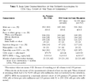
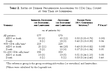
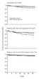

Original Article
A Controlled Trial of Two Nucleoside Analogues plus Indinavir in Persons with Human Immunodeficiency Virus Infection and CD4 Cell Counts of 200 per Cubic Millimeter or Less
Scott M. Hammer, M.D., Kathleen E. Squires, M.D., Michael D. Hughes, Ph.D., Janet M. Grimes, M.S., Lisa M. Demeter, M.D., Judith S. Currier, M.D., Joseph J. Eron, Jr., M.D., Judith E. Feinberg, M.D., Henry H. Balfour, Jr., M.D., Lawrence R. Deyton, M.D., Jeffrey A. Chodakewitz, M.D., Margaret A. Fischl, M.D., John P. Phair, M.D., Louise Pedneault, M.D., Bach-Yen Nguyen, M.D., and Jon C. Cook, B.Sc. for the AIDS Clinical Trials Group 320 Study Team
N Engl J Med 1997; 337:725-733September 11, 1997DOI: 10.1056/NEJM199709113371101
- Abstract
- Article
- References
- Citing Articles (1189)
- Letters
Background
The efficacy and safety of adding a protease inhibitor to two nucleoside analogues to treat human immunodeficiency virus type 1 (HIV-1) infection are not clear. We compared treatment with the protease inhibitor indinavir in addition to zidovudine and lamivudine with treatment with the two nucleosides alone in HIV-infected adults previously treated with zidovudine.
Methods
A total of 1156 patients not previously treated with lamivudine or protease inhibitors were stratified according to CD4 cell count (50 or fewer vs. 51 to 200 cells per cubic millimeter) and randomly assigned to one of two daily regimens: 600 mg of zidovudine and 300 mg of lamivudine, or that regimen with 2400 mg of indinavir. Stavudine could be substituted for zidovudine. The primary end point was the time to the development of the acquired immunodeficiency syndrome (AIDS) or death.
Results
The proportion of patients whose disease progressed to AIDS or death was lower with indinavir, zidovudine (or stavudine), and lamivudine (6 percent) than with zidovudine (or stavudine) and lamivudine alone (11 percent; estimated hazard ratio, 0.50; 95 percent confidence interval, 0.33 to 0.76; P = 0.001). Mortality in the two groups was 1.4 percent and 3.1 percent, respectively (estimated hazard ratio, 0.43; 95 percent confidence interval, 0.19 to 0.99; P = 0.04). The effects of treatment were similar in both CD4 cell strata. The responses of CD4 cells and plasma HIV-1 RNA paralleled the clinical results.
Conclusions
Treatment with indinavir, zidovudine, and lamivudine as compared with zidovudine and lamivudine alone significantly slows the progression of HIV-1 disease in patients with 200 CD4 cells or fewer per cubic millimeter and prior exposure to zidovudine.
Media in This Article
Article Activity
Progress in the field of antiretroviral therapy for human immunodeficiency virus type 1 (HIV-1) infection has brought the end of the zidovudine-monotherapy era,1-3 an improved understanding of the pathogenesis of HIV-1 disease,4-9 demonstrations of the prognostic importance of plasma HIV-1 RNA quantification,10-17 and the availability of increasingly potent therapeutic agents. Much of this progress is linked to the introduction of the HIV-protease inhibitors, drugs that inhibit the processing of Gag and Gag–Pol polyprotein precursors and thus prevent the maturation of virions.18-20 Trials of HIV-protease inhibitors have shown beneficial effects on CD4 cell counts and plasma HIV-1 RNA concentrations to a degree not previously described with approved reverse-transcriptase inhibitors.21-26 The most notable findings have involved three-drug combinations that include a potent HIV-protease inhibitor and two nucleoside analogues. Specifically, when patients previously exposed to zidovudine who had either 50 to 400 or 50 or fewer CD4 cells per cubic millimeter were treated with indinavir, zidovudine, and lamivudine, plasma HIV-1 RNA concentrations were suppressed to less than 500 copies per milliliter in 85 percent and 65 percent of patients, respectively.24,25 These findings have raised the important question of the clinical efficacy and safety of a three-drug regimen containing indinavir. We addressed that issue in this study.
Methods
Study Design and Patients
The AIDS Clinical Trials Group 320 Study was a randomized, double-blind, placebo-controlled trial that compared the three-drug regimen of indinavir (Crixivan), open-label zidovudine (Retrovir) or stavudine (Zerit), and lamivudine (Epivir) with the two-drug regimen of zidovudine (or stavudine) and lamivudine in HIV-infected patients who had no more than 200 CD4 cells per cubic millimeter and at least three months of prior zidovudine therapy. The randomization was stratified according to the CD4 cell count obtained at the time of screening (50 or fewer cells per cubic millimeter as compared with 51 to 200 cells per cubic millimeter). The study was designed to enroll 1750 patients, with 40 percent of them in the stratum with 50 or fewer CD4 cells per cubic millimeter. The primary outcome measure in the assessment of efficacy was the development of a new acquired immunodeficiency syndrome (AIDS)–defining event (except when the AIDS-defining event was the development of Pneumocystis carinii pneumonia, in which case both new and recurrent events were accepted as outcome measures) or death; in the assessment of safety, the outcome measure was the occurrence of adverse events (signs, symptoms, or laboratory abnormalities) defined as severe or worse according to the grading scheme of the AIDS Clinical Trials Group.27 The secondary outcome measures studied were death and changes in CD4 cell counts and plasma HIV-1 RNA concentrations.
The patients, recruited from 33 AIDS Clinical Trials Units and 7 National Hemophilia Foundation sites in the United States and Puerto Rico (see the Appendix), had to be more than 16 years old and had to have laboratory documentation of HIV-1 infection, a CD4 cell count of 200 per cubic millimeter or less within the 60 days before entry into the study, at least 3 months of prior zidovudine treatment, no more than 1 week of prior lamivudine treatment, no prior treatment with protease inhibitors, a Karnofsky performance score of at least 70, and acceptable laboratory values. The study was approved by the institutional review boards of the participating institutions, and all the patients gave written informed consent.
The patients received open-label zidovudine (200 mg three times daily) and lamivudine (150 mg two times daily) and were randomly assigned to receive indinavir (800 mg) or matching placebo every eight hours. In the first version of the protocol, only patients who could tolerate zidovudine and who had had at least 6 months of prior zidovudine therapy were enrolled, and the substitution of stavudine for zidovudine was permitted in the event of drug-associated toxicity at any point after randomization or if clinical progression of HIV-1 disease occurred that did not fulfill the criteria for a protocol-defined AIDS event at or beyond 24 weeks of study. The dose of stavudine was 40 mg two times daily (or 30 mg two times daily for patients weighing less than 60 kg). A protocol modification in October 1996 reduced the required prior exposure to zidovudine to at least three months and permitted patients who could not tolerate zidovudine to enter the study with stavudine substituted for zidovudine at the time of randomization. Prophylaxis for P. carinii pneumonia was mandated. Prophylaxis for other opportunistic infections was permitted, although the use of rifabutin was prohibited.
Patients who had verified AIDS-defining events were offered open-label indinavir therapy with the approval of the study chairs and without having their initial treatment assignments revealed. All potential AIDS-defining events were reviewed in a blinded fashion by the study chair; only those that met the criteria defined in the study protocol were included in the analysis.
Monitoring and Enrollment
The patients were followed at weeks 4, 8, and 16 and every eight weeks thereafter with a clinical assessment and routine laboratory monitoring. CD4 cell counts were determined twice at base line and at weeks 4, 8, 24, and 40. Enrollment began in January 1996. The study was reviewed twice by a data and safety monitoring board. At the second such review, on February 18, 1997, the comparison of the groups based on data on the patients randomized by January 27, 1997, showed a significant difference between groups that met the prespecified guideline for stopping the study.28 At that time, the board recommended that the accrual of patients be terminated and the study closed.
Plasma HIV-1 RNA concentrations were determined retrospectively in appropriately stored specimens from 190 randomly selected patients. These concentrations were measured twice at base line and at weeks 4, 8, 24, and 40 (Roche Amplicor HIV-1 Monitor assay).29
Statistical Analysis
The times to events were compared between treatment groups by Kaplan–Meier estimates, log-rank tests, and proportional-hazards models stratified according to the CD4 cell count obtained at the time of screening (50 or fewer vs. 51 to 200 cells per cubic millimeter).30 Changes in CD4 cell counts over time were compared in a mixed-effects regression model.31 An analysis of covariance adjusted for the screening CD4 cell count and the AIDS Clinical Trials Unit was used to compare changes in the CD4 cell count and the HIV-1 RNA concentration at each measurement.32 With regard to changes in HIV-1 RNA, this calculation used a regression for censored data: concentrations below the limit of quantification, 500 copies per milliliter, were censored.33 Analyses of all the variables pertaining to efficacy were performed on an intention-to-treat basis that included data on all patients randomized and all available follow-up data (including that obtained after the discontinuation of the study treatment). In the analyses of adverse events, the treatments were compared by a chi-square test; the follow-up data were censored either when a patient began receiving open-label indinavir or 56 days after the permanent discontinuation of the study treatment, whichever came first, and were restricted to patients for whom the study treatment was dispensed. All reported P values are two-sided. P values, estimates of differences between treatments, and 95 percent confidence intervals are unadjusted for the repeated interim analyses.
Results
Accrual and Characteristics of the Patients
There were 1156 patients randomized between January 29, 1996, and January 27, 1997. Of these, 439 (38 percent) had 50 CD4 cells or fewer per cubic millimeter and 717 (62 percent) had 51 to 200 CD4 cells per cubic millimeter. The base-line characteristics of the study patients (Table 1Table 1Base-Line Characteristics of the Patients According to CD4 Cell Count at the Time of Screening.) were well balanced between treatment groups.
Duration of Follow-up and Study Treatment
The median duration of follow-up was 38 weeks. Five percent of the patients were lost to follow-up; the duration of follow-up and the percentage of patients lost to follow-up were similar in both treatment groups and both CD4-cell strata.
Ten patients did not have any study treatment. Of the remaining 1146 patients, 227 (20 percent) discontinued the study treatment prematurely, more than seven days before reaching a study end point. The proportion who discontinued the study treatment was higher in the group receiving zidovudine (or stavudine) and lamivudine (28 percent) than in the group receiving indinavir, zidovudine (or stavudine), and lamivudine (12 percent, P<0.001). In the stratum with 50 CD4 cells or fewer per cubic millimeter, the proportions of patients discontinuing the study treatment in the two groups were 32 percent and 16 percent, respectively (P<0.001), and in the stratum with 51 to 200 CD4 cells per cubic millimeter, these proportions were 26 percent and 9 percent (P<0.001). Only 4 percent of patients (10 of 227) discontinued the study treatment prematurely because of protocol-defined adverse events: 4 patients assigned to zidovudine (or stavudine) and lamivudine and 6 patients assigned to indinavir, zidovudine (or stavudine), and lamivudine. Among the premature discontinuations, 52 percent (117 of 227) were initiated by the patients, and for approximately half these patients the reasons given included a desire to seek open-label therapy with protease inhibitors, concern about the plasma HIV-1 RNA concentration (on the basis of determinations made outside the study), or both.
Progression of Disease
Ninety-six patients (8 percent) had AIDS-defining events or died (Table 2Table 2Rates of Disease Progression According to CD4 Cell Count at the Time of Screening.). Sixty-three patients (11 percent) assigned to zidovudine (or stavudine) and lamivudine had disease progression, as compared with 33 patients (6 percent) assigned to indinavir, zidovudine (or stavudine), and lamivudine (P = 0.001; estimated hazard ratio, 0.50; 95 percent confidence interval, 0.33 to 0.76) (Figure 1AFigure 1Kaplan–Meier Estimates of the Proportion of Patients Who Did Not Reach the Primary Study End Point of AIDS or Death.). There was no significant difference in the relative effects of the two treatments between the patients with 50 CD4 cells or fewer per cubic millimeter and the patients with 51 to 200 CD4 cells per cubic millimeter. Forty-four patients in the former stratum (20 percent) had AIDS-defining events or died in the group assigned to zidovudine (or stavudine) and lamivudine, as compared with 23 patients (11 percent) in the group assigned to indinavir, zidovudine (or stavudine), and lamivudine (P = 0.005; estimated hazard ratio, 0.49; 95 percent confidence interval, 0.30 to 0.82) (Figure 1B). In the stratum with 51 to 200 CD4 cells per cubic millimeter, 19 patients (5 percent) had AIDS-defining events or died in the group assigned to zidovudine (or stavudine) and lamivudine, as compared with 10 patients (3 percent) in the group assigned to indinavir, zidovudine (or stavudine), and lamivudine (P = 0.08; estimated hazard ratio, 0.51; 95 percent confidence interval, 0.24 to 1.10) (Figure 1C).
Overall, 26 patients died (2.2 percent) (Table 2). Eighteen patients (3.1 percent) died in the group assigned to zidovudine (or stavudine) and lamivudine, as compared with eight (1.4 percent) in the group assigned to indinavir, zidovudine (or stavudine), and lamivudine (P = 0.04; estimated hazard ratio, 0.43; 95 percent confidence interval, 0.19 to 0.99). There was no significant difference in the relative effects of the two treatments between the two strata. Among the patients with 50 CD4 cells or fewer per cubic millimeter, 13 patients receiving only the two nucleoside analogues died (5.9 percent), as compared with 5 patients receiving all three drugs (2.3 percent; P = 0.05; estimated hazard ratio, 0.37; 95 percent confidence interval, 0.13 to 1.04). Among the patients with 51 to 200 CD4 cells per cubic millimeter, five patients assigned to zidovudine (or stavudine) and lamivudine (1.4 percent) died, as compared with three patients assigned to indinavir, zidovudine (or stavudine), and lamivudine (0.8 percent).
A total of 109 of the 1156 patients (9.4 percent) were treated with stavudine instead of zidovudine before the development of an AIDS-defining event or death. None of the three patients who were initially assigned to stavudine had a protocol-defined end point. Among the 106 patients in whom stavudine was substituted for zidovudine after randomization, 3 (all in the two-nucleoside group) had AIDS-defining events, and none died.
AIDS-Defining Events
In all, there were 91 AIDS-defining events (including multiple events per patient). Sixty of these occurred among the patients assigned to receive zidovudine (or stavudine) and lamivudine, as compared with 31 among the patients assigned to indinavir, zidovudine (or stavudine), and lamivudine. The most common events were infections with P. carinii, cytomegalovirus, and Mycobacterium avium complex (constituting 25 percent, 20 percent, and 16 percent of events, respectively).
Changes in CD4 Cell Counts
Increased CD4 cell counts that persisted above base-line values were seen in both treatment groups, with superior responses in the group receiving indinavir. At weeks 4, 8, 24, and 40, the mean CD4 cell count in the patients assigned to zidovudine (or stavudine) and lamivudine increased by 27, 30, 18, and 40 cells per cubic millimeter, respectively. The corresponding mean increases in the patients assigned to indinavir, zidovudine (or stavudine), and lamivudine were 46, 65, 91, and 121 cells per cubic millimeter (Figure 2AFigure 2Mean Changes from Base Line in the CD4 Cell Count.). Thus, the change at week 4 was greater by 19 cells per cubic millimeter (P<0.001) in the group that received indinavir, and the difference increased with time (P<0.001), to 36, 73, and 82 cells per cubic millimeter at weeks 8, 24, and 40, respectively.
The responses of the CD4 cell count to treatment are shown in Figure 2B and Figure 2C. In the group receiving zidovudine (or stavudine) and lamivudine, the early increases from base line — those at weeks 4 and 8 — were smaller in the stratum with 50 CD4 cells or fewer per cubic millimeter than in the stratum with 51 to 200 CD4 cells per cubic millimeter. However, the changes from base line in the longer term — those at weeks 24 and 40 — were similar in the two strata. Exploratory analyses of the CD4 cell counts in the two treatment groups when the data were censored at the times patients changed from the treatment to which they were initially assigned showed increases from base line that were similar to those in the intention-to-treat analyses at weeks 4, 8, and 24 (data not shown). At week 40, the difference between the two treatment groups was smaller in the intention-to-treat analysis than in the censored analysis (difference in mean change, 82 vs. 115 cells per cubic millimeter), suggesting that the difference may have been reduced by the greater proportion of subjects who changed treatment in the group receiving zidovudine (or stavudine) and lamivudine.
Changes in Plasma HIV-1 RNA Concentrations
The responses of the plasma HIV-1 RNA concentrations to treatment were studied in 190 randomly selected patients. There were persistent decreases from the base-line values in both treatment groups, with significantly better responses in the group whose treatment included indinavir (P<0.001 in an area-under-the-curve analysis). At weeks 4, 8, 24, and 40, the mean decreases in plasma HIV-1 RNA in the group receiving zidovudine (or stavudine) and lamivudine were 0.9, 0.6, 0.6, and 1.0 log10 copies per milliliter, respectively. The corresponding decreases in the group receiving indinavir, zidovudine (or stavudine), and lamivudine were 1.8, 2.3, 2.8, and 2.1 log10 copies per milliliter (Figure 3AFigure 3Mean Change from Base Line in the Plasma HIV-1 RNA Concentration.). The changes from base line were significantly greater at each time point in the group treated with indinavir (P<0.001 at weeks 4, 8, and 24; P = 0.007 at week 40). At week 24, the proportion of patients with plasma HIV-1 RNA concentrations of less than 500 copies per milliliter was 9 percent in the two-nucleoside group, as compared with 60 percent in the group treated with indinavir.
The plasma HIV-1 RNA responses according to the CD4 cell count are shown in Figure 3B and Figure 3C. In the patients with 50 CD4 cells or fewer per cubic millimeter, the decreases in plasma HIV-1 RNA appeared to be smaller than those in the patients with 51 to 200 CD4 cells per cubic millimeter. However, conclusions about stratum-specific plasma HIV-1 RNA responses need to be made cautiously because of the small numbers of patients followed through week 40.
Adverse Events
The proportion of patients with signs and symptoms that were severe (grade 3) or worse (grade 4) in the group receiving zidovudine (or stavudine) and lamivudine was 18 percent, as compared with 21 percent in the group receiving indinavir, zidovudine (or stavudine), and lamivudine (P = 0.17). The most common symptoms were nonspecific discomfort, malaise, fever, headache, and nausea and vomiting, with no difference in the reporting of symptoms between treatment groups.
The proportion of patients with severe laboratory abnormalities or worse in the group receiving zidovudine (or stavudine) and lamivudine was 26 percent, as compared with 21 percent in the group receiving indinavir, zidovudine (or stavudine), and lamivudine (P = 0.06). This difference primarily reflected a difference between the groups in the incidence of neutropenia (15 percent and 5 percent, respectively; P<0.001). In contrast, the proportion of patients with hyperbilirubinemia was 1 percent in the two-nucleoside group, as compared with 6 percent in the group treated with indinavir (P<0.001), a finding compatible with the known elevation of indirect bilirubin associated with the use of indinavir. Two percent of the patients in each treatment group had hyperglycemia.
Five patients receiving zidovudine (or stavudine) and lamivudine (1 percent) had episodes of renal colic or nephrolithiasis (irrespective of grade), as compared with 21 patients receiving indinavir, zidovudine (or stavudine), and lamivudine (4 percent, P = 0.001). Three of the five patients in the two-nucleoside group in whom renal colic or nephrolithiasis developed had that condition after discontinuing the study treatment and starting open-label indinavir treatment.
Five new diagnoses of diabetes mellitus were recorded: two in the two-nucleoside group and three in the group treated with indinavir.
Discussion
This study showed the clinical superiority of the three-drug regimen containing indinavir over the two-nucleoside combination in patients previously treated with zidovudine who had CD4 cell counts of 200 per cubic millimeter or less. The proportion of patients whose disease progressed to AIDS or death was reduced from 11 percent to 6 percent by the three-drug combination, a 50 percent reduction (P = 0.001). The hazard ratios in the study patients as a whole (0.50), those with CD4 cell counts of 50 per cubic millimeter or less (0.49), and those with counts of 51 to 200 per cubic millimeter (0.51) were very similar, suggesting that the effect of treatment was similar across the study population, although the possibility of differential effects cannot be ruled out. Mortality, low in both groups, was reduced from 3.1 percent to 1.4 percent with the three-drug regimen (P = 0.04). Thus, there was evidence of a reduction in mortality that was consistent with the reduced risk of progression to the primary outcome measure of AIDS or death.
The rate of loss to follow-up in this study was low (5 percent), and the overall rate of premature discontinuation of treatment was moderate (20 percent). Seventy-nine percent of the 96 AIDS-defining events or deaths occurred while the patients were receiving the study treatment or within seven days of its discontinuation. Although rates of withdrawal from treatment differed between the two study groups, the tendency for patients who withdrew prematurely from the two-nucleoside group to seek treatment with protease inhibitors would tend to narrow the differences between the groups in rates of disease progression and therefore should not affect the conclusions of the study. Conversely, when a study is terminated early because a stopping guideline is used, differences between the treatment groups tend to be overestimated because of random variation.34 However, it is impossible to determine the relative magnitude of these effects.
These findings confirm on the basis of clinical end points the results of earlier trials of the combination of indinavir, zidovudine, and lamivudine in patients previously treated with zidovudine, trials that showed that the three-drug combination produces superior responses in plasma HIV-1 RNA concentrations and CD4 cell counts.24,25 The suppression of plasma HIV-1 RNA to unquantifiable levels in the majority of subjects with this drug combination is accompanied by greater suppression of HIV-1 RNA expression in lymphoid tissue35 and may prevent the emergence of resistance — factors that may add to the clinical benefit now established for this regimen. Our study also found superior responses of CD4 cells and plasma HIV-1 RNA with the three-drug regimen.
We chose the combination of zidovudine and lamivudine as the control treatment because of the unique interactions between these two agents with respect to mutations conferring resistance, the results of phase 2 trials, the tolerance associated with the regimen, and its widespread use in clinical practice.36-40 The clinical benefit of lamivudine when that drug is added to previously available nucleoside analogues to treat patients with 25 to 250 CD4 cells per cubic millimeter was recently confirmed in the CAESAR trial, in which the risk of AIDS or death was reduced by approximately 50 percent.41 In the control group in our study, there was a relatively low rate of disease progression, as well as a moderate increase in the CD4 cell count and a decline in plasma HIV-1 RNA; these persisted throughout the study, even though it is now recognized that simply adding lamivudine to a preexisting regimen is not a standard clinical approach. The strength of the control group in this study is also an important difference between this study and previously reported studies of other HIV-protease inhibitors that have assessed clinical end points.42,43 In the Abbott M94-247 trial, ritonavir or placebo was added to stable prior nucleoside-analogue therapy or no therapy.42 In the Hoffmann–La Roche NV14256 trial, a regimen of saquinavir plus zalcitabine was compared with zalcitabine monotherapy.43 In the context of these other trials, our study makes it clear that more potent therapies, now represented by three-drug regimens containing a protease inhibitor, are preferable in patients with advanced disease. The durability of the clinical benefit conferred by indinavir as part of a three-drug regimen has not been fully defined, however.
Improving the use of the currently approved agents to treat HIV-1 infection, and the promising drugs on the clinical horizon,44-46 in the management of HIV-1 disease remains a challenge.47 However, this study supports the view that employing well-tolerated regimens of increasing potency will translate into greater clinical benefits for patients with HIV-1 infection.
Supported in part by the AIDS Clinical Trials Group, National Institute of Allergy and Infectious Diseases; by the General Clinical Research Center units funded by the National Center for Research Resources; and by Merck and Co. (for institutions enrolling more than 30 patients).
Drs. Hammer, Squires, Hughes, Demeter, Currier, Eron, Feinberg, Balfour, Fischl, and Phair have served as ad hoc consultants for, or received honorariums or research grants from, one or more of the pharmaceutical firms whose products were studied (Merck, Glaxo–Wellcome, and Bristol-Myers Squibb).
Source Information
From Harvard Medical School, Boston (S.M.H.); the University of Alabama at Birmingham, Birmingham (K.E.S.); the London School of Hygiene and Tropical Medicine, London (M.D.H.); Harvard School of Public Health, Boston (M.D.H., J.M.G.); the University of Rochester, Rochester, N.Y. (L.M.D.); the University of Southern California, Los Angeles (J.S.C.); the University of North Carolina, Chapel Hill (J.J.E.); the University of Cincinnati, Cincinnati (J.E.F.); the University of Minnesota, Minneapolis (H.H.B.); the Division of AIDS, National Institute of Allergy and Infectious Diseases, Bethesda, Md. (L.R.D.); Merck and Co., West Point, Pa. (J.A.C.); and the University of Miami, Miami (M.A.F.).
Address reprint requests to Dr. Hammer at the Division of Infectious Diseases, Beth Israel Deaconess Medical Center, 1 Deaconess Rd., Boston, MA 02215.
The institutions and investigators participating in the AIDS Clinical Trials Group 320 Study are listed in the Appendix.
Other authors were John P. Phair, M.D. (Northwestern University), William Spreen, Pharm.D. (Glaxo–Wellcome), Louise Pedneault, M.D. (Bristol-Myers Squibb), Bach-Yen Nguyen, M.D. (Merck), and Jon C. Cook, B.Sc. (AIDS Clinical Trials Group Operations Center).
Appendix
The following institutions and investigators participated in the AIDS Clinical Trials Group 320 Study: University of North Carolina — T. Lane and J. Horton; University of Cincinnati — D. Neumann and B. Letcher; University of Puerto Rico — G. Vazquez, M. Cruz-Ortiz, and I. Lopes; University of Minnesota — C. Kumekawa, R. Schut, and S. Swindells; Washington University — P. Tebas, W. Powderly, and A. Slack; Ohio State University College of Medicine — M. Para, R. Fass, and J. Neidig; Northwestern University — J. Pulvirenti and J. Pottage, Jr.; University of Alabama and Emory University — J. Lennox and K. Tamburello; New York University Medical Center and Bellevue Hospital — R. Gulick, J. Dowling, and M. Laverty; University of Miami — E. Scerpella and A. Rodriguez; University of Texas at Galveston — R. Pollard, S. Hausrath, and M. Pickthall; Case Western Reserve University — B. Gripshover, H. Valdez, and M. Chance; Howard University — R. Delapenha, J. McNeil, and Y. Butler; Harvard University and Boston Medical Center — L. Jackson-Pope and T. Cooley; University of Rochester — R. Hewitt and C. Greisberger; University of California, Los Angeles — R. Mitsuyasu, M. Guerrero, and P. Miller; Indiana University Hospital — K. Fife, H. Nixon, and D. Heise; Meharry Medical College and Vanderbilt University Medical Center — M.A. South, D. Haas, and S. Raffanti; Duke University — C. Hicks, P. Robinson, and K. Shipp; University of California, San Diego — C. Fegan, T.-C. Meng, and S. Little; Johns Hopkins University — R. Becker, M. Higgins, L. Apuzzo, and J.B. Jackson; Mount Sinai Medical Center — P. Gerits, H. Mendoza, and D. Mildvan; University of Pennsylvania — R.R. MacGregor, I. Matozzo, and E. McCann; University of Southern California — M. Dube and C. Olsen; University of Colorado — D. Kuritzkes, B. Putnam, and D. Torre; Tulane University and Louisiana State University — J. Lertora, R. Clark, and M. Beilke; University of Hawaii — S. Souza, M. Millard, and L. Oshita; Stanford University — T. Merigan, Jr., J. Fessel, and D. Israelski; Memorial Sloan-Kettering Cancer Center — M. Giordano, P. Ristau, and M. Granville; University of Washington, Seattle — A. Collier, R. Vasquez, B. Royer, and R. Coombs; New York University Medical Center and Bellevue Hospital (pediatric site) — W. Borkowsky, S. Chandwani, and M. Minter; Columbus Children's Hospital — M. Brady, J. Hunkler, and C. Callaway; Medical University of South Carolina — G. Johnson and E. Matters; National Hemophilia Foundation — T. Coates, T. Hofstra, W.-Y. Wong, E. Eyster, S. Seremetis, C. Kessler, S. Stabler, W. Hanna, C. Leissenger, J. Gill, P. Timmons, W.K. Hoots, and M. Cantini; Division of AIDS, National Institute of Allergy and Infectious Diseases — J. Ioannidis and A. Martinez; Statistical and Data Management Center — K. Kazial; Harvard School of Public Health — S.-H. Liou; Community Constituency Group — H. Chang; Bristol-Myers Squibb — J. Skovronski and L. Dunkle; Merck and Co. — A. Meibohm.
References
1
Hammer SM ,Katzenstein DA ,Hughes MD , et al. A trial comparing nucleoside monotherapy with combination therapy in HIV-infected adults with CD4 cell counts from 200 to 500 per cubic millimeter. N Engl J Med 1996;335:1081-1090
Free Full Text | Web of Science | Medline2
The Delta Coordinating Committee
CrossRef | Web of Science | Medline3
Englund JA ,Baker CJ ,Raskino C , et al. Zidovudine, didanosine, or both as the initial treatment for symptomatic HIV-infected children. N Engl J Med 1997;336:1704-1712
Free Full Text | Web of Science | Medline4
Wei X ,Ghosh SK ,Taylor ME , et al. Viral dynamics in human immunodeficiency virus type 1 infection. Nature 1995;373:117-122
CrossRef | Web of Science | Medline5
Ho DD ,Neumann AU ,Perelson AS ,Chem W ,Leonard JM ,Markowitz M . Rapid turnover of plasma virions and CD4 lymphocytes in HIV-1 infection. Nature 1995;373:123-126
CrossRef | Web of Science | Medline6
Perelson AS, Neumann AU, Markowitz M, Leonard JM, Ho DD. HIV-1 dynamics in vivo: virion clearance rate, infected cell life-span, and viral generation time. Science 1996;271:1582-6.
7
Havlir DV ,Richman DD . Viral dynamics of HIV: implications for drug development and therapeutic strategies. Ann Intern Med 1996;124:984-994
Web of Science | Medline8
Haase AT ,Henry K ,Zupancic M , et al. Quantitative image analysis of HIV-1 infection in lymphoid tissue. Science 1996;274:985-989
CrossRef | Web of Science | Medline9
Fauci AS . Host factors and the pathogenesis of HIV-induced disease. Nature 1996;384:529-534
CrossRef | Web of Science | Medline10
Katzenstein DA ,Hammer SM ,Hughes MD , et al. The relation of virologic and immunologic markers to clinical outcomes after nucleoside therapy in HIV-infected adults with 200 to 500 CD4 cells per cubic millimeter. N Engl J Med 1996;335:1091-1098
Free Full Text | Web of Science | Medline11
Mellors JW ,Kingsley LA ,Rinaldo CR Jr , et al. Quantitation of HIV-1 RNA in plasma predicts outcome after seroconversion. Ann Intern Med 1995;122:573-579
Web of Science | Medline12
Mellors JW ,Rinaldo CR Jr ,Gupta P ,White RM ,Todd JA ,Kingsley LA . Prognosis in HIV-1 infection predicted by the quantity of virus in plasma. Science 1996;272:1167-1170
CrossRef | Web of Science | Medline13
Mellors JW ,Munoz A ,Giorgi JV , et al. Plasma viral load and CD4+ lymphocytes as prognostic markers of HIV-1 infection. Ann Intern Med 1997;126:946-954
Web of Science | Medline14
Welles SL ,Jackson JB ,Yen-Lieberman B , et al. Prognostic value of plasma human immunodeficiency virus type 1 (HIV-1) RNA levels in patients with advanced HIV-1 disease and with little or no zidovudine therapy. J Infect Dis 1996;174:696-703
CrossRef | Web of Science | Medline15
Coombs RW ,Welles SL ,Hooper C , et al. Association of plasma human immunodeficiency virus type 1 RNA level with risk of clinical progression in patients with advanced infection. J Infect Dis 1996;174:704-712
CrossRef | Web of Science | Medline16
Hughes MD ,Johnson VA ,Hirsch MS , et al. Monitoring plasma HIV-1 RNA levels in addition to CD4+ lymphocyte count improves assessment of antiretroviral therapeutic response. Ann Intern Med 1997;126:929-938
Web of Science | Medline17
O'Brien WA, Hartigan PM, Daar ES, Simberkoff MS, Hamilton JD, The VA Cooperative Study Group on AIDS
Web of Science | Medline18
Kohl NE ,Emini EA ,Schleif WA , et al. Active human immunodeficiency virus protease is required for viral infectivity. Proc Natl Acad Sci U S A 1988;85:4686-4690
CrossRef | Web of Science | Medline19
Peng C ,Ho BK ,Chang TW ,Chang NT . Role of human immunodeficiency virus type 1-specific protease in core protein maturation and viral infectivity. J Virol 1989;63:2550-2556
Web of Science | Medline20
Seelmeier S ,Schmidt H ,Turk V ,von der Helm K . Human immunodeficiency virus has an aspartic-type protease that can be inhibited by pepstatin A. Proc Natl Acad Sci U S A 1988;85:6612-6616
CrossRef | Web of Science | Medline21
Danner SA ,Carr A ,Leonard JM , et al. A short-term study of the safety, pharmacokinetics, and efficacy of ritonavir, an inhibitor of HIV-1 protease. N Engl J Med 1995;333:1528-1533
Free Full Text | Web of Science | Medline22
Markowitz M ,Saag M ,Powderly WG , et al. A preliminary study of ritonavir, an inhibitor of HIV-1 protease, to treat HIV-1 infection. N Engl J Med 1995;333:1534-1539
Free Full Text | Web of Science | Medline23
Stein D, Drusano G, Steigbigel R, et al. Two year follow-up of patients treated with indinavir 800 mg q 8 h. In: Program and abstracts of the Fourth Conference on Retroviruses and Opportunistic Infections, Washington, D.C., January 22–26, 1997:100. abstract.
24
Gulick RM ,Mellors JW ,Havlir D , et al. Treatment with indinavir, zidovudine, and lamivudine in adults with human immunodeficiency virus infection and prior antiretroviral therapy. N Engl J Med 1997;337:734-739
Free Full Text | Web of Science | Medline25
Hirsch M, Protocol 039 (Indinavir) Study Group, Meibohm A, Rawlins S, Leavitt R. Indinavir in combination with zidovudine and lamivudine in ZDV-experienced patients with CD4 cell counts <50 cells/mm3. In: Program and abstracts of the Fourth Conference on Retroviruses and Opportunistic Infections, Washington, D.C., January 22–26, 1997:207. abstract.
26
Powderly W, Sension M, Conant M, Stein A, Clendeninn N. The efficacy of Viracept (nelfinavir mesylate, NFV) in pivotal phase II/III double-blind randomized controlled trials as monotherapy and in combination with d4T or AZT/3TC. In: Program and abstracts of the Fourth Conference on Retroviruses and Opportunistic Infections, Washington, D.C., January 22–26, 1997:132. abstract.
27
Division of AIDS. Division of AIDS table for grading severity of adult adverse experiences. Rockville, Md.: National Institute of Allergy and Infectious Diseases, 1996.
28
Peto R ,Pike MC ,Armitage P , et al. Design and analysis of randomized clinical trials requiring prolonged observation of each patient. I. Introduction and design. Br J Cancer 1976;34:585-612
CrossRef | Web of Science | Medline29
Mulder J ,McKinney N ,Christopherson C ,Sninsky J ,Greenfield L ,Kwok S . Rapid and simple PCR assay for quantitation of human immunodeficiency virus type 1 RNA in plasma: application to acute retroviral infection. J Clin Microbiol 1994;32:292-300
Web of Science | Medline30
Kalbfleisch JD, Prentice RL. The statistical analysis of failure time data. New York: John Wiley, 1980.
31
Laird NM ,Ware JH . Random-effects models for longitudinal data. Biometrics 1982;38:963-974
CrossRef | Web of Science | Medline32
Pocock SJ. Clinical trials: a practical approach. Chichester, England: John Wiley, 1983.
33
The Lifereg procedure. In: SAS/STAT user's guide. 4th ed. Cary, N.C.: SAS Institute, 1989:997-1025.
34
Hughes MD ,Pocock SJ . Stopping rules and estimation problems in clinical trials. Stat Med 1988;7:1231-1242
CrossRef | Web of Science | Medline35
Wong JK, Gunthard HF, Havlir DV, et al. Reduction of HIV in blood and lymph nodes after potent antiretroviral therapy. In: Program and abstracts of the Fourth Conference on Retroviruses and Opportunistic Infections, Washington, D.C., January 22–26, 1997:207. abstract.
36
Larder BA ,Kemp SD ,Harrigan PR . Potential mechanism for sustained antiretroviral efficacy of AZT-3TC combination therapy. Science 1995;269:696-699
CrossRef | Web of Science | Medline37
Eron JJ ,Benoit SL ,Jemsek J , et al. Treatment with lamivudine, zidovudine, or both in HIV-positive patients with 200 to 500 CD4+ cells per cubic millimeter. N Engl J Med 1995;333:1662-1669
Free Full Text | Web of Science | Medline38
Katlama C ,Ingrand D ,Loveday C , et al. Safety and efficacy of lamivudine-zidovudine combination therapy in antiretroviral-naive patients: a randomized controlled comparison with zidovudine monotherapy. JAMA 1996;276:118-125
CrossRef | Web of Science | Medline39
Staszewski S ,Loveday C ,Picazo JJ , et al. Safety and efficacy of lamivudine-zidovudine combination therapy in zidovudine-experienced patients: a randomized controlled comparison with zidovudine monotherapy. JAMA 1996;276:111-117
CrossRef | Web of Science | Medline40
Bartlett JA ,Benoit SL ,Johnson VA , et al. Lamivudine plus zidovudine compared with zalcitabine plus zidovudine in patients with HIV infection: a randomized, double-blind, placebo-controlled trial. Ann Intern Med 1996;125:161-172
Web of Science | Medline41
CAESAR Coordinating Committee
CrossRef | Web of Science | Medline42
Cameron DW, Heath-Chiozzi M, Kravcik S, et al. Prolongation of life and prevention of AIDS complications in advanced HIV immunodeficiency with ritonavir: update. In: Volume 1 of the Abstracts of the XI International Conference on AIDS, Vancouver, B.C., July 7–12, 1996:24. abstract.
43
Salgo M, Beattie D, Bragman K, et al. Saquinavir (Invirase, SQV) vs. HIVID (zalcitabine, ddC) vs. combination as treatment for advanced HIV infection in patients discontinuing/unable to take retrovir (zidovudine ZDV). In: Volume 1 of the Abstracts of the XI International Conference on AIDS, Vancouver, B.C., July 7–12, 1996:24. abstract.
44
Harrigan R, Stone C, Griffin P, et al. Antiretroviral activity and resistance profile of the carbocyclic nucleoside HIV reverse transcriptase inhibitor 1592U89. In: Program and abstracts of the Fourth Conference on Retroviruses and Opportunistic Infections, Washington, D.C., January 22–26, 1997:67. abstract.
45
Schooley RT, 141W94 International Study Group. Preliminary data from a phase I/II study on the safety and antiviral efficacy of the combination of 141W94 plus 1592U89 in HIV-infected patients with 150 to 400 CD4+ cells/mm3. In: Program and abstracts of the Fourth Conference on Retroviruses and Opportunistic Infections, Washington, D.C., January 22–26, 1997:206. abstract.
46
Ruiz N, DuPont Merck Study Group. A double-blind pilot study to evaluate the antiretroviral activity, tolerability of DMP 266 in combination with indinavir (cohort III). In: Program and abstracts of the Fourth Conference on Retroviruses and Opportunistic Infections, Washington, D.C., January 22–26, 1997:206. abstract.
47
Carpenter CCJ ,Fischl MA ,Hammer SM , et al. Antiretroviral therapy for HIV infection in 1997: updated recommendations of the International AIDS Society-USA panel. JAMA 1997;77:1962-1969
CrossRef | Web of Science
Citing Articles
1
Donglin Ding, Xiying Qu, Lin Li, Xin Zhou, Sijie Liu, Shiguan Lin, Pengfei Wang, Shaohui Liu, Chuijin Kong, Xiaohui Wang, Lin Liu, Huanzhang Zhu. (2013) Involvement of histone methyltransferase GLP in HIV-1 latency through catalysis of H3K9 dimethylation. Virology 440:2, 182-189
CrossRef2
Zheng Zhang, Junliang Fu, Xiangsheng Xu, Siyu Wang, Ruonan Xu, Min Zhao, Weimin Nie, Xicheng Wang, Jiyuan Zhang, Taisheng Li, Lishan Su, Fu-Sheng Wang. (2013) Safety and immunological responses to human mesenchymal stem cell therapy in difficult-to-treat HIV-1-infected patients. AIDS 27:8, 1283-1293
CrossRef3
Harleen Gakhar, Amanda Kamali, Mark Holodniy. (2013) Health-related Quality of Life Assessment after Antiretroviral Therapy: A Review of the Literature. Drugs 73:7, 651-672
CrossRef4
Kit N. Simpson, Pamela P. Pei, Jörgen Möller, Robert W. Baran, Birgitta Dietz, William Woodward, Kristen Migliaccio-Walle, J. Jaime Caro. (2013) Lopinavir/Ritonavir Versus Darunavir Plus Ritonavir for HIV Infection: A Cost-Effectiveness Analysis for the United States. PharmacoEconomics
CrossRef5
O Gasser, C Brander, M Wolbers, NV Brown, A Rauch, HF Günthard, M Battegay, C Hess, . (2013) Expansion of interferon-γ-secreting HIV-specific T cells during successful antiretroviral therapy. HIV Medicine 14:4, 241-246
CrossRef6
Adriana S.A. Andrade, Reena Deutsch, Shivaun A. Celano, Nichole A. Duarte, Thomas D. Marcotte, Anya Umlauf, J. Hampton Atkinson, J. Allen McCutchan, Donald Franklin, Terry J. Alexander, Justin C. McArthur, Christina Marra, Igor Grant, Ann C. Collier. (2013) Relationships Among Neurocognitive Status, Medication Adherence Measured by Pharmacy Refill Records, and Virologic Suppression in HIV-Infected Persons. JAIDS Journal of Acquired Immune Deficiency Syndromes 62:3, 282-292
CrossRef7
Conrad Kabali, Lillian Mtei, Daniel R. Brooks, Richard Waddell, Muhammad Bakari, Mecky Matee, Robert D. Arbeit, Kisali Pallangyo, C. Fordham von Reyn, C. Robert Horsburgh. (2013) Increased mortality associated with treated active tuberculosis in HIV-infected adults in Tanzania. Tuberculosis
CrossRef8
Jean-Philippe Chaput, Margot Shields, Mark S. Tremblay. Statistics in Childhood Obesity. In: Encyclopedia of Statistical Sciences. John Wiley & Sons, Inc., 2013.
CrossRef9
Haralambos Tzoupis, Georgios Leonis, Thomas Mavromoustakos, Manthos G. Papadopoulos. (2013) A Comparative Molecular Dynamics, MM–PBSA and Thermodynamic Integration Study of Saquinavir Complexes with Wild-Type HIV-1 PR and L10I, G48V, L63P, A71V, G73S, V82A and I84V Single Mutants. Journal of Chemical Theory and Computation130220071949005
CrossRef10
C. Lozupone, A. Cota-Gomez, B. E. Palmer, D. J. Linderman, E. S. Charlson, E. Sodergren, M. Mitreva, S. Abubucker, J. Martin, G. Yao, T. B. Campbell, S. C. Flores, G. Ackerman, J. Stombaugh, L. Ursell, J. M. Beck, J. L. Curtis, V. B. Young, S. V. Lynch, L. Huang, G. M. Weinstock, K. S. Knox, H. Twigg, A. Morris, E. Ghedin, F. D. Bushman, R. G. Collman, R. Knight, A. P. Fontenot, . (2013) Widespread Colonization of the Lung by Tropheryma whipplei in HIV Infection. American Journal of Respiratory and Critical Care Medicine
CrossRef11
Lihui Zhao, Lu Tian, Tianxi Cai, Brian Claggett, L. J. Wei. (2013) Effectively selecting a target population for a future comparative study. Journal of the American Statistical Association130204062200005
CrossRef12
Leilani Schwarcz, Miao-Jung Chen, Eric Vittinghoff, Ling Hsu, Sandra Schwarcz. (2013) Declining incidence of AIDS-defining opportunistic illnesses. AIDS 27:4, 597-605
CrossRef13
Zachary Y. Kerr, Katye R. Miller, Dylan Galos, Randi Love, Charles Poole. (2013) Challenges, Coping Strategies, and Recommendations Related to the HIV Services Field in the HAART Era: A Systematic Literature Review of Qualitative Studies from the United States and Canada. AIDS Patient Care and STDs 27:2, 85-95
CrossRef14
Omar Galárraga, Becky L. Genberg, Rosemarie A. Martin, M. Barton Laws, Ira B. Wilson. (2013) Conditional Economic Incentives to Improve HIV Treatment Adherence: Literature Review and Theoretical Considerations. AIDS and Behavior
CrossRef15
Igor Kozak, J. Allen McCutchan, William R. Freeman. HIV-Associated Infections. In: Retina. Elsevier, 2013:1441-1472.
CrossRef16
Xinyan Zhang, Peter W. Hunt, Scott M. Hammer, Michelle S. Cespedes, Kristine B. Patterson, Ronald J. Bosch. (2013) Immune Activation While on Potent Antiretroviral Therapy Can Predict Subsequent CD4+ T-Cell Increases Through 15 Years of Treatment. HIV Clinical Trials 14:2, 61-67
CrossRef17
Sunil S. Solomon, Gregory M. Lucas, Nagalingeswaran Kumarasamy, Tokugha Yepthomi, Pachamuthu Balakrishnan, Aylur K. Ganesh, Santhanam Anand, Richard D. Moore, Suniti Solomon, Shruti H. Mehta. (2012) Impact of generic antiretroviral therapy (ART) and free ART programs on time to initiation of ART at a tertiary HIV care center in Chennai, India. AIDS Care1-6
CrossRef18
Katherine C. Groves, David F. Bibby, Duncan A. Clark, Are Isaksen, Jane R. Deayton, Jane Anderson, Chloe Orkin, Andrew J. Stagg, Áine McKnight. (2012) Disease Progression in HIV-1–Infected Viremic Controllers. JAIDS Journal of Acquired Immune Deficiency Syndromes 61:4, 407-416
CrossRef19
M. S. Shiels, O. Landgren, R. Costello, A. Zingone, J. J. Goedert, E. A. Engels. (2012) Free Light Chains and the Risk of AIDS-Defining Opportunistic Infections in HIV-Infected Individuals. Clinical Infectious Diseases 55:10, e103-e108
CrossRef20
J. Y. Chen, H. J. Ribaudo, S. Souda, N. Parekh, A. Ogwu, S. Lockman, K. Powis, S. Dryden-Peterson, T. Creek, W. Jimbo, T. Madidimalo, J. Makhema, M. Essex, R. L. Shapiro. (2012) Highly Active Antiretroviral Therapy and Adverse Birth Outcomes Among HIV-Infected Women in Botswana. Journal of Infectious Diseases
CrossRef21
M. Stöckle, L. Elzi, J.K. Rockstroh, M. Battegay. (2012) Morbidität und Mortalität der HIV-Infektion. Der Internist 53:10, 1151-1156
CrossRef22
Michael P. Carey, Lori A. J. Scott-Sheldon, Peter A. Vanable. HIV/AIDS. In: Handbook of Psychology, Second Edition. John Wiley & Sons, Inc., 2012.
CrossRef23
Philip M. Grant, Andrew R. Zolopa. (2012) When to Start ART in the Setting of Acute AIDS-Related Opportunistic Infections: The Time Is Now!. Current HIV/AIDS Reports 9:3, 251-258
CrossRef24
(2012) 4.0 When to start. HIV Medicine 13, 21-27
CrossRef25
Corwin M. Zigler, Thomas R. Belin. (2012) A Bayesian Approach to Improved Estimation of Causal Effect Predictiveness for a Principal Surrogate Endpoint. Biometrics 68:3, 922-932
CrossRef26
Andrew Edmonds, Marcel Yotebieng, Jean Lusiama, Yori Matumona, Faustin Kitetele, David Nku, Sonia Napravnik, Stephen R. Cole, Annelies Van Rie, Frieda Behets. (2012) Quantification of CD4 Responses to Combined Antiretroviral Therapy Over 5 Years Among HIV-Infected Children in Kinshasa, Democratic Republic of Congo. JAIDS Journal of Acquired Immune Deficiency Syndromes 61:1, 90-98
CrossRef27
Daniel Westreich, Stephen R. Cole, Enrique F. Schisterman, Robert W. Platt. (2012) A simulation study of finite-sample properties of marginal structural Cox proportional hazards models. Statistics in Medicine 31:19, 2098-2109
CrossRef28
Daniel Westreich, Stephen R. Cole, Jessica G. Young, Frank Palella, Phyllis C. Tien, Lawrence Kingsley, Stephen J Gange, Miguel A. Hernán. (2012) The parametric g-formula to estimate the effect of highly active antiretroviral therapy on incident AIDS or death. Statistics in Medicine 31:18, 2000-2009
CrossRef29
William N. Evans, Craig Garthwaite. (2012) Estimating Heterogeneity in the Benefits of Medical Treatment Intensity. Review of Economics and Statistics 94:3, 635-649
CrossRef30
Rozaini Mat Shah, Awang Bulgiba, Christopher K.C. Lee, Jamaiyah Haniff, Mariana Mohamad Ali. (2012) Highly Active Antiretroviral Therapy Reduces Mortality and Morbidity in Patients with AIDS in Sungai Buloh Hospital. Journal of Experimental & Clinical Medicine 4:4, 239-244
CrossRef31
Vikram Arya, Sarah M. Robertson, Kimberly A. Struble, Jeffrey S. Murray. (2012) Scientific Considerations for Pharmacoenhancers in Antiretroviral Therapy. The Journal of Clinical Pharmacology 52:8, 1128-1133
CrossRef32
Thomas Kerr, Brandon D.L. Marshall, M.-J. Milloy, Ruth Zhang, Silvia Guillemi, Julio S.G. Montaner, Evan Wood. (2012) Patterns of heroin and cocaine injection and plasma HIV-1 RNA suppression among a long-term cohort of injection drug users. Drug and Alcohol Dependence 124:1-2, 108-112
CrossRef33
Guillaume Mousseau, Mark A. Clementz, Wendy N. Bakeman, Nisha Nagarsheth, Michael Cameron, Jun Shi, Phil Baran, Rémi Fromentin, Nicolas Chomont, Susana T. Valente. (2012) An Analog of the Natural Steroidal Alkaloid Cortistatin A Potently Suppresses Tat-Dependent HIV Transcription. Cell Host & Microbe 12:1, 97-108
CrossRef34
, David A. Martinez, Kathy Goggin, Delwyn Catley, Mary M. Gerkovich, Karen Williams, Julie Wright, Jannette Berkley-Patton. (2012) Do Coping Styles Mediate the Relationship Between Substance Use and Educational Attainment and Antiretroviral Adherence?. AIDS and Behavior
CrossRef35
B Mann, M-J Milloy, T Kerr, R Zhang, J Montaner, E Wood. (2012) Improved adherence to modern antiretroviral therapy among HIV-infected injecting drug users. HIV Medicinen/a-n/a
CrossRef36
Tae-Wook Chun, Anthony S. Fauci. (2012) HIV reservoirs. AIDS 26:10, 1261-1268
CrossRef37
Stefano Vella, Bernard Schwartländer, Salif Papa Sow, Serge Paul Eholie, Robert L. Murphy. (2012) The history of antiretroviral therapy and of its implementation in resource-limited areas of the world. AIDS 26:10, 1231-1241
CrossRef38
D. E. Bennett, M. R. Jordan, S. Bertagnolio, S. Y. Hong, G. Ravasi, J. H. McMahon, A. Saadani, K. F. Kelley. (2012) HIV Drug Resistance Early Warning Indicators in Cohorts of Individuals Starting Antiretroviral Therapy Between 2004 and 2009: World Health Organization Global Report From 50 Countries. Clinical Infectious Diseases 54:suppl 4, S280-S289
CrossRef39
V. Le Douce, A. Janossy, H. Hallay, S. Ali, R. Riclet, O. Rohr, C. Schwartz. (2012) Achieving a cure for HIV infection: do we have reasons to be optimistic?. Journal of Antimicrobial Chemotherapy 67:5, 1063-1074
CrossRef40
A. Hussein, H. A. Muttlak, E. Al-Sawi. (2012) Group sequential methods based on ranked set samples. Statistical Papers
CrossRef41
Xiongyu Wu, Per Öhrngren, Advait A. Joshi, Alejandro Trejos, Magnus Persson, Riina K. Arvela, Hans Wallberg, Lotta Vrang, Åsa Rosenquist, Bertil B. Samuelsson, Johan Unge, Mats Larhed. (2012) Synthesis, X-ray Analysis, and Biological Evaluation of a New Class of Stereopure Lactam-Based HIV-1 Protease Inhibitors. Journal of Medicinal Chemistry120313102751007
CrossRef42
Daniel E. Goldberg, Robert F. Siliciano, William R. Jacobs. (2012) Outwitting Evolution: Fighting Drug-Resistant TB, Malaria, and HIV. Cell 148:6, 1271-1283
CrossRef43
Michael S. Glickman, Charles L. Sawyers. (2012) Converting Cancer Therapies into Cures: Lessons from Infectious Diseases. Cell 148:6, 1089-1098
CrossRef44
Benjamin L Jilek, Melissa Zarr, Maame E Sampah, S Alireza Rabi, Cynthia K Bullen, Jun Lai, Lin Shen, Robert F Siliciano. (2012) A quantitative basis for antiretroviral therapy for HIV-1 infection. Nature Medicine
CrossRef45
Ingrid A. Beck, Minyoung Jang, Jennifer McKernan-Mullin, Marta Bull, Thor Wagner, Sharon Huang, Lin-Ye Song, Sharon Nachman, Paul Krogstad, Susan H. Eshleman, Andrew Wiznia, Lisa M. Frenkel. (2012) Monitoring of HIV Type 1 DNA Load and Drug Resistance in Peripheral Blood Mononuclear Cells During Suppressive Antiretroviral Therapy Does Not Predict Virologic Failure. AIDS Research and Human Retroviruses120127074704008
CrossRef46
Jun Yong Choi, June Myung Kim. (2012) Updates on the prevention and treatment of AIDS. Journal of the Korean Medical Association 55:2, 146
CrossRef47
Karen J. Towgood, Mervi Pitkanen, Ranjababu Kulasegaram, Alex Fradera, Suneeta Soni, Naomi Sibtain, Laurence J. Reed, Caroline Bradbeer, Gareth J. Barker, Joel T. Dunn, Fernando Zelaya, Michael D. Kopelman. (2012) Regional cerebral blood flow and FDG uptake in asymptomatic HIV-1 men. Human Brain Mappingn/a-n/a
CrossRef48
Catherine S. Adamson. (2012) Protease-Mediated Maturation of HIV: Inhibitors of Protease and the Maturation Process. Molecular Biology International 2012, 1-13
CrossRef49
Marilia Rita Pinzone, Michelino Di Rosa, Bruno Cacopardo, Giuseppe Nunnari. (2012) HIV RNA Suppression and Immune Restoration: Can We Do Better?. Clinical and Developmental Immunology 2012, 1-12
CrossRef50
Praveen K. Mullangi, Lokesh Shahani, Janak Koirala. (2011) Role of Endogenous Biological Response Modifiers in Pathogenesis of Infectious Diseases. Infectious Disease Clinics of North America 25:4, 733-754
CrossRef51
Till Bärnighausen, Krisda Chaiyachati, Natsayi Chimbindi, Ashleigh Peoples, Jessica Haberer, Marie-Louise Newell. (2011) Interventions to increase antiretroviral adherence in sub-Saharan Africa: a systematic review of evaluation studies. The Lancet Infectious Diseases 11:12, 942-951
CrossRef52
Yan Wei, Amy Kirby, Bruce R. Levin. (2011) The Population and Evolutionary Dynamics of Vibrio cholerae and Its Bacteriophage: Conditions for Maintaining Phage-Limited Communities. The American Naturalist 178:6, 715-725
CrossRef53
Ingrid A Beck, Minyoung Jang, Jennifer McKernan, Marta Bull, Thor A Wagner, Sharon Huang, Lin-Ye Song, Sharon Nachman, Paul Krogstad, Susan Eshleman, Andrew Wiznia, Lisa Marie Frenkel. (2011) Monitoring of HIV-1 DNA Load and Drug Resistance in Peripheral Blood Mononuclear Cells during Suppressive Antiretroviral Therapy does not Predict Virologic Failure. AIDS Research and Human Retroviruses111115031133002
CrossRef54
Dean G. Cruess, Seth C. Kalichman, Christine Amaral, Connie Swetzes, Chauncey Cherry, Moira O. Kalichman. (2011) Benefits of Adherence to Psychotropic Medications on Depressive Symptoms and Antiretroviral Medication Adherence Among Men and Women Living with HIV/AIDS. Annals of Behavioral Medicine
CrossRef55
D. F. Tate, A. DeLong, D. E. McCaffrey, K. Kertesz, R. H. Paul, J. Conley, T. Russell, K. Coop, F. Gillani, T. Flanigan, K. Tashima, J. W. Hogan. (2011) Recent Clinical History and Cognitive Dysfunction for Attention and Executive Function among Human Immunodeficiency Virus-Infected Patients. Archives of Clinical Neuropsychology 26:7, 614-623
CrossRef56
Timour Al-Khindi, Konstantine K. Zakzanis, Wilfred G. van Gorp. (2011) Does Antiretroviral Therapy Improve HIV-Associated Cognitive Impairment? A Quantitative Review of the Literature. Journal of the International Neuropsychological Society 17:06, 956-969
CrossRef57
P. Volberding. (2011) The impact of HIV research on health outcome and healthcare policy. Annals of Oncology 22:Suppl 7, vii50-vii53
CrossRef58
Donald M Coen, Richard Whitley. (2011) Antiviral drugs and antiviral drug resistance. Current Opinion in Virology
CrossRef59
References. John Wiley & Sons, Inc., 2011:365-381.
CrossRef60
Xiaobin Zhang, Hao Wu, Fengshan Wang. Sifuvirtide, A Novel HIV-1 Fusion Inhibitor. In: Peptide Drug Discovery and Development. Wiley-VCH Verlag GmbH & Co. KGaA, 2011:231-243.
CrossRef61
Molly F. Franke, Megan B. Murray, Maribel Muñoz, Sonia Hernández-Díaz, José Luís Sebastián, Sidney Atwood, Adolfo Caldas, Jaime Bayona, Sonya S. Shin. (2011) Food Insufficiency is a Risk Factor for Suboptimal Antiretroviral Therapy Adherence among HIV-Infected Adults in Urban Peru. AIDS and Behavior 15:7, 1483-1489
CrossRef62
James McMahon, Christine Wanke, Norma Terrin, Sally Skinner, Tamsin Knox. (2011) Poverty, Hunger, Education, and Residential Status Impact Survival in HIV. AIDS and Behavior 15:7, 1503-1511
CrossRef63
P. E. Sax. (2011) Antiretroviral Therapy: Now "It Just Works". Clinical Infectious Diseases 53:6, 605-608
CrossRef64
Jessica G. Young, Lauren E. Cain, James M. Robins, Eilis J. O’Reilly, Miguel A. Hernán. (2011) Comparative Effectiveness of Dynamic Treatment Regimes: An Application of the Parametric G-Formula. Statistics in Biosciences 3:1, 119-143
CrossRef65
Stephen T Wright, Andrew Carr, Ian Woolley, Michelle Giles, Jennifer Hoy, David A Cooper, Matthew G Law. (2011) CD4 Cell Responses to Combination Antiretroviral Therapy in Patients Starting Therapy at High CD4 Cell Counts. JAIDS Journal of Acquired Immune Deficiency Syndromes 58:1, 72-79
CrossRef66
John F. Kadow, John Bender, Alicia Regueiro-Ren, Yasutsugu Ueda, Tao Wang, Kap-Sun Yeung, Nicholas A. Meanwell. Discovery and Development of HIV-1 Entry Inhibitors That Target gp120. In: Antiviral Drugs. John Wiley & Sons, Inc., 2011:149-162.
CrossRef67
Seonaid Nolan, M-J. Milloy, Ruth Zhang, Thomas Kerr, Robert S. Hogg, Julio S.G. Montaner, Evan Wood. (2011) Adherence and plasma HIV RNA response to antiretroviral therapy among HIV-seropositive injection drug users in a Canadian setting. AIDS Care 23:8, 980-987
CrossRef68
Mark W. Hull, Julio S. G. Montaner. (2011) Ritonavir-boosted protease inhibitors in HIV therapy. Annals of Medicine 43:5, 375-388
CrossRef69
A. S. Perelson, S. G. Deeks. (2011) Drug Effectiveness Explained: The Mathematics of Antiviral Agents for HIV. Science Translational Medicine 3:91, 91ps30-91ps30
CrossRef70
L. Shen, S. A. Rabi, A. R. Sedaghat, L. Shan, J. Lai, S. Xing, R. F. Siliciano. (2011) A Critical Subset Model Provides a Conceptual Basis for the High Antiviral Activity of Major HIV Drugs. Science Translational Medicine 3:91, 91ra63-91ra63
CrossRef71
Nandi Siegfried, Lize van der Merwe, Peter Brocklehurst, Tin Tin Sint, Nandi Siegfried. Antiretrovirals for reducing the risk of mother-to-child transmission of HIV infection. In: Cochrane Database of Systematic Reviews. John Wiley & Sons, Ltd, 2011.
CrossRef72
Marianne Strazza, Vanessa Pirrone, Brian Wigdahl, Michael R. Nonnemacher. (2011) Breaking down the barrier: The effects of HIV-1 on the blood–brain barrier. Brain Research 1399, 96-115
CrossRef73
Jose M. Almeida, Emilio Letang, Tacilta Nhampossa, Edgar Ayala, Catarina David, Clara Menendez, Joaquim Gascon, Pedro Alonso, Denise Naniche. (2011) Rapid Suppression of HIV-RNA Is Associated with Improved Control of Immune Activation in Mozambican Adults Initiating Antiretroviral Therapy with Low CD4 Counts. AIDS Research and Human Retroviruses 27:7, 705-711
CrossRef74
R. Rauso, G. Gherardini, V. Parlato, R. Amore, G. Tartaro. (2011) Polyacrylamide Gel for Facial Wasting Rehabilitation: How Many Milliliters per Session?. Aesthetic Plastic Surgery
CrossRef75
Mark W. Hull, Julio Montaner. (2011) Antiretroviral Therapy: A Key Component of a Comprehensive HIV Prevention Strategy. Current HIV/AIDS Reports 8:2, 85-93
CrossRef76
Shih-Fen Hsu, Su-Pen Yang, Yu-Jiun Chan, Yung-Wei Wang. (2011) Clinical manifestations of treatment-naive patients with acquired immunodeficiency syndrome and responses to highly active antiretroviral therapy in the Taipei Veterans General Hospital: A 5-year prospective study. Journal of Microbiology, Immunology and Infection 44:3, 198-203
CrossRef77
Anita Palepu, M-J Milloy, Thomas Kerr, Ruth Zhang, Evan Wood. (2011) Homelessness and Adherence to Antiretroviral Therapy among a Cohort of HIV-Infected Injection Drug Users. Journal of Urban Health 88:3, 545-555
CrossRef78
Arnout R. D. Voet, Marc De Maeyer, Frauke Christ, Zeger Debyser. Targeting Integration beyond Strand Transfer: Development of Second-Generation HIV Integrase Inhibitors. Wiley-VCH Verlag GmbH & Co. KGaA, 2011:51-71.
CrossRef79
Pere Domingo, Francesc Vidal. (2011) Combination antiretroviral therapy. Expert Opinion on Pharmacotherapy 12:7, 995-998
CrossRef80
T. Cai, L. Tian, P. H. Wong, L. J. Wei. (2011) Analysis of randomized comparative clinical trial data for personalized treatment selections. Biostatistics 12:2, 270-282
CrossRef81
Richard C Waters, Jan Ostermann, Travis D Reeves, Max F Masnick, Nathan M Thielman, John A Bartlett, John A Crump. (2011) A Cost-Effectiveness Analysis of Alternative HIV Retesting Strategies in Sub-Saharan Africa. JAIDS Journal of Acquired Immune Deficiency Syndromes 56:5, 443-452
CrossRef82
W. P. Bannister, A. Cozzi-Lepri, J. Kjaer, B. Clotet, A. Lazzarin, J.-P. Viard, G. Kronborg, D. Duiculescu, M. Beniowski, L. Machala, A. Phillips, , M. Losso, C. Elias, N. Vetter, R. Zangerle, I. Karpov, A. Vassilenko, V. M. Mitsura, O. Suetnov, N. Clumeck, S. De Wit, M. Delforge, R. Colebunders, L. Vandekerckhove, V. Hadziosmanovic, K. Kostov, J. Begovac, L. Machala, H. Rozsypal, D. Sedlacek, J. Nielsen, G. Kronborg, T. Benfield, M. Larsen, J. Gerstoft, T. Katzenstein, B. A.- E. Hansen, P. Skinhoj, C. Pedersen, L. Oestergaard, K. Zilmer, J. Smidt, M. Ristola, C. Katlama, J.- P. Viard, P.- M. Girard, J. M. Livrozet, P. Vanhems, C. Pradier, F. Dabis, D. Neau, J. Rockstroh, R. Schmidt, J. van Lunzen, O. Degen, H. J. Stellbrink, S. Staszewski, J. W. Goethe, J. Bogner, G. Fatkenheuer, J. Kosmidis, P. Gargalianos, G. Xylomenos, J. Perdios, G. Panos, A. Filandras, E. Karabatsaki, D. Banhegyi, F. Mulcahy, I. Yust, D. Turner, M. Burke, S. Pollack, G. Hassoun, S. Maayan, A. Chiesi, R. Esposito, I. Mazeu, C. Mussini, C. Arici, R. Pristera, F. Mazzotta, A. Gabbuti, V. Vullo, M. Lichtner, A. Chirianni, E. Montesarchio, M. Gargiulo, G. Antonucci, F. Iacomi, P. Narciso, C. Vlassi, M. Zaccarelli,, A. Lazzarin, R. Finazzi, M. Galli, A. Ridolfo, A. d'Arminio Monforte, B. Rozentale, I. Zeltina, S. Chaplinskas, R. Hemmer, T. Staub, P. Reiss, J. Bruun, A. Maeland, V. Ormaasen, B. Knysz, J. Gasiorowski, A. Horban, E. Bakowska, A. Grzeszczuk, R. Flisiak, A. Boron-Kaczmarska, M. Pynka, M. Beniowski, E. Mularska, H. Trocha, E. Jablonowska, E. Malolepsza, K. Wojcik, F. Antunes, E. Valadas, K. Mansinho, F. Maltez, D. Duiculescu, A. Rakhmanova, E. Vinogradova, D. Jevtovic, M. Mokras, D. Stanekova, J. Tomazic, J. Gonzalez-Lahoz, V. Soriano, P. Labarga, J. Medrano, S. Moreno, B. Clotet, A. Jou, R. Paredes, C. Tural, J. Puig, I. Bravo, J. M. Gatell, J. M. Miro, P. Domingo, M. Gutierrez, G. Mateo, M. A. Sambeat, A. Karlsson, B. Ledergerber, R. Weber, B. Hirschel, E. Boffi, H. Furrer, M. Battegay, L. Elzi, E. Kravchenko, N. Chentsova, S. Servitskiy, S. Antoniak, M. Krasnov, S. Barton, A. M. Johnson, D. Mercey, A. Phillips, M. A. Johnson, A. Mocroft, M. Murphy, J. Weber, G. Scullard, M. Fisher, C. Leen, B. Clotet, R. Paredes, F. Antunes, B. Clotet, D. Duiculescu, J. Gatell, B. Gazzard, A. Horban, A. Karlsson, C. Katlama, B. Ledergerber, A. D'Arminio Montforte, A. Phillips, A. Rakhmanova, P. Reiss, J. Rockstroh, J. Lundgren, O. Kirk, A. Mocroft, N. Friis-Moller, A. Cozzi-Lepri, W. Bannister, M. Ellefson, A. Borch, D. Podlekareva, J. Kjaer, L. Peters, J. Reekie, J. Kowalska. (2011) Estimating prevalence of accumulated HIV-1 drug resistance in a cohort of patients on antiretroviral therapy. Journal of Antimicrobial Chemotherapy 66:4, 901-911
CrossRef83
Valentina Cambiano, Andrew N Phillips. (2011) Modelling the impact of treatment with individual antiretrovirals. Current Opinion in HIV and AIDS 6:2, 124-130
CrossRef84
Inmaculada Ferreros, Isabel Hurtado, Julia del Amo, Roberto Muga, Jorge del Romero, Patricia García, Ignacio Alastrué, Josefina Belda, Marcela Guevara, Santiago Pérez. (2011) Efectividad del tratamiento antirretroviral combinado de gran actividad en eventos recurrentes de sida en una cohorte de seroconvertores al virus de la inmunodeficiencia humana. Enfermedades Infecciosas y Microbiología Clínica 29:3, 179-184
CrossRef85
Karren J. Towgood, Mervi Pitkanen, Ranjababu Kulasegaram, Alex Fradera, Atul Kumar, Suneetha Soni, Naomi A. Sibtain, Laurence Reed, Caroline Bradbeer, Gareth J. Barker, Michael D. Kopelman. (2011) Mapping the brain in younger and older asymptomatic HIV-1 men: Frontal volume changes in the absence of other cortical or diffusion tensor abnormalities. Cortex
CrossRef86
Matthew J. Pace, Luis Agosto, Erin H. Graf, Una O'Doherty. (2011) HIV reservoirs and latency models. Virology 411:2, 344-354
CrossRef87
Valentina Cambiano, Alison J Rodger, Andrew N Phillips. (2011) ‘Test-and-treat’: the end of the HIV epidemic?. Current Opinion in Infectious Diseases 24:1, 19-26
CrossRef88
Tim R Cressey, Saik Urien, Deborah Hirt, Guttiga Halue, Malee Techapornroong, Chureeratana Bowonwatanuwong, Prattana Leenasirimakul, Jean-Marc Treluyer, Gonzague Jourdain, Marc Lallemant. (2011) Influence of Body Weight on Achieving Indinavir Concentrations Within Its Therapeutic Window in HIV-Infected Thai Patients Receiving Indinavir Boosted With Ritonavir. Therapeutic Drug Monitoring 33:1, 25-31
CrossRef89
Janice E Clements, Lucio Gama, David R Graham, Joseph L Mankowski, MC Zink. (2011) A simian immunodeficiency virus macaque model of highly active antiretroviral treatment: viral latency in the periphery and the central nervous system. Current Opinion in HIV and AIDS 6:1, 37-42
CrossRef90
Mary Albrecht, A. Lisa Mukherjee, Camlin Tierney, Gene D. Morse, Carrie Dykes, Karin L. Klingman, Lisa M. Demeter. (2011) A Randomized Clinical Trial Evaluating Therapeutic Drug Monitoring (TDM) for Protease Inhibitor–Based Regimens in Antiretroviral-Experienced HIV-Infected Individuals: Week 48 Results of the A5146 Study. HIV Clinical Trials 12:4, 201-214
CrossRef91
DeAnn Gruber, Peter Campos, Marcia Dutcher, Laurie Safford, Karen Phillips, Jason Craw, Lytt Gardner. (2011) Linking recently diagnosed HIV-positive persons to medical care: perspectives of referring providers. AIDS Care 23:1, 16-24
CrossRef92
Celine S. Yan, Imelda Hanafi, Anthony D. Kelleher, Andrew D. Carr, Janaki Amin, Leon P. McNally, Philip H. Cunningham. (2010) Lack of correlation between three commercial platforms for the evaluation of human immunodeficiency virus type 1 (HIV-1) viral load at the clinically critical lower limit of quantification. Journal of Clinical Virology 49:4, 249-253
CrossRef93
Roy M Gulick. (2010) Antiretroviral Treatment 2010: Progress and Controversies. JAIDS Journal of Acquired Immune Deficiency Syndromes 55, S43-S48
CrossRef94
Iris Contreras-Hernandez, Debbie Becker, Jeremy Chancellor, Felicitas Kühne, Joaquin Mould-Quevedo, Gabriela Vega, Shalaka Marfatia. (2010) Cost-Effectiveness of Maraviroc for Antiretroviral Treatment-Experienced HIV-infected Individuals in Mexico. Value in Health 13:8, 903-914
CrossRef95
Janet D Siliciano, Robert F Siliciano. (2010) Biomarkers of HIV replication. Current Opinion in HIV and AIDS 5:6, 491-497
CrossRef96
John Hornberger, Kit Simpson, Ashwini Shewade, Birgitta Dietz, Robert Baran, Thomas Podsadecki. (2010) Broadening the perspective when assessing evidence on boosted protease inhibitor-based regimens for initial antiretroviral therapy. Advances in Therapy 27:11, 763-773
CrossRef97
Brandon DL Marshall, M-J Milloy, Thomas Kerr, Ruth Zhang, Julio SG Montaner, Evan Wood. (2010) No evidence of increased sexual risk behaviour after initiating antiretroviral therapy among people who inject drugs. AIDS 24:14, 2271-2278
CrossRef98
Venanzio Vella, Thiloshini Govender, Sicelo Dlamini, Myra Taylor, Indres Moodley, Verona David, Champaklal Jinabhai. (2010) Retrospective Study on the Critical Factors for Retaining Patients on Antiretroviral Therapy in KwaZulu-Natal, South Africa. JAIDS Journal of Acquired Immune Deficiency Syndromes 55:1, 109-116
CrossRef99
Arun K. Ghosh, David D. Anderson, Hiroaki Mitsuya. The FDA Approved HIV-1 Protease Inhibitors for Treatment of HIV/AIDS. In: Burger's Medicinal Chemistry and Drug Discovery. John Wiley & Sons, Inc., 2010.
CrossRef100
Erika Coria-Ramirez, Leopoldo Nieto Cisneros, Sandra Treviño-Perez, Isabel Ibarra-Gonzalez, Jesus Casillas-Rodriguez, Abraham Majluf-Cruz. (2010) Effect of Highly Active Antiretroviral Therapy on Homocysteine Plasma Concentrations in HIV-1–Infected Patients. JAIDS Journal of Acquired Immune Deficiency Syndromes 54:5, 477-481
CrossRef101
Tanushree Banerjee, Tripti Pensi, Dipankar Banerjee. (2010) HRQoL in HIV-infected children using PedsQL™ 4.0 and comparison with uninfected children. Quality of Life Research 19:6, 803-812
CrossRef102
S. Tsiodras, A. Perelas, C. Wanke, C.S. Mantzoros. (2010) The HIV-1/HAART associated metabolic syndrome – Novel adipokines, molecular associations and therapeutic implications. Journal of Infection 61:2, 101-113
CrossRef103
Kaori Sango, Aviva Joseph, Mahesh Patel, Kristin Osiecki, Monica Dutta, Harris Goldstein. (2010) Highly Active Antiretroviral Therapy Potently Suppresses HIV Infection in Humanized Rag2 -/- γ c -/- Mice. AIDS Research and Human Retroviruses 26:7, 735-746
CrossRef104
Haitao Chu, Stephen J. Gange, Xiuhong Li, Donald R. Hoover, Chenglong Liu, Joan S. Chmiel, Lisa P. Jacobson. (2010) The Effect of HAART on HIV RNA Trajectory Among Treatment-naïve Men and Women. Epidemiology 21:Supplement, S25-S34
CrossRef105
S. R. Cole, E. A. Stuart. (2010) Generalizing Evidence From Randomized Clinical Trials to Target Populations: The ACTG 320 Trial. American Journal of Epidemiology 172:1, 107-115
CrossRef106
Eugene Athan, Daniel P OʼBrien, Rosa Legood. (2010) Cost-effectiveness of routine and low-cost CD4 T-cell count compared with WHO clinical staging of HIV to guide initiation of antiretroviral therapy in resource-limited settings. AIDS 24:12, 1887-1895
CrossRef107
Dirk Meyer-Olson, Reinhold E Schmidt, Benjamin A Bollmann. (2010) Treatment and prevention of cytomegalovirus-associated diseases in HIV-1 infection in the era of HAART. HIV Therapy 4:4, 413-436
CrossRef108
Tsutomu Murakami, Naoki Yamamoto. (2010) Role of CXCR4 in HIV infection and its potential as a therapeutic target. Future Microbiology 5:7, 1025-1039
CrossRef109
D. L. Wyles, R. T. Schooley. (2010) Rong's Numbers: Accelerating Progress in HCV Therapeutic Research. Science Translational Medicine 2:33, 33ps25-33ps25
CrossRef110
Martin Delaney. (2010) The Development of Combination Therapies for HIV Infection. AIDS Research and Human Retroviruses 26:5, 501-509
CrossRef111
Vivek Jain, Steven G. Deeks. (2010) When to Start Antiretroviral Therapy. Current HIV/AIDS Reports 7:2, 60-68
CrossRef112
Pride Chigwedere, M. Essex. (2010) AIDS Denialism and Public Health Practice. AIDS and Behavior 14:2, 237-247
CrossRef113
Manuel Battegay, Heiner C Bucher. (2010) Antiretroviral monotherapy: should we abandon the principles of successful antiretroviral therapy?. AIDS 24:7, 1057-1059
CrossRef114
John F. Miller, Elizabeth M. Turner, Kristjan S. Gudmundsson, Stephen Jenkinson, Andrew Spaltenstein, Michael Thomson, Pat Wheelan. (2010) Novel N-substituted benzimidazole CXCR4 antagonists as potential anti-HIV agents. Bioorganic & Medicinal Chemistry Letters 20:7, 2125-2128
CrossRef115
D. Westreich, S. R. Cole, P. C. Tien, J. S. Chmiel, L. Kingsley, M. J. Funk, K. Anastos, L. P. Jacobson. (2010) Time Scale and Adjusted Survival Curves for Marginal Structural Cox Models. American Journal of Epidemiology 171:6, 691-700
CrossRef116
Christian Erikstrup, Gitte Kronborg, Nicolai Lohse, Ostrowski Sisse Rye, Jan Gerstoft, Henrik Ullum. (2010) T-Cell Dysfunction in HIV-1-Infected Patients With Impaired Recovery of CD4 Cells Despite Suppression of Viral Replication. JAIDS Journal of Acquired Immune Deficiency Syndromes 53:3, 303-310
CrossRef117
Min Liang, Masakazu Kamata, Kevin N. Chen, Nonia Pariente, Dong Sung An, Irvin S. Y. Chen. (2010) Inhibition of HIV-1 infection by a unique short hairpin RNA to chemokine receptor 5 delivered into macrophages through hematopoietic progenitor cell transduction. The Journal of Gene Medicine 12:3, 255-265
CrossRef118
Kazuo Suzuki, Anthony D Kelleher. (2010) Lessons from viral latency in T cells: manipulating HIV-1 transcription by siRNA. HIV Therapy 4:2, 199-213
CrossRef119
G. Miiro, S. Nakubulwa, C. Watera, P. Munderi, S. Floyd, H. Grosskurth. (2010) Evaluation of affordable screening markers to detect CD4+ T-cell counts below 200 cells/μl among HIV-1-infected Ugandan adults. Tropical Medicine & International Health
CrossRef120
Suely Hiromi Tuboi, Antonio Guilherme Pacheco, Lee H Harrison, Roslyn A Stone, Margaret May, Martin W G Brinkhof, François Dabis, Matthias Egger, Denis Nash, David Bangsberg, Paula Braitstein, Constantin T Yiannoutsos, Robin Wood, Eduardo Sprinz, Mauro Schechter. (2010) Mortality Associated With Discordant Responses to Antiretroviral Therapy in Resource-Constrained Settings. JAIDS Journal of Acquired Immune Deficiency Syndromes 53:1, 70-77
CrossRef121
(2010) The effect of combined antiretroviral therapy on the overall mortality of HIV-infected individuals. AIDS 24:1, 123-137
CrossRef122
Andrea Krüsi, Evan Wood, Julio Montaner, Thomas Kerr. (2010) Social and structural determinants of HAART access and adherence among injection drug users. International Journal of Drug Policy 21:1, 4-9
CrossRef123
S. R. Cole, L. P. Jacobson, P. C. Tien, L. Kingsley, J. S. Chmiel, K. Anastos. (2010) Using Marginal Structural Measurement-Error Models to Estimate the Long-term Effect of Antiretroviral Therapy on Incident AIDS or Death. American Journal of Epidemiology 171:1, 113-122
CrossRef124
Annemarie M.J. Wensing, Noortje M. van Maarseveen, Monique Nijhuis. (2010) Fifteen years of HIV Protease Inhibitors: raising the barrier to resistance. Antiviral Research 85:1, 59-74
CrossRef125
Andrew R. Zolopa. (2010) The evolution of HIV treatment guidelines: Current state-of-the-art of ART. Antiviral Research 85:1, 241-244
CrossRef126
JS Josephs, JA Fleishman, PT Korthuis, RD Moore, KA Gebo, . (2010) Emergency department utilization among HIV-infected patients in a multisite multistate study*. HIV Medicine 11:1, 74-84
CrossRef127
Scott M. Hammer, Heather Ribaudo, Roland Bassett, John W. Mellors, Lisa M. Demeter, Robert W. Coombs, Judith Currier, Gene D. Morse, John G. Gerber, Ana I. Martinez, William Spreen, Margaret A. Fischl, Kathleen E. Squires. (2010) A Randomized, Placebo-Controlled Trial of Abacavir Intensification in HIV-1–Infected Adults With Virologic Suppression on a Protease Inhibitor–Containing Regimen. HIV Clinical Trials 11:6, 312-324
CrossRef128
Lisa K. Naeger, Kimberly A. Struble, Jeffrey S. Murray, Debra B. Birnkrant. (2010) Running a tightrope: Regulatory challenges in the development of antiretrovirals. Antiviral Research 85:1, 232-240
CrossRef129
Felicitas C. Kühne, Jeremy Chancellor, Patrick Mollon, Daniela E. Myers, Michael Louie, William G. Powderly. (2010) A Microsimulation of the Cost-effectiveness of Maraviroc for Antiretroviral Treatment-Experienced HIV-Infected Individuals. HIV Clinical Trials 11:2, 80-99
CrossRef130
R.W. Coombs. Human Immunodeficiency Virus Infection and the Acquired Immunodeficiency Syndrome. In: Atlas of Sexually Transmitted Diseases and AIDS. Elsevier, 2010:240-255.
CrossRef131
IGOR J. KORALNIK. Neurologic Diseases Caused by Human Immunodeficiency Virus Type 1 and Opportunistic Infections. In: Mandell, Douglas, and Bennett's Principles and Practice of Infectious Diseases. Elsevier, 2010:1745-1764.
CrossRef132
CLYDE S. CRUMPACKER II, JIE LIN ZHANG. Cytomegalovirus. In: Mandell, Douglas, and Bennett's Principles and Practice of Infectious Diseases. Elsevier, 2010:1971-1987.
CrossRef133
Matthew D Marsden, Jerome A Zack. (2010) Establishment and maintenance of HIV latency: model systems and opportunities for intervention. Future Virology 5:1, 97-109
CrossRef134
Princy N Kumar, Parul Patel. (2010) Lamivudine for the treatment of HIV. Expert Opinion on Drug Metabolism & Toxicology 6:1, 105-114
CrossRef135
Lin Shen, S. Alireza Rabi, Robert F. Siliciano. (2009) A novel method for determining the inhibitory potential of anti-HIV drugs. Trends in Pharmacological Sciences 30:12, 610-616
CrossRef136
Julien Paccou, Nathalie Viget, Isabelle Legrout-Gérot, Yazdan Yazdanpanah, Bernard Cortet. (2009) Bone loss in patients with HIV infection. Joint Bone Spine 76:6, 637-641
CrossRef137
Moira A McMahon, Lin Shen, Robert F Siliciano. (2009) New approaches for quantitating the inhibition of HIV-1 replication by antiviral drugs in vitro and in vivo. Current Opinion in Infectious Diseases 22:6, 574-582
CrossRef138
Humphrey J. Shao, John A. Crump, Habib O. Ramadhani, Leonard O. Uiso, Sendui Ole-Nguyaine, Andrew M. Moon, Rehema A. Kiwera, Christopher W. Woods, John F. Shao, John A. Bartlett, Nathan M. Thielman. (2009) Early versus Delayed Fixed Dose Combination Abacavir/Lamivudine/Zidovudine in Patients with HIV and Tuberculosis in Tanzania. AIDS Research and Human Retroviruses 25:12, 1277-1285
CrossRef139
S. R Cole, H. Chu, L. Nie, E. F Schisterman. (2009) Estimating the odds ratio when exposure has a limit of detection. International Journal of Epidemiology 38:6, 1674-1680
CrossRef140
Lingling Li. (2009) Predicted Interval Plots (PIPS): A Graphical Tool for Data Monitoring of Clinical Trials. Statistics in Biopharmaceutical Research 1:4, 348-355
CrossRef141
Piyamat Jinnopat, Panasda Isarangkura-na-ayuthaya, Piraporn Utachee, Yukiko Kitagawa, U Chandimal de Silva, Uamporn Siripanyaphinyo, Yoko Kameoka, Kenzo Tokunaga, Pathom Sawanpanyalert, Kazuyoshi Ikuta, Wattana Auwanit, Masanori Kameoka. (2009) Impact of Amino Acid Variations in Gag and Protease of HIV Type 1 CRF01_AE Strains on Drug Susceptibility of Virus to Protease Inhibitors. JAIDS Journal of Acquired Immune Deficiency Syndromes 52:3, 320-328
CrossRef142
Arnout RD Voet, Marc De Maeyer, Zeger Debyser, Frauke Christ. (2009) In search of second-generation HIV integrase inhibitors: targeting integration beyond strand transfer. Future Medicinal Chemistry 1:7, 1259-1274
CrossRef143
Mariona Parera, Nuria Perez-Alvarez, Bonaventura Clotet, Miguel Angel Martínez. (2009) Epistasis among Deleterious Mutations in the HIV-1 Protease. Journal of Molecular Biology 392:2, 243-250
CrossRef144
Jeffrey B. Bingenheimer, Arline T. Geronimus. (2009) Behavioral Mechanisms in HIV Epidemiology and Prevention: Past, Present, and Future Roles. Studies in Family Planning 40:3, 187-204
CrossRef145
Libin Rong, Alan S. Perelson. (2009) Modeling HIV persistence, the latent reservoir, and viral blips. Journal of Theoretical Biology 260:2, 308-331
CrossRef146
S. Molina-Pinelo, A. Vallejo, L. Diaz, N. Soriano-Sarabia, S. Ferrando-Martinez, S. Resino, M. A. Munoz-Fernandez, M. Leal. (2009) Premature immunosenescence in HIV-infected patients on highly active antiretroviral therapy with low-level CD4 T cell repopulation. Journal of Antimicrobial Chemotherapy 64:3, 579-588
CrossRef147
L. Tian, T. Cai, L. J. Wei. (2009) Identifying Subjects Who Benefit from Additional Information for Better Prediction of the Outcome Variables. Biometrics 65:3, 894-902
CrossRef148
Tamara Kredo, Jan-Stefan Van der Walt, Nandi Siegfried, Karen Cohen, Tamara Kredo. Therapeutic drug monitoring of antiretrovirals for people with HIV. In: Cochrane Database of Systematic Reviews. John Wiley & Sons, Ltd, 2009.
CrossRef149
Kenneth H Fife, Julia W Wu, Kathleen E Squires, D Heather Watts, Janet W Andersen, Darron R Brown. (2009) Prevalence and Persistence of Cervical Human Papillomavirus Infection in HIV-Positive Women Initiating Highly Active Antiretroviral Therapy. JAIDS Journal of Acquired Immune Deficiency Syndromes 51:3, 274-282
CrossRef150
J. B. Dinoso, S. Y. Kim, A. M. Wiegand, S. E. Palmer, S. J. Gange, L. Cranmer, A. O'Shea, M. Callender, A. Spivak, T. Brennan, M. F. Kearney, M. A. Proschan, J. M. Mican, C. A. Rehm, J. M. Coffin, J. W. Mellors, R. F. Siliciano, F. Maldarelli. (2009) Treatment intensification does not reduce residual HIV-1 viremia in patients on highly active antiretroviral therapy. Proceedings of the National Academy of Sciences 106:23, 9403-9408
CrossRef151
Wattana Auwanit, Panasda Isarangkura-Na-Ayuthaya, Dao Kasornpikul, Kazuyoshi Ikuta, Pathom Sawanpanyalert, Masanori Kameoka. (2009) Detection of Drug Resistance-Associated and Background Mutations in Human Immunodeficiency Virus Type 1 CRF01_AE Protease and Reverse Transcriptase Derived from Drug Treatment-Naive Patients Residing in Central Thailand. AIDS Research and Human Retroviruses 25:6, 625-631
CrossRef152
Narat Punyacharoensin, Chukiat Viwatwongkasem. (2009) Trends in three decades of HIV/AIDS epidemic in Thailand by nonparametric backcalculation method. AIDS 23:9, 1143-1152
CrossRef153
Will Small, Evan Wood, Glenn Betteridge, Julio Montaner, Thomas Kerr. (2009) The impact of incarceration upon adherence to HIV treatment among HIV-positive injection drug users: a qualitative study. AIDS Care 21:6, 708-714
CrossRef154
Lauren E. Cain, Stephen R. Cole. (2009) Inverse probability-of-censoring weights for the correction of time-varying noncompliance in the effect of randomized highly active antiretroviral therapy on incident AIDS or death. Statistics in Medicine 28:12, 1725-1738
CrossRef155
Andrea Krüsi, Will Small, Evan Wood, Thomas Kerr. (2009) An integrated supervised injecting program within a care facility for HIV-positive individuals: a qualitative evaluation. AIDS Care 21:5, 638-644
CrossRef156
T. E. Madiba, D. J. J. Muckart, S. R. Thomson. (2009) Human Immunodeficiency Disease: How Should It Affect Surgical Decision Making?. World Journal of Surgery 33:5, 899-909
CrossRef157
(2009) Timing of initiation of antiretroviral therapy in AIDS-free HIV-1-infected patients: a collaborative analysis of 18 HIV cohort studies. The Lancet 373:9672, 1352-1363
CrossRef158
Hans S L M Nottet, Sabine J van Dijk, Ewout B Fanoy, Irma W Goedegebuure, Dorien de Jong, Nienke Vrisekoop, Debbie van Baarle, Valerie Boltz, Sarah Palmer, Jan C C Borleffs, Charles A B Boucher. (2009) HIV-1 Can Persist in Aged Memory CD4+ T Lymphocytes With Minimal Signs of Evolution After 8.3 Years of Effective Highly Active Antiretroviral Therapy. JAIDS Journal of Acquired Immune Deficiency Syndromes 50:4, 345-353
CrossRef159
Giovanna d’Adda, Markus Goldstein, Joshua Graff Zivin, Mabel Nangami, Harsha Thirumurthy. (2009) ARV Treatment and Time Allocation to Household Tasks: Evidence from Kenya. African Development Review 21:1, 180-208
CrossRef160
L. E. Cain, S. R. Cole, S. Greenland, T. T. Brown, J. S. Chmiel, L. Kingsley, R. Detels. (2009) Effect of Highly Active Antiretroviral Therapy on Incident AIDS Using Calendar Period as an Instrumental Variable. American Journal of Epidemiology 169:9, 1124-1132
CrossRef161
Yves Levy, Christine Lacabaratz, Laurence Weiss, Jean-Paul Viard, Cecile Goujard, Jean-Daniel Lelièvre, François Boué, Jean-Michel Molina, Christine Rouzioux, Véronique Avettand-Fénoêl, Thérèse Croughs, Stéphanie Beq, Rodolphe Thiébaut, Geneviève Chêne, Michel Morre, Jean-François Delfraissy. (2009) Enhanced T cell recovery in HIV-1–infected adults through IL-7 treatment. Journal of Clinical Investigation
CrossRef162
Gregory K. Robbins, John G. Spritzler, Ellen S. Chan, David M. Asmuth, Rajesh T. Gandhi, Benigno A. Rodriguez, Gail Skowron, Paul R. Skolnik, Robert W. Shafer, Richard B. Pollard, . (2009) Incomplete Reconstitution of T Cell Subsets on Combination Antiretroviral Therapy in the AIDS Clinical Trials Group Protocol 384. Clinical Infectious Diseases 48:3, 350-361
CrossRef163
Vilija R Joyce, Paul G Barnett, Ahmed M Bayoumi, Susan C Griffin, Tassos C Kyriakides, Wei Yu, Vandana Sundaram, Mark Holodniy, Sheldon T Brown, William Cameron, Mike Youle, Mark Sculpher, Aslam H Anis, Douglas K Owens. (2009) Health-Related Quality of Life in a Randomized Trial of Antiretroviral Therapy for Advanced HIV Disease. JAIDS Journal of Acquired Immune Deficiency Syndromes 50:1, 27-36
CrossRef164
Gautam K. Sahu, David Paar, Simon D.W. Frost, Melissa M. Smith, Scott Weaver, Miles W. Cloyd. (2009) Low-level plasma HIVs in patients on prolonged suppressive highly active antiretroviral therapy are produced mostly by cells other than CD4 T-cells. Journal of Medical Virology 81:1, 9-15
CrossRef165
Tobias Bergroth, Halime Ekici, Magnus Gisslén, Sabine Kinloch-de Loes, Li-Ean Goh, Andrew Freedman, Fiona Lampe, Margaret A. Johnson, Anders Sönnerborg. (2009) Selection of drug-resistant HIV-1 during the early phase of viral decay is uncommon in treatment-naïve patients initiated on a three- or four-drug antiretroviral regimen including lamivudine. Journal of Medical Virology 81:1, 1-8
CrossRef166
Zhi-wei Ye, Jos Van Pelt, Sandrine Camus, Jan Snoeys, Patrick Augustijns, Pieter Annaert. (2009) Species-specific interaction of HIV protease inhibitors with accumulation of cholyl-glycylamido-fluorescein (CGamF) in sandwich-cultured hepatocytes. Journal of Pharmaceutical Sciencesn/a-n/a
CrossRef167
Timothy J. Wilkin, Roy M. Gulick. (2008) HIV/AIDS: When to Start Antiretroviral Therapy?. Clinical Infectious Diseases 47:12, 1580-1586
CrossRef168
Giota Touloumi, Nikos Pantazis, Heide A Stirnadel, A Sarah Walker, Faroudy Boufassa, Philippe Vanhems, Kholoud Porter. (2008) Rates and Determinants of Virologic and Immunological Response to HAART Resumption After Treatment Interruption in HIV-1 Clinical Practice. JAIDS Journal of Acquired Immune Deficiency Syndromes 49:5, 492-498
CrossRef169
Pride Chigwedere, George R Seage, Sofia Gruskin, Tun-Hou Lee, M Essex. (2008) Estimating the Lost Benefits of Antiretroviral Drug Use in South Africa. JAIDS Journal of Acquired Immune Deficiency Syndromes 49:4, 410-415
CrossRef170
José M. Gatell. (2008) Introducción. Enfermedades Infecciosas y Microbiología Clínica 26, 1-2
CrossRef171
Lily W Y Tam, Celia K S Chui, Chanson J Brumme, David R Bangsberg, Julio S G Montaner, Robert S Hogg, P Richard Harrigan. (2008) The Relationship Between Resistance and Adherence in Drug-Naive Individuals Initiating HAART Is Specific to Individual Drug Classes. JAIDS Journal of Acquired Immune Deficiency Syndromes 49:3, 266-271
CrossRef172
Mohamed G. Atta, Gilbert Deray, Gregory M. Lucas. (2008) Antiretroviral Nephrotoxicities. Seminars in Nephrology 28:6, 563-575
CrossRef173
Janet W. Andersen. AIDS Clinical Trials Group (ACTG). In: Wiley Encyclopedia of Clinical Trials. John Wiley & Sons, Inc., 2008.
CrossRef174
William J. BURMAN. (2008) Treatment of HIV-related tuberculosis-unresolved issues. Respirology 13, S88-S99
CrossRef175
Devon J. Shedlock, Daniel Hwang, Andy Y. Choo, Christopher W. Chung, Karuppiah Muthumani, David B. Weiner. (2008) HIV-1 viral genes and mitochondrial apoptosis. Apoptosis 13:9, 1088-1099
CrossRef176
Jason V Baker, Grace Peng, Joshua Rapkin, David Krason, Cavan Reilly, Winston P Cavert, Donald I Abrams, Rodger D MacArthur, Keith Henry, James D Neaton. (2008) Poor Initial CD4+ Recovery With Antiretroviral Therapy Prolongs Immune Depletion and Increases Risk for AIDS and Non-AIDS Diseases. JAIDS Journal of Acquired Immune Deficiency Syndromes 48:5, 541-546
CrossRef177
Yefei Han, Yijie B. Lin, Wenfeng An, Jie Xu, Hung-Chih Yang, Karen O'Connell, Dominic Dordai, Jef D. Boeke, Janet D. Siliciano, Robert F. Siliciano. (2008) Orientation-Dependent Regulation of Integrated HIV-1 Expression by Host Gene Transcriptional Readthrough. Cell Host & Microbe 4:2, 134-146
CrossRef178
Meredith S Shiels, Stephen R Cole, Scott Wegner, Haroutune Armenian, Joan S Chmiel, Anuradha Ganesan, Vincent C Marconi, Otoniel Martinez-Maza, Jeremy Martinson, Amy Weintrob, Lisa P Jacobson, Nancy F Crum-Cianflone. (2008) Effect of HAART on Incident Cancer and Noncancer AIDS Events Among Male HIV Seroconverters. JAIDS Journal of Acquired Immune Deficiency Syndromes 48:4, 485-490
CrossRef179
Tamara Kredo, Jan-Stefan Van der Walt, Nandi Siegfried, Karen Cohen, Phumla Sinxadi, Tamara Kredo. Therapeutic drug monitoring of antiretrovirals for people with HIV. In: Cochrane Database of Systematic Reviews. John Wiley & Sons, Ltd, 2008.
CrossRef180
Lin Shen, Robert F. Siliciano. (2008) Viral reservoirs, residual viremia, and the potential of highly active antiretroviral therapy to eradicate HIV infection. Journal of Allergy and Clinical Immunology 122:1, 22-28
CrossRef181
C.J. Hochhauser, S. Gaur, R. Marone, M. Lewis. (2008) The impact of environmental risk factors on HIV-associated cognitive decline in children. AIDS Care 20:6, 692-699
CrossRef182
Zhijian Lu. (2008) Second generation HIV protease inhibitors against resistant virus. Expert Opinion on Drug Discovery 3:7, 775-786
CrossRef183
Kathryn L Nash, Graeme JM Alexander. (2008) The case for combination antiviral therapy for chronic hepatitis B virus infection. The Lancet Infectious Diseases 8:7, 444-448
CrossRef184
Lin Shen, Susan Peterson, Ahmad R Sedaghat, Moira A McMahon, Marc Callender, Haili Zhang, Yan Zhou, Eleanor Pitt, Karen S Anderson, Edward P Acosta, Robert F Siliciano. (2008) Dose-response curve slope sets class-specific limits on inhibitory potential of anti-HIV drugs. Nature Medicine 14:7, 762-766
CrossRef185
I. Jimenez-Nacher, B. Garcia, P. Barreiro, S. Rodriguez-Novoa, J. Morello, J. Gonzalez-Lahoz, C. de Mendoza, V. Soriano. (2008) Trends in the prescription of antiretroviral drugs and impact on plasma HIV-RNA measurements. Journal of Antimicrobial Chemotherapy 62:4, 816-822
CrossRef186
Antonella Isgrò, Wilma Leti, Wladimiro De Santis, Marco Marziali, Antonella Esposito, Caterina Fimiani, Giuseppe Luzi, Marcello Pinti, Andrea Cossarizza, Fernando Aiuti, Ivano Mezzaroma. (2008) Altered Clonogenic Capability and Stromal Cell Function Characterize Bone Marrow of HIV‐Infected Subjects with Low CD4 + T Cell Counts Despite Viral Suppression during HAART. Clinical Infectious Diseases 46:12, 1902-1910
CrossRef187
Minoli A Perera, Federico Innocenti, Mark J Ratain. (2008) Pharmacogenetic Testing for Uridine Diphosphate Glucuronosyltransferase 1A1 Polymorphisms: Are We There Yet?. Pharmacotherapy 28:6, 755-768
CrossRef188
H.C. Bucher. (2008) Studien mit Surrogatendpunkten. Der Internist 49:6, 681-687
CrossRef189
Hans Heiken. (2008) Treatment of HIV-1 infection: is it time to hit early again?. Expert Review of Anti-infective Therapy 6:3, 273-275
CrossRef190
Jeffrey A. Anderson, Hongyu Jiang, Xiao Ding, Leslie Petch, Terri Journigan, Susan A. Fiscus, Richard Haubrich, David Katzenstein, Ronald Swanstrom, Roy M. Gulick. (2008) Genotypic Susceptibility Scores and HIV Type 1 RNA Responses in Treatment-Experienced Subjects with HIV Type 1 Infection. AIDS Research and Human Retroviruses 24:5, 685-694
CrossRef191
Déborah Hirt, France Mentré, Agnès Tran, Elisabeth Rey, Solange Auleley, Dominique Salmon, Xavier Duval, Jean-Marc Tréluyer, . (2008) Effect of CYP2C19 polymorphism on nelfinavir to M8 biotransformation in HIV patients. British Journal of Clinical Pharmacology 65:4, 548-557
CrossRef192
M. Battegay, J. Fehr, U. Fluckiger, L. Elzi. (2008) Antiretroviral therapy of late presenters with advanced HIV disease. Journal of Antimicrobial Chemotherapy 62:1, 41-44
CrossRef193
Ruth Joy, Eric F Druyts, Eirikka K Brandson, Viviane D Lima, Clare A Rustad, Wendy Zhang, Evan Wood, Julio S G Montaner, Robert S Hogg. (2008) Impact of Neighborhood-Level Socioeconomic Status on HIV Disease Progression in a Universal Health Care Setting. JAIDS Journal of Acquired Immune Deficiency Syndromes 47:4, 500-505
CrossRef194
Timothy J. Henrich, Naudia Lauder, Mayur M. Desai, Andre N. Sofair. (2008) Association of Alcohol Abuse and Injection Drug Use with Immunologic and Virologic Responses to HAART in HIV-positive Patients from Urban Community Health Clinics. Journal of Community Health 33:2, 69-77
CrossRef195
A. R. Sedaghat, J. B. Dinoso, L. Shen, C. O. Wilke, R. F. Siliciano. (2008) Decay dynamics of HIV-1 depend on the inhibited stages of the viral life cycle. Proceedings of the National Academy of Sciences 105:12, 4832-4837
CrossRef196
Roberto Ravasio. (2008) Costo efficacia di peginterferone α-2a + ribavirina versus peginterferone α-2b + ribavirina nel trattamento dell’epatite cronica di tipo C in pazienti HIV co-infetti. PharmacoEconomics Italian Research Articles 10:1, 37-47
CrossRef197
K. Patel, M. A. Herna n, P. L. Williams, J. D. Seeger, K. McIntosh, R. B. V. Dyke, G. R. Seage, . (2008) Long-Term Effectiveness of Highly Active Antiretroviral Therapy on the Survival of Children and Adolescents with HIV Infection: A 10-Year Follow-Up Study. Clinical Infectious Diseases 46:4, 507-515
CrossRef198
Sung-Up Choi, Tot Bui, Rodney J.Y. Ho. (2008) pH-dependent interactions of indinavir and lipids in nanoparticles and their ability to entrap a solute. Journal of Pharmaceutical Sciences 97:2, 931-943
CrossRef199
Kersten K. Koelsch, Lin Liu, Richard Haubrich, Susanne May, Diane Havlir, Huldrych F. Günthard, Caroline C. Ignacio, Paula Campos‐Soto, Susan J. Little, Robert Shafer, Gregory K. Robbins, Richard T. D’Aquila, Yuji Kawano, Karen Young, Phillip Dao, Celsa A. Spina, Douglas D. Richman, Joseph K. Wong. (2008) Dynamics of Total, Linear Nonintegrated, and Integrated HIV‐1 DNA In Vivo and In Vitro. The Journal of Infectious Diseases 197:3, 411-419
CrossRef200
Shiro Ibe, Junko Hattori, Seiichiro Fujisaki, Urara Shigemi, Saeko Fujisaki, Kayoko Shimizu, Kazuyo Nakamura, Takejiro Kazumi, Yoshiyuki Yokomaku, Naoto Mamiya, Motohiro Hamaguchi, Tsuguhiro Kaneda. (2008) Trend of Drug-Resistant HIV Type 1 Emergence among Therapy-Naive Patients in Nagoya, Japan: An 8-Year Surveillance from 1999 to 2006. AIDS Research and Human Retroviruses 24:1, 7-14
CrossRef201
Toru Murakami, Hideki Harada, Mary Ann Suico, Tsuyoshi Shuto, Shinya Suzu, Hirofumi Kai, Seiji Okada. (2008) Ephedrae Herba, a Component of Japanese Herbal Medicine Mao-to, Efficiently Activates the Replication of Latent Human Immunodeficiency Virus Type 1 (HIV-1) in a Monocytic Cell Line. Biological & Pharmaceutical Bulletin 31:12, 2334-2337
CrossRef202
Toshimitsu HAYASHI. (2008) Studies on Evaluation of Natural Products for Antiviral Effects and Their Applications. YAKUGAKU ZASSHI 128:1, 61-79
CrossRef203
Karen Tashima, Schlomo Staszewski, Mark Nelson, Anita Rachlis, Daniel Skiest, Richard Stryker, Laura Bessen, Sandra Overfield, Nancy Ruiz, Victoria Wirtz. (2008) Efficacy and tolerability of long-term efavirenz plus nucleoside reverse transcriptase inhibitors for HIV-1 infection. AIDS 22:2, 275-279
CrossRef204
Milos Opravil, Joe Sasadeusz, David A Cooper, Jürgen K Rockstroh, Nathan Clumeck, Bonaventura Clotet, Julio Montaner, Francesca J Torriani, Jean DePamphilis, Douglas T Dieterich. (2008) Effect of Baseline CD4 Cell Count on the Efficacy and Safety of Peginterferon Alfa-2a (40KD) Plus Ribavirin in Patients With HIV/Hepatitis C Virus Coinfection. JAIDS Journal of Acquired Immune Deficiency Syndromes 47:1, 36-49
CrossRef205
Maria Jose Miguez-Burbano, Luis Espinoza, John E. Lewis. (2008) HIV Treatment Adherence and Sexual Functioning. AIDS and Behavior 12:1, 78-85
CrossRef206
Erin‐Margaret Murphy, Humberto R. Jimenez, Stephen M. Smith. Current Clinical Treatments of AIDS. Elsevier, 2008:27-73.
CrossRef207
Janet Darbyshire. Combination Therapy. In: Wiley Encyclopedia of Clinical Trials. John Wiley & Sons, Inc., 2007.
CrossRef208
Chenglong Liu, Virginia Lerch, Kathleen Weber, Michael F. Schneider, Gerald B. Sharp, Lakshmi Gorapaju, Anjali Sharma, Alexandra Levine, Monica Gandhi, Daniel Merenstein. (2007) Association Between Complementary and Alternative Medicine Use and Adherence to Highly Active Antiretroviral Therapy in the Women's Interagency HIV Study. The Journal of Alternative and Complementary Medicine 13:10, 1053-1056
CrossRef209
Ren-rong Tian, Qing-jiao Liao, Xu-lin Chen. (2007) Current status of targets and assays for anti-HIV drug screening. Virologica Sinica 22:6, 476-485
CrossRef210
Ning Tang, Shihai Huang, John Salituro, Wai-Bing Mak, Gavin Cloherty, Julie Johanson, Yu Hong Li, George Schneider, John Robinson, John Hackett, Priscilla Swanson, Klara Abravaya. (2007) A RealTime HIV-1 viral load assay for automated quantitation of HIV-1 RNA in genetically diverse group M subtypes A–H, group O and group N samples. Journal of Virological Methods 146:1-2, 236-245
CrossRef211
(2007) Importance of Baseline Prognostic Factors With Increasing Time Since Initiation of Highly Active Antiretroviral Therapy. JAIDS Journal of Acquired Immune Deficiency Syndromes 46:5, 607-615
CrossRef212
Zehua Chen. (2007) Ranked set sampling: its essence and some new applications. Environmental and Ecological Statistics 14:4, 355-363
CrossRef213
Omer Ozturk, Steven N. MacEachern. (2007) Order restricted randomized designs and two sample inference. Environmental and Ecological Statistics 14:4, 365-381
CrossRef214
Ulrik S. Justesen, Zoe Fox, Court Pedersen, Pedro Cahn, Jan Gerstoft, Nathan Clumeck, Marcello Losso, Barry Peters, Niels Obel, Antonella Castagna, Ulrik B. Dragsted, Jens D. Lundgren, . (2007) Pharmacokinetics of Two Randomized Trials Evaluating the Safety and Efficacy of Indinavir, Saquinavir and Lopinavir in Combination with Low-Dose Ritonavir: The MaxCmin1 and 2 Trials. Basic & Clinical Pharmacology & Toxicology 101:5, 339-344
CrossRef215
Y Yazdanpanah, M Vray, J Meynard, E Losina, MC Weinstein, L Morand-Joubert, SJ Goldie, HE Hsu, RP Walensky, C Dalban, PE Sax, PM Girard, KA Freedberg. (2007) The long-term benefits of genotypic resistance testing in patients with extensive prior antiretroviral therapy: a model-based approach. HIV Medicine 8:7, 439-450
CrossRef216
Susan C. Morpeth, John A. Crump, Humphrey J. Shao, Habib O. Ramadhani, Peter R. Kisenge, Cindy A. Moylan, Susanna Naggie, L. Brett Caram, Keren Z. Landman, Noel E. Sam, Dafrosa K. Itemba, John F. Shao, John A. Bartlett, Nathan M. Thielman. (2007) Predicting CD4 Lymphocyte Count <200 Cells/mm 3 in an HIV Type 1-Infected African Population. AIDS Research and Human Retroviruses 23:10, 1230-1236
CrossRef217
Giovanni Schifitto, Bradford A Navia, Constantin T Yiannoutsos, Christina M Marra, Linda Chang, Thomas Ernst, Jeffrey G Jarvik, Eric N Miller, Elyse J Singer, Ronald J Ellis, Dennis L Kolson, David Simpson, Avindra Nath, Joseph Berger, Sharon L Shriver, Linda L Millar, Dodi Colquhoun, Robert Lenkinski, R Gilberto Gonzalez, Stuart A Lipton. (2007) Memantine and HIV-associated cognitive impairment: a neuropsychological and proton magnetic resonance spectroscopy study. AIDS 21:14, 1877-1886
CrossRef218
Naoaki Kuji, Yuri Mizusawa, Miwa Naganishi, Toshio Hamatani, Sokichi Iwata, Yasunori Yoshimura. (2007) Elimination of HIV-1 from semen and application of the processed semen to assisted reproductive technology. Reproductive Medicine and Biology 6:3, 151-156
CrossRef219
B. Dogan-Topal, S. A. Ozkan, B. Uslu. (2007) Simultaneous Determination of Abacavir, Efavirenz and Valganciclovir in Human Serum Samples by Isocratic HPLC-DAD Detection. Chromatographia 66:S1, 25-30
CrossRef220
Kevin R Robertson, Marlene Smurzynski, Thomas D Parsons, Kunling Wu, Ronald J Bosch, Julia Wu, Justin C McArthur, Ann C Collier, Scott R Evans, Ron J Ellis. (2007) The prevalence and incidence of neurocognitive impairment in the HAART era. AIDS 21:14, 1915-1921
CrossRef221
Monica Merito, Andrea Bonaccorsi. (2007) Co-evolution of physical and social technologies in clinical practice: The case of HIV treatments. Research Policy 36:7, 1070-1087
CrossRef222
Joanne Reekie, Amanda Mocroft, James Neaton, Jens D Lundgren. (2007) Clinical outcomes in clinical trials of anti-HIV treatment. Future HIV Therapy 1:3, 251-258
CrossRef223
Sripriya Chellappan, Visvaldas Kairys, Miguel X. Fernandes, Celia Schiffer, Michael K. Gilson. (2007) Evaluation of the substrate envelope hypothesis for inhibitors of HIV-1 protease. Proteins: Structure, Function, and Bioinformatics 68:2, 561-567
CrossRef224
Mamta K. Jain. (2007) Drug-Induced Liver Injury Associated with HIV Medications. Clinics in Liver Disease 11:3, 615-639
CrossRef225
Evan Wood, Julio S.G Montaner. (2007) When To Initiate HIV Antiretroviral Therapy. JAIDS Journal of Acquired Immune Deficiency Syndromes 45:2, 131-132
CrossRef226
José Moltó, Asunción Blanco, Cristina Miranda, José Miranda, Jordi Puig, Marta Valle, Meritxell DelaVarga, Carmina R. Fumaz, Manuel José Barbanoj, Bonaventura Clotet. (2007) Variability in non-nucleoside reverse transcriptase and protease inhibitors concentrations among HIV-infected adults in routine clinical practice. British Journal of Clinical Pharmacology 63:6, 715-721
CrossRef227
Sonia Melino, Maurizio Paci. (2007) Progress for dengue virus diseases.. FEBS Journal 274:12, 2986-3002
CrossRef228
Tim R Cressey, Nottasorn Plipat, Federica Fregonese, Kulkanya Chokephaibulkit. (2007) Indinavir/ritonavir remains an important component of HAART for the treatment of HIV/AIDS, particularly in resource-limited settings. Expert Opinion on Drug Metabolism & Toxicology 3:3, 347-361
CrossRef229
Uma Sriram, Michael Wong, Stacy J. Caillier, Frederick M. Hecht, Mary K. Elkins, Jay A. Levy, Jorge R. Oksenberg, Sergio E. Baranzini. (2007) Quantitative Longitudinal Analysis of T Cell Receptor Repertoire Expression in HIV-Infected Patients on Antiretroviral and Interleukin-2 Therapy. AIDS Research and Human Retroviruses 23:5, 741-747
CrossRef230
B. Shah, L. Walshe, D. G. Saple, S. H. Mehta, J. P. Ramnani, R. D. Kharkar, R. C. Bollinger, A. Gupta. (2007) Adherence to Antiretroviral Therapy and Virologic Suppression among HIV-Infected Persons Receiving Care in Private Clinics in Mumbai, India. Clinical Infectious Diseases 44:9, 1235-1244
CrossRef231
Mark Boyd. (2007) Indinavir: the forgotten HIV-protease inhibitor. Does it still have a role?. Expert Opinion on Pharmacotherapy 8:7, 957-964
CrossRef232
JJ Laurichesse, A Persoz, I Theodorou, C Rouzioux, JF Delfraissy, L Meyer. (2007) Improved virological response to highly active antiretroviral therapy in HIV-1-infected patients carrying the CCR5 ?32 deletion. HIV Medicine 8:4, 213-219
CrossRef233
A Hill, J Montaner, C Smith. (2007) Prediction of clinical benefits of ritonavir-boosted TMC114 from treatment effects on CD4 counts and HIV RNA. HIV Medicine 8:4, 234-240
CrossRef234
A. W. McCormick, R. P. Walensky, M. Lipsitch, E. Losina, H. Hsu, M. C. Weinstein, A. D. Paltiel, K. A. Freedberg, G. R. Seage. (2007) The Effect of Antiretroviral Therapy on Secondary Transmission of HIV among Men Who Have Sex with Men. Clinical Infectious Diseases 44:8, 1115-1122
CrossRef235
Roy M Gulick, Christina M Lalama, Heather J Ribaudo, Cecilia M Shikuma, Bruce R Schackman, Jeffrey Schouten, Kathleen E Squires, Susan L Koletar, Christopher D Pilcher, Richard C Reichman, Karin L Klingman, Daniel R Kuritzkes. (2007) Intensification of a triple-nucleoside regimen with tenofovir or efavirenz in HIV-1-infected patients with virological suppression. AIDS 21:7, 813-823
CrossRef236
Roy M. Gulick. (2007) Antiretroviral Management of Treatment-Naive Patients. Infectious Disease Clinics of North America 21:1, 71-84
CrossRef237
Deborah Persaud, Stuart C. Ray, Joleen Kajdas, Aima Ahonkhai, George K. Siberry, Kimberly Ferguson, Carrie Ziemniak, Thomas C. Quinn, Joseph P. Casazza, Steven Zeichner, Stephen J. Gange, Douglas C. Watson. (2007) Slow Human Immunodeficiency Virus Type 1 Evolution in Viral Reservoirs in Infants Treated with Effective Antiretroviral Therapy. AIDS Research and Human Retroviruses 23:3, 381-390
CrossRef238
Viviane D Lima, Robert S Hogg, P Richard Harrigan, David Moore, Benita Yip, Evan Wood, Julio SG Montaner. (2007) Continued improvement in survival among HIV-infected individuals with newer forms of highly active antiretroviral therapy. AIDS 21:6, 685-692
CrossRef239
Karin J Metzner, Kristina Allers, Pia Rauch, Thomas Harrer. (2007) Rapid selection of drug-resistant HIV-1 during the first months of suppressive ART in treatment-naive patients. AIDS 21:6, 703-711
CrossRef240
E Wood, RS Hogg, B Yip, D Moore, PR Harrigan, JSG Montaner. (2007) Superior virological response to boosted protease inhibitor-based highly active antiretroviral therapy in an observational treatment programme. HIV Medicine 8:2, 80-85
CrossRef241
Laurent Balvay, Marcelo Lopez Lastra, Bruno Sargueil, Jean-Luc Darlix, Théophile Ohlmann. (2007) Translational control of retroviruses. Nature Reviews Microbiology 5:2, 128-140
CrossRef242
Masaki Imai, Lajos Baranyi, Noriko Okada, Hidechika Okada. (2007) Inhibition of HIV-1 infection by synthetic peptides derived CCR5 fragments. Biochemical and Biophysical Research Communications 353:4, 851-856
CrossRef243
Ting Zhang, Yuan Li, Yan-Jian Wang, Xu Wang, Mike Young, Steven D. Douglas, Wen-Zhe Ho. (2007) Natural killer cell inhibits human immunodeficiency virus replication in chronically infected immune cells. Antiviral Research 73:2, 132-139
CrossRef244
Andrea P. Malizia, Eoin Cotter, Nicholas Chew, William G. Powderly, Peter P. Doran. (2007) HIV Protease Inhibitors Selectively Induce Gene Expression Alterations Associated with Reduced Calcium Deposition in Primary Human Osteoblasts. AIDS Research and Human Retroviruses 23:2, 243-250
CrossRef245
Lucia Palmisano. (2007) Role of integrase inhibitors in the treatment of HIV disease. Expert Review of Anti-infective Therapy 5:1, 67-75
CrossRef246
Jimmy Volmink, Nandi Siegfried, Lize van der Merwe, Peter Brocklehurst, Jimmy Volmink. Antiretrovirals for reducing the risk of mother-to-child transmission of HIV infection. In: Cochrane Database of Systematic Reviews. John Wiley & Sons, Ltd, 2007.
CrossRef247
Tsuyoshi Yoshida, Vickie C Jones, Makiko Kobayashi, Xiao-Dong Li, Richard B Pollard, Fujio Suzuki. (2007) Acceleration of R5 HIV replication by polymorphonuclear neutrophils in cultures of macrophages. Immunology and Cell Biology
CrossRef248
Margaret A Fischl, Ann C Collier, A Lisa Mukherjee, Judith E Feinberg, Lisa M Demeter, Pablo Tebas, Marina Giuliano, Marjorie Dehlinger, Kevin Garren, Barbara Brizz, Roland Bassett. (2007) Randomized open-label trial of two simplified, class-sparing regimens following a first suppressive three or four-drug regimen. AIDS 21:3, 325-333
CrossRef249
Javier Martinez-Picado, Lily Wai Yan Tam. (2007) Risk of selecting resistance mutations during treatment interruption. Current Opinion in HIV and AIDS 2:1, 6-13
CrossRef250
Soham G. Sheth, Chitharanjan V. Rao, Alexandros Tselis, Richard A. Lewis. (2007) HIV-Related Peripheral Neuropathy and Glucose Dysmetabolism: Study of a Public Dataset. Neuroepidemiology 29:1-2, 121-124
CrossRef251
Santiago Pérez-Hoyos, Inmaculada Ferreros, Miguel A. Hernán. (2007) Aplicación de modelos estructurales marginales para estimar los efectos de la terapia antirretroviral en 5 cohortes de seroconvertores al virus de la inmunodeficiencia humana. Gaceta Sanitaria 21:1, 76-83
CrossRef252
Michael Rittweger, Keikawus Arast??h. (2007) Clinical Pharmacokinetics of Darunavir. Clinical Pharmacokinetics 46:9, 739-756
CrossRef253
Livio Azzoni, Jihed Chehimi, Lan Zhou, Andrea S Foulkes, Rayford June, Vernon C Maino, Alan Landay, Charles Rinaldo, Lisa P Jacobson, Luis J Montaner. (2007) Early and delayed benefits of HIV-1 suppression: timeline of recovery of innate immunity effector cells. AIDS 21:3, 293-305
CrossRef254
Kenneth A Freedberg, Lisa R Hirschhorn, Bruce R Schackman, Lindsey L Wolf, Lindsay A Martin, Milton C Weinstein, Susan Goldin, A David Paltiel, Carol Katz, Sue J Goldie, Elena Losina. (2006) Cost-Effectiveness of an Intervention to Improve Adherence to Antiretroviral Therapy in HIV-Infected Patients. JAIDS Journal of Acquired Immune Deficiency Syndromes 43:Supplement 1, S113-S118
CrossRef255
Anton Pozniak. (2006) Initiation of antiretroviral therapy. Current Opinion in Internal Medicine 5:6, 594-604
CrossRef256
José Moltó, Asunción Blanco, Cristina Miranda, José Miranda, Jordi Puig, Marta Valle, Meritxell DelaVarga, Carmina R. Fumaz, Manuel José Barbanoj, Bonaventura Clotet. (2006) Variability in non-nucleoside reverse transcriptase and protease inhibitor concentrations among HIV-infected adults in routine clinical practice. British Journal of Clinical Pharmacology 62:5, 560-566
CrossRef257
Bruce R. Schackman, Kelly A. Gebo, Rochelle P. Walensky, Elena Losina, Tammy Muccio, Paul E. Sax, Milton C. Weinstein, George R. Seage, Richard D. Moore, Kenneth A. Freedberg. (2006) The Lifetime Cost of Current Human Immunodeficiency Virus Care in the United States. Medical Care 44:11, 990-997
CrossRef258
D. Foschi, P. Cellerino, F. Corsi, A. Casali, A. Rizzi, I. Righi, E. Trabucchi. (2006) Impact of highly active antiretroviral therapy on outcome of cholecystectomy in patients with human immunodeficiency virus infection. British Journal of Surgery 93:11, 1383-1389
CrossRef259
J Austin, N Singhal, R Voigt, F Smaill, M J Gill, S Walmsley, I Salit, J Gilmour, W F Schlech, S Choudhri, A Rachlis, J Cohen, S Trottier, E Toma, P Phillips, P M Ford, R Woods, J Singer, D P Zarowny, D W Cameron. (2006) A community randomized controlled clinical trial of mixed carotenoids and micronutrient supplementation of patients with acquired immunodeficiency syndrome. European Journal of Clinical Nutrition 60:11, 1266-1276
CrossRef260
C. L. Miller, P. M. Spittal, E. Wood, K. Chan, M. T. Schechter, J. S. G. Montaner, R. S. Hogg. (2006) Inadequacies in antiretroviral therapy use among Aboriginal and other Canadian populations. AIDS Care 18:8, 968-976
CrossRef261
George Pan, Michael Kilby, Jay M. McDonald. (2006) Modulation of Osteoclastogenesis Induced by Nucleoside Reverse Transcriptase Inhibitors. AIDS Research and Human Retroviruses 22:11, 1131-1141
CrossRef262
Toks Akerele, Grazyna Galatowicz, Catey Bunce, Virginia Calder, William A. Lynn, Susan Lightman. (2006) Normalized CD8+ but not CD4+ lymphocyte IL-2 expression is associated with early treatment with highly active antiretroviral therapy. Clinical Immunology 121:2, 191-197
CrossRef263
Grace PS Kwong, Azra C Ghani, Richard A Rode, Lucy M Bartley, Benjamin J Cowling, Barbara da Silva, Christl A Donnelly, Ard I van Sighem, D William Cameron, Sven A Danner, Frank de Wolf, Roy M Anderson. (2006) Comparison of the risks of atherosclerotic events versus death from other causes associated with antiretroviral use. AIDS 20:15, 1941-1950
CrossRef264
Marco Marziali, Wladimiro De Santis, Rossella Carello, Wilma Leti, Antonella Esposito, Antonella Isgrò, Caterina Fimiani, Maria C Sirianni, Ivano Mezzaroma, Fernando Aiuti. (2006) T-cell homeostasis alteration in HIV-1 infected subjects with low CD4 T-cell count despite undetectable virus load during HAART. AIDS 20:16, 2033-2041
CrossRef265
Julie Munakata, Joshua S. Benner, Stephen Becker, Christopher M. Dezii, Elisabeth H. Hazard, Jonothan C. Tierce. (2006) Clinical and Economic Outcomes of Nonadherence to Highly Active Antiretroviral Therapy in Patients With Human Immunodeficiency Virus. Medical Care 44:10, 893-899
CrossRef266
Roy M. Gulick. (2006) Editorial Commentary: Adherence to Antiretroviral Therapy: How Much Is Enough?. Clinical Infectious Diseases 43:7, 942-944
CrossRef267
G RAJESWARAN, J BECKER, C MICHAILIDIS, A POZNIAK, S PADLEY. (2006) The radiology of IRIS (immune reconstitution inflammatory syndrome) in patients with mycobacterial tuberculosis and HIV co-infection: appearances in 11 patients. Clinical Radiology 61:10, 833-843
CrossRef268
Andrew M. L. Lever. AIDS/HIV, Molecular and Cell Biology. In: Encyclopedia of Molecular Cell Biology and Molecular Medicine. Wiley-VCH Verlag GmbH & Co. KGaA, 2006.
CrossRef269
Robert W. Shafer. (2006) Rationale and Uses of a Public HIV Drug‐Resistance Database. The Journal of Infectious Diseases 194:s1, S51-S58
CrossRef270
Arun K. Ghosh, Perali Ramu Sridhar, Nagaswamy Kumaragurubaran, Yasuhiro Koh, Irene T. Weber, Hiroaki Mitsuya. (2006) Bis-Tetrahydrofuran: a Privileged Ligand for Darunavir and a New Generation of HIV Protease Inhibitors That Combat Drug Resistance. ChemMedChem 1:9, 939-950
CrossRef271
Douglas D. Richman. (2006) Antiviral drug resistance. Antiviral Research 71:2-3, 117-121
CrossRef272
Chenglong Liu, Lisette Johnson, David Ostrow, Anthony Silvestre, Barbara Visscher, Lisa P. Jacobson. (2006) Predictors for Lower Quality of Life in the HAART Era Among HIV-Infected Men. JAIDS Journal of Acquired Immune Deficiency Syndromes 42:4, 470-477
CrossRef273
J. Bryan Page, Paul Shapshak, E. Margarita Duran, Gaelle Even, Irina Moleon-Borodowski, Renee Llanusa-Cestero. (2006) Detection of HIV-1 in Injection Paraphernalia: Risk in an Era of Heightened Awareness. AIDS Patient Care and STDs 20:8, 576-585
CrossRef274
Giota Touloumi, Nikos Pantazis, Anna Antoniou, Heide A. Stirnadel, Sarah A. Walker, Kholoud Porter. (2006) Highly Active Antiretroviral Therapy Interruption. JAIDS Journal of Acquired Immune Deficiency Syndromes 42:5, 554-561
CrossRef275
Chenglong Liu, David Ostrow, Roger Detels, Zheng Hu, Lisette Johnson, Lawrence Kingsley, Lisa P. Jacobson. (2006) Impacts of HIV infection and HAART use on quality of life. Quality of Life Research 15:6, 941-949
CrossRef276
A. Mocroft, C. A. Sabin, M. Youle, S. Madge, M. Tyrer, H. Devereux, J. Deayton, A. Dykhoff, M. C. I. Lipman, A. N. Phillips, M. A. Johnson. (2006) Changes in AIDS-Defining Illnesses in a London Clinic, 1987???1998. Journal of Acquired Immune Deficiency Syndromes 21:5, 401
CrossRef277
J. Stebbing, M. Bower, S. Mandalia, M. Nelson, B. Gazzard. (2006) Highly active anti-retroviral therapy (HAART)-induced maintenance of adaptive but not innate immune parameters is associated with protection from HIV-induced mortality. Clinical and Experimental Immunology 145:2, 271-276
CrossRef278
Timothy G. Heckman, Robert Barcikowski, Benjamin Ogles, Julie Suhr, Bruce Carlson, Kenneth Holroyd, John Garske. (2006) A telephone-delivered coping improvement group intervention for middle-aged and older adults living with HIV/AIDS. Annals of Behavioral Medicine 32:1, 27-38
CrossRef279
Linda Gorgos, Erica Avery, Keith Bletzer, Charlton Wilson. (2006) Determinants of Survival for Native American Adults with HIV Infection. AIDS Patient Care and STDs 20:8, 586-594
CrossRef280
Benjamin Maas, Thomas Kerr, Nadia Fairbairn, Julio Montaner, Evan Wood. (2006) Pharmacokinetic interactions between HIV antiretroviral therapy and drugs used to treat opioid dependence. Expert Opinion on Drug Metabolism & Toxicology 2:4, 533-543
CrossRef281
Santiago Pérez-Hoyos. (2006) Efecto del tratamiento antirretroviral de gran eficacia en la infección por el VIH: papel de los estudios epidemiológicos. Medicina Clínica 127:5, 175-176
CrossRef282
Wendy P. Bannister, Ole Kirk, Jose M. Gatell, Brygida Knysz, Jean-Paul Viard, Helene Mens, Antonella D'Arminio Monforte, Andrew N. Phillips, Amanda Mocroft, Jens D. Lundgren. (2006) Regional Changes Over Time in Initial Virologic Response Rates to Combination Antiretroviral Therapy Across Europe. JAIDS Journal of Acquired Immune Deficiency Syndromes 42:2, 229-237
CrossRef283
Keith Henry, David Katzenstein, Deborah Weng Cherng, Hernan Valdez, William Powderly, Michelle Blanchard Vargas, Nasreen C. Jahed, Jeffrey M. Jacobson, Laurie S. Myers, John L. Schmitz, Mark Winters, Pablo Tebas. (2006) A Pilot Study Evaluating Time to CD4 T-cell Count <350 cells/mm3 After Treatment Interruption Following Antiretroviral Therapy ?? Interleukin 2: Results of ACTG A5102. JAIDS Journal of Acquired Immune Deficiency Syndromes 42:2, 140-148
CrossRef284
R. Bruno, P. Sacchi, L. Maiocchi, S. Patruno, G. Filice. (2006) Hepatotoxicity and antiretroviral therapy with protease inhibitors: A review. Digestive and Liver Disease 38:6, 363-373
CrossRef285
Rafik Samuel, Robert Bettiker, Byungse Suh. (2006) Antiretroviral therapy 2006: Pharmacology, applications, and special situations. Archives of Pharmacal Research 29:6, 431-458
CrossRef286
Kenzo Hirose, Peter G Stock. (2006) Liver transplantation in the human immunodeficiency virus-positive patient. Current Opinion in Organ Transplantation 11:3, 241-246
CrossRef287
Kok Keng Tee, Adeeba Kamarulzaman, Kee Peng Ng. (2006) Prevalence and pattern of drug resistance mutations among antiretroviral-treated HIV-1 patients with suboptimal virological response in Malaysia. Medical Microbiology and Immunology 195:2, 107-112
CrossRef288
Loren Kinman, Tot Bui, Kay Larsen, Che-Chung Tsai, David Anderson, William R. Morton, Shiu-Lok Hu, Rodney J. Y. Ho. (2006) Optimization of Lipid-Indinavir Complexes for Localization in Lymphoid Tissues of HIV-Infected Macaques. JAIDS Journal of Acquired Immune Deficiency Syndromes 42:2, 155-161
CrossRef289
John K. O'Connor, Lucien A. Nedzi, Ellen L. Zakris. (2006) Prostate Adenocarcinoma and Human Immunodeficiency Virus: Report of Three Cases and Review of the Literature. Clinical Genitourinary Cancer 5:1, 85-88
CrossRef290
Guruprasad Aithal. Pharmacogenetics in Gastroenterology. In: Pharmacogenetics. CRC Press, 2006:273-294.
CrossRef291
Evan Wood, Robert S Hogg, Benita Yip, David Moore, P Richard Harrigan, Julio SG Montaner. (2006) Impact of baseline viral load and adherence on survival of HIV-infected adults with baseline CD4 cell counts ≥ 200 cells/μl. AIDS 20:8, 1117-1123
CrossRef292
Mark A. Boyd, Preeyaporn Srasuebkul, Kiat Ruxrungtham, Peter I. Mackenzie, Verawan Uchaipichat, Michael Stek, Joep M.A. Lange, Praphan Phanuphak, David A. Cooper, Wandee Udomuksorn, John O. Miners. (2006) Relationship between hyperbilirubinaemia and UDP-glucuronosyltransferase 1A1 (UGT1A1) polymorphism in adult HIV-infected Thai patients treated with indinavir. Pharmacogenetics and Genomics 16:5, 321-329
CrossRef293
Cristina Mussini. (2006) Baseline HIV RNA and the when to start question: time to stop asking this question?. AIDS 20:8, 1197-1198
CrossRef294
Manuel Battegay, Reto Nüesch, Bernard Hirschel, Gilbert R Kaufmann. (2006) Immunological recovery and antiretroviral therapy in HIV-1 infection. The Lancet Infectious Diseases 6:5, 280-287
CrossRef295
Susan S Kaplan, Charles B Hicks. (2006) Lopinavir/ritonavir: towards simplifying therapy in HIV infection. Future Virology 1:3, 293-304
CrossRef296
John F. Miller, C. Webster Andrews, Michael Brieger, Eric S. Furfine, Michael R. Hale, Mary H. Hanlon, Richard J. Hazen, Istvan Kaldor, Ed W. McLean, David Reynolds, Douglas M. Sammond, Andrew Spaltenstein, Roger Tung, Elizabeth M. Turner, Robert X. Xu, Ronald G. Sherrill. (2006) Ultra-potent P1 modified arylsulfonamide HIV protease inhibitors: The discovery of GW0385. Bioorganic & Medicinal Chemistry Letters 16:7, 1788-1794
CrossRef297
Shingo Kato, Hideji Hanabusa, Satoru Kaneko, Koichi Takakuwa, Mina Suzuki, Naoaki Kuji, Masao Jinno, Rie Tanaka, Kenichi Kojima, Mitsutoshi Iwashita, Yasunori Yoshimura, Kenichi Tanaka. (2006) Complete removal of HIV-1 RNA and proviral DNA from semen by the swim-up method: assisted reproduction technique using spermatozoa free from HIV-1. AIDS 20:7, 967-973
CrossRef298
Maria Almeida, Miguel Cordero, Julia Almeida, Alberto Orfao. (2006) Persistent Abnormalities in Peripheral Blood Dendritic Cells and Monocytes from HIV-1-Positive Patients After 1 Year of Antiretroviral Therapy. JAIDS Journal of Acquired Immune Deficiency Syndromes 41:4, 405-415
CrossRef299
Niloufar Ameli, Peter Bacchetti, Rhoda Ashley Morrow, Nancy A Hessol, Timothy Wilkin, Mary Young, Mardge Cohen, Howard Minkoff, Stephen J Gange, Ruth M Greenblatt. (2006) Herpes simplex virus infection in women in the WIHS: Epidemiology and effect of antiretroviral therapy on clinical manifestations. AIDS 20:7, 1051-1058
CrossRef300
Joseph M. Mrus, Bruce R. Schackman, Albert W. Wu, Kenneth A. Freedberg, Joel Tsevat, Michael S. Yi, Robert Zackin. (2006) Variations in Self-Rated Health Among Patients with HIV Infection. Quality of Life Research 15:3, 503-514
CrossRef301
Glenn A. Van den Bosch, Peter Ponsaerts, Guido Vanham, Dirk R. Van Bockstaele, Zwi N. Berneman, Viggo F. I. Van Tendeloo. (2006) Cellular Immunotherapy for Cytomegalovirus and HIV-1 Infection. Journal of Immunotherapy 29:2, 107-121
CrossRef302
Miguel A. Hernan, Emilie Lanoy, Dominique Costagliola, James M. Robins. (2006) Comparison of Dynamic Treatment Regimes via Inverse Probability Weighting. Basic <html_ent glyph="@amp;" ascii="&"/> Clinical Pharmacology <html_ent glyph="@amp;" ascii="&"/> Toxicology 98:3, 237-242
CrossRef303
V. V. Velichenko, D. A. Pritykin. (2006) Control of the medical treatment of AIDS. Automation and Remote Control 67:3, 493-511
CrossRef304
KR Kilaru, A Kumar, N Sippy, AO Carter, TC Roach. (2006) Immunological and virological responses to highly active antiretroviral therapy in a non-clinical trial setting in a developing Caribbean country. HIV Medicine 7:2, 99-104
CrossRef305
Mehrdad Hamidi. (2006) Simple and sensitive high-performance liquid chromatography method for the quantitation of indinavir in rat plasma and central nervous system. Journal of Separation Science 29:5, 620-627
CrossRef306
Alysia A. Chaves, Reshma S. Baliga, Michael J. Mihm, Brandon L. Schanbacher, Anupam Basuray, Cynthia Liu, Angela C. Cook, Leona W. Ayers, John Anthony Bauer. (2006) Bacterial Lipopolysaccharide Enhances Cardiac Dysfunction but Not Retroviral Replication in Murine AIDS. The American Journal of Pathology 168:3, 727-736
CrossRef307
Kok Keng Tee, Adeeba Kamarulzaman, Kee Peng Ng. (2006) Short Communication: Low Prevalence of Genotypic Drug Resistance Mutations among Antiretroviral-Naive HIV Type 1 Patients in Malaysia. AIDS Research and Human Retroviruses 22:2, 121-124
CrossRef308
Antigoni Katsoulidou, Maria Petrodaskalaki, Vana Sypsa, Eleni Papachristou, Cleo G. Anastassopoulou, Panagiotis Gargalianos, Anastasia Karafoulidou, Marios Lazanas, Theodoros Kordossis, Anastasia Andoniadou, Angelos Hatzakis. (2006) Evaluation of the clinical sensitivity for the quantification of human immunodeficiency virus type 1 RNA in plasma: Comparison of the new COBAS TaqMan HIV-1 with three current HIV-RNA assays—LCx HIV RNA quantitative, VERSANT HIV-1 RNA 3.0 (bDNA) and COBAS AMPLICOR HIV-1 Monitor v1.5. Journal of Virological Methods 131:2, 168-174
CrossRef309
David M Moore, Robert S Hogg, Keith Chan, Mark Tyndall, Benita Yip, Julio SG Montaner. (2006) Disease progression in patients with virological suppression in response to HAART is associated with the degree of immunological response. AIDS 20:3, 371-377
CrossRef310
Susan E Krown, Jeannette Y Lee, Lan Lin, Margaret A Fischl, Richard Ambinder, Jamie H. Von Roenn. (2006) Interferon-??2b With Protease Inhibitor-Based Antiretroviral Therapy in Patients With AIDS-Associated Kaposi Sarcoma. JAIDS Journal of Acquired Immune Deficiency Syndromes 41:2, 149-153
CrossRef311
Jonathan Elford. (2006) Changing patterns of sexual behaviour in the era of highly active antiretroviral therapy. Current Opinion in Infectious Diseases 19:1, 26-32
CrossRef312
Robert F Siliciano. Acquired Immune Deficiency Syndrome (AIDS). In: Encyclopedia of Life Sciences. John Wiley & Sons, Ltd, 2006.
CrossRef313
Andrew N Phillips, Jens D Lundgren. (2006) The CD4 lymphocyte count and risk of clinical progression. Current Opinion in HIV and AIDS 1:1, 43-49
CrossRef314
Yo-han OH, Hyo-kyung HAN. (2006) Altered pharmacokinetics of zalcitabine by concurrent use of NSAIDs in rats1. Acta Pharmacologica Sinica 27:1, 119-122
CrossRef315
Sarah Fidler, Christophe Fraser, Julie Fox, Norbert Tamm, James T Griffin, Jonathan Weber. (2006) Comparative potency of three antiretroviral therapy regimes in primary HIV infection. AIDS 20:2, 247-252
CrossRef316
Fred J Hellinger. (2006) Economic Models of Antiretroviral Therapy. PharmacoEconomics 24:7, 631-642
CrossRef317
Mary Beth Wire, Mark J Shelton, Scott Studenberg. (2006) Fosamprenavir. Clinical Pharmacokinetics 45:2, 137-168
CrossRef318
Stefano Rusconi, Ottavia Vigano. (2006) New HIV protease inhibitors for drug-resistant viruses. Therapy 3:1, 79-88
CrossRef319
Steve A Castillo, Jaime E Hernandez, Cindy H Brothers. (2006) Long-Term Safety and Tolerability of the Lamivudine/Abacavir Combination as Components of Highly Active Antiretroviral Therapy. Drug Safety 29:9, 811-826
CrossRef320
Miyuki Kawado, Shuji Hashimoto, Takuhiro Yamaguchi, Shin-ichi Oka, Kazuyuki Yoshizaki, Satoshi Kimura, Katsuyuki Fukutake, Satoshi Higasa, Takuma Shirasaka. (2006) Difference of Progression to AIDS According to CD4 Cell Count, Plasma HIV RNA Level and the Use of Antiretroviral Therapy among HIV Patients Infected through Blood Products in Japan. Journal of Epidemiology 16:3, 101-106
CrossRef321
Justin Stebbing, Mark Bower. (2006) Comparative pharmacogenomics of antiretroviral and cytotoxic treatments. The Lancet Oncology 7:1, 61-68
CrossRef322
Kara Wools-Kaloustian, Silvester Kimaiyo, Lameck Diero, Abraham Siika, John Sidle, Constantin T Yiannoutsos, Beverly Musick, Robert Einterz, Kenneth H Fife, William M Tierney. (2006) Viability and effectiveness of large-scale HIV treatment initiatives in sub-Saharan Africa: experience from western Kenya. AIDS 20:1, 41-48
CrossRef323
Emmanouil Papasavvas, Jay R. Kostman, Brian Thiel, Maxwell Pistilli, Agnieszka Mackiewicz, Andrea Foulkes, Robert Gross, Kimberly A. Jordan, Douglas F. Nixon, Robert Grant, Jean-francois Poulin, Joseph M. Mccune, Karam Mounzer, Luis J. Montaner. (2006) HIV-1-Specific CD4+ T Cell Responses in Chronically HIV-1 Infected Blippers on Antiretroviral Therapy in Relation to Viral Replication Following Treatment Interruption. Journal of Clinical Immunology 26:1, 40-54
CrossRef324
Stefano Rusconi, Ottavia Viganò. (2006) New HIV protease inhibitors for drug-resistant viruses. Therapy 3:1, 79-88
CrossRef325
Severe , Patrice , Leger , Paul , Charles , Macarthur , Noel , Francine , Bonhomme , Gerry , Bois , Gyrlande , George , Erik , Kenel-Pierre , Stefan , Wright , Peter F. , Gulick , Roy , Johnson , Warren D. Jr. , Pape , Jean William , Fitzgerald , Daniel W. , . (2005) Antiretroviral Therapy in a Thousand Patients with AIDS in Haiti. New England Journal of Medicine 353:22, 2325-2334
Free Full Text326
Thomas Kerr, John Walsh, Elisa Lloyd-Smith, Evan Wood. (2005) Measuring adherence to highly active antiretroviral therapy: Implications for research and practice. Current HIV/AIDS Reports 2:4, 200-205
CrossRef327
Rajesh Mohey, Louise B. Jørgensen, Bjarne K. Møller, Finn T. Black, Jørgen Kjems, Niels Obel. (2005) Detection and quantification of proviral HIV-1 184M/V in circulating CD4+ T cells of patients on HAART with a viremia less than 1000 copies/ml. Journal of Clinical Virology 34:4, 257-267
CrossRef328
Roger Pomerantz, Giuseppe Nunnari. HIV-1 Reservoirs and Residual Viral Replication during Highly Active Antiretroviral Therapy. In: Cell Death During HIV Infection. CRC Press, 2005:457-474.
CrossRef329
Samantha Willey, Paul J. Peters, W. Matthew Sullivan, Patrick Dorr, Manos Perros, Paul R. Clapham. (2005) Inhibition of CCR5-mediated infection by diverse R5 and R5X4 HIV and SIV isolates using novel small molecule inhibitors of CCR5: Effects of viral diversity, target cell and receptor density. Antiviral Research 68:2, 96-108
CrossRef330
David M Moore, Robert S Hogg, Benita Yip, Evan Wood, Mark Tyndall, Paula Braitstein, Julio S. G Montaner. (2005) Discordant Immunologic and Virologic Responses to Highly Active Antiretroviral Therapy Are Associated With Increased Mortality and Poor Adherence to Therapy. JAIDS Journal of Acquired Immune Deficiency Syndromes 40:3, 288-293
CrossRef331
Margaret V. Ragni, Bijan Eghtesad, Kimberly W. Schlesinger, Igor Dvorchik, John J. Fung. (2005) Pretransplant survival is shorter in HIV-positive than HIV-negative subjects with end-stage liver disease. Liver Transplantation 11:11, 1425-1430
CrossRef332
P. E. Sax, R. Islam, R. P. Walensky, E. Losina, M. C. Weinstein, S. J. Goldie, S. N. Sadownik, K. A. Freedberg. (2005) Should Resistance Testing Be Performed for Treatment-Naive HIV-Infected Patients? A Cost-Effectiveness Analysis. Clinical Infectious Diseases 41:9, 1316-1323
CrossRef333
Michael F Schneider, Stephen J Gange, Carolyn M Williams, Kathryn Anastos, Ruth M Greenblatt, Lawrence Kingsley, Roger Detels, Alvaro Muñoz. (2005) Patterns of the hazard of death after AIDS through the evolution of antiretroviral therapy: 1984–2004. AIDS 19:17, 2009-2018
CrossRef334
Luciane S Velasque, Rita de Cassia E Estrela, Guilherme Suarez-Kurtz, Claudio J Struchiner. (2005) Estimating the genetic component (RGC) in pharmacokinetic variability of the antiretroviral didanosine among healthy Brazilians. AIDS 19:Suppl 4, S76-S80
CrossRef335
Orapun Metadilogkul, Vichai Jirathitikal, Aldar S. Bourinbaiar. (2005) Prolonged survival of end-stage AIDS patients immunized with therapeutic HIV vaccine V-1 Immunitor. Biomedicine & Pharmacotherapy 59:8, 469-473
CrossRef336
Bregt S. Kappelhoff, Alwin D. R. Huitema, Sanjay U. C. Sankatsing, Pieter L. Meenhorst, Eric C. M. Van Gorp, Jan W. Mulder, Jan M. Prins, Jos H. Beijnen. (2005) Population pharmacokinetics of indinavir alone and in combination with ritonavir in HIV-1-infected patients. British Journal of Clinical Pharmacology 60:3, 276-286
CrossRef337
Giuseppe Nunnari, Daniela Leto, Julie Sullivan, Yan Xu, Ketti E. Mehlman, Joseph Kulkosky, Roger J. Pomerantz. (2005) Short Communication: Seminal Reservoirs during an HIV Type 1 Eradication Trial. AIDS Research and Human Retroviruses 21:9, 768-775
CrossRef338
Alok Kumar, Krishna R Kilaru, Namrata Sippy, Anne O Carter, Timothy C Roach. (2005) Efficacy of Highly Active Antiretroviral Therapy in Nonclinical Trial Setting of a Developing Caribbean Country. JAIDS Journal of Acquired Immune Deficiency Syndromes 40:1, 114-116
CrossRef339
Richard M. Rutstein, Kelly A. Gebo, Patricia M. Flynn, John A. Fleishman, Victoria L. Sharp, George K. Siberry, Stephen A. Spector. (2005) Immunologic Function and Virologic Suppression Among Children With Perinatally Acquired HIV Infection on Highly Active Antiretroviral Therapy. Medical Care 43:suppl, III-15-III-22
CrossRef340
Jes??s Castilla, Jorge del Romero, Victoria Hernando, Beatriz Marincovich, Soledad Garc??a, Carmen Rodr??guez. (2005) Effectiveness of Highly Active Antiretroviral Therapy in Reducing Heterosexual Transmission of HIV. JAIDS Journal of Acquired Immune Deficiency Syndromes 40:1, 96-101
CrossRef341
Paul E. Sax, Calvin Cohen, Michael D. Hughes, Daniel R. Kuritzkes, Eric S. Daar. (2005) HIV Clinical Trials. Infectious Diseases in Clinical Practice 13:5, 224-235
CrossRef342
US Justesen, IM Hansen, AB Andersen, NA Klitgaard, FT Black, J Gerstoft, LR Mathiesen, C Pedersen. (2005) The long-term pharmacokinetics and safety of adding low-dose ritonavir to a nelfinavir 1250 mg twice-daily regimen in HIV-infected patients. HIV Medicine 6:5, 334-340
CrossRef343
John F. Miller, Michael Brieger, Eric S. Furfine, Richard J. Hazen, Istvan Kaldor, David Reynolds, Ronald G. Sherrill, Andrew Spaltenstein. (2005) Novel P1 chain-extended HIV protease inhibitors possessing potent anti-HIV activity and remarkable inverse antiviral resistance profiles. Bioorganic & Medicinal Chemistry Letters 15:15, 3496-3500
CrossRef344
E Girardi, F N Lauria, G Ippolito. (2005) HIV/AIDS in 2004: the epidemiologist's point of view. Cell Death and Differentiation 12, 837-844
CrossRef345
Giuseppe Nunnari, Julie Sullivan, Yan Xu, Paul Nyirjesy, Joseph Kulkosky, Winston Cavert, Ian Frank, Roger J. Pomerantz. (2005) HIV Type 1 Cervicovaginal Reservoirs in the Era of HAART. AIDS Research and Human Retroviruses 21:8, 714-718
CrossRef346
Susan S Kaplan, Charles B Hicks. (2005) Lopinavir/ritonavir in the treatment of human immunodeficiency virus infection. Expert Opinion on Pharmacotherapy 6:9, 1573-1585
CrossRef347
B Gazzard, . (2005) British HIV Association (BHIVA) guidelines for the treatment of HIV-infected adults with antiretroviral therapy (2005). HIV Medicine 6:S2, 1-61
CrossRef348
Edward R. Garrity, Heidi Boettcher, Eli Gabbay. (2005) Donor Infection: An Opinion on Lung Donor Utilization. The Journal of Heart and Lung Transplantation 24:7, 791-797
CrossRef349
DANIEL E. GOLDBERG, LINDSAY M. SMITHEN, ALLISON ANGELILLI, WILLIAM R. FREEMAN. (2005) HIV-ASSOCIATED RETINOPATHY IN THE HAART ERA. Retina 25:5, 633-649
CrossRef350
Evan Wood, Robert S Hogg, Benita Yip, Winnie WY Dong, Brian Wynhoven, Theresa Mo, Chanson J Brumme, Julio SG Montaner, P Richard Harrigan. (2005) Rates of antiretroviral resistance among HIV-infected patients with and without a history of injection drug use. AIDS 19:11, 1189-1195
CrossRef351
T. Kerr, A. Marshall, J. Walsh, A. Palepu, M. Tyndall, J. Montaner, R. Hogg, E. Wood. (2005) Determinants of HAART discontinuation among injection drug users. AIDS Care 17:5, 539-549
CrossRef352
Evan Wood, Robert S Hogg, P Richard Harrigan, Julio SG Montaner. (2005) When to initiate antiretroviral therapy in HIV-1-infected adults: a review for clinicians and patients. The Lancet Infectious Diseases 5:7, 407-414
CrossRef353
Paolo Bonfanti, Canio Martinelli, Elena Ricci, Silvia Carradori, Giustino Parruti, Orlando Armignacco, Carlo Magnani, Tiziana Quirino. (2005) An Italian Approach to Postmarketing Monitoring: Preliminary Results From the SCOLTA (Surveillance Cohort Long-Term Toxicity Antiretrovirals) Project on the Safety of Lopinavir/Ritonavir. JAIDS Journal of Acquired Immune Deficiency Syndromes 39:3, 317-320
CrossRef354
Miguel A. Hernán, Stephen R. Cole, Joseph Margolick, Mardge Cohen, James M. Robins. (2005) Structural accelerated failure time models for survival analysis in studies with time-varying treatments. Pharmacoepidemiology and Drug Safety 14:7, 477-491
CrossRef355
Jonathan AC Sterne, Miguel A Hernán, Bruno Ledergerber, Kate Tilling, Rainer Weber, Pedram Sendi, Martin Rickenbach, James M Robins, Matthias Egger. (2005) Long-term effectiveness of potent antiretroviral therapy in preventing AIDS and death: a prospective cohort study. The Lancet 366:9483, 378-384
CrossRef356
Bernardino Roca, Consol Lapuebla, Barbara Vidal-Tegedor. (2005) HAART with didanosine once versus twice daily: adherence and efficacy. International Journal of Infectious Diseases 9:4, 195-200
CrossRef357
Emanuele Nicastri, Antonio Chiesi, Claudio Angeletti, Loredana Sarmati, Lucia Palmisano, Andrea Geraci, Massimo Andreoni, Stefano Vella, . (2005) Clinical outcome after 4 years follow-up of HIV-seropositive subjects with incomplete virologic or immunologic response to HAART. Journal of Medical Virology 76:2, 153-160
CrossRef358
Alysa Krain, Daniel W. Fitzgerald. (2005) HIV antiretroviral therapy in resource-limited settings: Experiences from Haiti. Current HIV/AIDS Reports 2:2, 98-104
CrossRef359
Jennifer E. Cook, Somsankar Dasgupta, Lawrence D. Middaugh, Elaine C. Terry, Paul R. Gorry, Steven L. Wesselingh, William R. Tyor. (2005) Highly active antiretroviral therapy and human immunodeficiency virus encephalitis. Annals of Neurology 57:6, 795-803
CrossRef360
Pablo Barreiro, Vicente Soriano. (2005) Estrategias terapéuticas en la infección por el virus de la inmunodeficiencia humana. Medicina Clínica 124:17, 661-667
CrossRef361
Kimberly Struble, Jeffrey Murray, Ben Cheng, Thomas Gegeny, Veronica Miller, Roy Gulick. (2005) Antiretroviral therapies for treatment-experienced patients: current status and research challenges. AIDS 19:8, 747-756
CrossRef362
Hema Viswanathan, Rodney Anderson, Joseph Thomas. (2005) Evaluation of an Antiretroviral Medication Attitude Scale and Relationships Between Medication Attitudes and Medication Nonadherence. AIDS Patient Care and STDs 19:5, 306-316
CrossRef363
Diane Descamps, Marie-Laure Chaix, Patrice Andr??, V??ronique Brodard, Jacqueline Cottalorda, Christiane Deveau, Martine Harzic, Didier Ingrand, Jacques Izopet, Evelyne Kohli, Bernard Masquelier, Said Mouajjah, Pierre Palmer, Isabelle Pellegrin, Jean-Christophe Plantier, C??cile Poggi, Sylvie Rogez, Annick Ruffault, V??ronique Schneider, Anne Signori-Schm??ck, Catherine Tamalet, Marc Wirden, Christine Rouzioux, Fran??oise Brun-Vezinet, Laurence Meyer, Dominique Costagliola. (2005) French National Sentinel Survey of Antiretroviral Drug Resistance in Patients With HIV-1 Primary Infection and in Antiretroviral-Naive Chronically Infected Patients in 2001-2002. JAIDS Journal of Acquired Immune Deficiency Syndromes 38:5, 545-552
CrossRef364
Linda Ahdieh-Grant, Patrick M Tarwater, Michael F Schneider, Kathryn Anastos, Mardge Cohen, Ann Khalsa, Howard Minkoff, Mary Young, Ruth M Greenblatt. (2005) Factors and Temporal Trends Associated With Highly Active Antiretroviral Therapy Discontinuation in the Women??s Interagency HIV Study. JAIDS Journal of Acquired Immune Deficiency Syndromes 38:4, 500-503
CrossRef365
Antonella d??Arminio Monforte, Alessandro Cozzi-Lepri, Andrew Phillips, Andrea De Luca, Rita Murri, Cristina Mussini, Paolo Grossi, Andrea Galli, Tiziano Zauli, Maria Montroni, Paolo Tundo, Mauro Moroni. (2005) Interruption of Highly Active Antiretroviral Therapy in HIV Clinical Practice. JAIDS Journal of Acquired Immune Deficiency Syndromes 38:4, 407-416
CrossRef366
Joseph M. Mrus, Paige L. Williams, Joel Tsevat, Susan E. Cohn, Albert W. Wu. (2005) Gender differences in health-related quality of life in patients with HIV/AIDS. Quality of Life Research 14:2, 479-491
CrossRef367
S Fournier, C Chaffaut, A Maillard, B Loze, C Lascoux, L Gerard, J Timsit, F David, J-F Bergmann, E Oksenhendler, D Sereni, S Chevret, J-M Molina. (2005) Factors associated with virological response in HIV-infected patients failing antiretroviral therapy: a prospective cohort study. HIV Medicine 6:2, 129-134
CrossRef368
Carmem Beatriz Wagner Giacoia-Gripp, Ivan Neves, Maria Clara Galhardo, Mariza Gonalves Morgado. (2005) Flow Cytometry Evaluation of the T-Cell ReceptorV? Repertoire Among HIV-1 Infected Individuals Before and After Antiretroviral Therapy. Journal of Clinical Immunology 25:2, 116-126
CrossRef369
Bradford A. Navia, Kevin Rostasy. (2005) The AIDS dementia complex: Clinical and basic Neuroscience with implications for novel molecular therapies. Neurotoxicity Research 8:1-2, 3-24
CrossRef370
Jean-Charles Duclos-Vallée, Daniel Vittecoq, Elina Teicher, Cyrille Feray, Anne-Marie Roque-Afonso, Anne Lombès, Claude Jardel, Michelle Gigou, Elisabeth Dussaix, Mylène Sebagh, Catherine Guettier, Daniel Azoulay, René Adam, Philippe Ichaï, Faouzi Saliba, Bruno Roche, Denis Castaing, Henri Bismuth, Didier Samuel. (2005) Hepatitis C virus viral recurrence and liver mitochondrial damage after liver transplantation in HIV–HCV co-infected patients. Journal of Hepatology 42:3, 341-349
CrossRef371
Rochelle P. Walensky, Milton C. Weinstein, April D. Kimmel, George R. Seage, Elena Losina, Paul E. Sax, Hong Zhang, Heather E. Smith, Kenneth A. Freedberg, A. David Paltiel. (2005) Routine human immunodeficiency virus testing: An economic evaluation of current guidelines. The American Journal of Medicine 118:3, 292-300
CrossRef372
J. Montaner, M. Harris, R. Hogg. (2005) Structured Treatment Interruptions: A Risky Business. Clinical Infectious Diseases 40:4, 601-603
CrossRef373
Paltiel , A. David , Weinstein , Milton C. , Kimmel , April D. , Seage , George R. III , Losina , Elena , Zhang , Hong , Freedberg , Kenneth A. , Walensky , Rochelle P. , . (2005) Expanded Screening for HIV in the United States — An Analysis of Cost-Effectiveness. New England Journal of Medicine 352:6, 586-595
Free Full Text374
Sanders , Gillian D. , Bayoumi , Ahmed M. , Sundaram , Vandana , Bilir , S. Pinar , Neukermans , Christopher P. , Rydzak , Chara E. , Douglass , Lena R. , Lazzeroni , Laura C. , Holodniy , Mark , Owens , Douglas K. , . (2005) Cost-Effectiveness of Screening for HIV in the Era of Highly Active Antiretroviral Therapy. New England Journal of Medicine 352:6, 570-585
Free Full Text375
Nonia Pariente, Saleta Sierra, Antero Airaksinen. (2005) Action of mutagenic agents and antiviral inhibitors on foot-and-mouth disease virus. Virus Research 107:2, 183-193
CrossRef376
Ilona Hauber, Dorian Bevec, Jochen Heukeshoven, Friedrich Krätzer, Florian Horn, Axel Choidas, Thomas Harrer, Joachim Hauber. (2005) Identification of cellular deoxyhypusine synthase as a novel target for antiretroviral therapy. Journal of Clinical Investigation 115:1, 76-85
CrossRef377
Ilona Hauber, Dorian Bevec, Jochen Heukeshoven, Friedrich Krätzer, Florian Horn, Axel Choidas, Thomas Harrer, Joachim Hauber. (2005) Identification of cellular deoxyhypusine synthase as a novel target for antiretroviral therapy. Journal of Clinical Investigation 115:1, 76-85
CrossRef378
Martin Stürmer, Annemarie Berger, Wolfgang Preiser, Hans Wilhelm Doerr. (2005) Kommerzielle Systeme zur Genotypisierung von humanen Immundefizienzviren Typ 1: Vergleich von ViroSeq (Abbott) und TruGene (Bayer). Commercially available assays for genotyping of human immunodeficiency virus type 1: Comparison of ViroSeq (Abbott) and TruGene (Bayer). LaboratoriumsMedizin 29:1, 50-62
CrossRef379
Shizuko Sei. (2005) Peptide nucleic acids as epigenetic inhibitors of HIV-1. International Journal of Peptide Research and Therapeutics 10:3, 269-286
CrossRef380
Jonathan Elford, Graham Hart. (2005) HAART, viral load and sexual risk behaviour. AIDS 19:2, 205-207
CrossRef381
Jeffrey S Barrett, Line Labb??, Marc Pfister. (2005) Application and Impact of Population Pharmacokinetics in the Assessment of Antiretroviral Pharmacotherapy. Clinical Pharmacokinetics 44:6, 591-625
CrossRef382
Heidi H. Kong, Sarah A. Myers. (2005) Cutaneous effects of highly active antiretroviral therapy in HIV-infected patients. Dermatologic Therapy 18:1, 58-66
CrossRef383
Tony Antoniou, Alice L Tseng. (2005) Interactions Between Antiretrovirals and Antineoplastic Drug Therapy. Clinical Pharmacokinetics 44:2, 111-145
CrossRef384
JOHANNES C. ROTHLIND, TANYA M. GREENFIELD, ANNE V. BRUCE, DIETER J. MEYERHOFF, DEREK L. FLENNIKEN, JOSELYN A. LINDGREN, MICHAEL W. WEINER. (2005) Heavy alcohol consumption in individuals with HIV infection: Effects on neuropsychological performance. Journal of the International Neuropsychological Society 11:01,
CrossRef385
Keith R. Jerome. (2005) The road to new antiviral therapies. Clinical and Applied Immunology Reviews 5:1, 65-76
CrossRef386
James D Neaton. Quantitative Science. In: The AIDS Pandemic. Elsevier, 2005:58-89.
CrossRef387
Cecilia Yoon, Roy M Gulick, Donald R Hoover, Carlos M Vaamonde, Marshall J Glesby. (2004) Case-Control Study of Diabetes Mellitus in HIV-Infected Patients. JAIDS Journal of Acquired Immune Deficiency Syndromes 37:4, 1464-1469
CrossRef388
Anthony J. Busti, Ronald G. Hall, David M. Margolis. (2004) Atazanavir for the Treatment of Human Immunodeficiency Virus Infection. Pharmacotherapy 24:12, 1732-1747
CrossRef389
Andrew V. Albright, Francisco González-Scarano. (2004) Microarray analysis of activated mixed glial (microglia) and monocyte-derived macrophage gene expression. Journal of Neuroimmunology 157:1-2, 27-38
CrossRef390
St??phanie Vincent, Franck Tourniaire, Claire M. El Yazidi, Emmanuel Compe, Olivier Manches, Richard Plannels, R??gis Roche. (2004) Nelfinavir Induces Necrosis of 3T3F44-2A Adipocytes by Oxidative Stress. JAIDS Journal of Acquired Immune Deficiency Syndromes 37:5, 1556-1562
CrossRef391
Aldar S. Bourinbaiar, Vichai Jirathitikal, Orapun Metadilogkul, Penpit Sooksathan, Prapaphan Paiboon, Siriwan Aemsri, Promdevich Prapai, Kotchakan Chaodon. (2004) Phase II placebo-controlled study of V-1 Immunitor as a therapeutic modality for treatment of HIV. Journal of Clinical Virology 31, 55-62
CrossRef392
Adriana Weinberg, Renee D. Jesser, Charles L. Edelstein, Jerome R. Bill, David A. Wohl. (2004) Excess apoptosis of mononuclear cells contributes to the depressed cytomegalovirus-specific immunity in HIV-infected patients on HAART. Virology 330:1, 313-321
CrossRef393
J.M. Mir Meda, L. Zamora Tall, M. Tuset Creus, O. Sued, E. Lpez Su, J.L. Blanco Arvalo, F. Garca Alcaide, E. Martnez Chamorro, J. Mallolas Masferrer, J.M. Gatell Artigas. (2004) Infecci?n por el VIH: tratamiento antirretrov?rico de la infecci?n por el VIH en adultos. Medicine - Programa de Formaci?n M?dica Continuada Acreditado 9:23, 1461-1480
CrossRef394
Hans Henriklarsen, Henry Masur, Joseph Kovacs. Current Regimens for Treatment and Prophylaxis of Pneumocystis jirovecii Pneumonia. CRC Press, 2004:505-538.
CrossRef395
Stephen R. Cole, Rui Li, Kathryn Anastos, Roger Detels, Mary Young, Joan S. Chmiel, Alvaro Muñoz. (2004) Accounting for leadtime in cohort studies: evaluating when to initiate HIV therapies. Statistics in Medicine 23:21, 3351-3363
CrossRef396
Daniel J Skiest, Patrick Morrow, Brady Allen, Judith McKinsey, Craig Crosby, Barbara Foster, R Doug Hardy. (2004) It Is Safe to Stop Antiretroviral Therapy in Patients With Preantiretroviral CD4 Cell Counts >250 cells/??L. JAIDS Journal of Acquired Immune Deficiency Syndromes 37:3, 1351-1357
CrossRef397
G. W. Neff, K. E. Sherman, B. Eghtesad, J. Fung. (2004) Review article: current status of liver transplantation in HIV-infected patients. Alimentary Pharmacology and Therapeutics 20:10, 993-1000
CrossRef398
Isis S Mikhail, Ralph DiClemente, Sharina Person, Susan Davies, Elizabeth Elliott, Gina Wingood, Pauline E Jolly. (2004) Association of Complementary and Alternative Medicines With HIV Clinical Disease Among a Cohort of Women Living With HIV/AIDS. JAIDS Journal of Acquired Immune Deficiency Syndromes 37:3, 1415-1422
CrossRef399
Daniel S. Stein, Yu Lou, Mark Johnson, Sharon Randall, Stephane Blanche, . (2004) Pharmacokinetic and Pharmacodynamic Analysis of Amprenavir-Containing Combination Therapy in HIV-1-Infected Children. The Journal of Clinical Pharmacology 44:11, 1301-1308
CrossRef400
L. A. Szczech, D. R. Hoover, J. G. Feldman, M. H. Cohen, S. J. Gange, L. Gooze, N. R. Rubin, M. A. Young, X. Cai, Q. Shi, W. Gao, K. Anastos. (2004) Association between Renal Disease and Outcomes among HIV-Infected Women Receiving or Not Receiving Antiretroviral Therapy. Clinical Infectious Diseases 39:8, 1199-1206
CrossRef401
John Fung, Bijan Eghtesad, Kusum Patel-Tom, Michael DeVera, Holly Chapman, Margaret Ragni. (2004) Liver transplantation in patients with HIV infection. Liver Transplantation 10:S10, S39-S53
CrossRef402
Antigoni Katsoulidou, Eleni Papachristou, Maria Petrodaskalaki, Vana Sypsa, Cleo G. Anastassopoulou, Panagiotis Gargalianos, Anastasia Karafoulidou, Marios Lazanas, Theodoros Kordossis, Anastasia Andoniadou, Angelos Hatzakis. (2004) Comparison of three current viral load assays for the quantitation of human immunodeficiency virus type 1 RNA in plasma. Journal of Virological Methods 121:1, 93-99
CrossRef403
Susan P. Colby-Germinario, Lorraine E. Chalifour, Anthony Antonecchia, Ralph J. Germinario. (2004) Short Communication: Antiretroviral Protease Inhibitors Prevent L6 Muscle Cell Fusion by Reducing Calpain Activity. AIDS Research and Human Retroviruses 20:10, 1057-1062
CrossRef404
M. J. Silverberg, M. E. Gore, A. L. French, M. Gandhi, M. J. Glesby, A. Kovacs, T. E. Wilson, M. A. Young, S. J. Gange. (2004) Prevalence of Clinical Symptoms Associated with Highly Active Antiretroviral Therapy in the Women's Interagency HIV Study. Clinical Infectious Diseases 39:5, 717-724
CrossRef405
Stephen P Raffanti, Jennifer S Fusco, Beth H Sherrill, Nellie I Hansen, Amy C Justice, Richard D???Aquila, Wendy J Mangialardi, Gregory P Fusco. (2004) Effect of Persistent Moderate Viremia on Disease Progression During HIV Therapy. JAIDS Journal of Acquired Immune Deficiency Syndromes 37:1, 1147-1154
CrossRef406
Marina B Klein, Patrick Willemot, Tanya Murphy, Richard G Lalonde. (2004) The impact of initial highly active antiretroviral therapy on future treatment sequences in HIV infection. AIDS 18:14, 1895-1904
CrossRef407
Benjamin Young. (2004) The Role of Nucleoside and Nucleotide Reverse Transcriptase Inhibitor Backbones in Antiretroviral Therapy. JAIDS Journal of Acquired Immune Deficiency Syndromes 37:Supplement 1, S13-S20
CrossRef408
P. M. Coplan, J. R. Cook, G. W. Carides, J. F. Heyse, A. W. Wu, S. M. Hammer, B.-Y. Nguyen, A. R. Meibohm, M. J. DiNubile, . (2004) Impact of Indinavir on the Quality of Life in Patients with Advanced HIV Infection Treated with Zidovudine and Lamivudine. Clinical Infectious Diseases 39:3, 426-433
CrossRef409
Andrew V. Albright, Robin M. Vos, Francisco González-Scarano. (2004) Low-level HIV replication in mixed glial cultures is associated with alterations in the processing of p55Gag. Virology 325:2, 328-339
CrossRef410
Torriani , Francesca J. , Rodriguez-Torres , Maribel , Rockstroh , Jürgen K. , Lissen , Eduardo , Gonzalez-García , Juan , Lazzarin , Adriano , Carosi , Giampiero , Sasadeusz , Joseph , Katlama , Christine , Montaner , Julio , Sette , Hoel Jr. , Passe , Sharon , De Pamphilis , Jean , Duff , Frank , Schrenk , Uschi Marion , Dieterich , Douglas T. , . (2004) Peginterferon Alfa-2a plus Ribavirin for Chronic Hepatitis C Virus Infection in HIV-Infected Patients. New England Journal of Medicine 351:5, 438-450
Free Full Text411
L. Ahdieh-Grant, R. Li, A. M. Levine, L. S. Massad, H. D. Strickler, H. Minkoff, M. Moxley, J. Palefsky, H. Sacks, R. D. Burk, S. J. Gange. (2004) Highly Active Antiretroviral Therapy and Cervical Squamous Intraepithelial Lesions in Human Immunodeficiency Virus-Positive Women. JNCI Journal of the National Cancer Institute 96:14, 1070-1076
CrossRef412
X. Duval, V. Journot, C. Leport, G. Chene, M. Dupon, L. Cuzin, T. May, P. Morlat, A. Waldner, R. Salamon, F. Raffi, . (2004) Incidence of and Risk Factors for Adverse Drug Reactions in a Prospective Cohort of HIV-Infected Adults Initiating Protease Inhibitor--Containing Therapy. Clinical Infectious Diseases 39:2, 248-255
CrossRef413
Christian Laurent, Charles Kouanfack, Sinata Koulla-Shiro, Nathalie Nkoué, Anke Bourgeois, Alexandra Calmy, Bernadette Lactuock, Viviane Nzeusseu, Rose Mougnutou, Gilles Peytavin, Florian Liégeois, Eric Nerrienet, Michèle Tardy, Martine Peeters, Isabelle Andrieux-Meyer, Léopold Zekeng, Michel Kazatchkine, Eitel Mpoudi-Ngolé, Eric Delaporte. (2004) Effectiveness and safety of a generic fixed-dose combination of nevirapine, stavudine, and lamivudine in HIV-1-infected adults in Cameroon: open-label multicentre trial. The Lancet 364:9428, 29-34
CrossRef414
A. Weinberg, S. Pahwa, R. Oyomopito, V. J. Carey, B. Zimmer, L. Mofenson, A. Kovacs, S. K. Burchett, . (2004) Antimicrobial-Specific Cell-Mediated Immune Reconstitution in Children with Advanced Human Immunodeficiency Virus Infection Receiving Highly Active Antiretroviral Therapy. Clinical Infectious Diseases 39:1, 107-114
CrossRef415
C Lynn Besch. (2004) Antiretroviral Therapy in Drug-Naive Patients Infected with Human Immunodeficiency Virus. The American Journal of the Medical Sciences 328:1, 3-9
CrossRef416
X Duval, G Peytavin, I Albert, S Benoliel, J-L Ecobichon, F Brun-Vezinet, F Mentre, C Leport, J-L Vilde. (2004) Determination of indinavir and nelfinavir trough plasma concentration efficacy thresholds according to virological response in HIV-infected patients. HIV Medicine 5:4, 307-313
CrossRef417
Kate Buchacz, Dale J. Hu, Suphak Vanichseni, Philip A. Mock, Thanyanan Chaowanachan, La-ong Srisuwanvilai, Roman Gvetadze, Frits van Griensven, Jordan W. Tappero, Dwip Kitayaporn, Jaranit Kaewkungwal, Kachit Choopanya, Timothy D. Mastro. (2004) Early Markers of HIV-1 Disease Progression in a Prospective Cohort of Seroconverters in Bangkok, Thailand. JAIDS Journal of Acquired Immune Deficiency Syndromes 36:3, 853-860
CrossRef418
Wayne TA Enanoria, Cherie Ng, Sona R Saha, John M Colford Jr. (2004) Treatment outcomes after highly active antiretroviral therapy: a meta-analysis of randomised controlled trials. The Lancet Infectious Diseases 4:7, 414-425
CrossRef419
Yolanda Barr??n, Stephen R Cole, Ruth M Greenblatt, Mardge H Cohen, Kathryn Anastos, Jack A DeHovitz, Robert Delapenha, Stephen J Gange. (2004) Effect of discontinuing antiretroviral therapy on survival of women initiated on highly active antiretroviral therapy. AIDS 18:11, 1579-1584
CrossRef420
Grissell Tirado, Gloria Jove, Rakesh Kumar, Richard J Noel, Evelyn Reyes, Gladys Sepulveda, Y Yamamura, Anil Kumar. (2004) Differential virus evolution in blood and genital tract of HIV-infected females: evidence for the involvement of drug and non-drug resistance-associated mutations. Virology 324:2, 577-586
CrossRef421
George Pan, Xiaojun Wu, Margaret A. McKenna, Xu Feng, Tim R. Nagy, Jay M. McDonald. (2004) AZT Enhances Osteoclastogenesis and Bone Loss. AIDS Research and Human Retroviruses 20:6, 608-620
CrossRef422
Archana Rao, Susana D’Amico, Ashok Balasubramanyam, Mario Maldonado. (2004) Fenofibrate Is Effective in Treating Hypertriglyceridemia Associated with HIV Lipodystrophy. The American Journal of the Medical Sciences 327:6, 315-318
CrossRef423
H. Choremi-Papadopoulou, K. Tsalimalma, U. Dafni, A. Dimitracopoulou, T. Kordossis. (2004) Limited long-term naive CD4+ T cell reconstitution in patients experiencing viral load rebounds during HAART. Journal of Medical Virology 73:2, 235-243
CrossRef424
S Buckingham. (2004) Immune reconstitution inflammatory syndrome in HIV-infected patients with mycobacterial infections starting highly active anti-retroviral therapy. Clinical Radiology 59:6, 505-513
CrossRef425
E. Castillo, A. Palepu, A. Beardsell, L. Akagi, B. Yip, J. S. G. Montaner, R. S. Hogg. (2004) Outpatient pharmacy care and HIV viral load response among patients on HAART. AIDS Care 16:4, 446-457
CrossRef426
Motasim Badri, Linda-Gail Bekker, Catherine Orrell, Jennifer Pitt, Fran??ois Cilliers, Robin Wood. (2004) Initiating highly active antiretroviral therapy in sub-Saharan Africa. AIDS 18:8, 1159-1168
CrossRef427
Andrew M. Tershakovec, Ian Frank, Daniel Rader. (2004) HIV-related lipodystrophy and related factors. Atherosclerosis 174:1, 1-10
CrossRef428
Martin Stürmer, Annemarie Berger, Wolfgang Preiser. (2004) HIV-1 genotyping: comparison of two commercially available assays. Expert Review of Molecular Diagnostics 4:3, 281-291
CrossRef429
Gulick , Roy M. , Ribaudo , Heather J. , Shikuma , Cecilia M. , Lustgarten , Stephanie , Squires , Kathleen E. , Meyer , William A. III , Acosta , Edward P. , Schackman , Bruce R. , Pilcher , Christopher D. , Murphy , Robert L. , Maher , William E. , Witt , Mallory D. , Reichman , Richard C. , Snyder , Sally , Klingman , Karin L. , Kuritzkes , Daniel R. , . (2004) Triple-Nucleoside Regimens versus Efavirenz-Containing Regimens for the Initial Treatment of HIV-1 Infection. New England Journal of Medicine 350:18, 1850-1861
Free Full Text430
Roger J. Pomerantz. (2004) Effects of HIV-1 Vpr on Neuroinvasion and Neuropathogenesis. DNA and Cell Biology 23:4, 227-238
CrossRef431
Lisa M. Frenkel, Nicole H. Tobin. (2004) Understanding HIV-1 Drug Resistance. Therapeutic Drug Monitoring 26:2, 116-121
CrossRef432
Jason D. Barbour, Robert M. Grant. (2004) The clinical implications of reduced viral fitness. Current Infectious Disease Reports 6:2, 151-158
CrossRef433
Michael Kozal. (2004) Review: Cross-Resistance Patterns Among HIV Protease Inhibitors. AIDS Patient Care and STDs 18:4, 199-208
CrossRef434
Clavel , François , Hance , Allan J. , . (2004) HIV Drug Resistance. New England Journal of Medicine 350:10, 1023-1035
Full Text435
Wei Song, Yosuke Maeda, Akira Tenpaku, Shinji Harada, Keisuke Yusa. (2004) Persistence of mutations during replication of an HIV library containing combinations of selected protease mutations. Antiviral Research 61:3, 173-180
CrossRef436
Evan Wood, Robert S. Hogg, Benita Yip, P. Richard Harrigan, Michael V. O'Shaughnessy, Julio S. G. Montaner. (2004) The Impact of Adherence on CD4 Cell Count Responses Among HIV-Infected Patients. JAIDS Journal of Acquired Immune Deficiency Syndromes 35:3, 261-268
CrossRef437
Walter K. Kraft, Jacqueline B. McCrea, Gregory A. Winchell, Alexandra Carides, Richard Lowry, Eric J. Woolf, Sandra E. Kusma, Paul J. Deutsch, Howard E. Greenberg, Scott A. Waldman. (2004) Indinavir and Rifabutin Drug Interactions in Healthy Volunteers. The Journal of Clinical Pharmacology 44:3, 305-313
CrossRef438
Kai Kappert, Evren Caglayan, Anselm T B??umer, Michael S??dkamp, Gerd F??tkenheuer, Stephan Rosenkranz. (2004) Ritonavir exhibits anti-atherogenic properties on vascular smooth muscle cells. AIDS 18:3, 403-411
CrossRef439
John F. Miller, Eric S. Furfine, Mary H. Hanlon, Richard J. Hazen, John A. Ray, Laurence Robinson, Vicente Samano, Andrew Spaltenstein. (2004) Novel arylsulfonamides possessing sub-picomolar HIV protease activities and potent anti-HIV activity against wild-type and drug-resistant viral strains. Bioorganic & Medicinal Chemistry Letters 14:4, 959-963
CrossRef440
G. D'ETTORRE, G. FORCINA, M. ANDREOTTI, L. SARMATI, L. PALMISANO, M. ANDREONI, S. VELLA, C. M. MASTROIANNI, V. VULLO. (2004) Interleukin-15 production by monocyte-derived dendritic cells and T cell proliferation in HIV-infected patients with discordant response to highly active antiretroviral therapy. Clinical and Experimental Immunology 135:2, 280-285
CrossRef441
Esteban Herrero-Martnez, Caroline A. Sabin, Christine A. Lee, Ian M. Jones, Deenan Pillay, Vincent C. Emery. (2004) The effect of highly active antiretroviral therapy for HIV on the anti-HCV specific humoral immune response. Journal of Medical Virology 72:2, 187-193
CrossRef442
Andrew N Phillips, A Sarah Walker. (2004) Drug switching and virologic-based endpoints in trials of antiretroviral drugs for HIV infection. AIDS 18:3, 365-370
CrossRef443
Elisabetta Bulgheroni, Francesco Croce, Paola Citterio, Ottavia Viganò, Raffaella Visonà, Eugenio Sala, Massimo Galli, Stefano Rusconi. (2004) Unusual codon 69 insertions: influence on human immunodeficiency virus type 1 reverse transcriptase drug susceptibility. Journal of Clinical Virology 29:1, 27-32
CrossRef444
Travis C Porco, Jeffrey N Martin, Kimberly A Page-Shafer, Amber Cheng, Edwin Charlebois, Robert M Grant, Dennis H Osmond. (2004) Decline in HIV infectivity following the introduction of highly active antiretroviral therapy. AIDS 18:1, 81-88
CrossRef445
C Manegold, S Thomas, H Jablonowski, CB Chiwakata, M Alwazzeh, O Adams, M Dietrich, D Haussinger. (2004) Determinants of long-term highly active antiretroviral treatment efficacy. HIV Medicine 5:1, 40-49
CrossRef446
Shuji Hashimoto, Miyuki Kawado, Yoshitaka Murakami, Seiichi Ichikawa, Hirokazu Kimura, Yosikazu Nakamura, Masahiro Kihara, Kazuo Fukutomi. (2004) Numbers of People with HIV/AIDS Reported and Not Reported to Surveillance in Japan. Journal of Epidemiology 14:6, 182-186
CrossRef447
José AntonioIribarren, Pablo Labarga, Rafael Rubio, Juan Berenguer, JoséM. Miró, Antonio Antela, Juan González, Santiago Moreno, Julio Arrizabalaga, Lourdes Chamorro, Bonaventura Clotet, José M. Gatell, José López-Aldeguer, Esteban Martínez, Rosa Polo, Montserrat Tuset, Pompeyo Viciana, Juan Miguel Santamaría, José María Kindelán, Esteve Ribera, Ferrán Segura. (2004) Recomendaciones de GESIDA/Plan Nacional sobre el Sida respecto al tratamiento antirretroviral en pacientes adultos infectados por el VIH (octubre 2004). Enfermedades Infecciosas y Microbiología Clínica 22:10, 564-642
CrossRef448
P. Barreiro García, V. Soriano Vázquez. (2004) Simplificación de los regímenes antirretrovíricos. Una necesidad para garantizar el control de la infección por VIH a largo plazo. Revista Clínica Española 204:4, 212-214
CrossRef449
Chang-Heok Soh, James M Oleske, Michael T Brady, Stephen A Spector, William Borkowsky, Sandra K Burchett, Marc D Foca, Edward Handelsman, Eleanor Jiménez, Wayne M Dankner, Michael D Hughes. (2003) Long-term effects of protease-inhibitor-based combination therapy on CD4 T-cell recovery in HIV-1-infected children and adolescents. The Lancet 362:9401, 2045-2051
CrossRef450
Miguel Otero, Giuseppe Nunnari, Daniela Leto, Julie Sullivan, Feng-Xiang Wang, Ian Frank, Yan Xu, Charvi Patel, Geethanjali Dornadula, Joseph Kulkosky, Roger J. Pomerantz. (2003) Peripheral Blood Dendritic Cells Are Not a Major Reservoir for HIV Type 1 in Infected Individuals on Virally Suppressive HAART. AIDS Research and Human Retroviruses 19:12, 1097-1103
CrossRef451
Megan E. O'Brien, Rebecca A. Clark, C. Lynn Besch, Leann Myers, Patricia Kissinger. (2003) Patterns and Correlates of Discontinuation of the Initial HAART Regimen in an Urban Outpatient Cohort. JAIDS Journal of Acquired Immune Deficiency Syndromes 34:4, 407-414
CrossRef452
Loren Kinman, Scott J. Brodie, Che Chung Tsai, Tot Bui, Kay Larsen, Ann Schmidt, David Anderson, William R. Morton, Shiu-Lok Hu, Rodney J. Y. Ho. (2003) Lipid???Drug Association Enhanced HIV-1 Protease Inhibitor Indinavir Localization in Lymphoid Tissues and Viral Load Reduction: A Proof of Concept Study in HIV-2287-Infected Macaques. JAIDS Journal of Acquired Immune Deficiency Syndromes 34:4, 387-397
CrossRef453
Viviana Simon, David D. Ho. (2003) HIV-1 dynamics in vivo: implications for therapy. Nature Reviews Microbiology 1:3, 181-190
CrossRef454
Sue J. Goldie, A.David Paltiel, Milton C. Weinstein, Elena Losina, George R. Seage, April D. Kimmel, Rochelle P. Walensky, Paul E. Sax, Kenneth A. Freedberg. (2003) Projecting the cost-effectiveness of adherence interventions in persons with human immunodeficiency virus infection. The American Journal of Medicine 115:8, 632-641
CrossRef455
Azra C Ghani. (2003) Use of observational data in evaluating treatments: antiretroviral therapy and HIV. Expert Review of Anti-infective Therapy 1:4, 551-562
CrossRef456
J. H. Kempen, D. A. Jabs, L. A. Wilson, J. P. Dunn, S. K. West, J. Tonascia. (2003) Mortality Risk for Patients with Cytomegalovirus Retinitis and Acquired Immune Deficiency Syndrome. Clinical Infectious Diseases 37:10, 1365-1373
CrossRef457
Roy M Gulick, Anne Meibohm, Diane Havlir, Joseph J Eron, Audrey Mosley, Jeffrey A Chodakewitz, Robin Isaacs, Charles Gonzalez, Deborah McMahon, Douglas D Richman, Michael Robertson, John W Mellors. (2003) Six-year follow-up of HIV-1-infected adults in a clinical trial of antiretroviral therapy with indinavir, zidovudine, and lamivudine. AIDS 17:16, 2345-2349
CrossRef458
B. Castelnuovo, E. Chiesa, S. Rusconi, F. Adorni, M. Bongiovanni, S. Melzi, P. Cicconi, F. Tordato, L. Meroni, T. Bini, A. d’Arminio Monforte. (2003) Declining Incidence of AIDS and Increasing Prevalence of AIDS Presenters Among AIDS Patients in Italy. European Journal of Clinical Microbiology & Infectious Diseases 22:11, 663-669
CrossRef459
George Rutherford, Prerana Sangani, Gail E Kennedy, George Rutherford. Three- or four- versus two-drug antiretroviral maintenance regimens for HIV infection. In: Cochrane Database of Systematic Reviews. John Wiley & Sons, Ltd, 2003.
CrossRef460
M. S. Hirsch, R. T. Steigbigel, S. Staszewski, D. McMahon, M. A. Fischl, B. Hirschel, K. Squires, M. J. DiNubile, C. M. Harvey, J. Chen, R. Y. Leavitt, . (2003) Long-Term Efficacy, Safety, and Tolerability of Indinavir-Based Therapy in Protease Inhibitor--Naive Adults with Advanced HIV Infection. Clinical Infectious Diseases 37:8, 1119-1124
CrossRef461
JOS?? MANUEL S??NCHEZ GRANADOS, JOS?? TOM??S RAMOS AMADOR, SIRA FERN??NDEZ DE MIGUEL, MAR??A ISABEL GONZ??LEZ TOM??, PABLO ROJO CONEJO, PALOMA FERRANDO VIVAS, JULI??N CLEMENTE POLL??N, JES??S RUIZ CONTRERAS, ANGEL NOGALES ESPERT. (2003) Impact of highly active antiretroviral therapy on the morbidity and mortality in Spanish human immunodeficiency virus-infected children. The Pediatric Infectious Disease Journal 22:10, 863-868
CrossRef462
Dercy J. Sa-Filho, Luciana J. Costa, Carlos F. de Oliveira, Ana Paula C. Guimarães, Conceição A. Accetturi, Amilcar Tanuri, Ricardo S. Diaz. (2003) Analysis of the protease sequences of HIV-1 infected individuals after Indinavir monotherapy. Journal of Clinical Virology 28:2, 186-202
CrossRef463
(2003) British HIV Association (BHIVA) guidelines for the treatment of HIV-infected adults with antiretroviral therapy. HIV Medicine 4:S1, 1-41
CrossRef464
D. C. Rhew, M. Bernal, D. Aguilar, U. Iloeje, M. B. Goetz. (2003) Association between Protease Inhibitor Use and Increased Cardiovascular Risk in Patients Infected with Human Immunodeficiency Virus: A Systematic Review. Clinical Infectious Diseases 37:7, 959-972
CrossRef465
Jintanat Ananworanich, Reto Nuesch, Michelle Le Braz, Ploechan Chetchotisakd, Asda Vibhagool, Saijai Wicharuk, Kiat Ruxrungtham, Hansjakob Furrer, David Cooper, Bernard Hirschel. (2003) Failures of 1 week on, 1 week off antiretroviral therapies in a randomized trial. AIDS 17:15, F33-F37
CrossRef466
Muktar H. Aliyu, Hamisu M. Salihu. (2003) Tuberculosis and HIV disease: Two decades of a dual epidemic. Wiener Klinische Wochenschrift 115:19-20, 685-697
CrossRef467
Pierre Cordelier, Sandra A. Calarota, Roger J. Pomerantz, Jiang Xiaoshan, David S. Strayer. (2003) Inhibition of HIV-1 in the Central Nervous System by IFN- α 2 Delivered by an SV40 Vector. Journal of Interferon & Cytokine Research 23:9, 477-488
CrossRef468
A. G. DiRienzo. (2003) Nonparametric Comparison of Two Survival-Time Distributions in the Presence of Dependent Censoring. Biometrics 59:3, 497-504
CrossRef469
Ananthalakshmi Poluri, Marc van Maanen, Richard E Sutton. (2003) Genetic therapy for HIV/AIDS. Expert Opinion on Biological Therapy 3:6, 951-963
CrossRef470
J. Spritzler, D. Mildvan, A. Russo, D. Asthana, D. Livnat, B. Schock, J. Kagan, A. Landay, D. W. Haas, . (2003) Can Immune Markers Predict Subsequent Discordance between Immunologic and Virologic Responses to Antiretroviral Therapy? Adult AIDS Clinical Trials Group. Clinical Infectious Diseases 37:4, 551-558
CrossRef471
Harry Michelmore, Sarangapany Jeganathan, Derek Chan, Marijka Batterham. (2003) Sustained HIV-1 Suppression in Treatment-Naive Patients Undergoing 4- to 3-Drug Induction Maintenance Therapy (INDUMAIN). JAIDS Journal of Acquired Immune Deficiency Syndromes 33:4, 543-544
CrossRef472
Jonathan Elford, Graham Hart. (2003) If HIV Prevention Works, Why Are Rates of High-Risk Sexual Behavior Increasing among MSM?. AIDS Education and Prevention 15:4, 294-308
CrossRef473
D. Heather Watts, John Lambert, E. Richard Stiehm, D. Robert Harris, James Bethel, Lynne Mofenson, William A. Meyer, Bonnie Mathieson, Mary Glen Fowler, George Nemo. (2003) Progression of HIV Disease Among Women Following Delivery. JAIDS Journal of Acquired Immune Deficiency Syndromes 33:5, 585-593
CrossRef474
James Tesoriero, Tyler French, Linda Weiss, Mark Waters, Ruth Finkelstein, Bruce Agins. (2003) Stability of Adherence to Highly Active Antiretroviral Therapy Over Time Among Clients Enrolled in the Treatment Adherence Demonstration Project. JAIDS Journal of Acquired Immune Deficiency Syndromes 33:4, 484-493
CrossRef475
C??dric Carbonneil, Albertine Aouba, Marianne Burgard, Sylvain Cardinaud, Christine Rouzioux, Pierre Langlade-Demoyen, Laurence Weiss. (2003) Dendritic cells generated in the presence of granulocyte-macrophage colony-stimulating factor and IFN-?? are potent inducers of HIV-specific CD8 T cells. AIDS 17:12, 1731-1740
CrossRef476
Kiyoto Tsuchiya, Saori Matsuoka-Aizawa, Akira Yasuoka, Yoshimi Kikuchi, Natsuo Tachikawa, Ikumi Genka, Katsuji Teruya, Satoshi Kimura, Shinichi Oka. (2003) Primary nelfinavir (NFV)-associated resistance mutations during a follow-up period of 108 weeks in protease inhibitor naı̈ve patients treated with NFV-containing regimens in an HIV clinic cohort. Journal of Clinical Virology 27:3, 252-262
CrossRef477
Peter Slasor, Nan Laird. (2003) Joint models for efficient estimation in proportional hazards regression models. Statistics in Medicine 22:13, 2137-2148
CrossRef478
Peter J. Piliero, Joseph P. Colagreco. (2003) Simplified Regimens for Treating HIV Infection and AIDS. Journal of the American Academy of Nurse Practitioners 15:7, 353-360
CrossRef479
Gregory J Dore, Ann McDonald, Yueming Li, John M Kaldor, Bruce J Brew. (2003) Marked improvement in survival following AIDS dementia complex in the era of highly active antiretroviral therapy. AIDS 17:10, 1539-1545
CrossRef480
Maria T. Polianova, Francis W. Ruscetti, Candace B. Pert, Rochelle E. Tractenberg, Gifford Leoung, Scott Strang, Michael R. Ruff. (2003) Antiviral and immunological benefits in HIV patients receiving intranasal peptide T (DAPTA). Peptides 24:7, 1093-1098
CrossRef481
US Justesen, AM Levring, A Thomsen, JA Lindberg, C Pedersen, P Tauris. (2003) Low-dose indinavir in combination with low-dose ritonavir: steady-state pharmacokinetics and long-term clinical outcome follow-up. HIV Medicine 4:3, 250-254
CrossRef482
Franco Maggiolo, Diego Ripamonti, Laura Ravasio, Giampietro Gregis, Giampaolo Quinzan, Annapaola Callegaro, Claudio Arici, Fredy Suter. (2003) Outcome of 2 Simplification Strategies for the Treatment of Human Immunodeficiency Virus Type 1 Infection. Clinical Infectious Diseases 37:1, 41-49
CrossRef483
Naser L. Rezk, Richard R. Tidwell, Angela D.M. Kashuba. (2003) Simultaneous determination of six HIV nucleoside analogue reverse transcriptase inhibitors and nevirapine by liquid chromatography with ultraviolet absorbance detection. Journal of Chromatography B 791:1-2, 137-147
CrossRef484
Peter J. Piliero, Joseph P. Colagreco. (2003) Simplified Regimens for Treating HIV Infection and AIDS. Journal of the American Academy of Nurse Practitioners 15:7, 305-312
CrossRef485
Stéphania Koblavi-Dème, Matthieu Maran, Nguessan Kabran, Marie Yolande Borget, Mireille Kalou, Luc Kestens, Chantal Maurice, Madeleine Sassan-Morokro, Ehounou R. Ekpini, Thierry H. Roels, Terence Chorba, John N. Nkengasong. (2003) Changes in levels of immune activation and reconstitution markers among HIV-1-infected Africans receiving antiretroviral therapy. AIDS 17, S17-S22
CrossRef486
Marchina E. van der Ende, Jan M. Prins, Kees Brinkman, Monique Keuter, Jan Veenstra, Sven A. Danner, Hubert G.M. Niesters, Albert D.M.E. Osterhaus, Martin Schutten. (2003) Clinical, immunological and virological response to different antiretroviral regimens in a cohort of HIV-2-infected patients. AIDS 17, S55-S61
CrossRef487
A. Gavrila, S. Tsiodras, J. Doweiko, G. Sonia Nagy, K. Brodovicz, W. Hsu, A. W. Karchmer, C. S. Mantzoros. (2003) Exercise and Vitamin E Intake Are Independently Associated with Metabolic Abnormalities in Human Immunodeficiency Virus--Positive Subjects: A Cross-Sectional Study. Clinical Infectious Diseases 36:12, 1593-1601
CrossRef488
C. L. Cooper, R. P. G. van Heeswijk, K. Gallicano, D. W. Cameron. (2003) A Review of Low-Dose Ritonavir in Protease Inhibitor Combination Therapy. Clinical Infectious Diseases 36:12, 1585-1592
CrossRef489
Paul M. Coplan, Alexander Nikas, Anthony Japour, Karen Cormier, Hilal Maradit-Kremers, Ron Lewis, Yi Xu, Mark J. DiNubile. (2003) Incidence of Myocardial Infarction in Randomized Clinical Trials of Protease Inhibitor-Based Antiretroviral Therapy: An Analysis of Four Different Protease Inhibitors. AIDS Research and Human Retroviruses 19:6, 449-455
CrossRef490
Anthony K. Wutoh, Oluchi Elekwachi, Veronica Clarke-Tasker, Monika Daftary, Nadina J. Powell, Gregorina Campusano. (2003) Assessment and Predictors of Antiretroviral Adherence in Older HIV-Infected Patients. JAIDS Journal of Acquired Immune Deficiency Syndromes 33:Sup 2, S106-S114
CrossRef491
Shizuko Sei. (2003) Peptide nucleic acids as epigenetic inhibitors of HIV-1. International Journal of Peptide Research and Therapeutics 10:3-4, 269-286
CrossRef492
Lynda Anne Szczech, Robert Kalayjian, Rudolph Rodriguez, Samir Gupta, Joseph Coladonato, Jonathan Winston, . (2003) The clinical characteristics and antiretroviral dosing patterns of HIV-infected patients receiving dialysis. Kidney International 63:6, 2295-2301
CrossRef493
Carita Savolainen, Soile Blomqvist, Tapani Hovi. (2003) Human rhinoviruses. Paediatric Respiratory Reviews 4:2, 91-98
CrossRef494
A. K. Sullivan, C. T. Burton, M. R. Nelson, G. Moyle, S. Mandalia, F. M. Gotch, B. G. Gazzard, N. Imami. (2003) Restoration of Human Immunodeficiency Virus-1-Specific Responses in Patients Changing from Protease to Non-Nucleoside Reverse Transcriptase Inhibitor-Based Antiretroviral Therapy. Scandinavian Journal of Immunology 57:6, 600-607
CrossRef495
Sarah L Pett, Anthony D Kelleher. (2003) Cytokine therapies in HIV-1 infection: present and future. Expert Review of Anti-infective Therapy 1:1, 83-96
CrossRef496
Jim A Turpin. (2003) The next generation of HIV/AIDS drugs: novel and developmental antiHIV drugs and targets. Expert Review of Anti-infective Therapy 1:1, 97-128
CrossRef497
Damien Arnoult, Frédéric Petit, Jean-Daniel Lelièvre, Jérôme Estaquier. (2003) Mitochondria in HIV-1-induced apoptosis. Biochemical and Biophysical Research Communications 304:3, 561-574
CrossRef498
Shizuko Sei. (2003) Peptide nucleic acids as epigenetic inhibitors of HIV-1. Letters in Peptide Science 10:3-4, 269-286
CrossRef499
Anna-Bettina Haidich, John P.A Ioannidis. (2003) Late-starter sites in randomized controlled trials. Journal of Clinical Epidemiology 56:5, 408-415
CrossRef500
Roland Landman, Ricarda Schiemann, Safiatou Thiam, Muriel Vray, Anna Canestri, Souleymane Mboup, Coumba Toure Kane, Eric Delaporte, Papa Salif Sow, Mame Awa Faye, Mandoumbe Gueye, Gilles Peytavin, Cecile Dalban, Pierre-Marie Girard. (2003) Once-a-day highly active antiretroviral therapy in treatment-naive HIV-1-infected adults in Senegal. AIDS 17:7, 1017-1022
CrossRef501
Remko van Leeuwen, Christine Katlama, Robert L Murphy, Kathleen Squires, José Gatell, Andrej Horban, Bonaventura Clotet, Shlomo Staszewski, Arne van Eeden, Nathan Clumeck, Mauro Moroni, Andrew T Pavia, Reinhold E Schmidt, Juan Gonzalez-Lahoz, Julio Montaner, Francisco Antunes, Robert Gulick, Dénes Bánhegyi, Marc van der Valk, Peter Reiss, Liesbeth van Weert, Frank van Leth, Victoria A Johnson, Jean-Pierre Sommadossi, Joep MA Lange. (2003) A randomized trial to study first-line combination therapy with or without a protease inhibitor in HIV-1-infected patients. AIDS 17:7, 987-999
CrossRef502
Heike Gehringer, Klaus Von der Helm, Sigrid Seelmeir, Benedikt Weißbrich, Josef Eberle, Hans Nitschko. (2003) Development and evaluation of a phenotypic assay monitoring resistance formation to protease inhibitors in HIV-1-infected patients. Journal of Virological Methods 109:2, 143-152
CrossRef503
Michael P. Carey, Peter A. Vanable. AIDS/HIV. In: Handbook of Psychology. John Wiley & Sons, Inc., 2003.
CrossRef504
Kristin Mondy, Pablo Tebas. (2003) Emerging Bone Problems in Patients Infected with Human Immunodeficiency Virus. Clinical Infectious Diseases 36:s2, S101-S105
CrossRef505
(2003) HIV Treatments Optimism Among Gay Men: An International Perspective. JAIDS Journal of Acquired Immune Deficiency Syndromes 32:5, 545-550
CrossRef506
Paulo F. Barroso, Mauro Schechter, Phalguni Gupta, Clarisse Bressan, Antonieta Bomfim, Lee H. Harrison. (2003) Adherence to Antiretroviral Therapy and Persistence of HIV RNA in Semen. JAIDS Journal of Acquired Immune Deficiency Syndromes 32:4, 435-440
CrossRef507
Massimo Fantoni, Cosmo Del Borgo, Camillo Autore. (2003) Evaluation and management of metabolic and coagulative disorders in HIV-infected patients receiving highly active antiretroviral therapy. AIDS 17, S162-S169
CrossRef508
Antonia L. Moore, Ole Kirk, Anne M. Johnson, Christine Katlama, Anders Blaxhult, Manfred Dietrich, Robert Colebunders, Antonio Chiesi, Jens D. Lungren, Andrew N. Phillips. (2003) Virologic, Immunologic, and Clinical Response to Highly Active Antiretroviral Therapy: the Gender Issue Revisited. JAIDS Journal of Acquired Immune Deficiency Syndromes 32:4, 452-461
CrossRef509
Juan A Arnaiz, Josep Mallolas, Daniel Podzamczer, Jan Gerstoft, Jens D Lundgren, Pedro Cahn, Gerd Fätkenheuer, Antonella D'Arminio-Monforte, Arnaldo Casiró, Peter Reiss, David M Burger, Michael Stek, José M Gatell. (2003) Continued indinavir versus switching to indinavir/ritonavir in HIV-infected patients with suppressed viral load. AIDS 17:6, 831-840
CrossRef510
Anita Palepu, Mark Tyndall, Benita Yip, Michael V. O'Shaughnessy, Robert S. Hogg, Julio S. G. Montaner. (2003) Impaired Virologic Response to Highly Active Antiretroviral Therapy Associated With Ongoing Injection Drug Use. JAIDS Journal of Acquired Immune Deficiency Syndromes 32:5, 522-526
CrossRef511
A. D. McNaghten, Debra L. Hanson, Mark S. Dworkin, Jeffrey L. Jones. (2003) Differences in Prescription of Antiretroviral Therapy in a Large Cohort of HIV-Infected Patients. JAIDS Journal of Acquired Immune Deficiency Syndromes 32:5, 499-505
CrossRef512
Margaret Chesney. (2003) Adherence to HAART Regimens. AIDS Patient Care and STDs 17:4, 169-177
CrossRef513
Audrey Brussel, Dominique Mathez, Sophie Broche-Pierre, Rémi Lancar, Thierry Calvez, Pierre Sonigo, Jacques Leibowitch. (2003) Longitudinal monitoring of 2-long terminal repeat circles in peripheral blood mononuclear cells from patients with chronic HIV-1 infection. AIDS 17:5, 645-652
CrossRef514
Stephen L Becker. (2003) The role of pharmacological enhancement in protease inhibitor-based highly active antiretroviral therapy. Expert Opinion on Investigational Drugs 12:3, 401-412
CrossRef515
Evan Wood, Robert S Hogg, Benita Yip, P Richard Harrigan, Michael V O'Shaughnessy, Julio SG Montaner. (2003) Is there a baseline CD4 cell count that precludes a survival response to modern antiretroviral therapy?. AIDS 17:5, 711-720
CrossRef516
Kristin Mondy, Kevin Yarasheski, William G. Powderly, Michael Whyte, Sherry Claxton, Debra DeMarco, Mary Hoffmann, Pablo Tebas. (2003) Longitudinal Evolution of Bone Mineral Density and Bone Markers in Human Immunodeficiency Virus–Infected Individuals. Clinical Infectious Diseases 36:4, 482-490
CrossRef517
Santiago Pérez-Hoyos, Julia del Amo, Roberto Muga, Jorge del Romero, Patricia García de Olalla, Rafael Guerrero, Ildefonso Hernàndez-Aguado. (2003) Effectiveness of highly active antiretroviral therapy in Spanish cohorts of HIV seroconverters. AIDS 17:3, 353-359
CrossRef518
Rodolphe Thiébaut, Hélène Jacqmin-Gadda, Catherine Leport, Christine Katlama, Dominique Costagliola, Vincent Le Moing, Philippe Morlat, Geneviève Chêne, the APROCO Study Group. (2003) Bivariate Longitudinal Model For The Analysis Of The Evolution Of Hiv Rna And Cd4 Cell Count In Hiv Infection Taking Into Account Left Censoring Of Hiv Rna Measures. Journal of Biopharmaceutical Statistics 13:2, 271-282
CrossRef519
Anna R Thorner, Eric S Rosenberg. (2003) Early Versus Delayed Antiretroviral Therapy in Patients with HIV Infection. Drugs 63:13, 1325-1337
CrossRef520
Ulrik S. Justesen, Niels A. Klitgaard, Kim Brosen, Court Pedersen. (2003) Pharmacokinetic interaction between amprenavir and delavirdine after multiple-dose administration in healthy volunteers. British Journal of Clinical Pharmacology 55:1, 100-106
CrossRef521
Greg L Plosker, Lesley J Scott. (2003) Saquinavir. Drugs 63:12, 1299-1324
CrossRef522
Velia Ramírez-Amador, Lilly Esquivel-Pedraza, Juan Sierra-Madero, Gabriela Anaya-Saavedra, Imelda González-Ramírez, Sergio Ponce-de-León. (2003) The Changing Clinical Spectrum of Human Immunodeficiency Virus (HIV)-Related Oral Lesions in 1,000 Consecutive Patients. Medicine 82:1, 39-50
CrossRef523
Ian Sanne, Peter Piliero, Kathleen Squires, Alexandra Thiry, Steven Schnittman. (2003) Results of a Phase 2 Clinical Trial at 48 Weeks (AI424-007): A Dose-Ranging, Safety, and Efficacy Comparative Trial of Atazanavir at Three Doses in Combination with Didanosine and Stavudine in Antiretroviral-Naive Subjects. JAIDS Journal of Acquired Immune Deficiency Syndromes 32:1, 18-29
CrossRef524
Peter A Anton, Ronald T Mitsuyasu, Steven G Deeks, David T Scadden, Bridget Wagner, Christine Huang, Catherine Macken, Douglas D Richman, Cindy Christopherson, Flavia Borellini, Richard Lazar, Kristen M Hege. (2003) Multiple measures of HIV burden in blood and tissue are correlated with each other but not with clinical parameters in aviremic subjects. AIDS 17:1, 53-63
CrossRef525
AC Ghani, CA Donnelly, RM Anderson. (2003) Patterns of antiretroviral use in the United States of America: analysis of three observational databases. HIV Medicine 4:1, 24-32
CrossRef526
Claudine Buffet-Janvresse, Hlne Peigue-Lafeuille, Jacques Benichou, Astrid Vabret, Michel Branger, Pascale Trimoulet, Odile Goria, Henri Laurichesse, Abdelaziz Abbed, Renaud Verdon, Elisabeth Bouvet, Marie-Edith Lafon, Elisabeth Dussaix, . (2003) HIV and HCV co-infection: Situation at six French university hospitals in the year 2000. Journal of Medical Virology 69:1, 7-17
CrossRef527
Y. Yazdanpanah, S. J. Goldie, A. D. Paltiel, E. Losina, L. Coudeville, M. C. Weinstein, Y. Gerard, A. D. Kimmel, H. Zhang, R. Salamon, Y. Mouton, K. A. Freedberg. (2003) Prevention of Human Immunodeficiency Virus–Related Opportunistic Infections in France: A Cost‐Effectiveness Analysis. Clinical Infectious Diseases 36:1, 86-96
CrossRef528
Tony Antoniou, Laura Y. Park-Wyllie, Alice L. Tseng. (2003) Tenofovir: A Nucleotide Analog for The Management of Human Immunodeficiency Virus Infection. Pharmacotherapy 23:1, 29-43
CrossRef529
Jade Ghosn, Claire Lamotte, Hocine Ait-Mohand, Marc Wirden, Rachid Agher, Luminita Schneider, François Bricaire, Claudine Duvivier, Vincent Calvez, Gilles Peytavin, Christine Katlama. (2003) Efficacy of a twice-daily antiretroviral regimen containing 100 mg ritonavir/400 mg indinavir in HIV-infected patients. AIDS 17:2, 209-214
CrossRef530
Simon J. Potter, Dominic E. Dwyer, Nitin K. Saksena. (2003) Differential Cellular Distribution of HIV-1 Drug Resistance in Vivo: Evidence for Infection of CD8+ T Cells during HAART. Virology 305:2, 339-352
CrossRef531
Giuseppe Gumina, John S. Cooperwood, Chung K. Chu. Oxathiolane and Dioxolane Nucleosides. In: Antiviral Nucleosides. Elsevier, 2003:191-258.
CrossRef532
Daniel A. Johnson, Douglas A. Jabs. Ophthalmologic Aspects of HIV Infection. In: AIDS and Other Manifestations of HIV Infection. Elsevier, 2003:697-730.
CrossRef533
Ramón Teira, María M. Cámara, Antonio Escobar, Pepa Muñoz, Josefina López de Munain, Juan M. Santamaría. (2003) Ensayo clínico comparativo, aleatorizado y abierto sobre la efectividad de indinavir, ritonavir y saquinavir. Medicina Clínica 121:14, 532-534
CrossRef534
Joseph Kulkosky, Roger J. Pomerantz. (2002) Approaching Eradication of Highly Active Antiretroviral Therapy–Persistent Human Immunodeficiency Virus Type 1 Reservoirs with Immune Activation Therapy. Clinical Infectious Diseases 35:12, 1520-1526
CrossRef535
Kenzo Hirose, Michelle Roland, Laurie L. Carlson, Peter G. Stock. (2002) Solid organ transplantation in the HIV-positive patient. Current Opinion in Organ Transplantation 7:4, 332-336
CrossRef536
Mark A. Jacobson, Hassan Khayam-Bashi, Jeffrey N. Martin, Doug Black, Valerie Ng. (2002) Effect of Long-Term Highly Active Antiretroviral Therapy in Restoring HIV-Induced Abnormal B-Lymphocyte Function. JAIDS Journal of Acquired Immune Deficiency Syndromes 31:5, 472-477
CrossRef537
Benjamin Young, Margaret A. Fischl, Helene M. Wilson, Tyler S. Finn, Erin H. Jensen, Mark J. DiNubile, Robert K. Zeldin. (2002) Open-Label Study of a Twice-Daily Indinavir 800-mg/Ritonavir 100-mg Regimen in Protease Inhibitor–Naive HIV-Infected Adults. JAIDS Journal of Acquired Immune Deficiency Syndromes 31:5, 478-482
CrossRef538
Joel E Gallant. (2002) Initial therapy of HIV infection. Journal of Clinical Virology 25:3, 317-333
CrossRef539
Natasha Press, Mark W. Tyndall, Evan Wood, Robert S. Hogg, Julio S. G. Montaner. (2002) Virologic and Immunologic Response, Clinical Progression, and Highly Active Antiretroviral Therapy Adherence. JAIDS Journal of Acquired Immune Deficiency Syndromes 31, S112-S117
CrossRef540
Miriam Rabkin, Wafaa El-Sadr, David A Katzenstein, Joia Mukherjee, Henry Masur, Peter Mugyenyi, Paulay Munderi, Janet Darbyshire. (2002) Antiretroviral treatment in resource-poor settings: clinical research priorities. The Lancet 360:9344, 1503-1505
CrossRef541
Melissa Deanne Neuwelt, Melissa Deanne Neuwelt. Efavirenz versus nevirapine as a non-nucleoside reverse transcriptase inhibitor in initial combination antiretroviral therapy for HIV infection. In: The Cochrane Database of Systematic Reviews. John Wiley & Sons, Ltd, 2002.
CrossRef542
Katherine V. Heath, Joel Singer, Michael V. O'Shaughnessy, Julio S.G. Montaner, Robert S. Hogg. (2002) Intentional Nonadherence Due to Adverse Symptoms Associated With Antiretroviral Therapy. JAIDS Journal of Acquired Immune Deficiency Syndromes 31:2, 211-217
CrossRef543
Michael L. Green. (2002) Evaluation and Management of Dyslipidemia in Patients with HIV Infection. Journal of General Internal Medicine 17:10, 797-810
CrossRef544
Evan Wood, Julio SG Montaner, Keith Chan, Mark W Tyndall, Martin T Schechter, David Bangsberg, Michael V O'Shaughnessy, Robert S Hogg. (2002) Socioeconomic status, access to triple therapy, and survival from HIV-disease since 1996. AIDS 16:15, 2065-2072
CrossRef545
Pierre de Truchis, Gilles Force, Yves Welker, Denis Mechali, Marc Pulik, Kadoudja Chemlal, Elisabeth Rouveix, Alain Devidas, Danielle Praindhui, Jean-Philippe Mamet. (2002) Efficacy and Safety of a Quadruple Combination Combivir + Abacavir + Efavirenz Regimen in Antiretroviral Treatment–Naive HIV-1–Infected Adults: La Francilienne. JAIDS Journal of Acquired Immune Deficiency Syndromes 31:2, 178-182
CrossRef546
Christine Laine, Walter W. Hauck, Barbara J. Turner. (2002) Outpatient Patterns of Care and Longitudinal Intensity of Antiretroviral Therapy for HIV-Infected Drug Users. Medical Care 40:10, 976-995
CrossRef547
Scott E. Kellerman, J. Stan Lehman, Amy Lansky, Mark R. Stevens, Frederick M. Hecht, Andrew B. Bindman, Pascale M. Wortley. (2002) HIV Testing Within At-Risk Populations in the United States and the Reasons for Seeking or Avoiding HIV Testing. JAIDS Journal of Acquired Immune Deficiency Syndromes 31:2, 202-210
CrossRef548
Rochelle P. Walensky, Sue J. Goldie, Paul E. Sax, Milton C. Weinstein, A. David Paltiel, April D. Kimmel, George R. Seage, Elena Losina, Hong Zhang, Runa Islam, Kenneth A. Freedberg. (2002) Treatment for Primary HIV Infection: Projecting Outcomes of Immediate, Interrupted, or Delayed Therapy. JAIDS Journal of Acquired Immune Deficiency Syndromes 31:1, 27-37
CrossRef549
Hernan Valdez, Elizabeth Connick, Kimberly Y Smith, Michael M Lederman, Ronald J Bosch, Ryung S Kim, Marty St. Clair, Daniel R Kuritzkes, Harold Kessler, Lawrence Fox, Michelle Blanchard-Vargas, Alan Landay. (2002) Limited immune restoration after 3 years’ suppression of HIV-1 replication in patients with moderately advanced disease. AIDS 16:14, 1859-1866
CrossRef550
Gilbert R Kaufmann, Don Smith, Heiner C Bucher, Praphan Phanuphak, Pedram P Sendi, Edward K Mbidde, David A Cooper, Manuel Battegay. (2002) Potential benefit and limitations of a broad access to potent antiretroviral therapy in developing countries. Expert Opinion on Investigational Drugs 11:9, 1303-1313
CrossRef551
Peter J Piliero. (2002) Atazanavir: a novel HIV-1 protease inhibitor. Expert Opinion on Investigational Drugs 11:9, 1295-1301
CrossRef552
Audrey Demoustier, Brigitte Gubler, Olivier Lambotte, Marie-Ghislaine de Goër, Christine Wallon, Cécile Goujard, Jean-François Delfraissy, Yassine Taoufik. (2002) In patients on prolonged HAART, a significant pool of HIV infected CD4 T cells are HIV-specific. AIDS 16:13, 1749-1754
CrossRef553
Kara K. Bennett, Victor G. DeGruttola, Ian C. Marschner, Diane V. Havlir, Douglas D. Richman. (2002) Baseline Predictors of CD4 T-Lymphocyte Recovery With Combination Antiretroviral Therapy. JAIDS Journal of Acquired Immune Deficiency Syndromes 31:1, 20-26
CrossRef554
Raymond T Chung, Scott R Evans, Yijun Yang, Dickens Theodore, Hernan Valdez, Rebecca Clark, Cecilia Shikuma, Thomas Nevin, Kenneth E Sherman. (2002) Immune recovery is associated with persistent rise in hepatitis C virus RNA, infrequent liver test flares, and is not impaired by hepatitis C virus in co-infected subjects. AIDS 16:14, 1915-1923
CrossRef555
Gabriella d'Ettorre, Gabriele Forcina, Mauro Andreotti, Loredana Sarmati, Lucia Palmisano, Clementina M Galluzzo, Emanuele Nicastri, Claudio M Mastroianni, Vincenzo Vullo, Stefano Vella, Massimo Andreoni. (2002) Discordant response to antiretroviral therapy. AIDS 16:14, 1877-1885
CrossRef556
Jesús Castilla, Paz Sobrino, Luis de la Fuente, Isabel Noguer, Luis Guerra, Francisco Parras. (2002) Late diagnosis of HIV infection in the era of highly active antiretroviral therapy. AIDS 16:14, 1945-1951
CrossRef557
Emilia Marchei, Luisa Valvo, Roberta Pacifici, Manuela Pellegrini, Gianna Tossini, Piergiorgio Zuccaro. (2002) Simultaneous determination of zidovudine and nevirapine in human plasma by RP-LC. Journal of Pharmaceutical and Biomedical Analysis 29:6, 1081-1088
CrossRef558
Rolf P. G. van Heeswijk, Henriëtte J. Scherpbier, Linda A. de Koning, Hugo S. A. Heymans, Joep M. A. Lange, Jos H. Beijnen, Richard M. W. Hoetelmans. (2002) The Pharmacokinetics of Nelfinavir in HIV-1—Infected Children. Therapeutic Drug Monitoring 24:4, 487-491
CrossRef559
Janet M. Raboud, Sandra Rae, Ryan Woods, Marianne Harris, Julio S. G. Montaner. (2002) Consecutive rebounds in plasma viral load are associated with virological failure at 52 weeks among HIV-infected patients. AIDS 16:12, 1627-1632
CrossRef560
Luis Menéndez-Arias. (2002) Targeting HIV: antiretroviral therapy and development of drug resistance. Trends in Pharmacological Sciences 23:8, 381-388
CrossRef561
Leslie A Lenert, Martin Feddersen, Ann Sturley, Daniel Lee. (2002) Adverse effects of medications and trade-offs between length of life and quality of life in human immunodeficiency virus infection. The American Journal of Medicine 113:3, 229-232
CrossRef562
D Johnson. (2002) Therapeutic management of HIV. Oral Diseases 8:s2, 17-20
CrossRef563
Mia Talmor, Lloyd A. Hoffman, Gregory S. LaTrenta. (2002) Facial Atrophy in HIV-Related Fat Redistribution Syndrome: Anatomic Evaluation and Surgical Reconstruction. Annals of Plastic Surgery 49:1, 11-18
CrossRef564
H. Rasokat, N. H. Brockmeyer. (2002) Betreuung HIV-infizierter Patienten in der Dermato-Venerologischen Praxis. . Care for HIV-Infected Persons by the Dermato-Venerologist. H<html_ent glyph="@amp;" ascii="&"/>G Zeitschrift fur Hautkrankheiten 77:6, 278-287
CrossRef565
Michael Louie, Martin Markowitz. (2002) Goals and milestones during treatment of HIV-1 infection with antiretroviral therapy: a pathogenesis-based perspective. Antiviral Research 55:1, 15-25
CrossRef566
C.J. Cohen, A. Dusek, J. Green, E.L. Johns, E. Nelson, M.A. Recny. (2002) Long-Term Treatment with Subcutaneous T-20, a Fusion Inhibitor, in HIV-Infected Patients: Patient Satisfaction and Impact on Activities of Daily Living. AIDS Patient Care and STDs 16:7, 327-335
CrossRef567
Elisabeta Vergu, Alain Mallet, Jean-Louis Golmard. (2002) The Role of Resistance Characteristics of Viral Strains in the Prediction of the Response to Antiretroviral Therapy in HIV Infection. JAIDS Journal of Acquired Immune Deficiency Syndromes 30:3, 263-270
CrossRef568
Matthias Egger, Margaret May, Geneviève Chêne, Andrew N Phillips, Bruno Ledergerber, François Dabis, Dominique Costagliola, Antonella D'Arminio Monforte, Frank de Wolf, Peter Reiss, Jens D Lundgren, Amy C Justice, Schlomo Staszewski, Catherine Leport, Robert S Hogg, Caroline A Sabin, M John Gill, Bernd Salzberger, Jonathan AC Sterne. (2002) Prognosis of HIV-1-infected patients starting highly active antiretroviral therapy: a collaborative analysis of prospective studies. The Lancet 360:9327, 119-129
CrossRef569
E Voigt, A Wickesberg, J-C Wasmuth, P Gute, L Locher, B Salzberger, A Wohrmann, A Adam, L Weitner, JK Rockstroh. (2002) First-line ritonavir/indinavir 100/800 mg twice daily plus nucleoside reverse transcriptase inhibitors in a German multicentre study: 48-week results. HIV Medicine 3:4, 277-282
CrossRef570
Paul J Weidle, Samuel Malamba, Raymond Mwebaze, Catherine Sozi, Gideon Rukundo, Robert Downing, Debra Hanson, Dorothy Ochola, Peter Mugyenyi, Jonathan Mermin, Badara Samb, Eve Lackritz. (2002) Assessment of a pilot antiretroviral drug therapy programme in Uganda: patients' response, survival, and drug resistance. The Lancet 360:9326, 34-40
CrossRef571
Jonathan Elford, Graham Bolding, Lorraine Sherr. (2002) High-risk sexual behaviour increases among London gay men between 1998 and 2001: what is the role of HIV optimism?. AIDS 16:11, 1537-1544
CrossRef572
Christian Laurent, Ndella Diakhaté, Ndeye Fatou Ngom Gueye, Mame Awa Touré, Papa Salif Sow, Mame Awa Faye, Mandoumbé Gueye, Isabelle Lanièce, Coumba Touré Kane, Florian Liégeois, Laurence Vergne, Souleymane Mboup, Salif Badiane, Ibrahima Ndoye, Eric Delaporte. (2002) The Senegalese government's highly active antiretroviral therapy initiative: an 18-month follow-up study. AIDS 16:10, 1363-1370
CrossRef573
HC Bucher, M Bichsel, P Taffe, H Furrer, A Telenti, B Hirschel, R Weber, E Bernasconi, P Vernazza, C Minder, M Battegay, . (2002) Ritonavir plus saquinavir versus single protease inhibitor therapy in protease inhibitor-naive HIV-infected patients: the Swiss HIV Cohort Study. HIV Medicine 3:4, 247-253
CrossRef574
Spencer Lieb, Robert G. Brooks, Richard S. Hopkins, Dan Thompson, Landis K. Crockett, Thomas Liberti, Asim A. Jani, Jeffrey P. Nadler, Vikas M. Virkud, Karen C. West, Gayle McLaughlin. (2002) Predicting Death From HIV/AIDS: A Case-Control Study From Florida Public HIV/AIDS Clinics. JAIDS Journal of Acquired Immune Deficiency Syndromes 30:3, 351-358
CrossRef575
Milos Opravil, Bruno Ledergerber, Hansjakob Furrer, Bernard Hirschel, Alexander Imhof, Serge Gallant, Thomas Wagels, Enos Bernasconi, Fabian Meienberg, Martin Rickenbach, Rainer Weber. (2002) Clinical efficacy of early initiation of HAART in patients with asymptomatic HIV infection and CD4 cell count > 350 × 106/l. AIDS 16:10, 1371-1381
CrossRef576
DANNY Y. LIN, JOHN F. WARREN, LAURA C. LAZZERONI, RICHARD A. WOLITZ, SAM E. MANSOUR. (2002) CYTOMEGALOVIRUS RETINITIS AFTER INITIATION OF HIGHLY ACTIVE ANTIRETROVIRAL THERAPY IN HIV-INFECTED PATIENTS. Retina 22:3, 268-277
CrossRef577
Bin Fan, James T. Stewart. (2002) Determination of zidovudine/lamivudine/nevirapine in human plasma using ion-pair HPLC. Journal of Pharmaceutical and Biomedical Analysis 28:5, 903-908
CrossRef578
J. R. Ickovics, C. S. Meade. (2002) Adherence to HAART among patients with HIV: Breakthroughs and barriers. AIDS Care 14:3, 309-318
CrossRef579
Guy W. Neff, Dushyantha Jayaweera, Andreas G. Tzakis. (2002) Liver transplantation for HIV-infected patients with end-stage liver disease. Current Opinion in Organ Transplantation 7:2, 114-123
CrossRef580
P. Trimoulet, D. Neau, B. Le Bail, A. Rullier, M. Winnock, T. Galperine, E. Legrand, E. Schvoerer, M. Dupon, J.M. Ragnaud, P. Bioulac-Sage, G. Chne, H. Fleury, M.E. Lafon. (2002) Intrahepatic HCV RNA loads in 37 HIV-HCV co-infected patients with controlled HIV infection. Journal of Medical Virology 67:2, 143-151
CrossRef581
Evan Wood, Robert S. Hogg, Benita Yip, Mark W. Tyndall, Christopher H. Sherlock, Richard P. Harrigan, Michael V. O'Shaughnessy, Julio S.G. Montaner. (2002) “Discordant” Increases in CD4 Cell Count Relative to Plasma Viral Load in a Closely Followed Cohort of Patients Initiating Antiretroviral Therapy. JAIDS Journal of Acquired Immune Deficiency Syndromes 30:2, 159-166
CrossRef582
H PALACIO. (2002) Effect of race and/or ethnicity in use of antiretrovirals and prophylaxis for opportunistic infection: a review of the literature*1. Public Health Reports 117:3, 233-251
CrossRef583
M. PERUZZI, C. AZZARI, L. GALLI, A. VIERUCCI, M. DE MARTINO. (2002) Highly active antiretroviral therapy restores in vitro mitogen and antigen-specific T-lymphocyte responses in HIV-1 perinatally infected children despite virological failure. Clinical & Experimental Immunology 128:2, 365-371
CrossRef584
Robert S. Hogg, Katherine Heath, David Bangsberg, Benita Yip, Natasha Press, Michael V. O'Shaughnessy, Julio S. G. Montaner. (2002) Intermittent use of triple-combination therapy is predictive of mortality at baseline and after 1 year of follow-up. AIDS 16:7, 1051-1058
CrossRef585
Mira Johri, A. David Paltiel, Sue J. Goldie, Kenneth A. Freedberg. (2002) State AIDS Drug Assistance Programs. Medical Care 40:5, 429-441
CrossRef586
Alexander J. Frater, David T. Dunn, Alison J. Beardall, Koya Ariyoshi, John R. Clarke, Myra O. McClure, Jonathan N. Weber. (2002) Comparative response of African HIV-1-infected individuals to highly active antiretroviral therapy. AIDS 16:8, 1139-1146
CrossRef587
Simon Paul, Holly M. Gilbert, Leah Lande, Carlos M. Vaamonde, Jonathan Jacobs, Sharp Malak, Kent A. Sepkowitz. (2002) Impact of Antiretroviral Therapy on Decreasing Hospitalization Rates of HIV-Infected Patients in 2001. AIDS Research and Human Retroviruses 18:7, 501-506
CrossRef588
Jean-Michel Tassie, Sophie Grabar, Rémi Lancar, Jacqueline Deloumeaux, Michèle Bentata, Dominique Costagliola. (2002) Time to AIDS From 1992 to 1999 in HIV-1–Infected Subjects With Known Date of Infection. JAIDS Journal of Acquired Immune Deficiency Syndromes 30:1, 81-87
CrossRef589
Henry K. Tam, Zuo-Feng Zhang, Lisa P. Jacobson, Joseph B. Margolick, Joan S. Chmiel, Charles Rinaldo, Roger Detels. (2002) Effect of highly active antiretroviral therapy on survival among HIV-infected men with Kaposi sarcoma or non-Hodgkin lymphoma. International Journal of Cancer 98:6, 916-922
CrossRef590
Francis Mandy, Jan Nicholson, Brigitte Autran, George Janossy. (2002) T-cell subset counting and the fight against AIDS: Reflections over a 20-year struggle. Cytometry 50:2, 39-45
CrossRef591
L. P. Jacobson. (2002) Evaluation of the Effectiveness of Highly Active Antiretroviral Therapy in Persons with Human Immunodeficiency Virus using Biomarker-based Equivalence of Disease Progression. American Journal of Epidemiology 155:8, 760-770
CrossRef592
Gregory J. Dore, Yueming Li, Ann McDonald, Hugo Ree, John M. Kaldo. (2002) Impact of Highly Active Antiretroviral Therapy on Individual AIDS-Defining Illness Incidence and Survival in Australia. JAIDS Journal of Acquired Immune Deficiency Syndromes 29:4, 388-395
CrossRef593
Montserrat Plana, Catalina Martínez, Felipe García, María J. Maleno, Juan J. Barceló, Ana García, Marylène Lejeune, Carmen Vidal, Anna Cruceta, José M. Miró, Tomás Pumarola, Teresa Gallart, José M. Gatell. (2002) Immunologic Reconstitution After 1 Year of Highly Active Antiretroviral Therapy, With or Without Protease Inhibitors. JAIDS Journal of Acquired Immune Deficiency Syndromes 29:5, 429-434
CrossRef594
Javier Martinez-Picado, Kristina Morales-Lopetegi, Terri Wrin, Julia G. Prado, Simon D. W. Frost, Christos J. Petropoulos, Bonaventura Clotet, Lidia Ruiz. (2002) Selection of drug-resistant HIV-1 mutants in response to repeated structured treatment interruptions. AIDS 16:6, 895-899
CrossRef595
G. LI PIRA, D. FENOGLIO, L. BOTTONE, P. TERRANOVA, E. PONTALI, F. CAROLI, M. SERI, J.-C. CAILLIEZ, G. KOOPMAN, R. ACCOLLA, F. DEL GALDO, G. ABBATE, R. DE PALMA, F. MANCA. (2002) Preservation of clonal heterogeneity of the Pneumocystis carinii -specific CD4 T cell repertoire in HIV infected, asymptomatic individuals. Clinical & Experimental Immunology 128:1, 155-162
CrossRef596
S. Kinloch-de Loes, B. Autran. (2002) HIV-1 Therapeutic Vaccines. Journal of Infection 44:3, 152-159
CrossRef597
Mary Kathryn Cowles. (2002) Bayesian estimation of the proportion of treatment effect captured by a surrogate marker. Statistics in Medicine 21:6, 811-834
CrossRef598
Simona La Seta Catamancio, Stefano Rusconi. (2002) HIV-1 protease inhibitors in development. Expert Opinion on Investigational Drugs 11:3, 387-395
CrossRef599
Courtney V. Fletcher, Peter L. Anderson, Thomas N. Kakuda, Timothy W. Schacker, Keith Henry, Cynthia R. Gross, Richard C. Brundage. (2002) Concentration-controlled compared with conventional antiretroviral therapy for HIV infection. AIDS 16:4, 551-560
CrossRef600
David E. Ostrow, Kelly J. Fox, Joan S. Chmiel, Anthony Silvestre, Barbara R. Visscher, Peter A. Vanable, Lisa P. Jacobson, Steffanie A. Strathdee. (2002) Attitudes towards highly active antiretroviral therapy are associated with sexual risk taking among HIV-infected and uninfected homosexual men. AIDS 16:5, 775-780
CrossRef601
Mitchell H. Katz, Sandra K. Schwarcz, Timothy A. Kellogg, Jeffrey D. Klausner, James W. Dilley, Steven Gibson, William McFarland. (2002) Impact of Highly Active Antiretroviral Treatment on HIV Seroincidence Among Men Who Have Sex With Men: San Francisco. American Journal of Public Health 92:3, 388-394
CrossRef602
Patrick Taffé, Martin Rickenbach, Bernard Hirschel, Milos Opravil, Hansjakob Furrer, Pascal Janin, Florence Bugnon, Bruno Ledergerber, Thomas Wagels, Philippe Sudre. (2002) Impact of occasional short interruptions of HAART on the progression of HIV infection: results from a cohort study. AIDS 16:5, 747-755
CrossRef603
Robert S. Hogg, Diane Havlir, Veronica Miller, Julio S. G. Montaner. (2002) To stop or not to stop: That is the question, but what is the answer?. AIDS 16:5, 787-789
CrossRef604
Guislaine Carcelain, Lucile Mollet, Brigitte Autran. Immune Reconstitution in HIV Infection. In: AIDS Vaccine Research. CRC Press, 2002:153-171.
CrossRef605
Giuseppina Liuzzi, Antonio Chirianni, Massimo Clementi, Mauro Zaccarelli, Andrea Antinori, Marcello Piazza. (2002) Reduction of HIV-1 viral load in saliva by indinavir-containing antiretroviral regimen. AIDS 16:3, 503-504
CrossRef606
Lena Serghides, Salima Nathoo, Sharon Walmsley, Kevin C. Kain. (2002) CD36 deficiency induced by antiretroviral therapy. AIDS 16:3, 353-358
CrossRef607
Jean-François Gagné, André Désormeaux, Sylvie Perron, Michel J Tremblay, Michel G Bergeron. (2002) Targeted delivery of indinavir to HIV-1 primary reservoirs with immunoliposomes. Biochimica et Biophysica Acta (BBA) - Biomembranes 1558:2, 198-210
CrossRef608
Joel N. Blankson, Deborah Persaud, Robert F. Siliciano. (2002) T
HE CHALLENGE OF VIRAL RESERVOIRS IN HIV-1 INFECTION . Annual Review of Medicine 53:1, 557-593
CrossRef609
RAM YOGEV, SOPHIA LEE, ANDREW WIZNIA, SHARON NACHMAN, KENNETH STANLEY, STEPHEN PELTON, LYNNE MOFENSON, SUSAN FISCUS, ELEANOR JIMENEZ, MOBEEN H. RATHORE, MARY ELIZABETH SMITH, LIN YE SONG, KENNETH MCINTOSH. (2002) Stavudine, nevirapine and ritonavir in stable antiretroviral therapy-experienced children with human immunodeficiency virus infection. The Pediatric Infectious Disease Journal 21:2, 119-125
CrossRef610
B Gröschel, J Cinatl, C Périgaud, G Gosselin, J.-L Imbach, H.W Doerr, J Cinatl. (2002) S-acyl-2-thioethyl (SATE) pronucleotides are potent inhibitors of HIV-1 replication in T-lymphoid cells cross-resistant to deoxycytidine and thymidine analogs. Antiviral Research 53:2, 143-152
CrossRef611
Peter Brocklehurst, Peter Brocklehurst. Interventions for reducing the risk of mother-to-child transmission of HIV infection. In: Cochrane Database of Systematic Reviews. John Wiley & Sons, Ltd, 2002.
CrossRef612
Alan L. Landay, Daniel Bettendorf, Ellen Chan, John Spritzler, John L. Schmitz, R. Pat Bucy, Charles J. Gonzalez, Carol T. Schnizlein-Bick, Tom Evans, Kate E. Squires, John P. Phair. (2002) Evidence of Immune Reconstitution in Antiretroviral Drug-Experienced Patients with Advanced HIV Disease. AIDS Research and Human Retroviruses 18:2, 95-102
CrossRef613
Vincent Le Moing, Geneviève Chêne, Catherine Leport, Charlotte Lewden, Ségolène Duran, Michel Garré, Bernard Masquelier, Michel Dupon, François Raffi, . (2002) Impact of Discontinuation of Initial Protease Inhibitor Therapy on Further Virological Response in a Cohort of Human Immunodeficiency Virus–Infected Patients. Clinical Infectious Diseases 34:2, 239-247
CrossRef614
Gail V. Matthews, Caroline. A. Sabin, Sundhiya Mandalia, Fiona Lampe, Andrew N. Phillips, Mark R. Nelson, Mark Bower, Margaret A. Johnson, Brian G. Gazzard. (2002) Virological suppression at 6 months is related to choice of initial regimen in antiretroviral-naive patients: a cohort study. AIDS 16:1, 53-61
CrossRef615
L Weiss, M Burgard, YD Cahen, ML Chaix, D Laureillard, J Gilquin, C Piketty, JP Viard, MD Kazatchkine, PM Girard, C Rouzioux. (2002) Immunological and virological features of HIV-infected patients with increasing CD4 cell numbers despite virological failure during protease inhibitor-based therapy. HIV Medicine 3:1, 12-20
CrossRef616
Lisa P. Jacobson, John P. Phair, Traci E. Yamashita. (2002) Virologic and immunologic response to highly active antiretroviral therapy. Current Infectious Disease Reports 4:1, 88-96
CrossRef617
Giuseppe Nunnari, Miguel Otero, Geethanjali Dornadula, Michelle Vanella, Hui Zhang, Ian Frank, Roger J. Pomerantz. (2002) Residual HIV-1 disease in seminal cells of HIV-1-infected men on suppressive HAART: latency without on-going cellular infections. AIDS 16:1, 39-45
CrossRef618
Vincent Le Moing, Geneviève Chêne, Maria P. Carrieri, Ahmadou Alioum, Françoise Brun-Vézinet, Lionel Piroth, Jill P. Cassuto, Jean-Paul Moatti, François Raffi, Catherine Leport. (2002) Predictors of virological rebound in HIV-1-infected patients initiating a protease inhibitor-containing regimen. AIDS 16:1, 21-29
CrossRef619
Jason S. Ellis, Charles W. Caldwell, Adam L. Asare. (2002) A Decision-Support System for Flow Cytometry Immunophenotyping. American Journal of Clinical Pathology 118:4, 567-573
CrossRef620
Régis Roche, Isabelle Poizot-Martin, Claire Martin-El Yazidi, Emmanuel Compe, Jean-Albert Gastaut, Janine Torresani, Richard Planells. (2002) Effects of antiretroviral drug combinations on the differentiation of adipocytes. AIDS 16:1, 13-20
CrossRef621
Milomir Djokic. (2002) Savremena antiretrovirusna terapija. Vojnosanitetski pregled 59:4, 417-422
CrossRef622
Phillip M. Boiselle, Galit Aviram, Joel E. Fishman. (2002) Update on lung disease in AIDS. Seminars in Roentgenology 37:1, 54-71
CrossRef623
Rafael Rubio, Juan Berenguer, José M. Miró, Antonio Antela, José Antonio Iribarren, Juan González, Luis Guerra, Santiago Moreno, Julio Arrizabalaga, Buenaventura Clotet, José M. Gatell, Fernando Laguna, Esteban Martínez, Francisco Parras, Juan Miguel Santamaría, Montserrat Tuset, Pompeyo Viciana. (2002) Recomendaciones de GESIDA/Plan Nacional sobre el Sida respecto al tratamiento antirretroviral en pacientes adultos infectados por el virus de la inmunodeficiencia humana en el año 2002. Enfermedades Infecciosas y Microbiología Clínica 20:6, 244-303
CrossRef624
A. Antela López. (2002) Infección por el virus de la inmunodeficiencia humana. Medicine - Programa de Formación Médica Continuada Acreditado 8:73, 3923-3932
CrossRef625
Ling C. Hsu, Eric Vittinghoff, Mitch H. Katz, Sandra K. Schwarcz. (2001) Predictors of Use of Highly Active Antiretroviral Therapy (HAART) Among Persons With AIDS in San Francisco, 1996–1999. JAIDS Journal of Acquired Immune Deficiency Syndromes 28:4, 345-350
CrossRef626
C. Robert Horsburgh, Jr., Jill Gettings, Lorraine N. Alexander, Jeffrey L. Lennox. (2001) Disseminated Mycobacterium avium Complex Disease among Patients Infected with Human Immunodeficiency Virus, 1985–2000. Clinical Infectious Diseases 33:11, 1938-1943
CrossRef627
Loredana Sarmati, Emanuele Nicastri, Saverio Giuseppe Parisi, Gabriella D'Ettorre, Pasquale Narciso, Giorgio Mancino, Isa Gallo, Vincenzo Abbadessa, Nogare Ernesto Renato Dalle, Cino Traina, Vincenzo Vullo, Massimo Andreoni. (2001) Failure of stavudine-lamivudine combination therapy in antiretroviral-naive patients with AZT-Like HIV-1 resistance mutations. Journal of Medical Virology 65:4, 631-636
CrossRef628
L. Garattini, F. Tediosi, E. Di Cintio, D. Yin, F. Parazzini. (2001) Resource utilization and hospital cost of HIV/AIDS care in Italy in the era of highly active antiretroviral therapy. AIDS Care 13:6, 733-741
CrossRef629
Elizabeth Connick. (2001) Immune Reconstitution in HIV-1-Infected Individuals Treated with Potent Antiretroviral Therapy. Journal of Investigative Dermatology Symposium Proceedings 6:3, 212-218
CrossRef630
Gortmaker , Steven L. , Hughes , Michael , Cervia , Joseph , Brady , Michael , Johnson , George M. , Seage , George R. III , Song , Lin Ye , Dankner , Wayne M. , Oleske , James M. , . (2001) Effect of Combination Therapy Including Protease Inhibitors on Mortality among Children and Adolescents Infected with HIV-1. New England Journal of Medicine 345:21, 1522-1528
Free Full Text631
J. Takamatsu, H. Toyoda, Y. Fukuda, I. Nakano, S. Yokozaki, K. Hayashi, H. Saito. (2001) Effects of HAART on hepatitis C, hepatitis G, and TT virus in multiply coinfected HIV-positive patients with haemophilia. Haemophilia 7:6, 575-581
CrossRef632
Howard Minkoff, Linda Ahdieh, L. Stewart Massad, Kathryn Anastos, D. Heather Watts, Sandra Melnick, Laila Muderspach, Robert Burk, Joel Palefsky. (2001) The effect of highly active antiretroviral therapy on cervical cytologic changes associated with oncogenic HPV among HIV-infected women. AIDS 15:16, 2157-2164
CrossRef633
Giuseppina Li Pira, Laura Bottone, Daniela Fenoglio, Paola Terranova, Emanuele Pontali, Federico Ivaldi, Francesco Del Galdo, Lorenzo Mortara, Arianna Loregian, Giorgio Palù, Annalisa Kunkl, Roberto Accolla, Raffaele De Palma, Fabrizio Manca. (2001) Analysis of the antigen specific T cell repertoires in HIV infection. Immunology Letters 79:1-2, 85-91
CrossRef634
Nesrina Imami, Gareth Hardy, Catherine Burton, Antonio Pires, Jeffrey Pido-Lopez, Ron Moss, Brian Gazzard, Frances Gotch. (2001) Immune responses and reconstitution in HIV-1 infected individuals: impact of anti-retroviral therapy, cytokines and therapeutic vaccination. Immunology Letters 79:1-2, 63-76
CrossRef635
Alain Landau, Dominique Batisse, Christophe Piketty, Jean Paul Duong Van Huyen, Francis Bloch, Laurent Belec, Patrick Bruneval, Laurence Weiss, Raymond Jian, Michel D. Kazatchkine. (2001) Long-term efficacy of combination therapy with interferon-α2b and ribavirin for severe chronic hepatitis C in HIV-infected patients. AIDS 15:16, 2149-2155
CrossRef636
Linda Ahdieh Grant, Michael J. Silverberg, Herminia Palacio, Howard Minkoff, Kathryn Anastos, Mary A. Young, Marek Nowicki, Andrea Kovacs, Mardge Cohen, Alvaro Muñoz. (2001) Discontinuation of potent antiretroviral therapy: predictive value of and impact on CD4 cell counts and HIV RNA levels. AIDS 15:16, 2101-2108
CrossRef637
D. J. S. King, E. -L. Larsson-Sciard. (2001) Clonal evolution of CD8+ T-cell expansions in HIV-infected patients on long-term HAART. Clinical and Experimental Immunology 126:2, 280-286
CrossRef638
GIUSEPPE IPPOLITO, VINCENZO GALATI, DIEGO SERRAINO, ENRICO GIRARDI. (2001) The Changing Picture of the HIV/AIDS Epidemic. Annals of the New York Academy of Sciences 946:1, 1-12
CrossRef639
S. D. Zucker. (2001) Mechanism of indinavir-induced hyperbilirubinemia. Proceedings of the National Academy of Sciences 98:22, 12671-12676
CrossRef640
(2001) British HIV Association (BHIVA) guidelines for the treatment of HIV-infected adults with antiretroviral therapy. HIV Medicine 2:4, 276-313
CrossRef641
Michael S. Saag, Pablo Tebas, Michael Sension, Marcus Conant, Robert Myers, Sharon K. Chapman, Robert Anderson. (2001) Randomized, double-blind comparison of two nelfinavir doses plus nucleosides in HIV-infected patients (Agouron study 511). AIDS 15:15, 1971-1978
CrossRef642
Sarah L Pett, Sean Emery. (2001) Immunomodulators as adjunctive therapy for HIV-1 infection. Journal of Clinical Virology 22:3, 289-295
CrossRef643
Eva Lonn. (2001) The use of surrogate endpoints in clinical trials: focus on clinical trials in cardiovascular diseases. Pharmacoepidemiology and Drug Safety 10:6, 497-508
CrossRef644
Pratibha V. Nerurkar, Cecilia M. Shikuma, Vivek R. Nerurkar. (2001) Sterol regulatory element-binding proteins and reactive oxygen species: potential role in highly-active antiretroviral therapy (HAART)-associated lipodystrophy. Clinical Biochemistry 34:7, 519-529
CrossRef645
Pythia T. Nieuwkerk, Elisabeth H. Gisolf, Monique H.E. Reijers, Joep M.A. Lange, Sven A. Danner. (2001) Long-term quality of life outcomes in three antiretroviral treatment strategies for HIV-1 infection. AIDS 15:15, 1985-1991
CrossRef646
Alicia M. Johnston, Megan E. Valentine, Janet Ottinger, Ruth Baydo, Victoria Gryszowka, Cindy Vavro, Kent Weinhold, Marty St. Clair, Ross E. McKinney. (2001) Immune reconstitution in human immunodeficiency virus-infected children receiving highly active antiretroviral therapy: a cohort study. The Pediatric Infectious Disease Journal 20:10, 941-946
CrossRef647
Anne M. Mijch, Jennifer Hoy, Kerrie Watson, Amanda Dunne, Suzanne Crowe, Steven L. Wesselingh. (2001) Does plasma HIV RNA predict outcome in a cohort of treated HIV-infected individuals followed over 3 years?. Journal of Clinical Virology 22:3, 271-278
CrossRef648
Secondo Sonza, Suzanne M. Crowe. (2001) Reservoirs for HIV Infection and Their Persistence in the Face of Undetectable Viral Load. AIDS Patient Care and STDs 15:10, 511-518
CrossRef649
Emilia Marchei, Roberta Pacifici, Gianna Tossini, Rita Di Fava, Luisa Valvo, Piergiorgio Zuccaro. (2001) SIMULTANEOUS LIQUID CHROMATOGRAPHIC DETERMINATION OF INDINAVIR, SAQUINAVIR, AND RITONAVIR IN HUMAN PLASMA WITH COMBINED ULTRAVIOLET ABSORBANCE AND ELECTROCHEMICAL DETECTION. Journal of Liquid Chromatography & Related Technologies 24:15, 2325-2336
CrossRef650
J. Michael Kilby. (2001) Human Immunodeficiency Virus Pathogenesis: Insights from Studies of Lymphoid Cells and Tissues. Clinical Infectious Diseases 33:6, 873-884
CrossRef651
Diane Descamps, Vincent Calvez, Jacques Izopet, Claudine Buffet-Janvresse, Anne Schmuck, Philippe Colson, Annick Ruffault, Anne Maillard, Bernard Masquelier, Jacqueline Cottalorda, Martine Harzic, Françoise Brun-Vézinet, Dominique Costagliola. (2001) Prevalence of resistance mutations in antiretroviral-naive chronically HIV-infected patients in 1998: a French nationwide study. AIDS 15:14, 1777-1782
CrossRef652
David D. Celentano, Noya Galai, Ajay K. Sethi, Nina G. Shah, Steffanie A. Strathdee, David Vlahov, Joel E. Gallant. (2001) Time to initiating highly active antiretroviral therapy among HIV-infected injection drug users. AIDS 15:13, 1707-1715
CrossRef653
Luciléia Teixeira, Hernan Valdez, Joseph M. McCune, Richard A. Koup, Andrew D. Badley, Marc K. Hellerstein, Laura A. Napolitano, Daniel C. Douek, Georgina Mbisa, Steven Deeks, Jeffrey M. Harris, Jason D. Barbour, Barry H. Gross, Isaac R. Francis, Robert Halvorsen, Robert Asaad, Michael M. Lederman. (2001) Poor CD4 T cell restoration after suppression of HIV-1 replication may reflect lower thymic function. AIDS 15:14, 1749-1756
CrossRef654
Smita A. Ghanekar, Sharon A. Stranford, June C. Ong, Joshua M. Walker, Vernon C. Maino, Jay A. Levy. (2001) Decreased HIV-specific CD4 T cell proliferation in long-term HIV-infected individuals on antiretroviral therapy. AIDS 15:14, 1885-1887
CrossRef655
Joel Witter. (2001) Primary Care of the HIV-Infected Patient. Primary Care Case Reviews 4:3, 142-153
CrossRef656
John A. Fleishman, Fred J. Hellinger. (2001) Trends in HIV-Related Inpatient Admissions From 1993 to 1997: A Seven-State Study. JAIDS Journal of Acquired Immune Deficiency Syndromes 28:1, 73-80
CrossRef657
James G. Kahn, Brain Haile, Jennifer Kates, Sophia Chang. (2001) Health and Federal Budgetary Effects of Increasing Access to Antiretroviral Medications for HIV by Expanding Medicaid. American Journal of Public Health 91:9, 1464-1473
CrossRef658
Maria Dorrucci, Patrizio Pezzotti, Benvenuto Grisorio, Cristina Minardi, M. Stella Muro, Vincenzo Vullo, Antonella d'Arminio Monforte. (2001) Time to discontinuation of the first highly active antiretroviral therapy regimen: a comparison between protease inhibitor- and non-nucleoside reverse transcriptase inhibitor-containing regimens. AIDS 15:13, 1733-1736
CrossRef659
Edward Lew, Laura Gallagher, Matthew Kuehnert, David Rimland, Marjorie Hubbard, Bharat Parekh, Elisabeth Zell, William Jarvis, Janine Jason. (2001) Intracellular cytokines in the acute response to highly active antiretroviral therapy. AIDS 15:13, 1665-1670
CrossRef660
Robert J Essey, Brenda R McDougall, W.Edward Robinson. (2001) Mismatched double-stranded RNA (polyI-polyC12U) is synergistic with multiple anti-HIV drugs and is active against drug-sensitive and drug-resistant HIV-1 in vitro. Antiviral Research 51:3, 189-202
CrossRef661
Bruce R. Schackman, Sue J. Goldie, Milton C. Weinstein, Elena Losina, Hong Zhang, Kenneth A. Freedberg. (2001) Cost-Effectiveness of Earlier Initiation of Antiretroviral Therapy for Uninsured HIV-Infected Adults. American Journal of Public Health 91:9, 1456-1463
CrossRef662
Albrecht , Mary A. , Bosch , Ronald J. , Hammer , Scott M. , Liou , Song-Heng , Kessler , Harold , Para , Michael F. , Eron , Joseph , Valdez , Hernan , Dehlinger , Marjorie , Katzenstein , David A. , . (2001) Nelfinavir, Efavirenz, or Both after the Failure of Nucleoside Treatment of HIV Infection. New England Journal of Medicine 345:6, 398-407
Free Full Text663
Esteban Martínez, Mireia Arnedo, Vicente Giner, Cristina Gil, Miguel Caballero, Llòcia Alós, Felipe García, Christopher Holtzer, Josep Mallolas, José M. Miró, Tomás Pumarola, José M. Gatell. (2001) Lymphoid tissue viral burden and duration of viral suppression in plasma. AIDS 15:12, 1477-1482
CrossRef664
David Rey, Marie-Paule Schmitt, Marialuisa Partisani, Georgette Hess-Kempf, Véronique Krantz, Erik de Mautort, Claudine Bernard-Henry, Michéle Priester, Christine Cheneau, Jean-Marie Lang. (2001) Efavirenz as a Substitute for Protease Inhibitors in HIV-1–Infected Patients With Undetectable Plasma Viral Load on HAART: A Median Follow-Up of 64 Weeks. JAIDS Journal of Acquired Immune Deficiency Syndromes 27:5, 459-462
CrossRef665
Paul M. Coplan, Alexander A. Nikas, Randi Y. Leavitt, Louise Doll, Michael L. Nessly, Mark J. DiNubile, Harry A. Guess. (2001) Indinavir did not increase the short-term risk of adverse cardiovascular events relative to nucleoside reverse transcriptase inhibitor therapy in four phase III clinical trials. AIDS 15:12, 1584-1586
CrossRef666
Philippa J. Easterbrook, Roger Newson, Natalie Ives, Scott Pereira, Graeme Moyle, Brian G. Gazzard. (2001) Comparison of Virologic, Immunologic, and Clinical Response to Five Different Initial Protease Inhibitor-Containing and Nevirapine-Containing Regimens. Journal of Acquired Immune Deficiency Syndromes 27:4, 350-364
CrossRef667
Philippa J. Easterbrook, Roger Newson, Natalie Ives, Scott Pereira, Graeme Moyle, Brian G. Gazzard. (2001) Comparison of Virologic, Immunologic, and Clinical Response to Five Different Initial Protease Inhibitor-Containing and Nevirapine-Containing Regimens. JAIDS Journal of Acquired Immune Deficiency Syndromes 27:4, 350-364
CrossRef668
Nathan Clumeck, Frank Goebel, Willy Rozenbaum, Jan Gerstoft, Schlomo Staszewski, Julio Montaner, Margaret Johnson, Brian Gazzard, Chris Stone, Rayma Athisegaran, Sarah Moore. (2001) Simplification with abacavir-based triple nucleoside therapy versus continued protease inhibitor-based highly active antiretroviral therapy in HIV-1-infected patients with undetectable plasma HIV-1 RNA. AIDS 15:12, 1517-1526
CrossRef669
David Rey, Marie-Paule Schmitt, Marialuisa Partisani, Georgette Hess-Kempf, Véronique Krantz, Erik de Mautort, Claudine Bernard-Henry, Michéle Priester, Christine Cheneau, Jean-Marie Lang. (2001) Efavirenz as a Substitute for Protease Inhibitors in HIV-1–Infected Patients With Undetectable Plasma Viral Load on HAART: A Median Follow-Up of 64 Weeks. Journal of Acquired Immune Deficiency Syndromes 27:5, 459-462
CrossRef670
Sue J. Goldie, Kenneth A. Freedberg, Milton C. Weinstein, Thomas C. Wright, Karen M. Kuntz. (2001) Cost effectiveness of human papillomavirus testing to augment cervical cancer screening in women infected with the human immunodeficiency virus. The American Journal of Medicine 111:2, 140-149
CrossRef671
Jerome H. Kim, John R. Mascola, Silvia Ratto-Kim, Thomas C. VanCott, Lawrence Loomis-Price, Josephine H. Cox, Nelson L. Michael, Linda Jagodzinski, Clifton Hawkes, Douglas Mayers, Bruce L. Gilliam, Deborah C. Birx, Merlin L. Robb. (2001) Selective Increases in HIV-Specific Neutralizing Antibody and Partial Reconstitution of Cellular Immune Responses during Prolonged, Successful Drug Therapy of HIV Infection. AIDS Research and Human Retroviruses 17:11, 1021-1034
CrossRef672
Nadine D. Mathiot, Romano Krueger, Martyn A. French, Patricia Price. (2001) Percentage of CD3 + CD4 - CD8 - γδ TCR - T Cells Is Increased by HIV Disease. AIDS Research and Human Retroviruses 17:10, 977-980
CrossRef673
Rino Bellocco, Marcello Pagano. (2001) Multinomial analysis of smoothed HIV back-calculation models incorporating uncertainty in the AIDS incidence. Statistics in Medicine 20:13, 2017-2033
CrossRef674
Larry Mole, Don Schmidgall, Mark Holodniy. (2001) A Pilot Trial of Indinavir, Ritonavir, Didanosine, and Lamivudine in a Once-Daily Four-Drug Regimen for HIV Infection. JAIDS Journal of Acquired Immune Deficiency Syndromes 27:3, 260-265
CrossRef675
E. Herrero Martnez. (2001) Hepatitis B and hepatitis C co-infection in patients with HIV. Reviews in Medical Virology 11:4, 253-270
CrossRef676
Lynda Anne Szczech. (2001) Renal Diseases Associated with Human Immunodeficiency Virus Infection: Epidemiology, Clinical Course, and Management. Clinical Infectious Diseases 33:1, 115-119
CrossRef677
Roger J. Pomerantz. (2001) Residual HIV-1 infection during antiretroviral therapy: the challenge of viral persistence. AIDS 15:10, 1201-1211
CrossRef678
Ralph A. DeMasi, Neil M. Graham, Jerry M. Tolson, Sissi V. Pham, George A. Capuano, Robin L. Fisher, Mark S. Shaefer, Gary E. Pakes, Gosford A. Sawyerr, Joseph J. Eron. (2001) Correlation between self-reported adherence to highly active antiretroviral therapy (HAART) and virologic outcome. Advances in Therapy 18:4, 163-173
CrossRef679
Larry Mole, Don Schmidgall, Mark Holodniy. (2001) A Pilot Trial of Indinavir, Ritonavir, Didanosine, and Lamivudine in a Once-Daily Four-Drug Regimen for HIV Infection. Journal of Acquired Immune Deficiency Syndromes 27:3, 260-265
CrossRef680
Xuechun Zhang, Nouri Neamati, Young K Lee, Ann Orr, Ryan D Brown, Noel Whitaker, Yves Pommier, Terrence R Burke. (2001) Arylisothiocyanate-Containing esters of caffeic acid designed as affinity ligands for HIV-1 integrase. Bioorganic & Medicinal Chemistry 9:7, 1649-1657
CrossRef681
C.S. Rabkin. (2001) AIDS and cancer in the era of highly active antiretroviral therapy (HAART). European Journal of Cancer 37:10, 1316-1319
CrossRef682
Sepkowitz , Kent A. , . (2001) AIDS — The First 20 Years. New England Journal of Medicine 344:23, 1764-1772
Free Full Text683
Chaiwat Ungsedhapand, Eugene D. M. B. Kroon, Surapol Suwanagool, Kiat Ruxrungtham, Nongluk Yimsuan, Areerat Sonjai, Sasiwimol Ubolyam, Supranee Buranapraditkun, Surapee Tiengrim, Nadine Pakker, Chaiyos Kunanusont, Joep M. A. Lange, David A. Cooper, Praphan Phanuphak. (2001) A Randomized, Open-Label, Comparative Trial of Zidovudine Plus Lamivudine Versus Zidovudine Plus Lamivudine Plus Didanosine in Antiretroviral-Naive HIV-1–Infected Thai Patients. Journal of Acquired Immune Deficiency Syndromes 27:2, 116-123
CrossRef684
M. Savès, P. Morlat, G. Chêne, E. Peuchant, I. Pellegrin, F. Bonnet, N. Bernard, D. Lacoste, R. Salamon, J. Beylot. (2001) Prognostic Value of Plasma Markers of Immune Activation in Patients with Advanced HIV Disease Treated by Combination Antiretroviral Therapy. Clinical Immunology 99:3, 347-352
CrossRef685
Sheryl L. Catz, Karen L. Meredith, Linda M. Mundy. (2001) Women's HIV Transmission Risk Perceptions and Behaviors in the Era of Potent Antiretroviral Therapies. AIDS Education and Prevention 13:3, 239-251
CrossRef686
Julie Johanson, Klara Abravaya, William Caminiti, Dwight Erickson, Richard Flanders, Gregor Leckie, Eve Marshall, Carolyn Mullen, Yoshihiro Ohhashi, Robert Perry, Julie Ricci, John Salituro, Andrea Smith, Ning Tang, Marilyn Vi, John Robinson. (2001) A new ultrasensitive assay for quantitation of HIV-1 RNA in plasma. Journal of Virological Methods 95:1-2, 81-92
CrossRef687
Chaiwat Ungsedhapand, Eugene D. M. B. Kroon, Surapol Suwanagool, Kiat Ruxrungtham, Nongluk Yimsuan, Areerat Sonjai, Sasiwimol Ubolyam, Supranee Buranapraditkun, Surapee Tiengrim, Nadine Pakker, Chaiyos Kunanusont, Joep M. A. Lange, David A. Cooper, Praphan Phanuphak. (2001) A Randomized, Open-Label, Comparative Trial of Zidovudine Plus Lamivudine Versus Zidovudine Plus Lamivudine Plus Didanosine in Antiretroviral-Naive HIV-1–Infected Thai Patients. JAIDS Journal of Acquired Immune Deficiency Syndromes 27:2, 116-123
CrossRef688
Valerie E. Stone, Fadi F. Mansourati, Roy M. Poses, Kenneth H. Mayer. (2001) Relation of Physician Specialty and HIV/AIDS Experience to Choice of Guideline-Recommended Antiretroviral Therapy*. Journal of General Internal Medicine 16:6, 360-368
CrossRef689
Azra C. Ghani, William E. Henley, Christl A. Donnelly, Steven Mayer, Roy M. Anderson. (2001) Comparison of the effectiveness of non-nucleoside reverse transcriptase inhibitor-containing and protease inhibitor-containing regimens using observational databases. AIDS 15:9, 1133-1142
CrossRef690
Pere Domingo, Olga H Torres, Josep Ris, Guillermo Vazquez. (2001) Herpes zoster as an immune reconstitution disease after initiation of combination antiretroviral therapy in patients with human immunodeficiency virus type-1 infection. The American Journal of Medicine 110:8, 605-609
CrossRef691
Robert W Ross, Mary E Wright, Jorge A Tavel. (2001) Ongoing trials of immune-based therapies for HIV infection in adults. Expert Opinion on Biological Therapy 1:3, 413-424
CrossRef692
Barbara J. Turner, Daozhi Zhang, Christine Laine, Roger J. Pomerantz, Leon Cosler, Walter W. Hauck. (2001) Association of Provider and Patient Characteristics With HIV-Infected Women's Antiretroviral Therapy Regimen. JAIDS Journal of Acquired Immune Deficiency Syndromes 27:1, 20-29
CrossRef693
Barbara J. Turner, Daozhi Zhang, Christine Laine, Roger J. Pomerantz, Leon Cosler, Walter W. Hauck. (2001) Association of Provider and Patient Characteristics With HIV-Infected Women's Antiretroviral Therapy Regimen. Journal of Acquired Immune Deficiency Syndromes 27:1, 20-29
CrossRef694
Ole Kirk, Amanda Mocroft, Christian Pradier, Johan N. Bruun, Robert Hemmer, Bonaventura Clotet, Veronica Miller, Jean-Paul Viard, Andrew N. Phillips, Jens D. Lundgren. (2001) Clinical outcome among HIV-infected patients starting saquinavir hard gel compared to ritonavir or indinavir. AIDS 15:8, 999-1008
CrossRef695
Brian M. Sadler, Peter J. Piliero, Sandra L. Preston, Peggy P. Lloyd, Yu Lou, Daniel S. Stein. (2001) Pharmacokinetics and safety of amprenavir and ritonavir following multiple-dose, co-administration to healthy volunteers. AIDS 15:8, 1009-1018
CrossRef696
Philip Keiser, Naiel Nassar, Mary Beth Kvanli, Dianna Turner, James W. Smith, Daniel Skiest. (2001) Long-Term Impact of Highly Active Antiretroviral Therapy on HIV-Related Health Care Costs. Journal of Acquired Immune Deficiency Syndromes 27:1, 14-19
CrossRef697
Paul C. Kuo, Peter G. Stock. (2001) Transplantation in the HIV+ Patient. American Journal of Transplantation 1:1, 13-17
CrossRef698
Katharina Maria Huster, Frank-D. Goebel. (2001) Die Bedeutung der HIV-Proteaseinhibitoren in der Kombinationstherapie: Gute, allerdings nebenwirkungsreiche Medikamente. Pharmazie in unserer Zeit 30:3, 217-220
CrossRef699
(2001) Use of antiretroviral therapies among HIV-infected men who have sex with men: a household-based sample of 4 major American cities. American Journal of Public Health 91:5, 767-773
CrossRef700
Philip Keiser, Naiel Nassar, Mary Beth Kvanli, Dianna Turner, James W. Smith, Daniel Skiest. (2001) Long-Term Impact of Highly Active Antiretroviral Therapy on HIV-Related Health Care Costs. JAIDS Journal of Acquired Immune Deficiency Syndromes 27:1, 14-19
CrossRef701
Marina Núñez, Rafael Rodríguez-Rosado, Vincent Soriano. (2001) Intensification of Antiretroviral Therapy. AIDS Research and Human Retroviruses 17:6, 499-506
CrossRef702
Terence L. Chorba, Robert C. Holman, Matthew J. Clarke, Bruce L. Evatt. (2001) Effects of HIV infection on age and cause of death for persons with hemophilia A in the United States. American Journal of Hematology 66:4, 229-240
CrossRef703
Rhonda G. Kost, Arlene Hurley, Linqi Zhang, Mika Vesanen, Andrew Talal, Scott Furlan, Paul Caldwell, Judy Johnson, Lynn Smiley, David Ho, Martin Markowitz. (2001) Open-Label Phase II Trial of Amprenavir, Abacavir, and Fixed-Dose Zidovudine/Lamivudine in Newly and Chronically HIV-1–Infected Patients. JAIDS Journal of Acquired Immune Deficiency Syndromes 26:4, 332-339
CrossRef704
Heidemarie Pernerstorfer-Schoen, Bernd Jilma, Alina Perschler, Sibylle Wichlas, Karin Schindler, Andreas Schindl, Armin Rieger, Oswald F. Wagner, Peter Quehenberger. (2001) Sex differences in HAART-associated dyslipidaemia. AIDS 15:6, 725-734
CrossRef705
Patrizio Pezzotti, Marilena Pappagallo, Andrew N. Phillips, Stefano Boros, Catia Valdarchi, Alessandro Sinicco, Mauro Zaccarelli, Giovanni Rezza. (2001) Response to Highly Active Antiretroviral Therapy According to Duration of HIV Infection. Journal of Acquired Immune Deficiency Syndromes 26:5, 473-479
CrossRef706
Hernando Knobel, Ana Guelar, Alexia Carmona, Mercedes Espona, Alicia González, José L. López-Colomés, Pedro Saballs, Juan L. Gimeno, Adolfo Díez. (2001) Virologic Outcome and Predictors of Virologic Failure of Highly Active Antiretroviral Therapy Containing Protease Inhibitors. AIDS Patient Care and STDs 15:4, 193-199
CrossRef707
Christiane Adjé, Rachanee Cheingsong, Thierry H. Roels, Chantal Maurice, Gaston Djomand, Werner Verbiest, Kurt Hertogs, Brendan Larder, Ben Monga, Martine Peeters, Serge Eholie, Emmanuel Bissagene, Makan Coulibaly, Richard Respess, Stefan Z. Wiktor, Terence Chorba, John N. Nkengasong. (2001) High Prevalence of Genotypic and Phenotypic HIV-1 Drug-Resistant Strains Among Patients Receiving Antiretroviral Therapy in Abidjan, Côte d'Ivoire. JAIDS Journal of Acquired Immune Deficiency Syndromes 26:5, 501-506
CrossRef708
Christiane Adjé, Rachanee Cheingsong, Thierry H. Roels, Chantal Maurice, Gaston Djomand, Werner Verbiest, Kurt Hertogs, Brendan Larder, Ben Monga, Martine Peeters, Serge Eholie, Emmanuel Bissagene, Makan Coulibaly, Richard Respess, Stefan Z. Wiktor, Terence Chorba, John N. Nkengasong. (2001) High Prevalence of Genotypic and Phenotypic HIV-1 Drug-Resistant Strains Among Patients Receiving Antiretroviral Therapy in Abidjan, Côte d'Ivoire. Journal of Acquired Immune Deficiency Syndromes 26:5, 501-506
CrossRef709
De Smith, J Bell, M Johnson, M Youle, B Gazzard, S Tchamouroff, G Frechette, W Schlech, S Miller, D Spencer, W Seifert, M Peeters, K De Beule. (2001) A randomized, double-blind, placebo-controlled study of itraconazole capsules for the prevention of deep fungal infections in immunodeficient patients with HIV infection. HIV Medicine 2:2, 78-83
CrossRef710
Rhonda G. Kost, Arlene Hurley, Linqi Zhang, Mika Vesanen, Andrew Talal, Scott Furlan, Paul Caldwell, Judy Johnson, Lynn Smiley, David Ho, Martin Markowitz. (2001) Open-Label Phase II Trial of Amprenavir, Abacavir, and Fixed-Dose Zidovudine/Lamivudine in Newly and Chronically HIV-1–Infected Patients. Journal of Acquired Immune Deficiency Syndromes 26:4, 332-339
CrossRef711
Patrizio Pezzotti, Marilena Pappagallo, Andrew N. Phillips, Stefano Boros, Catia Valdarchi, Alessandro Sinicco, Mauro Zaccarelli, Giovanni Rezza. (2001) Response to Highly Active Antiretroviral Therapy According to Duration of HIV Infection. JAIDS Journal of Acquired Immune Deficiency Syndromes 26:5, 473-479
CrossRef712
Traci E. Yamashita, John P. Phair, Alvaro Muñoz, Joseph B. Margolick, Roger Detels, Stephen J. O'Brien, John W. Mellors, Steven M. Wolinsky, Lisa P. Jacobson. (2001) Immunologic and virologic response to highly active antiretroviral therapy in the Multicenter AIDS Cohort Study. AIDS 15:6, 735-746
CrossRef713
B. Gröschel, A. Kaufmann, J. Cinatl, H. W. Doerr. (2001) CYTARABINE TREATMENT OF HUMAN T-LYMPHOID CELLS INDUCES DECREASED HIV-1 RECEPTOR EXPRESSION AND REDUCED HIV-1 SUSCEPTIBILITY. Nucleosides, Nucleotides and Nucleic Acids 20:4-7, 1433-1437
CrossRef714
B. Gröschel, G. Höver, H. W. Doerr, J. Cinatl. (2001) ZIDOVUDINE (AZT) RESISTANCE IN H9 CELLS DUE TO DECREASED TK EXPRESSION IS ASSOCIATED WITH HYPERMETHYLATION OF TK GENE. Nucleosides, Nucleotides and Nucleic Acids 20:4-7, 487-492
CrossRef715
Freedberg , Kenneth A. , Losina , Elena , Weinstein , Milton C. , Paltiel , A. David , Cohen , Calvin J. , Seage , George R. , Craven , Donald E. , Zhang , Hong , Kimmel , April D. , Goldie , Sue J. , . (2001) The Cost Effectiveness of Combination Antiretroviral Therapy for HIV Disease. New England Journal of Medicine 344:11, 824-831
Free Full Text716
Carol A. Kemper, Mallory D. Witt, Phillip H. Keiser, Michael P. Dubé, Donald N. Forthal, Matthew Leibowitz, D. Scott Smith, Andrew Rigby, Nicholas S. Hellmann, Yolanda S. Lie, John Leedom, Douglas Richman, J. Allen McCutchan, Richard Haubrich. (2001) Sequencing of protease inhibitor therapy: insights from an analysis of HIV phenotypic resistance in patients failing protease inhibitors. AIDS 15:5, 609-615
CrossRef717
Toshiyuki Goto, Takashi Nakano, Takehiro Kohno, Shinichi Morimatsu, Chizuko Morita, Wu Hong, Yoshiaki Kiso, Masuyo Nakai, Kouichi Sano. (2001) Targets of a protease inhibitor, KNI-272, in HIV-1-infected cells. Journal of Medical Virology 63:3, 203-209
CrossRef718
H. Aladdin, C. S. Larsen, P. Schjerling, B. K. Møller, M. R. Buhl, J Gerstoft, B. K. Pedersen, H. Ullum. (2001) Effects of Subcutaneous IL-2 Therapy on Telomere Lengths in PBMC in HIV-Infected Patients. Scandinavian Journal of Immunology 53:3, 315-319
CrossRef719
A. David Paltiel, S. J. Goldie, E. Losina, M. C. Weinstein, G. R. Seage, A. D. Kimmel, H. Zhang, K. A. Freedberg. (2001) Preevaluation of Clinical Trial Data: The Case of Preemptive Cytomegalovirus Therapy in Patients with Human Immunodeficiency Virus. Clinical Infectious Diseases 32:5, 783-793
CrossRef720
Veronica Miller. (2001) Resistance to Protease Inhibitors. Journal of Acquired Immune Deficiency SyndromesS34-S50
CrossRef721
Michael G. Sension, Charles Farthing, Alan G. Shaffer, Edwin Graham, Peggy Siemon-Hryczyk, Robert S. Pilson. (2001) Challenges of Antiretroviral Treatment in Transient and Drug-Using Populations: The SUN Study. AIDS Patient Care and STDs 15:3, 129-136
CrossRef722
Mary E. Temple, Katalin I. Koranyi, Milap C. Nahata. (2001) The Safety and Antiviral Effect of Protease Inhibitors in Children. Pharmacotherapy 21:3, 287-294
CrossRef723
Veronica Miller. (2001) Resistance to Protease Inhibitors. JAIDS Journal of Acquired Immune Deficiency Syndromes 26, S34-S50
CrossRef724
Clive Loveday. (2001) Nucleoside Reverse Transcriptase Inhibitor Resistance. JAIDS Journal of Acquired Immune Deficiency Syndromes 26, S10-S24
CrossRef725
Clive Loveday. (2001) Nucleoside Reverse Transcriptase Inhibitor Resistance. Journal of Acquired Immune Deficiency SyndromesS10-S24
CrossRef726
Pablo Tebas, Keith Henry, Robert Nease, Robert Murphy, John Phair, William G. Powderly. (2001) Timing of antiretroviral therapy. Use of Markov modeling and decision analysis to evaluate the long-term implications of therapy. AIDS 15:5, 591-599
CrossRef727
Jose-Tomas Navarro, Josep-Maria Ribera, Albert Oriol, Manuel Vaquero, Joan Romeu, Montserrat Batlle, Alonso Flores, Fuensanta Milla, Evarist Feliu. (2001) Influence of highly active anti-retroviral therapy on response to treatment and survival in patients with acquired immunodeficiency syndrome-related non-Hodgkin's lymphoma treated with cyclophosphamide, hydroxydoxorubicin, vincristine and prednisone. British Journal of Haematology 112:4, 909-915
CrossRef728
Inez C. J. van der Sandt, Catherine M. P. Vos, Lobna Nabulsi, Margret C. M. Blom-Roosemalen, Heleen H. Voorwinden, Albertus G. de Boer, Douwe D. Breimer. (2001) Assessment of active transport of HIV protease inhibitors in various cell lines and the in vitro blood???brain barrier. AIDS 15:4, 483-491
CrossRef729
R. de la Rosa, J. A. Pineda, J. Delgado, J. Macias, F. Morillas, J. Martin-Sanchez, M. Leal, A. Sanchez-Quijano, E. Lissen. (2001) Influence of Highly Active Antiretroviral Therapy on the Outcome of Subclinical Visceral Leishmaniasis in Human Immunodeficiency Virus-Infected Patients. Clinical Infectious Diseases 32:4, 633-635
CrossRef730
Sean Philpott, Barbara Weiser, Kathryn Anastos, Christina Michelle Ramirez Kitchen, Esther Robison, William A. Meyer, Henry S. Sacks, Usha Mathur-Wagh, Cheryl Brunner, Harold Burger. (2001) Preferential suppression of CXCR4-specific strains of HIV-1 by antiviral therapy. Journal of Clinical Investigation 107:4, 431-438
CrossRef731
Christian M. Leutenegger, Joanne Higgins, Timothy B. Matthews, Alice F. Tarantal, Paul A. Luciw, Niels C. Pedersen, Thomas W. North. (2001) Real-Time TaqMan PCR as a Specific and More Sensitive Alternative to the Branched-Chain DNA Assay for Quantitation of Simian Immunodeficiency Virus RNA. AIDS Research and Human Retroviruses 17:3, 243-251
CrossRef732
Manuel Battegay. (2001) Critical issues of HIV treatment in the era of highly active antiretroviral therapy. Expert Opinion on Investigational Drugs 10:2, 175-183
CrossRef733
Patricia Price, Niamh M Keane, Shelley F Stone, Karey Y.M Cheong, Martyn A French. (2001) MHC haplotypes affect the expression of opportunistic infections in HIV patients. Human Immunology 62:2, 157-164
CrossRef734
Mark E. Sharkey, Mario Stevenson. (2001) Two long terminal repeat circles and persistent HIV-1 replication. Current Opinion in Infectious Diseases 14:1, 5-11
CrossRef735
(2001) An Open-Label Randomized Trial to Evaluate Different Therapeutic Strategies of Combination Therapy in HIV-1 Infection Design, Rationale, and Methods of the Initio Trial. Controlled Clinical Trials 22:2, 160-175
CrossRef736
A d’Arminio Monforte, F Adorni, L Meroni, T Bini, L Testa, E Chiesa, S Melzi, S Rusconi, S Sollima, M Galli, M Moroni. (2001) Predictive role of the three-month CD4 cell count in the long-term clinical outcome of the first HAART regimen. Biomedicine & Pharmacotherapy 55:1, 16-22
CrossRef737
D Feigal. (2001) Who's on First? What's on Second?. Controlled Clinical Trials 22:2, 139-141
CrossRef738
Julio Collazos, Jose Mayo, Eduardo Martinez. (2001) The Evolving Mode of Presentation of HIV-Infected Patients to Health Services of Northern Spain: 1985 through December 1999. AIDS Patient Care and STDs 15:2, 67-71
CrossRef739
R.J Pomerantz. (2001) Residual HIV-1 RNA in blood plasma of patients taking suppressive highly active antiretroviral therapy. Biomedicine & Pharmacotherapy 55:1, 7-15
CrossRef740
Koyu Hara, Mayumi Shiota, Hiroshi Kido, Yasushi Ohtsu, Takahito Kashiwagi, Jun Iwahashi, Nobuyuki Hamada, Kazutoshi Mizoue, Naoki Tsumura, Hirohisa Kato, Tetsuya Toyoda. (2001) Influenza virus RNA polymerase PA subunit is a novel serine protease with Ser624 at the active site. Genes to Cells 6:2, 87-97
CrossRef741
Roger Detels, Patrick Tarwater, John P. Phair, Joseph Margolick, Sharon A. Riddler, Alvaro Mu??oz. (2001) Effectiveness of potent antiretroviral therapies on the incidence of opportunistic infections before and after AIDS diagnosis. AIDS 15:3, 347-355
CrossRef742
R. Pat Bucy, J. Michael Kilby. (2001) Perspectives on inducing efficient immune control of HIV-1 replication - a new goal for HIV therapeutics?. AIDS 15, S36-S42
CrossRef743
Rodger D MacArthur, Li Chen, Douglas L Mayers, C.Lynn Besch, Richard Novak, Mary van den Berg-Wolf, Teresa Yurik, Grace Peng, Barry Schmetter, Barbara Brizz, Donald Abrams. (2001) The Rationale and Design of the CPCRA (Terry Beirn Community Programs for Clinical Research on AIDS) 058 FIRST (Flexible Initial Retrovirus Suppressive Therapies) Trial. Controlled Clinical Trials 22:2, 176-190
CrossRef744
Laura M Smeaton, Victor DeGruttola, Gregory K Robbins, Robert W Shafer. (2001) ACTG (AIDS Clinical Trials Group) 384. Controlled Clinical Trials 22:2, 142-159
CrossRef745
Gilbert R. Kaufmann, John Zaunders, John Murray, Anthony D. Kelleher, Sharon R. Lewin, Ajantha Solomon, Don Smith, David A. Cooper. (2001) Relative Significance of Different Pathways of Immune Reconstitution in HIV Type 1 Infection as Estimated by Mathematical Modeling. AIDS Research and Human Retroviruses 17:2, 147-159
CrossRef746
M. Narita, J. J. Stambaugh, E. S. Hollender, A. E. Pitchenik, D. Ashkin. (2001) Reply. Clinical Infectious Diseases 32:2, 323-323
CrossRef747
Teri J. Liegler, Matthew S. Hayden, Kok H. Lee, Rebecca Hoh, Steven G. Deeks, Robert M. Grant. (2001) Protease inhibitor-resistant HIV-1 from patients with preserved CD4 cell counts is cytopathic in activated CD4 T lymphocytes. AIDS 15:2, 179-184
CrossRef748
Greg L. Plosker, Caroline M. Perry, Karen L. Goa. (2001) Efavirenz. PharmacoEconomics 19:4, 421-436
CrossRef749
Ah Miners, Ca Sabin, P Trueman, M Youle, A Mocroft, M Johnson, Ej Beck. (2001) Assessing the cost-effectiveness of HAART for adults with HIV in England. HIV Medicine 2:1, 52-58
CrossRef750
Amanda Mocroft, Michael Youle, Antonia Moore, Caroline A. Sabin, Sara Madge, Alessandro Cozzi Lepri, Mervyn Tyrer, Clinton Chaloner, Debbie Wilson, Clive Loveday, Margaret A. Johnson, Andrew N. Phillips. (2001) Reasons for modification and discontinuation of antiretrovirals: results from a single treatment centre. AIDS 15:2, 185-194
CrossRef751
Katherine V. Heath, Robert S. Hogg, Keith J. Chan, Marianne Harris, Valerie Montessori, Michael V. O'Shaughnessy, Julio S. G. Montaner. (2001) Lipodystrophy-associated morphological, cholesterol and triglyceride abnormalities in a population-based HIV/AIDS treatment database. AIDS 15:2, 231-239
CrossRef752
P Bossi, V Martinez, C Strady, F Bricaire. (2001) Actualités sur les traitements antirétroviraux. La Revue de Médecine Interne 22:1, 42-52
CrossRef753
Michael J. Green, Steven Fong, David T. Mauger, Peter A. Ubel. (2001) Rationing HIV Medications: What Do Patients and the Public Think About Allocation Policies?. JAIDS Journal of Acquired Immune Deficiency Syndromes 26:1, 56-62
CrossRef754
John R Brechtl, William Breitbart, Michelle Galietta, Suzanne Krivo, Barry Rosenfeld. (2001) The Use of Highly Active Antiretroviral Therapy (HAART) in Patients With Advanced HIV Infection. Journal of Pain and Symptom Management 21:1, 41-51
CrossRef755
Michael J. Green, Steven Fong, David T. Mauger, Peter A. Ubel. (2001) Rationing HIV Medications: What Do Patients and the Public Think About Allocation Policies?. Journal of Acquired Immune Deficiency Syndromes 26:1, 56-62
CrossRef756
Robert L. Murphy, Scott Brun, Charles Hicks, Joseph J. Eron, Roy Gulick, Martin King, A. Clinton White, Constance Benson, Melanie Thompson, Harold A. Kessler, Scott Hammer, Richard Bertz, Ann Hsu, Anthony Japour, Eugene Sun. (2001) ABT-378/ritonavir plus stavudine and lamivudine for the treatment of antiretroviral-naive adults with HIV-1 infection: 48-week results. AIDS 15:1, F1-F9
CrossRef757
Julio S. G. Montaner, P. Richard Harrigan, Natalie Jahnke, Janet Raboud, Eliana Castillo, Robert S. Hogg, Benita Yip, Marianne Harris, Val Montessori, Michael V. O'Shaughnessy. (2001) Multiple drug rescue therapy for HIV-infected individuals with prior virologic failure to multiple regimens. AIDS 15:1, 61-69
CrossRef758
Sandra Suarez, Laurence Baril, Bruno Stankoff, Mehdi Khellaf, Bruno Dubois, Catherine Lubetzki, François Bricaire, Jean-Jacques Hauw. (2001) Outcome of patients with HIV-1-related cognitive impairment on highly active antiretroviral therapy. AIDS 15:2, 195-200
CrossRef759
O Kirk, J Gerstoft, C Pedersen, H Nielsen, N Obel, Tl Katzenstein, L Mathiesen, Jd Lundgren. (2001) Low body weight and type of protease inhibitor predict discontinuation and treatment-limiting adverse drug reactions among HIV-infected patients starting a protease inhibitor regimen: consistent results from a randomized trial and an observational cohort. HIV Medicine 2:1, 43-51
CrossRef760
Kit Simpson, Eberhard Voit, Russell Goodman, Elinor Chumney. Estimating the social and economic benefits of pharmaceutical innovation: modeling clinical trial results in hiv disease. Emerald (MCB UP ), 2001:175-196.
CrossRef761
Cynthia M. Hingtgen, Karen L. Roos. Chapter 12 Clinical Trials in Central Nervous System Infections. Elsevier, 2001:237-259.
CrossRef762
J.I. Cuende. (2001) Estudio de casos de infección por el virus de la inmunodeficiencia humana en prisiones de Castilla y León. Revista Clínica Española 201:5, 249-255
CrossRef763
Xabier Camino, José Antonio Iribarren, Julio Arrizabalaga, Francisco Rodríguez, Miguel Angel von Wichmann. (2001) Causas de mortalidad de los pacientes infectados por el virus de la inmunodeficiencia humana en la era del tratamiento antirretrovírico de gran actividad. Enfermedades Infecciosas y Microbiología Clínica 19:2, 85-86
CrossRef764
Thomas W. Mc Closkey. Flow cytometry for evaluation and investigation of human immunodeficiency virus infection. Elsevier, 2001:567-592.
CrossRef765
Joel R. Huff, James Kahn. Discovery and clinical development of HIV-1 protease inhibitors. Elsevier, 2001:213-251.
CrossRef766
James E. Weiel, James M. Lenhard. Chapter 13. In vitro and in vivo approaches to studying antiretroviral therapy (ART)-induced metabolic complications. Elsevier, 2001:129-137.
CrossRef767
Karen T. Tashima, Theresa C. Fiore. (2000) Sustained Responses to Dual Nucleoside Therapy in Women. Journal of Acquired Immune Deficiency Syndromes371-372
CrossRef768
Dennis C. Mynarcik, Margaret A. McNurlan, Roy T. Steigbigel, Jack Fuhrer, Marie C. Gelato. (2000) Association of Severe Insulin Resistance With Both Loss of Limb Fat and Elevated Serum Tumor Necrosis Factor Receptor Levels in HIV Lipodystrophy. Journal of Acquired Immune Deficiency Syndromes312-321
CrossRef769
Michael O. Rigsby, Marc I. Rosen, John E. Beauvais, Joyce A. Cramer, Petrie M. Rainey, Stephanie S. O'Malley, Kevin D. Dieckhaus, Bruce J. Rounsaville. (2000) Cue-dose Training with Monetary Reinforcement: Pilot Study of an Antiretroviral Adherence Intervention. Journal of General Internal Medicine 15:12, 841-847
CrossRef770
Karen T. Tashima, Theresa C. Fiore. (2000) Sustained Responses to Dual Nucleoside Therapy in Women. JAIDS Journal of Acquired Immune Deficiency Syndromes 25:4, 371-372
CrossRef771
Julia M. Dayton, Michael H. Merson. (2000) GLOBAL DIMENSIONS OF THE AIDS EPIDEMIC:. Infectious Disease Clinics of North America 14:4, 791-808
CrossRef772
Gilbert R. Kaufmann, John J. Zaunders, Philip Cunningham, Anthony D. Kelleher, Pat Grey, Don Smith, Andrew Carr, David A. Cooper. (2000) Rapid restoration of CD4 T cell subsets in subjects receiving antiretroviral therapy during primary HIV-1 infection. AIDS 14:17, 2643-2651
CrossRef773
Michael M. Lederman, Ray McKinnis, Dennis Kelleher, Amy Cutrell, John Mellors, Mike Neisler, Elizabeth Cooney, David W. Haas, Richard Haubrich, James Stanford, James Horton, Alan Landay, William Spreen. (2000) Cellular restoration in HIV infected persons treated with abacavir and a protease inhibitor: age inversely predicts naive CD4 cell count increase. AIDS 14:17, 2635-2642
CrossRef774
François Biron, Bénédicte Ponceau, Damien Bouhour, André Boibieux, Bernard Verrier, Dominique Peyramond. (2000) Long-Term Safety and Antiretroviral Activity of Hydroxyurea and Didanosine in HIV-Infected Patients. JAIDS Journal of Acquired Immune Deficiency Syndromes 25:4, 329-336
CrossRef775
Jacques Baillargeon, Michael J. Borucki, Stephanie Zepeda, Hal B. Jenson, Charles T. Leach. (2000) Antiretroviral Prescribing Patterns in the Texas Prison System. Clinical Infectious Diseases 31:6, 1476-1481
CrossRef776
Nicholas A. Kartsonis, Richard T. D'Aquila. (2000) CLINICAL MONITORING OF HIV-1 INFECTION IN THE ERA OF ANTIRETROVIRAL RESISTANCE TESTING. Infectious Disease Clinics of North America 14:4, 879-899
CrossRef777
Sabine Yerly, Thomas V. Perneger, Samir Vora, Bernard Hirschel, Luc Perrin. (2000) Decay of cell-associated HIV-1 DNA correlates with residual replication in patients treated during acute HIV-1 infection. AIDS 14:18, 2805-2812
CrossRef778
Elisabeth H. Gisolf, Rieneke M. E. van Praag, Suzanne Jurriaans, Peter Portegies, Jaap Goudsmit, Sven A. Danner, Joep M. A. Lange, Jan M. Prins. (2000) Increasing Cerebrospinal Fluid Chemokine Concentrations Despite Undetectable Cerebrospinal Fluid HIV RNA in HIV-1–Infected Patients Receiving Antiretroviral Therapy. JAIDS Journal of Acquired Immune Deficiency Syndromes 25:5, 426-433
CrossRef779
A Lombardi, L Drago, M.R Bartolone, M.R Gismondo. (2000) Cytomegalovirus pp65 antigenemia in HIV patients: retrospective on 3 years study. International Journal of Antimicrobial Agents 16:4, 461-462
CrossRef780
Dennis C. Mynarcik, Margaret A. McNurlan, Roy T. Steigbigel, Jack Fuhrer, Marie C. Gelato. (2000) Association of Severe Insulin Resistance With Both Loss of Limb Fat and Elevated Serum Tumor Necrosis Factor Receptor Levels in HIV Lipodystrophy. JAIDS Journal of Acquired Immune Deficiency Syndromes 25:4, 312-321
CrossRef781
Salvatore T. Butera. (2000) Therapeutic targeting of human immunodeficiency virus type-1 latency: current clinical realities and future scientific possibilities. Antiviral Research 48:3, 143-176
CrossRef782
Fran??ois Biron, B??n??dicte Ponceau, Damien Bouhour, Andr?? Boibieux, Bernard Verrier, Dominique Peyramond. (2000) Long-Term Safety and Antiretroviral Activity of Hydroxyurea and Didanosine in HIV-Infected Patients. Journal of Acquired Immune Deficiency Syndromes329-336
CrossRef783
Xiao-Jian Zhou, Diane V. Havlir, Douglas D. Richman, Edward P. Acosta, Martin Hirsch, Ann C. Collier, Pablo Tebas, Jean-Pierre Sommadossi. (2000) Plasma population pharmacokinetics and penetration into cerebrospinal fluid of indinavir in combination with zidovudine and lamivudine in HIV-1-infected patients. AIDS 14:18, 2869-2876
CrossRef784
Elisabeth H. Gisolf, Rieneke M. E. van Praag, Suzanne Jurriaans, Peter Portegies, Jaap Goudsmit, Sven A. Danner, Joep M. A. Lange, Jan M. Prins. (2000) Increasing Cerebrospinal Fluid Chemokine Concentrations Despite Undetectable Cerebrospinal Fluid HIV RNA in HIV-1???Infected Patients Receiving Antiretroviral Therapy. Journal of Acquired Immune Deficiency Syndromes426-433
CrossRef785
Anding Shen, Janet D. Siliciano, Theodore C. Pierson, Christopher B. Buck, Robert F. Siliciano. (2000) Establishment of Latent HIV-1 Infection of Resting CD4+ T Lymphocytes Does Not Require Inactivation of Vpr. Virology 278:1, 227-233
CrossRef786
M. Floridia, C. Tomino, R. Bucciardini, D. Ricciardulli, V. Fragola, M. F. Pirillo, R. Amici, G. Giannini, C. M. Galluzzo, M. Andreotti, A. C. Seeber, A. Ammassari, A. Cingolani, A. Lazzarin, G. Scalise, A. Cargnel, F. Suter, F. Milazzo, G. Pastore, M. Moroni, R. Ciammarughi, R. Pini, G. Carosi, C. D'Amato, L. Contu, E. Concia, L. Bonazzi, F. Aiuti, G. Vigevani, S. Vella. (2000) A Randomized Trial Comparing the Introduction of Ritonavir or Indinavir in 1251 Nucleoside-Experienced Patients with Advanced HIV Infection. AIDS Research and Human Retroviruses 16:17, 1809-1820
CrossRef787
F. Raffi, B. Bonnet, V. Ferre, J.-L. Esnault, P. Perre, V. Reliquet, S. Leautez, C. Bouillant, O. Vergnoux, P. Weinbreck. (2000) Substitution of a Nonnucleoside Reverse Transcriptase Inhibitor for a Protease Inhibitor in the Treatment of Patients with Undetectable Plasma Human Immunodeficiency Virus Type 1 RNA. Clinical Infectious Diseases 31:5, 1274-1278
CrossRef788
Kai Riecke, Thomas G. Schulz, Mehdi Shakibaei, Bernd Krause, Ibrahim Chahoud, Ralf Stahlmann. (2000) Developmental toxicity of the HIV-protease inhibitor indinavir in rats. Teratology 62:5, 291-300
CrossRef789
Brita E. Lundberg, Arthur J. Davidson, William J. Burman. (2000) Epidemiology of Pneumocystis carinii pneumonia in an era of effective prophylaxis: the relative contribution of non-adherence and drug failure. AIDS 14:16, 2559-2566
CrossRef790
Anat R. Feingold, Richard M. Rutstein, Debrah Meislich, Teneille Brown, Bret J. Rudy. (2000) Protease Inhibitor Therapy in HIV-Infected Children. AIDS Patient Care and STDs 14:11, 589-593
CrossRef791
Richard B. Pollard. (2000) Didanosine once daily: potential for expanded use. AIDS 14:16, 2421-2428
CrossRef792
Hans-J??rgen Stellbrink, David A. Hawkins, Nathan Clumeck, David A. Cooper, Robert Myers, J.-F. Delfraissy, M. John Gill, Carlos Ramirez-Ronda, Stefano Vella, Miklos Salgo, Keith Bragman. (2000) Randomised, Multicentre Phase III Study of Saquinavir plus Zidovudine plus Zalcitabine in Previously Untreated or Minimally Pretreated HIV-Infected Patients. Clinical Drug Investigation 20:5, 295-307
CrossRef793
Raffaella Bucciardini, Albert W. Wu, Marco Floridia, Vincenzo Fragola, Daniela Ricciardulli, Carlo Tomino, Liliana E. Weimer, Maria F. Pirillo, Marco Mirra, Massimo Marzi, Giacomo Giannini, Clementina M. Galluzzo, Mauro Andreotti, Maurizio Massella, Stefano Vella. (2000) Quality of life outcomes of combination zidovudine???didanosine???nevirapine and zidovudine???didanosine for antiretroviral-naive advanced HIV-infected patients. AIDS 14:16, 2567-2574
CrossRef794
Felipe Garc??a, Hernando Knobel, Maria Antonia Sambeat, Julio Arrizabalaga, Miquel Aranda, Joan Romeu, David Dalmau, Ferran Segura, Juan Luis Gomez-Sirvent, Elena Ferrer, Anna Cruceta, Teresa Gallart, Tomas Pumarola, Jose M Mir??, Jose M Gatell. (2000) Comparison of twice-daily stavudine plus once- or twice-daily didanosine and nevirapine in early stages of HIV infection: the Scan Study. AIDS 14:16, 2485-2494
CrossRef795
David W. Haas, Lisa A. Clough, Benjamin W. Johnson, Victoria L. Harris, Paul Spearman, Grant R. Wilkinson, Courtney V. Fletcher, Susan Fiscus, Stephen Raffanti, Ruth Donlon, Judy McKinsey, Janet Nicotera, Dennis Schmidt, Ronald E. Shoup, Robert E. Kates, Robert M. Lloyd, Brendan Larder. (2000) Evidence of a Source of HIV Type 1 within the Central Nervous System by Ultraintensive Sampling of Cerebrospinal Fluid and Plasma. AIDS Research and Human Retroviruses 16:15, 1491-1502
CrossRef796
Thomas J. Birk, Angele McGrady, Rodger D. MacArthur, Sadik Khuder. (2000) The Effects of Massage Therapy Alone and in Combination with Other Complementary Therapies on Immune System Measures and Quality of Life in Human Immunodeficiency Virus. The Journal of Alternative and Complementary Medicine 6:5, 405-414
CrossRef797
Neil M. Graham. (2000) Metabolic Disorders Among HIV-Infected Patients Treated With Protease Inhibitors: A Review. JAIDS Journal of Acquired Immune Deficiency Syndromes 25, S4-S11
CrossRef798
Pierre‐Marie Girard, Marguerite Guiguet, Diane Bollens, Isabelle Goderel, Marie‐Caroline Meyohas, Isabelle Lecomte, Gilles Raguin, Jacques Frottier, Willy Rozenbaum, Patrice Jaillon. (2000) Long‐Term Outcome and Treatment Modifications in a Prospective Cohort of Human Immunodeficiency Virus Type 1–Infected Patients on Triple‐Drug Antiretroviral Regimens. Clinical Infectious Diseases 31:4, 987-994
CrossRef799
P Mercié. (2000) Atherogen lipid profile in HIV-1-infected patients with lipodystrophy syndrome. European Journal of Internal Medicine 11:5, 257-263
CrossRef800
Neil M. Graham. (2000) Metabolic Disorders Among HIV-Infected Patients Treated With Protease Inhibitors: A Review. Journal of Acquired Immune Deficiency SyndromesS4-S11
CrossRef801
Craig J. Hoesley, Michael S. Saag, Ashlee Chatham, J. Michael Kilby. (2000) Prolonged Suppression of Human Immunodeficiency Virus Type 1 RNA during Dual Nucleoside Reverse‐Transcriptase–Inhibitor Therapy in Clinical Practice. Clinical Infectious Diseases 31:4, 1095-1097
CrossRef802
Homira Behbahani, Alan Landay, Bruce K. Patterson, Paul Jones, John Pottage, Michelle Agnoli, Jan Andersson, Anna-Lena Spetz. (2000) Normalization of Immune Activation in Lymphoid Tissue Following Highly Active Antiretroviral Therapy. JAIDS Journal of Acquired Immune Deficiency Syndromes 25:2, 150-156
CrossRef803
Rafik Samuel, Byungse Suh. (2000) Antiretroviral therapy 2000. Archives of Pharmacal Research 23:5, 425-437
CrossRef804
G. Paolo Rizzardi, Giuseppe Tambussi, Pierre-Alexandre Bart, Aude G. Chapuis, Adriano Lazzarin, Giuseppe Pantaleo. (2000) Virological and immunological responses to HAART in asymptomatic therapy-naive HIV-1-infected subjects according to CD4 cell count. AIDS 14:15, 2257-2263
CrossRef805
Jan-Olof Svensson, Anders S??nnerborg, Lars St??hle. (2000) Rapid and Simple Determination of Indinavir in Serum, Urine, and Cerebrospinal Fluid Using High-Performance Liquid Chromatography. Therapeutic Drug Monitoring 22:5, 626-629
CrossRef806
Gilbert R Kaufmann, David A Cooper. (2000) Antiretroviral therapy of HIV-1 infection: established treatment strategies and new therapeutic options. Current Opinion in Microbiology 3:5, 508-514
CrossRef807
Dewey C. Scheid, Robert M. Hamm, Kevin W. Stevens. (2000) Cost Effectiveness of Human Immunodeficiency Virus Postexposure Prophylaxis for Healthcare Workers. PharmacoEconomics 18:4, 355-368
CrossRef808
(2000) Changes in the uptake of antiretroviral therapy and survival in people with known duration of HIV infection in Europe: results from CASCADE. HIV Medicine 1:4, 224-231
CrossRef809
Linqi Zhang, Chris Chung, Bor-Shen Hu, Tian He, Yong Guo, Alexandria J. Kim, Eva Skulsky, Xia Jin, Arlene Hurley, Bharat Ramratnam, Martin Markowitz, David D. Ho. (2000) Genetic characterization of rebounding HIV-1 after cessation of highly active antiretroviral therapy. Journal of Clinical Investigation 106:7, 839-845
CrossRef810
Homira Behbahani, Alan Landay, Bruce K. Patterson, Paul Jones, John Pottage, Michelle Agnoli, Jan Andersson, Anna-Lena Spetz. (2000) Normalization of Immune Activation in Lymphoid Tissue Following Highly Active Antiretroviral Therapy. Journal of Acquired Immune Deficiency Syndromes150-156
CrossRef811
Peter L. Anderson, Richard C. Brundage, Lane Bushman, Thomas N. Kakuda, Rory P. Remmel, Courtney V. Fletcher. (2000) Indinavir plasma protein binding in HIV-1-infected adults. AIDS 14:15, 2293-2297
CrossRef812
T. Wong, M. A. Chiasson, A. Reggy, R. J. Simonds, J. Heffess, V. Loo. (2000) Antiretroviral therapy and declining AIDS mortality in New York City. Journal of Urban Health 77:3, 492-500
CrossRef813
Jürgen Kurt Rockstroh. (2000) Antiretrovirale Therapie der HIV-Infektion. Pharmazie in unserer Zeit 29:5, 284-296
CrossRef814
Marina Núñez, Vincent Soriano. (2000) Salvage Therapy for HIV Infection: When and How. AIDS Patient Care and STDs 14:9, 465-476
CrossRef815
Elisabetta Rapiti, Daniela Porta, Francesco Forastiere, Danilo Fusco, Carlo A. Perucci. (2000) Socioeconomic Status and Survival of Persons with AIDS before and after the Introduction of Highly Active Antiretroviral Therapy. Epidemiology 11:5, 496-501
CrossRef816
Troy Suarez, Finetta L. Reese. (2000) Coping, psychological adjustment, and complementary and alternative medicine use in persons living with hiv and aids. Psychology & Health 15:5, 635-649
CrossRef817
Veronica Miller, Caroline A. Sabin, Andrew N. Phillips, Carsten Rottmann, Holger Rabenau, Eckard Weidmann, Volker Rickerts, Stephan Findhammer, Eilke B. Helm, Schlomo Staszewski. (2000) The impact of protease inhibitor-containing highly active antiretroviral therapy on progression of HIV disease and its relationship to CD4 and viral load. AIDS 14:14, 2129-2136
CrossRef818
Enrico Girardi, Alessandro Sampaolesi, Marco Gentile, Giuseppina Nurra, Giuseppe Ippolito. (2000) Increasing Proportion of Late Diagnosis of HIV Infection Among Patients With AIDS in Italy Following Introduction of Combination Antiretroviral Therapy. JAIDS Journal of Acquired Immune Deficiency Syndromes 25:1, 71-76
CrossRef819
Pierre-Alexandre Bart, G. Paolo Rizzardi, Giuseppe Tambussi, Jean-Philippe Chave, Aude G Chapuis, Cecilia Graziosi, Jean-Marc Corpataux, Nermin Halkic, Jean-Yves Meuwly, Miguel Munoz, Pascal Meylan, William Spreen, Hugh McDade, Sabine Yerly, Luc Perrin, Adriano Lazzarin, Giuseppe Pantaleo. (2000) Immunological and virological responses in HIV-1-infected adults at early stage of established infection treated with highly active antiretroviral therapy. AIDS 14:13, 1887-1897
CrossRef820
Enrico Girardi, Giorgio Antonucci, Paola Vanacore, Marco Libanore, Isabella Errante, Alberto Matteelli, Giuseppe Ippolito. (2000) Impact of combination antiretroviral therapy on the risk of tuberculosis among persons with HIV infection. AIDS 14:13, 1985-1991
CrossRef821
David W Haas, Eduardo Arathoon, Melanie A Thompson, Rogiero de Jesus Pedro, Joel E Gallant, David E Uip, Judith Currier, L. Miguel Noriega, David S Lewi, Patricia Uribe, Jorge Benetucci, Pedro Cahn, David Paar, A. Clinton White, Ann C Collier, Carlos H Ramirez-Ronda, Charlotte Harvey, Mi-ok Chung, Devan Mehrotra, Jeffrey Chodakewitz, Bach-Yen Nguyen. (2000) Comparative studies of two-times-daily versus three-times-daily indinavir in combination with zidovudine and lamivudine. AIDS 14:13, 1973-1978
CrossRef822
Rebecca M. D?Amato, Richard T. D?Aquila, Lawrence M. Wein. (2000) Management of Antiretroviral Therapy for HIV Infection: Analyzing When to Change Therapy. Management Science 46:9, 1200-1213
CrossRef823
Peter B Gilbert, Heather J Ribaudo, Lisa Greenberg, George Yu, Ronald J Bosch, Camlin Tierney, Daniel R Kuritzkes. (2000) Considerations in choosing a primary endpoint that measures durability of virological suppression in an antiretroviral trial. AIDS 14:13, 1961-1972
CrossRef824
Enrico Girardi, Alessandro Sampaolesi, Marco Gentile, Giuseppina Nurra, Giuseppe Ippolito. (2000) Increasing Proportion of Late Diagnosis of HIV Infection Among Patients With AIDS in Italy Following Introduction of Combination Antiretroviral Therapy. Journal of Acquired Immune Deficiency Syndromes71-76
CrossRef825
K. H. Mayer, J. D. Passalaris, K. A. Sepkowitz, M. J. Glesby. (2000) Coronary Artery Disease and Human Immunodeficiency Virus Infection. Clinical Infectious Diseases 31:3, 787-797
CrossRef826
Marek Fischer, Huldrych F. Günthard, Milos Opravil, Beda Joos, Werner Huber, Leslie R. Bisset, Peter Ott, Jürg Böni, Rainer Weber, Richard W. Cone. (2000) Residual HIV-RNA Levels Persist for Up to 2.5 Years in Peripheral Blood Mononuclear Cells of Patients on Potent Antiretroviral Therapy. AIDS Research and Human Retroviruses 16:12, 1135-1140
CrossRef827
Andrew Wiznia, Kenneth Stanley, Paul Krogstad, George Johnson, Sophia Lee, James McNamara, John Moye, J. Brooks Jackson, Hermann Mendez, Rosaura Aguayo, Arry Dieudonne, Andrea Kovacs, Mahrukh Bamji, Elaine Abrams, Sohail Rana, John Sever, Sharon Nachman. (2000) Combination Nucleoside Analog Reverse Transcriptase Inhibitor(s) Plus Nevirapine, Nelfinavir, or Ritonavir in Stable Antiretroviral Therapy-Experienced HIV-Infected Children: Week 24 Results of a Randomized Controlled Trial - PACTG 377. AIDS Research and Human Retroviruses 16:12, 1113-1121
CrossRef828
David Muir, David White, Julie King, Neville Verlander, Deenan Pillay. (2000) Predictive value of the ultrasensitive HIV viral load assay in clinical practice. Journal of Medical Virology 61:4, 411-416
CrossRef829
A. Mocroft, M. J. Gill, W. Davidson, A. N. Phillips. (2000) Are There Gender Differences in Starting Protease Inhibitors, HAART, and Disease Progression Despite Equal Access to Care?. JAIDS Journal of Acquired Immune Deficiency Syndromes 24:5, 475-482
CrossRef830
Frederick M. Hecht, Margaret A. Chesney, J. Stan Lehman, Dennis Osmond, Karen Vranizan, Shoshana Colman, Dennis Keane, Arthur Reingold, Andrew B. Bindman. (2000) Does HIV reporting by name deter testing?. AIDS 14:12, 1801-1808
CrossRef831
A. Mocroft, M. J. Gill, W. Davidson, A. N. Phillips. (2000) Are There Gender Differences in Starting Protease Inhibitors, HAART, and Disease Progression Despite Equal Access to Care?. Journal of Acquired Immune Deficiency Syndromes 24:5, 475-482
CrossRef832
Alexandra M. Levine, Ping Li, Tony Cheung, Anil Tulpule, Jamie Von Roenn, Bharat N. Nathwani, Lee Ratner. (2000) Chemotherapy Consisting of Doxorubicin, Bleomycin, Vinblastine, and Dacarbazine With Granulocyte–Colony-Stimulating Factor in HIV-Infected Patients With Newly Diagnosed Hodgkin's Disease: A Prospective, Multi-institutional AIDS Clinical Trials Group Study (ACTG 149). JAIDS Journal of Acquired Immune Deficiency Syndromes 24:5, 444-450
CrossRef833
Alexandra M. Levine, Ping Li, Tony Cheung, Anil Tulpule, Jamie Von Roenn, Bharat N. Nathwani, Lee Ratner. (2000) Chemotherapy Consisting of Doxorubicin, Bleomycin, Vinblastine, and Dacarbazine With Granulocyte–Colony-Stimulating Factor in HIV-Infected Patients With Newly Diagnosed Hodgkin's Disease: A Prospective, Multi-institutional AIDS Clinical Trials Group Study (ACTG 149). Journal of Acquired Immune Deficiency Syndromes 24:5, 444-450
CrossRef834
Charles Dumon, Caroline Solas, Isabelle Thuret, Hervé Chambost, Bruno Lacarelle, Gerard Michel, Alain Durand. (2000) Relationship Between Efficacy, Tolerance, and Plasma Drug Concentration of Ritonavir in Children With Advanced HIV Infection. Therapeutic Drug Monitoring 22:4, 402-408
CrossRef835
Janet Darbyshire, Mary Foulkes, Richard Peto, William Duncan, Abdel Babiker, Rory Collins, Mike Hughes, Tim EA Peto, Sarah A Walker, Janet Darbyshire. Zidovudine (AZT) versus AZT plus didanosine (ddI) versus AZT plus zalcitabine (ddC) in HIV infected adults. In: Cochrane Database of Systematic Reviews. John Wiley & Sons, Ltd, 2000.
CrossRef836
G. Gavazzi, O. Bouchard, P. Leclercq, C. Morel-Baccard, A. Bosseray, N. Dutertre, M. Micoud, P. Morand. (2000) Change in Transaminases in Hepatitis C Virus- and HIV-Coinfected Patients after Highly Active Antiretroviral Therapy: Differences between Complete and Partial Virologic Responders?. AIDS Research and Human Retroviruses 16:11, 1021-1023
CrossRef837
D.A. Katzenstein, H. Hughes, M. Albrecht, S. Hammer, M. Para, R. Murphy, H. Valdez, R. Haubrich, S. Liou. (2000) Virologic and CD4 + Cell Responses to New Nucleoside Regimens: Switching to Stavudine or Adding Lamivudine after Prolonged Zidovudine Treatment of Human Immunodeficiency Virus Infection. AIDS Research and Human Retroviruses 16:11, 1031-1037
CrossRef838
S. K. Schwarcz. (2000) Impact of Protease Inhibitors and Other Antiretroviral Treatments on Acquired Immunodeficiency Syndrome Survival in San Francisco, California, 1987-1996. American Journal of Epidemiology 152:2, 178-185
CrossRef839
PAL Voltersvik, ANNE MA Dyrhol-Riise, LEIF Bostad, BÅRD I. RØSok, JAN Olofsson, BIRGITTA ÅSjÖ. (2000) Changes in tonsillar tissue in early HIV-1 infection and during 3 years of antiretroviral therapy. APMIS 108:7-8, 539-550
CrossRef840
Joseph J. Eron, Robert L. Murphy, Dolores Peterson, John Pottage, David M. Parenti, Joseph Jemsek, Susan Swindells, Gladys Sepulveda, Nicholaos Bellos, Bruce C. Rashbaum, Jim Esinhart, Nancy Schoellkopf, Robert Grosso, Michael Stevens. (2000) A comparison of stavudine, didanosine and indinavir with zidovudine, lamivudine and indinavir for the initial treatment of HIV-1 infected individuals: Selection of thymidine analog regimen therapy (START II)*. AIDS 14:11, 1601-1610
CrossRef841
Jeffrey L. Jones, Debra L. Hanson, Mark S. Dworkin, Harold W. Jaffe. (2000) Incidence and Trends in Kaposi's Sarcoma in the Era of Effective Antiretroviral Therapy. JAIDS Journal of Acquired Immune Deficiency Syndromes 24:3, 270-274
CrossRef842
Nikola J. Ostrop, M. John Gill. (2000) Antiretroviral Medication Adherence and Persistence with Respect to Adherence Tool Usage. AIDS Patient Care and STDs 14:7, 351-358
CrossRef843
Amanda Mocroft, Helen Devereux, Sabine Kinloch-de-Loes, Debbie Wilson, Sara Madge, Michael Youle, Mervyn Tyrer, Clive Loveday, Andrew N. Phillips, Margaret A. Johnson. (2000) Immunological, virological and clinical response to highly active antiretroviral therapy treatment regimens in a complete clinic population. AIDS 14:11, 1545-1552
CrossRef844
Janet Darbyshire. (2000) Therapeutic interventions in HIV infection - a critical view. Tropical Medicine and International Health 5:7, A26-A31
CrossRef845
M Youle. (2000) Optimizing indinavir regimens. HIV Medicine 1:Supplement 2, 7-11
CrossRef846
(2000) HIV transmission and the cost-effectiveness of methadone maintenance. American Journal of Public Health 90:7, 1100-1111
CrossRef847
(2000) Highly active antiretroviral therapy including protease inhibitors does not confer a unique CD4 cell benefit. AIDS 14:10, 1383-1388
CrossRef848
Bg Gazzard. (2000) What are the perceived advantages and disadvantages of non-nucleoside reverse transcriptase inhibitors as first-line therapy?. HIV Medicine 1:Supplement 1, 11-14
CrossRef849
Kathleen E. Squires, Roy Gulick, Pablo Tebas, Jorge Santana, Victor Mulanovich, Rebecca Clark, Bienvenido Yangco, Steven I. Marlowe, David Wright, Calvin Cohen, Timothy Cooley, Joseph Mauney, Katharina Uffelman, Nancy Schoellkopf, Robert Grosso, Michael Stevens. (2000) A comparison of stavudine plus lamivudine versus zidovudine plus lamivudine in combination with indinavir in antiretroviral naive individuals with HIV infection: selection of thymidine analog regimen therapy (START I). AIDS 14:11, 1591-1600
CrossRef850
Jeffrey L. Jones, Debra L. Hanson, Mark S. Dworkin, Harold W. Jaffe. (2000) Incidence and Trends in Kaposi's Sarcoma in the Era of Effective Antiretroviral Therapy. Journal of Acquired Immune Deficiency Syndromes 24:3, 270-274
CrossRef851
Robert Harrington, Lilly Wu, Heather Pullen, Michael Emerman. (2000) Direct detection of infectious HIV-1 in blood using a centrifugation-indicator cell assay. Journal of Virological Methods 88:1, 111-115
CrossRef852
Hideji Hanabusa, Naoaki Kuji, Shingo Kato, Hisamichi Tagami, Satoru Kaneko, Hiroaki Tanaka, Yasunori Yoshimura. (2000) An evaluation of semen processing methods for eliminating HIV-1. AIDS 14:11, 1611-1616
CrossRef853
Barbara Greenberg, Ruth Mccorkle, David Vlahov, Peter A. Selwyn. (2000) Palliative care for HIV disease in the era of highly active antiretroviral therapy. Journal of Urban Health 77:2, 150-165
CrossRef854
B. Conway. (2000) Initial Therapy with Protease Inhibitor-Sparing Regimens: Evaluation of Nevirapine and Delavirdine. Clinical Infectious Diseases 30:Supplement 2, S130-S134
CrossRef855
Rieneke M. E. van Praag, Gerrit J. Weverling, Peter Portegies, Suzanne Jurriaans, Xiao-Jian Zhou, Michele L. Turner-Foisy, Jean-Pierre Sommadossi, David M. Burger, Joep M. A. Lange, Richard M. W. Hoetelmans, Jan M. Prins. (2000) Enhanced penetration of indinavir in cerebrospinal fluid and semen after the addition of low-dose ritonavir. AIDS 14:9, 1187-1194
CrossRef856
Keola K. Beale, W.Edward Robinson. (2000) Combinations of reverse transcriptase, protease, and integrase inhibitors can be synergistic in vitro against drug-sensitive and RT inhibitor-resistant molecular clones of HIV-1. Antiviral Research 46:3, 223-232
CrossRef857
A. Carr. (2000) HIV Protease Inhibitor-Related Lipodystrophy Syndrome. Clinical Infectious Diseases 30:Supplement 2, S135-S142
CrossRef858
Andrew Carr, John Chuah, Jeff Hudson, Martyn French, Jennifer Hoy, Matthew Law, David Sayer, Sean Emery, David A. Cooper. (2000) A randomised, open-label comparison of three highly active antiretroviral therapy regimens including two nucleoside analogues and indinavir for previously untreated HIV-1 infection: the OzCombo1 study. AIDS 14:9, 1171-1180
CrossRef859
W. A. O'Brien. (2000) Resistance against Reverse Transcriptase Inhibitors. Clinical Infectious Diseases 30:Supplement 2, S185-S192
CrossRef860
Stefano Menzo, Stefano Rusconi, Alessia Monachetti, Maria Chiara Colombo, Michela Violin, Patrizia Bagnarelli, Pietro E. Varaldo, Mauro Moroni, Massimo Galli, Claudia Balotta, Massimo Clementi. (2000) Quantitative evaluation of the recombinant HIV-1 phenotype to protease inhibitors by a single-step strategy. AIDS 14:9, 1101-1110
CrossRef861
S. G. Deeks. (2000) Determinants of Virological Response to Antiretroviral Therapy: Implications for Long-Term Strategies. Clinical Infectious Diseases 30:Supplement 2, S177-S184
CrossRef862
J??rgen K. Rockstroh, Frank Bergmann, Werner Wiesel, Ansgar Rieke, Albert Theisen, Gerd F??tkenheuer, Mark Oette, Horst Carls, Stefan Fenske, Mathias Nadler, Heribert Knechten. (2000) Efficacy and safety of twice daily first-line ritonavir/indinavir plus double nucleoside combination therapy in HIV-infected individuals. AIDS 14:9, 1181-1185
CrossRef863
J. J. Eron. (2000) HIV-1 Protease Inhibitors. Clinical Infectious Diseases 30:Supplement 2, S160-S170
CrossRef864
Gilbert R. Kaufmann, Mark Bloch, John J. Zaunders, Don Smith, David A. Cooper. (2000) Long-term immunological response in HIV-1-infected subjects receiving potent antiretroviral therapy. AIDS 14:8, 959-969
CrossRef865
M. Narita, J. J. Stambaugh, E. S. Hollender, D. Jones, A. E. Pitchenik, D. Ashkin. (2000) Use of Rifabutin with Protease Inhibitors for Human Immunodeficiency Virus-Infected Patients with Tuberculosis. Clinical Infectious Diseases 30:5, 779-783
CrossRef866
Nina Khanna, Thomas Klimkait, Veronique Schiffer, Jose Irigoyen, Amalio Telenti, Bernard Hirschel, Manuel Battegay. (2000) Salvage therapy with abacavir plus a non-nucleoside reverse transcriptase inhibitor and a protease inhibitor in heavily pre-treated HIV-1 infected patients. AIDS 14:7, 791-799
CrossRef867
Elisabeth H. Gisolf, Rolf P. G. van Heeswijk, Richard W. M. Hoetelmans, Sven A. Danner. (2000) Decreased exposure to saquinavir in HIV-1-infected patients after long-term antiretroviral therapy including ritonavir and saquinavir. AIDS 14:7, 801-805
CrossRef868
Rodolphe Thi??baut, Philippe Morlat, H??l??ne Jacqmin-Gadda, Didier Neau, Patrick Merci??, Fran??ois Dabis, Genevi??ve Ch??ne. (2000) Clinical progression of HIV-1 infection according to the viral response during the first year of antiretroviral treatment. AIDS 14:8, 971-978
CrossRef869
Quan Dong Nguyen, John H Kempen, Stephen G Bolton, James P Dunn, Douglas A Jabs. (2000) Immune recovery uveitis in patients with AIDS and cytomegalovirus retinitis after highly active antiretroviral therapy. American Journal of Ophthalmology 129:5, 634-639
CrossRef870
El-Sadr , Wafaa M. , Burman , William J. , Grant , Lisa Bjorling , Matts , John P. , Hafner , Richard , Crane , Lawrence , Zeh , Doug , Gallagher , Barbara , Mannheimer , Sharon B. , Martinez , Ana , Gordin , Fred , . (2000) Discontinuation of Prophylaxis against Mycobacterium avium Complex Disease in HIV-Infected Patients Who Have a Response to Antiretroviral Therapy. New England Journal of Medicine 342:15, 1085-1092
Free Full Text871
M. S. Avidan, N. Jones, A. L. Pozniak. (2000) The implications of HIV for the anaesthetist and the intensivist. Anaesthesia 55:4, 344-354
CrossRef872
Christophe Fraser, Neil M. Ferguson, Azra C. Ghani, Jan M. Prins, Joep M. A. Lange, Jaap Goudsmit, Roy M. Anderson, Frank de Wolf. (2000) Reduction of the HIV-1-infected T-cell reservoir by immune activation treatment is dose-dependent and restricted by the potency of antiretroviral drugs. AIDS 14:6, 659-669
CrossRef873
Josephine A. Mauskopf, Jerry M. Tolson, Kit N. Simpson, Sissi V. Pham, James Albright. (2000) Impact of Zidovudine-Based Triple Combination Therapy on an AIDS Drug Assistance Program. Journal of Acquired Immune Deficiency Syndromes 23:4, 302-313
CrossRef874
Laura M. Bogart, Jeffrey A. Kelly, Sheryl L. Catz, James M. Sosman. (2000) Impact of Medical and Nonmedical Factors on Physician Decision Making for HIV/AIDS Antiretroviral Treatment. JAIDS Journal of Acquired Immune Deficiency Syndromes 23:5, 396-404
CrossRef875
W. Jeffrey Fessel, John F. Krowka, Haynes W. Sheppard, Marianne Gesner, Sebastian Tongson, Samuel Weinstein, Michael Ascher, Shirley Kwok, Cindy Christopherson. (2000) Dissociation of Immunologic and Virologic Responses to Highly Active Antiretroviral Therapy. JAIDS Journal of Acquired Immune Deficiency Syndromes 23:4, 314-320
CrossRef876
Jorge A Tavel. (2000) Ongoing trials in HIV protease inhibitors. Expert Opinion on Investigational Drugs 9:4, 917-928
CrossRef877
Joseph J. Eron, Ellen S. Yetzer, Peter J. Ruane, Stephen Becker, Gosford A. Sawyerr, Robin L. Fisher, Jerry M. Tolson, Mark S. Shaefer. (2000) Efficacy, safety, and adherence with a twice-daily combination lamivudine/zidovudine tablet formulation, plus a protease inhibitor, in HIV infection. AIDS 14:6, 671-681
CrossRef878
Richard D. Moore. (2000) Cost Effectiveness of Combination HIV Therapy. PharmacoEconomics 17:4, 325-330
CrossRef879
Josephine A. Mauskopf, Jerry M. Tolson, Kit N. Simpson, Sissi V. Pham, James Albright. (2000) Impact of Zidovudine-Based Triple Combination Therapy on an AIDS Drug Assistance Program. JAIDS Journal of Acquired Immune Deficiency Syndromes 23:4, 302-313
CrossRef880
W. Jeffrey Fessel, John F. Krowka, Haynes W. Sheppard, Marianne Gesner, Sebastian Tongson, Samuel Weinstein, Michael Ascher, Shirley Kwok, Cindy Christopherson. (2000) Dissociation of Immunologic and Virologic Responses to Highly Active Antiretroviral Therapy. Journal of Acquired Immune Deficiency Syndromes 23:4, 314-320
CrossRef881
Theodore Pierson, Justin McArthur, Robert F. Siliciano. (2000) Reservoirs for HIV-1: Mechanisms for Viral Persistence in the Presence of Antiviral Immune Responses and Antiretroviral Therapy. Annual Review of Immunology 18:1, 665-708
CrossRef882
M. S. Saag, R. J. Graybill, R. A. Larsen, P. G. Pappas, J. R. Perfect, W. G. Powderly, J. D. Sobel, W. E. Dismukes, . (2000) Practice Guidelines for the Management of Cryptococcal Disease. Clinical Infectious Diseases 30:4, 710-718
CrossRef883
Laura M. Bogart, Jeffrey A. Kelly, Sheryl L. Catz, James M. Sosman. (2000) Impact of Medical and Nonmedical Factors on Physician Decision Making for HIV/AIDS Antiretroviral Treatment. Journal of Acquired Immune Deficiency Syndromes 23:5, 396-404
CrossRef884
Judith S. Currier. (2000) Discontinuing Prophylaxis for Opportunistic Infection: Guiding Principles. Clinical Infectious Diseases 30:s1, S66-S71
CrossRef885
(2000) British HIV Association (BHIVA) guidelines for the treatment of HIV-infected adults with antiretroviral therapy. HIV Medicine 1:2, 76-101
CrossRef886
G. Paolo Rizzardi, Rob J. De Boer, Shelley Hoover, Giuseppe Tambussi, Aude Chapuis, Nermin Halkic, Pierre-Alexandre Bart, Veronica Miller, Schlomo Staszewski, Daan W. Notermans, Luc Perrin, Cecil H. Fox, Joep M.A. Lange, Adriano Lazzarin, Giuseppe Pantaleo. (2000) Predicting the duration of antiviral treatment needed to suppress plasma HIV-1 RNA. Journal of Clinical Investigation 105:6, 777-782
CrossRef887
Elisabeth H. Gisolf, Suzanne Jurriaans, Jolanda Pelgrom, Filip van Wanzeele, Marchina E. van der Ende, Kees Brinkman, Marie-Jos?? Borst, Frank de Wolf, Anthony J. Japour, Sven A. Danner. (2000) The effect of treatment intensification in HIV-infection: a study comparing treatment with ritonavir/saquinavir and ritonavir/saquinavir/stavudine. AIDS 14:4, 405-413
CrossRef888
Susan Cu-Uvin, Angela M. Caliendo, Steven Reinert, Albert Chang, Catherine Juliano-Remollino, Timothy P. Flanigan, Kenneth H. Mayer, Charles C. J. Carpenter. (2000) Effect of highly active antiretroviral therapy on cervicovaginal HIV-1 RNA. AIDS 14:4, 415-421
CrossRef889
A. Fraternale, A. Casabianca, A. Tonelli, G. Vallanti, L. Chiarantini, G. Brandi, A. G. Celeste, M. Magnani. (2000) Inhibition of Murine AIDS by Alternate Administration of Azidothymidine and Fludarabine Monophosphate. Journal of Acquired Immune Deficiency Syndromes 23:3, 209-220
CrossRef890
Jonathan B. Angel, Kevin High, Frank Rhame, David Brand, James B. Whitmore, Jan M. Agosti, Mark J. Gilbert, Stanley Deresinski. (2000) Phase III study of granulocyte-macrophage colony-stimulating factor in advanced HIV disease: effect on infections, CD4 cell counts and HIV suppression. AIDS 14:4, 387-395
CrossRef891
Antonella d'Arminio Monforte, Alessandro Cozzi Lepri, Giovanni Rezza, Patrizio Pezzotti, Andrea Antinori, Andrew N. Phillips, Gioacchino Angarano, Vincenzo Colangeli, Andrea De Luca, Giuseppe Ippolito, Liliana Caggese, Fabrizio Soscia, Gaetano Filice, Francesco Gritti, Pasquale Narciso, Umberto Tirelli, Mauro Moroni. (2000) Insights into the reasons for discontinuation of the first highly active antiretroviral therapy (HAART) regimen in a cohort of antiretroviral na??ve patients. AIDS 14:5, 499-507
CrossRef892
A. Fraternale, A. Casabianca, A. Tonelli, G. Vallanti, L. Chiarantini, G. Brandi, A. G. Celeste, M. Magnani. (2000) Inhibition of Murine AIDS by Alternate Administration of Azidothymidine and Fludarabine Monophosphate. JAIDS Journal of Acquired Immune Deficiency Syndromes 23:3, 209-220
CrossRef893
Jonathan Elford, Graham Bolding, Mark Maguire, Lorraine Sherr. (2000) Combination Therapies for HIV and Sexual Risk Behavior Among Gay Men. Journal of Acquired Immune Deficiency Syndromes 23:3, 266-271
CrossRef894
S. K. Cinti, D. R. Kaul, P. E. Sax, L. R. Crane, P. H. Kazanjian. (2000) Recurrence of Mycobacterium avium Infection in Patients Receiving Highly Active Antiretroviral Therapy and Antimycobacterial Agents. Clinical Infectious Diseases 30:3, 511-514
CrossRef895
Jonathan Elford, Graham Bolding, Mark Maguire, Lorraine Sherr. (2000) Combination Therapies for HIV and Sexual Risk Behavior Among Gay Men. JAIDS Journal of Acquired Immune Deficiency Syndromes 23:3, 266-271
CrossRef896
(2000) AVANTI 2. Randomized, double-blind trial to evaluate the efficacy and safety of zidovudine plus lamivudine versus zidovudine plus lamivudine plus indinavir in HIV-infected antiretroviral-naive patients. AIDS 14:4, 367-374
CrossRef897
M. Louise Markert, Charles B. Hicks, John A. Bartlett, J. Les Harmon, Laura P. Hale, Michael L. Greenberg, Guido Ferrari, Janet Ottinger, Andreas Boeck, Amy L. Kloster, Tanya M. M, Laughlin, Karen B. Bleich, Ross M. Ungerleider, H. Kim Lyerly, William E. Wilkinson, Franck S. Rousseau, M Argo E. Heath-Chiozzi, John M. Leonard, Ashley T. Haase, George M ., R. Pat Bucy, Daniel C. Douek, Richard A. Koup, Barton F. Haynes, Dani P. Bolognesi, Kent J. Weinhold. (2000) Effect of Highly Active Antiretroviral Therapy and Thymic Transplantation on Immunoreconstitution in HIV Infection. AIDS Research and Human Retroviruses 16:5, 403-413
CrossRef898
Paolo Bonfanti, Laura Valsecchi, Fabio Parazzini, Silvia Carradori, Luigi Pusterla, Paolo Fortuna, Lia Timillero, Federica Alessi, Giancarlo Ghiselli, Andrea Gabbuti, Elisabetta Di Cintio, Canio Martinelli, Ivano Faggion, Simona Landonio, Tiziana Quirino. (2000) Incidence of Adverse Reactions in HIV Patients Treated With Protease Inhibitors: A Cohort Study. JAIDS Journal of Acquired Immune Deficiency Syndromes 23:3, 236-245
CrossRef899
Paolo Bonfanti, Laura Valsecchi, Fabio Parazzini, Silvia Carradori, Luigi Pusterla, Paolo Fortuna, Lia Timillero, Federica Alessi, Giancarlo Ghiselli, Andrea Gabbuti, Elisabetta Di Cintio, Canio Martinelli, Ivano Faggion, Simona Landonio, Tiziana Quirino. (2000) Incidence of Adverse Reactions in HIV Patients Treated With Protease Inhibitors: A Cohort Study. Journal of Acquired Immune Deficiency Syndromes 23:3, 236-245
CrossRef900
Alfredo G. Tomasselli, Robert L. Heinrikson. (2000) Targeting the HIV-protease in AIDS therapy: a current clinical perspective. Biochimica et Biophysica Acta (BBA) - Protein Structure and Molecular Enzymology 1477:1-2, 189-214
CrossRef901
David W. Haas, James Lavelle, Jeffrey P. Nadler, Stephen B. Greenberg, Peter Frame, Norman Mustafa, Marty St. Clair, Ray McKinnis, Lynn Dix, Mary Elkins, James Rooney. (2000) A Randomized Trial of Interferon alpha Therapy for HIV Type 1 Infection. AIDS Research and Human Retroviruses 16:3, 183-190
CrossRef902
Anne Ma Dyrhol-Riise, Pal Voltersvik, Bard I. Rosok, Jan Olofsson, Birgitta Asjo. (2000) Normalization of CD4 + Cell Numbers and Reduced Levels of Memory CD8 + Cells in Blood and Tonsillar Tissue after Highly Active Antiretroviral Therapy in Early HIV Type-1 Infection. AIDS Research and Human Retroviruses 16:3, 191-201
CrossRef903
F. Garcia, C. Vidal, M. Plana, A. Cruceta, M. T. Gallart, T. Pumarola, J. M. Miro, J. M. Gatell. (2000) Residual Low-Level Viral Replication Could Explain Discrepancies between Viral Load and CD4+ Cell Response in Human Immunodeficiency Virus--Infected Patients Receiving Antiretroviral Therapy. Clinical Infectious Diseases 30:2, 392-394
CrossRef904
Sabine Yerly, Laurent Kaiser, Thomas V. Perneger, Richard W. Cone, Milos Opravil, Jean-Philippe Chave, Hansjakob Furrer, Bernard Hirschel, Luc Perrin. (2000) Time of initiation of antiretroviral therapy: impact on HIV-1 viraemia. AIDS 14:3, 243-249
CrossRef905
Dyrhol-Riise, Brantsaeter, Dunlop, Baklien, Skar, Asjo, Bruun, Rosok. (2000) Early Changes in Peripheral Blood T Cell Subsets Induced by Antiretroviral Treatment of Human Immunodeficiency Virus-1 Positive Individuals. Scandinavian Journal of Immunology 51:2, 195-201
CrossRef906
Klaus E. Monkemuller, Stephanie A. Call, Audrey J. Lazenby, C. Mel Wilcox. (2000) Declining prevalence of opportunistic gastrointestinal disease in the era of combination antiretroviral therapy. The American Journal of Gastroenterology 95:2, 457-462
CrossRef907
JM Parkin, M Murphy, J Anderson, S El-Gadi, G Forster, AJ Pinching. (2000) Tolerability and side-effects of post-exposure prophylaxis for HIV infection. The Lancet 355:9205, 722-723
CrossRef908
P. Phanuphak, M. L. Grayson, S. Sirivichayakul, S. Suwanagool, K. Ruxrungtham, M. Hanvanich, W. Ratanasuwan, S. Ubolyam, M. D. Hughes, C. A. Wanke, S. M. Hammer. (2000) A comparison of two dosing regimens of zidovudine in Thai adults with early symptomatic HIV infection. Conducting clinical HIV trials in South-East Asia. Australian and New Zealand Journal of Medicine 30:1, 11-20
CrossRef909
R.J. Pomerantz. (2000) Residual HIV-1 replication. Biomedicine & Pharmacotherapy 54:1, 13-15
CrossRef910
Francesc Puig-Basagoiti, Marta Cabana, Magda Guilera, Mireia Giménez-Barcons, Guillem Sirera, Cristina Tural, Bonaventura Clotet, José-María Sánchez-Tapias, Juan Rodés, Juan-Carlos Saiz, Miguel-Angel Martínez. (2000) Prevalence and Route of Transmission of Infection With a Novel DNA Virus (TTV), Hepatitis C Virus, and Hepatitis G Virus in Patients Infected With HIV. JAIDS Journal of Acquired Immune Deficiency Syndromes 23:1, 89-94
CrossRef911
Jean-Baptiste Hubert, Marianne Burgard, Elisabeth Dussaix, Catherine Tamalet, Christiane Deveau, Jérôme Le Chenadec, Marie-Laure Chaix, Eric Marchadier, Jean-Louis Vildé, Jean-François Delfraissy, Laurence Meyer, Christine Rouzioux. (2000) Natural history of serum HIV-1 RNA levels in 330 patients with a known date of infection. AIDS 14:2, 123-131
CrossRef912
Javier Ena, Concepción Benito. (2000) Achieving plasma HIV RNA below the level of detection in clinical practice. British Journal of Clinical Governance 5:2, 100-105
CrossRef913
Francesc Puig-Basagoiti, Marta Cabana, Magda Guilera, Mireia Giménez-Barcons, Guillem Sirera, Cristina Tural, Bonaventura Clotet, José-María Sánchez-Tapias, Juan Rodés, Juan-Carlos Saiz, Miguel-Angel Martínez. (2000) Prevalence and Route of Transmission of Infection With a Novel DNA Virus (TTV), Hepatitis C Virus, and Hepatitis G Virus in Patients Infected With HIV. Journal of Acquired Immune Deficiency Syndromes 23:1, 89-94
CrossRef914
Javier Ena, Concepción Benito. (2000) Achieving plasma HIV RNA below the level of detection in clinical practice. Clinical Performance and Quality Healthcare 8:2, 100-105
CrossRef915
Kathleen Mulligan, Carl Grunfeld, Viva W. Tai, Heather Algren, Miyin Pang, David N. Chernoff, Joan C. Lo, Morris Schambelan. (2000) Hyperlipidemia and Insulin Resistance Are Induced by Protease Inhibitors Independent of Changes in Body Composition in Patients With HIV Infection. JAIDS Journal of Acquired Immune Deficiency Syndromes 23:1, 35-43
CrossRef916
Mayte Pérez-Olmeda, Javier García-Samaniego, Vincent Soriano. (2000) Hepatitis C viraemia in HIV–HCV co-infected patients having immune restoration with highly active antiretroviral therapy. AIDS 14:2, 212
CrossRef917
Milos Opravil, Richard W. Cone, Marek Fischer, Pietro L. Vernazza, Stefano Bassetti, Patrizio Lorenzi, Leslie R. Bisset, Peter Ott, Werner Huber, Marlyse C. Knuchel, Malgorzata Roos, Ruedi Lüthy, Rainer Weber. (2000) Effects of Early Antiretroviral Treatment on HIV-1 RNA in Blood and Lymphoid Tissue: A Randomized Trial of Double Versus Triple Therapy. JAIDS Journal of Acquired Immune Deficiency Syndromes 23:1, 17-25
CrossRef918
Hernan Valdez, Kimberly Y. Smith, Alan Landay, Elizabeth Connick, Daniel R. Kuritzkes, Harold Kessler, Lawrence Fox, John Spritzler, Joana Roe, Miriam B. Lederman, Howard M. Lederman, Thomas G. Evans, Margo Heath-Chiozzi, Michael M. Lederman. (2000) Response to immunization with recall and neoantigens after prolonged administration of an HIV-1 protease inhibitor-containing regimen. AIDS 14:1, 11-21
CrossRef919
Francesca J. Torriani, William R. Freeman, J. Christopher Macdonald, Marietta P. Karavellas, Deborah M. Durand, Douglas D. Jeffrey, Pascal R. A. Meylan, Rachel D. Schrier. (2000) CMV retinitis recurs after stopping treatment in virological and immunological failures of potent antiretroviral therapy. AIDS 14:2, 173-180
CrossRef920
Mario Clerici, Elena Seminari, Fredy Suter, Francesco Castelli, Angelo Pan, Mara Biasin, Fulvia Colombo, Daria Trabattoni, Franco Maggiolo, Giampiero Carosi, Renato Maserati. (2000) Different immunologic profiles characterize HIV infection in highly active antiretroviral therapy-treated and antiretroviral-naïve patients with undetectable viraemia. AIDS 14:2, 109-116
CrossRef921
Sophie Grabar, Christian Pradier, Emmanuelle Le Corfec, Rémi Lancar, Clotilde Allavena, Michelle Bentata, Patricia Berlureau, Caroline Dupont, Pascale Fabbro-Peray, Isabelle Poizot-Martin, Dominique Costagliola. (2000) Factors associated with clinical and virological failure in patients receiving a triple therapy including a protease inhibitor. AIDS 14:2, 141-149
CrossRef922
Monique H.E. Reijers, Hugo M. Weigel, Augustinus A.M. Hart, Reinier W. Ten Kate, Jan Willem Mulder, Peter Reiss, Hanneke Schuitemaker, Richard M.W. Hoetelmans, Gerrit Jan Weverling, Joep M.A. Lange. (2000) Toxicity and drug exposure in a quadruple drug regimen in HIV–1 infected patients participating in the ADAM study. AIDS 14:1, 59-68
CrossRef923
Pythia T. Nieuwkerk, Elisabeth H. Gisolf, Robert Colebunders, Albert W. Wu, Sven A. Danner, Mirjam A. Sprangers. (2000) Quality of life in asymptomatic- and symptomatic HIV infected patients in a trial of ritonavir/saquinavir therapy. AIDS 14:2, 181-187
CrossRef924
Christine Armbruster, Harald Vorbach, Ibrahim El Menyawi, F.-Thomas Meisl, Irmgard Neumann. (2000) Pharmacokinetics of nelfinavir during haemodialysis in a patient with HIV infection. AIDS 14:1, 99-101
CrossRef925
Kathleen Mulligan, Carl Grunfeld, Viva W. Tai, Heather Algren, Miyin Pang, David N. Chernoff, Joan C. Lo, Morris Schambelan. (2000) Hyperlipidemia and Insulin Resistance Are Induced by Protease Inhibitors Independent of Changes in Body Composition in Patients With HIV Infection. Journal of Acquired Immune Deficiency Syndromes 23:1, 35-43
CrossRef926
Thierry Saint-Marc, Maria Partisani, Isabelle Poizot-Martin, Olivier Rouviere, F. Bruno, R. Avellaneda, Jean-Marie Lang, Jean-Albert Gastaut, Jean-Louis Touraine. (2000) Fat distribution evaluated by computed tomography and metabolic abnormalities in patients undergoing antiretroviral therapy: preliminary results of the LIPOCO* study. AIDS 14:1, 37-49
CrossRef927
Milos Opravil, Richard W. Cone, Marek Fischer, Pietro L. Vernazza, Stefano Bassetti, Patrizio Lorenzi, Leslie R. Bisset, Peter Ott, Werner Huber, Marlyse C. Knuchel, Malgorzata Roos, Ruedi Lüthy, Rainer Weber. (2000) Effects of Early Antiretroviral Treatment on HIV-1 RNA in Blood and Lymphoid Tissue: A Randomized Trial of Double Versus Triple Therapy. Journal of Acquired Immune Deficiency Syndromes 23:1, 17-25
CrossRef928
Maurizia Debiaggi, Francesca Zara, Angela Pistorio, Raffaele Bruno, Paolo Sacchi, Savino F.A. Patruno, Giorgio Achilli, Egidio Romero, Gaetano Filice. (2000) Quantification of HIV-1 proviral DNA in patients with undetectable plasma viremia over long-term highly active antiretroviral therapy. International Journal of Infectious Diseases 4:4, 187-193
CrossRef929
François Clavel, Esther Race, Fabrizio Mammano. HIV drug resistance and viral fitness. Elsevier, 2000:41-66.
CrossRef930
Osama Abu-ata, Jihad Slim, Geirge Perez, Stephen M. Smith. HIV therapeutics: Past, present, and future. Elsevier, 2000:1-40.
CrossRef931
N. M. Ferguson, F. deWolf, A. C. Ghani, C. Fraser, C. A. Donnelly, P. Reiss, J. M. A. Lange, S. A. Danner, G. P. Garnett, J. Goudsmit, R. M. Anderson. (1999) Antigen-driven CD4+ T cell and HIV-1 dynamics: Residual viral replication under highly active antiretroviral therapy. Proceedings of the National Academy of Sciences 96:26, 15167-15172
CrossRef932
Staszewski , Schlomo , Morales-Ramirez , Javier , Tashima , Karen T. , Rachlis , Anita , Skiest , Daniel , Stanford , James , Stryker , Richard , Johnson , Philip , Labriola , Dominic F. , Farina , Dianne , Manion , Douglas J. , Ruiz , Nancy M. , . (1999) Efavirenz plus Zidovudine and Lamivudine, Efavirenz plus Indinavir, and Indinavir plus Zidovudine and Lamivudine in the Treatment of HIV-1 Infection in Adults. New England Journal of Medicine 341:25, 1865-1873
Free Full Text933
Richard J.C. Gilson, Jerome L. Shupack, Alvin E. Friedman-Kien, Marcus A. Conant, Jonathon N. Weber, Andrew T. Nayagam, Robert V. Swann, Diane C. Pietig, Michael H. Smith, Mary L. Owens. (1999) A randomized, controlled, safety study using imiquimod for the topical treatment of anogenital warts in HIV-infected patients. AIDS 13:17, 2397-2404
CrossRef934
Heidemarie Pernerstorfer-Schoen, Karin Schindler, Bernhard Parschalk, Andreas Schindl, Sylvia Thoeny-Lampert, Katja Wunderer, Ibrahim Elmadfa, Erwin Tschachler, Bernd Jilma. (1999) Beneficial effects of protease inhibitors on body composition and energy expenditure: a comparison between HIV-infected and AIDS patients. AIDS 13:17, 2389-2396
CrossRef935
Wayne A Marasco, Joyce LaVecchio, Aaron Winkler. (1999) Human anti-HIV-1 tat sFv intrabodies for gene therapy of advanced HIV-1-infection and AIDS. Journal of Immunological Methods 231:1-2, 223-238
CrossRef936
Kevin Maher, N. Klimas, M. A. Fletcher, V. Cohen, C. M. Maggio, J. Triplett, R. Valenzuela, G. Dickinson. (1999) Disease Progression, Adherence, and Response to Protease Inhibitor Therapy for HIV Infection in an Urban Veterans Affairs Medical Center. Journal of Acquired Immune Deficiency Syndromes 22:4, 358
CrossRef937
Richard Haubrich, Melanie Thompson, Robert Schooley, William Lang, Allan Stein, Daniel Sereni, Marchina E. van der Ende, Francisco Antunes, Douglas Richman, Grace Pagano, Lesley Kahl, Anny Fetter, David J. Brown, Nathan Clumeck. (1999) A phase II safety and efficacy study of amprenavir in combination with zidovudine and lamivudine in HIV-infected patients with limited antiretroviral experience. AIDS 13:17, 2411-2420
CrossRef938
Rita Murri, Massimo Fantoni, Cosmo Del Borgo, Immacolata Izzi, Raffaella Visonà, Fredy Suter, Maria Cristina Banfi, Enrico Barchi, Nicoletta Orchi, Oliviero Bosco, Albert W. Wu. (1999) Intravenous Drug Use, Relationship With Providers, and Stage of HIV Disease Influence the Prescription Rates of Protease Inhibitors. JAIDS Journal of Acquired Immune Deficiency Syndromes 22:5, 461
CrossRef939
Rita Murri, Massimo Fantoni, Cosmo Del Borgo, Immacolata Izzi, Raffaella Visonà, Fredy Suter, Maria Cristina Banfi, Enrico Barchi, Nicoletta Orchi, Oliviero Bosco, Albert W. Wu. (1999) Intravenous Drug Use, Relationship With Providers, and Stage of HIV Disease Influence the Prescription Rates of Protease Inhibitors. Journal of Acquired Immune Deficiency Syndromes 22:5, 461
CrossRef940
Einar Martin Aandahl, Pål Aukrust, Fredrik Müller, Vidar Hansson, Kjetil Taskén, Stig S. Frøland. (1999) Additive effects of IL-2 and protein kinase A type I antagonist on function of T cells from HIV-infected patients on HAART. AIDS 13:17, 109-114
CrossRef941
Kevin Maher, N. Klimas, M. A. Fletcher, V. Cohen, C. M. Maggio, J. Triplett, R. Valenzuela, G. Dickinson. (1999) Disease Progression, Adherence, and Response to Protease Inhibitor Therapy for HIV Infection in an Urban Veterans Affairs Medical Center. JAIDS Journal of Acquired Immune Deficiency Syndromes 22:4, 358
CrossRef942
Brian S.N. Blank, Pieter L. Meenhorst, Gerrit Jan Weverling, Anneke A.M. Stout-Zonneveld, Wouter Pauw, Jan Willem Mulder, Willemien C. van Dijk, Paul Smits, Joep M.A. Lange. (1999) Quantitative pp65-antigenemia assay for the prediction of human cytomegalovirus disease in HIV-infected patients. AIDS 13:18, 2533-2539
CrossRef943
Amanda Mocroft, Sara Madge, Anne M. Johnson, Adriano Lazzarin, Nathan Clumeck, Frank-Detlef Goebel, Jean-Paul Viard, Jose Gatell, Anders Blaxhult, Jens D. Lundgren. (1999) A Comparison of Exposure Groups in the EuroSIDA Study: Starting Highly Active Antiretroviral Therapy (HAART), Response to HAART, and Survival. JAIDS Journal of Acquired Immune Deficiency Syndromes 22:4, 369
CrossRef944
Amanda Mocroft, Sara Madge, Anne M. Johnson, Adriano Lazzarin, Nathan Clumeck, Frank-Detlef Goebel, Jean-Paul Viard, Jose Gatell, Anders Blaxhult, Jens D. Lundgren. (1999) A Comparison of Exposure Groups in the EuroSIDA Study: Starting Highly Active Antiretroviral Therapy (HAART), Response to HAART, and Survival. Journal of Acquired Immune Deficiency Syndromes 22:4, 369
CrossRef945
Gaetano Romano, Margaret Kasten, Giulia De Falco, Pietro Micheli, Kamel Khalili, Antonio Giordano. (1999) Regulatory functions of Cdk9 and of cyclin T1 in HIV Tat transactivation pathway gene expression. Journal of Cellular Biochemistry 75:3, 357-368
CrossRef946
Noshena Khan, Shyamal R. Bastola, Kevin G. Witter, Peter Scheiner. (1999) Diastereoselective synthesis of l-(+)-homolamivudine. Tetrahedron Letters 40:51, 8989-8992
CrossRef947
Barbara Greenberg, Alan Berkman, Rogelio Thomas, David Hoos, Ruth Finkelstein, Jacquie Astemborski, David Vlahov. (1999) Evaluating supervised haart in late-stage HIV among drug users: A preliminary report. Journal of Urban Health 76:4, 468-480
CrossRef948
Amy E. Weber, Raja Alakawaf, Julio S.G. Montaner, Michael V. O‚Shaughnessy, Robert S. Hogg. (1999) Bitter pill: the current state of antiretroviral care in selected nations around the globe. AIDS 13:17, 2480
CrossRef949
Felipe García, Joan Romeu, Inmaculada Grau, María Antonia Sambeat, David Dalmau, Hernado Knobel, Juan Luis Gomez-Sirvent, Julio Arrizabalaga, Anna Cruceta, Bonaventura Clotet, Daniel Podzamczer, Tomás Pumarola, Teresa Gallart, William A. O‚Brien, José M Miró, José M Gatell. (1999) A randomized study comparing triple versus double antiretroviral therapy or no treatment in HIV-1-infected patients in very early stage disease: the Spanish Earth-1 study. AIDS 13:17, 2377-2388
CrossRef950
Marta Cabana, Bonaventura Clotet, Miguel-Angel Martnez. (1999) Emergence and genetic evolution of HIV-1 variants with mutations conferring resistance to multiple reverse transcriptase and protease inhibitors. Journal of Medical Virology 59:4, 480-490
CrossRef951
Zelalem Temesgen, Alan J. Wright. (1999) Antiretrovirals. Mayo Clinic Proceedings 74:12, 1284-1301
CrossRef952
Ivano Mezzaroma, Maurizio Carlesimo, Elena Pinter, Donatella Santini Muratori, Fiorella Di Sora, Flavia Chiarotti, Maria Giovanna Cunsolo, Giovanna Sacco, Fernando Aiuti. (1999) Clinical and Immunologic Response without Decrease in Virus Load in Patients with AIDS after 24 Months of Highly Active Antiretroviral Therapy. Clinical Infectious Diseases 29:6, 1423-1430
CrossRef953
Alessandra Viganò, Len Dally, Dorella Bricalli, Natascia Sala, Maria Pirillo, Marina Saresella, Daria Trabattoni, Stefano Vella, Mario Clerici, Nicola Principi. (1999) Clinical and immuno-virologic characterization of the efficacy of stavudine, lamivudine, and indinavir in human immunodeficiency virus infection. The Journal of Pediatrics 135:6, 675-682
CrossRef954
Susan S Schiffman, Jennifer Zervakis, Elizabeth Shaio, Alison E Heald. (1999) Effect of the nucleoside analogs zidovudine, didanosine, stavudine, and lamivudine on the sense of taste. Nutrition 15:11-12, 854-859
CrossRef955
Antonio Chiesi, Amanda Mocroft, Len G. Dally, Veronica Miller, Christine Katlama, Bruno Ledergerber, Court Pedersen, Andrew N. Phillips, Romano Arcieri, Jens D. Lundgren. (1999) Regional survival differences across Europe In HIV-positive people: the EuroSIDA study. AIDS 13:16, 2281-2288
CrossRef956
Shaker Itani, John A. Bartlett. (1999) STRATEGIES OF ANTIRETROVIRAL THERAPY IN ADULTS. Urologic Clinics of North America 26:4, 809-820
CrossRef957
Richard Elion, Sanjeev Kaul, Catherine Knupp, Myra Adler, Anne P. Cross, Lisa M. Dunkle, Thomas Kelleher. (1999) The safety profile and antiviral activity of the combination of stavudine, didanosine, and nelfinavir in patients with HIV infection. Clinical Therapeutics 21:11, 1853-1863
CrossRef958
Katy H. P. Moore, Jo E. Barrett, Shuching Shaw, Gary E. Pakes, Richard Churchus, Anu Kapoor, Judy Lloyd, Michael G. Barry, David Back. (1999) The pharmacokinetics of lamivudine phosphorylation in peripheral blood mononuclear cells from patients infected with HIV-1. AIDS 13:16, 2239-2250
CrossRef959
Surendra J. Chavan, Seetha L. Tamma, Mark Kaplan, Merril Gersten, Savita G. Pahwa. (1999) Reduction in T Cell Apoptosis in Patients with HIV Disease Following Antiretroviral Therapy. Clinical Immunology 93:1, 24-33
CrossRef960
Yves Benhamou, Marie Bochet, Vincent Di Martino, Frederic Charlotte, Felipe Azria, Anne Coutellier, Michel Vidaud, Franois Bricaire, Pierre Opolon, Christine Katlama, Thierry Poynard, . (1999) Liver fibrosis progression in human immunodeficiency virus and hepatitis C virus coinfected patients. Hepatology 30:4, 1054-1058
CrossRef961
A. Mocroft, CA. Sabin, M. Youle, L. Swaden, M. Tyrer, D. Wilson, S. Madge, MA. Johnson, AN. Phillips. (1999) Changing treatment patterns among patients with HIV: Royal Free Hospital 1987-97. HIV Medicine 1:1, 32-39
CrossRef962
Richard D. Moore, Richard E. Chaisson. (1999) Natural history of HIV infection in the_era of combination antiretroviral therapy. AIDS 13:14, 1933-1942
CrossRef963
Valerio Tozzi, Pietro Balestra, Simonetta Galgani, Pasquale Narciso, Fabrizio Ferri, Gabriella Sebastiani, Carmelo D‚Amato, Cesare Affricano, Francesco Pigorini, Franca Maria Pau, Annapaola De Felici, Arrigo Benedetto. (1999) Positive and sustained effects of highly active antiretroviral therapy on HIV-1-associated neurocognitive impairment. AIDS 13:14, 1889-1897
CrossRef964
Susan S Schiffman, Jennifer Zervakis, Sean Heffron, Alison E Heald. (1999) Effect of protease inhibitors on the sense of taste. Nutrition 15:10, 767-772
CrossRef965
Andrew N. Phillips, Sophie Grabar, Jean-Michel Tassie, Dominique Costagliola, Jens D. Lundgren, Matthias Egger. (1999) Use of observational databases to evaluate the effectiveness of antiretroviral therapy for HIV infection: comparison of cohort studies with randomized trials. AIDS 13:15, 2075-2082
CrossRef966
Jeffrey S.A Stringer, Sten H Vermund. (1999) Prevention of mother-to-child transmission of HIV-1. Current Opinion in Obstetrics and Gynecology 11:5, 427-434
CrossRef967
William G. Powderly, Michael S. Saag, Sharon Chapman, George Yu, Barry Quart, Neil J. Clendeninn. (1999) Predictors of optimal virological response to potent antiretroviral therapy. AIDS 13:14, 1873-1880
CrossRef968
Hug, Naef, Bucher, Sponagel, Lehmann, Battegay. (1999) Treatment for human immunodeficiency virus with indinavir may cause relevant urological side-effects, effectively treatable by rehydration. BJU International 84:6, 610-614
CrossRef969
Soo Aleman, Ubaldo Visco-Comandini, Karin Lore, Anders Sonnerborg. (1999) Long-Term Effects of Antiretroviral Combination Therapy on HIV Type 1 DNA Levels. AIDS Research and Human Retroviruses 15:14, 1249-1254
CrossRef970
Neil E Bowles, Debra L Kearney, Jiyuan Ni, Antonio R Perez-Atayde, Mark W Kline, J.Timothy Bricker, Nancy A Ayres, Steven E Lipshultz, William T Shearer, Jeffrey A Towbin. (1999) The detection of viral genomes by polymerase chain reaction in the myocardium of pediatric patients with advanced HIV disease. Journal of the American College of Cardiology 34:3, 857-865
CrossRef971
Kathryn Anastos, Leslie A. Kalish, Nancy Hessol, Barbara Weiser, Sandra Melnick, David Burns, Robert Delapenha, Jack DeHovitz, Mardge Cohen, William Meyer, James Bremer, Andrea Kovacs. (1999) The relative value of CD4 cell count and quantitative HIV-1 RNA in predicting survival in HIV-1-infected women: results of the women‚s interagency HIV study. AIDS 13:13, 1717-1726
CrossRef972
A. D. McNaghten, Debra L. Hanson, Jeffery L. Jones, Mark S. Dworkin, John W. Ward. (1999) Effects of antiretroviral therapy and opportunistic illness primary chemoprophylaxis on survival after AIDS diagnosis. AIDS 13:13, 1687-1695
CrossRef973
Ole Kirk, Jens D. Lundgren, Court Pedersen, Henrik Nielsen, Jan Gerstoft. (1999) Can chemoprophylaxis against opportunistic infections be discontinued after an increase in CD4 cells induced by highly active antiretroviral therapy?. AIDS 13:13, 1647-1651
CrossRef974
Thierry Saint-Marc, Maria Partisani, Isabelle Poizot-Martin, Franck Bruno, Olivier Rouviere, Jean-Marie Lang, Jean-Albert Gastaut, Jean-Louis Touraine. (1999) A syndrome of peripheral fat wasting (lipodystrophy) in patients receiving long-term nucleoside analogue therapy. AIDS 13:13, 1659-1667
CrossRef975
NIKOLA J. OSTROP, ELLEN BURGESS, M. JOHN GILL. (1999) The Use of Antiretroviral Agents in Patients with Renal Insufficiency. AIDS Patient Care and STDs 13:9, 517-526
CrossRef976
Maria Dorrucci, Maria Balducci, Patrizio Pezzotti, Alessandro Sinicco, Francesco Alberici, Giovanni Rezza. (1999) Temporal Changes in the Rate of Progression to Death Among Italians With Known Date of HIV Seroconversion: Estimates of the Population Effect of Treatment. Journal of Acquired Immune Deficiency Syndromes 22:1, 65
CrossRef977
Bruce K. Patterson, Dennis J. Carlo, Mark H. Kaplan, Maria Marecki, Savita Pawha, Ronald B. Moss. (1999) Cell-associated HIV-1 messenger RNA and DNA in T-helper cell and monocytes in asymptomatic HIV-1-infected subjects on HAART plus an inactivated HIV-1 immunogen. AIDS 13:13, 1607-1611
CrossRef978
Duncan R. Churchill, Alexander S. Pym, Sarah Galpin, Russell Foxall, Chris Stainsby, John R. Clarke, Steve Kaye, Stuart Bloor, Brendan A. Larder, Ben Wills, Eugene Sun, Abdel G. Babiker, David J. Back, Jonathan N. Weber. (1999) The Rabbit Study: Ritonavir and Saquinavir in Combination in Saquinavir-Experienced and Previously Untreated Patients. AIDS Research and Human Retroviruses 15:13, 1181-1189
CrossRef979
Raffaele Bruno, P. Sacchi, S. F. A. Patruno, U. Luzio Paparatti, M. Font, P. Piacentini, F. Zara, P. Legnazzi, G. Filice. (1999) HAART (zidovudina, lamivudina, indinavir): analisi dei costi in una popolazione di pazienti HIV positivi con conta linfocitaria CD4+ < 200/mmc. PharmacoEconomics Italian Research Articles 1:1, 35-41
CrossRef980
Cynthia A. Derdeyn, Caroline Costello, J. Michael Kilby, Greg Sfakianos, Michael S. Saag, Richard Kaslow, R. Pat Bucy. (1999) Correlation between Circulating Stromal Cell-Derived Factor 1 Levels and CD4+ Cell Count in Human Immunodeficiency Virus Type 1-Infected Individuals. AIDS Research and Human Retroviruses 15:12, 1063-1071
CrossRef981
Deepali Kumar, Karl Parato, Ashok Kumar, Eugene Sun, D. William Cameron, Jonathan B. Angel. (1999) Sustained Suppression of Plasma HIV RNA Is Associated with an Increase in the Production of Mitogen-Induced MIP-1alpha and MIP-1beta. AIDS Research and Human Retroviruses 15:12, 1073-1077
CrossRef982
B. Rosenwirth, W.M.J.M. Bogers, I.G. Nieuwenhuis, P. Haaft, H. Niphuis, E.M. Kuhn, N. Bischofberger, V. Erfle, G. Sutter, P. Berglund, P. Liljestrom, K. Uberla, J.L. Heeney. (1999) An anti-HIV strategy combining chemotherapy and therapeutic vaccination. Journal of Medical Primatology 28:4-5, 195-205
CrossRef983
DOUGLAS C. WATSON, JOHN J. FARLEY. (1999) Efficacy of and adherence to highly active antiretroviral therapy in children infected with human immunodeficiency virus type 1. The Pediatric Infectious Disease Journal 18:8, 682-689
CrossRef984
A. Mocroft, C. A. Sabin, M. Youle, S. Madge, M. Tyrer, H. Devereux, J. Deayton, A. Dykhoff, M. C. I. Lipman, A. N. Phillips, M. A. Johnson. (1999) Changes in AIDS-Defining Illnesses in a London Clinic, 1987–1998. JAIDS Journal of Acquired Immune Deficiency Syndromes 21:5, 401
CrossRef985
S Yerly, L Kaiser, E Race, J-P Bru, F Clavel, L Perrin. (1999) Transmission of antiretroviral-drug-resistant HIV-1 variants. The Lancet 354:9180, 729
CrossRef986
Kevin Rostasy, Laura Monti, Constantin Yiannoutsos, Michelle Kneissl, Jeanne Bell, Thomas L. Kemper, John C. Hedreen, Bradford A. Navia. (1999) Human immunodeficiency virus infection, inducible nitric oxide synthase expression, and microglial activation: Pathogenetic relationship to the acquired immunodeficiency syndrome dementia complex. Annals of Neurology 46:2, 207-216
CrossRef987
Christian Pradier, Alain Pesce, Patrizia Carrieri, Jacqueline Cottalorda, Patrice Boyer, Christian Senesi, Jean-Gabriel Fuzibet, Pierre Dellamonica, Jill-Patrice Cassuto. (1999) Effect of indinavir and higher CD4+ T-cell count on viral load response after 6 months of highly active Antiretroviral Therapy. Clinical Therapeutics 21:8, 1313-1320
CrossRef988
Herminia Palacio, Caroline H. Shiboski, Edward H. Yelin, Nancy A. Hessol, Ruth M. Greenblatt. (1999) Access to and Utilization of Primary Care Services Among HIV-Infected Women. JAIDS Journal of Acquired Immune Deficiency Syndromes 21:4, 293
CrossRef989
A. Mocroft, C. A. Sabin, M. Youle, S. Madge, M. Tyrer, H. Devereux, J. Deayton, A. Dykhoff, M. C. I. Lipman, A. N. Phillips, M. A. Johnson. (1999) Changes in AIDS-Defining Illnesses in a London Clinic, 1987–1998. Journal of Acquired Immune Deficiency Syndromes 21:5, 401
CrossRef990
Serge Doan, Isabelle Cochereau, Nurhayat Guvenisik, Marie-Christine Diraison, Haı̈ssam Mousalatti, Thanh Hoang-Xuan. (1999) Cytomegalovirus retinitis in HIV-infected patients with and without highly active antiretroviral therapy. American Journal of Ophthalmology 128:2, 250-251
CrossRef991
Jean-Marie Poirier, Pascal Robidou, Patrice Jaillon. (1999) Determination of Indinavir in Plasma by Solid-phase Extraction and Column Liquid Chromatography. Therapeutic Drug Monitoring 21:4, 404-410
CrossRef992
Hernan Valdez. (1999) Immune reconstitution after combination antiretroviral therapy. Clinical Immunology Newsletter 19:8-9, 93-98
CrossRef993
G. Foulds, L. LaBoy-Goral, G.C.G. Wei, G. Apeseloff. (1999) The Effect of Azithromycin on the Pharmacokinetics of Indinavir. Journal of Clinical Pharmacology 39:8, 842-847
CrossRef994
Marinunzia Catucci, Giulietta Venturi, Laura Romano, Maria Letizia Riccio, Angelo De Milito, Pier E. Valensin, Maurizio Zazzi. (1999) Development and Significance of the HIV-1 Reverse Transcriptase M184V Mutation During Combination Therapy With Lamivudine, Zidovudine, and Protease Inhibitors. JAIDS Journal of Acquired Immune Deficiency Syndromes 21:3, 203
CrossRef995
Ivano Mezzaroma, Maurizio Carlesimo, Elena Pinter, Cecilia Alario, Giovanna Sacco, Donatella Santini Muratori, Maria Livia Bernardi, Roberto Paganelli, Fernando Aiuti. (1999) Long-term evaluation of T-cell subsets and T-cell function after HAART in advanced stage HIV-1 disease. AIDS 13:10, 1187-1193
CrossRef996
Abby H. Shevitz, Tamsin A. Knox, Donna Spiegelman, Ronenn Roubenoff, Sherwood L. Gorbach, Paul R. Skolnik. (1999) Elevated resting energy expenditure among HIV-seropositive persons receiving highly active antiretroviral therapy. AIDS 13:11, 1351-1357
CrossRef997
Christophe Piketty, Esther Race, Philippe Castiel, Laurent Belec, Gilles Peytavin, Ali Si-Mohamed, Gustavo Gonzalez-Canali, Laurence Weiss, François Clavel, Michel D. Kazatchkine. (1999) Efficacy of a five-drug combination including ritonavir, saquinavir and efavirenz in patients who failed on a conventional triple-drug regimen: phenotypic resistance to protease inhibitors predicts outcome of therapy. AIDS 13:11, F71-F77
CrossRef998
Gregory J. Dore, Patricia K. Correll, Yueming Li, John M. Kaldor, David A. Cooper, Bruce J. Brew. (1999) Changes to AIDS dementia complex in the era of highly active antiretroviral therapy. AIDS 13:10, 1249-1253
CrossRef999
Zelalem Temesgen. (1999) Overview of HIV infection. Annals of Allergy, Asthma & Immunology 83:1, 1-7
CrossRef1000
Stephen I. Pelton, Daniel Johnson, Ellen Chadwick, Zachary Baldwin, Ram Yogev. (1999) A ONE YEAR EXPERIENCE: T CELL RESPONSES AND VIRAL REPLICATION IN CHILDREN WITH ADVANCED HUMAN IMMUNODEFICIENCY VIRUS TYPE 1 DISEASE TREATED WITH COMBINATION THERAPY INCLUDING RITONAVIR. The Pediatric Infectious Disease Journal 18:7, 650-652
CrossRef1001
Amanda Mocroft, Simon Barry, Caroline A. Sabin, Alessandro Cozzi Lepri, Sabine Kinloch, Anthony Drinkwater, Marc Lipman, Michael Youle, Margaret A. Johnson, Andrew N. Phillips. (1999) The changing pattern of admissions to a London hospital of patients with HIV: 1988-1997. AIDS 13:10, 1255-1261
CrossRef1002
Kevin E. Yarasheski, Pablo Tebas, Catherine Sigmund, Samuel Dagogo-Jack, Alan Bohrer, John Turk, Philippe A. Halban, Philip E. Cryer, William G. Powderly. (1999) Insulin Resistance in HIV Protease Inhibitor–Associated Diabetes. JAIDS Journal of Acquired Immune Deficiency Syndromes 21:3, 209
CrossRef1003
Achim Schwenk, Gisela Kremer, Oliver Cornely, Volker Diehl, Gerd Fätkenheuer, Bernd Salzberger. (1999) Body weight changes with protease inhibitor treatment in undernourished HIV-infected patients. Nutrition 15:6, 453-457
CrossRef1004
Lori A. Panther, Robert W. Coombs, Sandra A. Aung, Corazone dela Rosa, David Gretch, Lawrence Corey. (1999) Unintegrated HIV-1 circular 2-LTR proviral DNA as a marker of recently infected cells: Relative effect of recombinant CD4, zidovudine, and saquinavir in vitro. Journal of Medical Virology 58:2, 165-173
CrossRef1005
Guislaine Carcelain, Catherine Blanc, Jacques Leibowitch, Philippe Mariot, Dominique Mathez, Véronique Schneider, Adrien Gérard Saimot, Florence Damond, François Simon, Patrice Debré, Brigitte Autran, Pierre-Marie Girard. (1999) T cell changes after combined nucleoside analogue therapy in HIV primary infection. AIDS 13:9, 1077-1081
CrossRef1006
JULIO COLLAZOS, JOSE MAYO, EDUARDO MARTÍNEZ. (1999) Changing Spectrum of HIV Infection and Its Associated Conditions in Spain: The End of the Beginning?. AIDS Patient Care and STDs 13:6, 347-353
CrossRef1007
Angela Ibáñez, Teresa Puig, Johannes Elias, Bonaventura Clotet, Lidia Ruiz, Miguel-Angel Martínez. (1999) Quantification of integrated and total HIV-1 DNA after long-term highly active antiretroviral therapy in HIV-1-infected patients. AIDS 13:9, 1045-1049
CrossRef1008
Michael E. Jones. (1999) HIV and the Returning Expatriate. Journal of Travel Medicine 6:2, 99-106
CrossRef1009
(1999) Zidovudine, didanosine, and zalcitabine in the treatment of HIV infection: meta-analyses of the randomised e vidence. The Lancet 353:9169, 2014-2025
CrossRef1010
Wenzhe Li, Robert W. Coombs, Ann C. Collier, Vidmantas A. Raisys. (1999) Determination of Indinavir, A HIV-1 Protease Inhibitor, in Human Plasma Using Ion-pair Reversed-phase High-Performance Liquid Chromatography. Therapeutic Drug Monitoring 21:3, 360
CrossRef1011
Richard H. Haubrich, Susan J. Little, Judith S. Currier, Donald N. Forthal, Carol A. Kemper, Gildon N. Beall, Debra Johnson, Michael P. Dubé, Jimmy Y. Hwanga, J. Allen McCutchan. (1999) The value of patient-reported adherence to antiretroviral therapy in predicting virologic and immunologic response. AIDS 13:9, 1099-1107
CrossRef1012
MURLI PURSWANI, ROSEMARY JOHANN-LIANG, JOSEPH CERVIA, GARY J. NOEL. (1999) Effect of changing antiretroviral therapy on human immunodeficiency virus viral load: experience with fifty-four perinatally infected children. The Pediatric Infectious Disease Journal 18:6, 512-516
CrossRef1013
Edward P. Acosta, Keith Henry, Leslie Baken, Linda M. Page, Courtney V. Fletcher. (1999) Indinavir Concentrations and Antiviral Effect. Pharmacotherapy 19:6, 708-712
CrossRef1014
G.C. Mistry, A. Laurent, A.T. Sterrett, P.J. deutsch. (1999) Effect of Indinavir on the Single-Dose Pharmacokinetics of Theophylline in Healthy Subjects. Journal of Clinical Pharmacology 39:6, 636-642
CrossRef1015
Zhang , Linqi , Ramratnam , Bharat , Tenner-Racz , Klara , He , Yuxian , Vesanen , Mika , Lewin , Sharon , Talal , Andrew , Racz , Paul , Perelson , Alan S. , Korber , Bette T. , Markowitz , Martin , Guo , Yong , Duran , Margarita , Hurley , Arlene , Tsay , John , Huang , Yu-Ching , Wang , Chia-Ching , Ho , David D. , . (1999) Quantifying Residual HIV-1 Replication in Patients Receiving Combination Antiretroviral Therapy. New England Journal of Medicine 340:21, 1605-1613
Free Full Text1016
N Dupin, V Rubin De Cervens, I Gorin, V Calvez, E Pessis, M Grandadam, C Rabian, J P Viard, J M Huraux, J Escande. (1999) The influence of highly active antiretroviral therapy on AIDS-associated Kaposi's sarcoma. British Journal of Dermatology 140:5, 875-881
CrossRef1017
R. Pat Bucy, Richard D. Hockett, Cynthia A. Derdeyn, Michael S. Saag, Kathleen Squires, Michael Sillers, Ronald T. Mitsuyasu, J. Michael Kilby. (1999) Initial increase in blood CD4+ lymphocytes after HIV antiretroviral therapy reflects redistribution from lymphoid tissues. Journal of Clinical Investigation 103:10, 1391-1398
CrossRef1018
Dennis A. Revicki, Graeme Moyle, Hans-Jurgen Stellbrink, Chris Barker. (1999) Quality of life outcomes of combination zalcitabine-zidovudine, saquinavir-zidovudine, and saquinavir-zalcitabine-zidovudine therapy for HIV-infected adults with CD4 cell counts between 50 and 350 per cubic millimeter. AIDS 13:7, 851-858
CrossRef1019
Mary Ann Chiasson, Louise Berenson, Wenhui Li, Steven Schwartz, Tejinder Singh, Susan Forlenza, Benjamin A. Mojica, Margaret A. Hamburg. (1999) Declining HIV/AIDS Mortality in New York City. JAIDS: Journal of Acquired Immune Deficiency Syndromes 21:1, 59-64
CrossRef1020
Jeffrey S. Murray, Michael R. Elashoff, Lauren C. Iacono-Connors, Therese A. Cvetkovich, Kimberly A. Struble. (1999) The use of plasma HIV RNA as a study endpoint in efficacy trials of antiretroviral drugs. AIDS 13:7, 797-804
CrossRef1021
P. Richard Harrigana, Mark Whaley, Julio S.G. Montaner. (1999) Rate of HIV-1 RNA rebound upon stopping antiretroviral therapy. AIDS 13:8, F59-F62
CrossRef1022
Schlomo Staszewski, Veronica Miller, Caroline Sabin, Christine Schlecht, Peter Gute, Silke Stamm, Thomas Leder, Annemarie Berger, Eckhart Weidemann, Andrew Hill, Andrew Phillips. (1999) Determinants of sustainable CD4 lymphocyte count increases in response to antiretroviral therapy. AIDS 13:8, 951-956
CrossRef1023
Duncan Churchill, Jonathan Weber. (1999) Measurement of plasma HIV viral load — Clinical applications. Journal of Infection 38:3, 147-150
CrossRef1024
Frederick L. Altice, Gerald H. Friedland, Elizabeth L. Cooney. (1999) Nevirapine induced opiate withdrawal among injection drug users with HIV infection receiving methadone. AIDS 13:8, 957-962
CrossRef1025
Hoori C Hovanessian. (1999) New Developments in the Treatment of HIV Disease: An Overview. Annals of Emergency Medicine 33:5, 546-555
CrossRef1026
HOMER L. TWIGG, DIAA M. SOLIMAN, RICHARD B. DAY, KENNETH S. KNOX, RODNEY J. ANDERSON, DAVID S. WILKES, CAROL T. SCHNIZLEIN-BICK. (1999) Lymphocytic Alveolitis, Bronchoalveolar Lavage Viral Load, and Outcome in Human Immunodeficiency Virus Infection. American Journal of Respiratory and Critical Care Medicine 159:5, 1439-1444
CrossRef1027
John Cook, Erik Dasbach, Paul Coplan, Leona Markson, Dongping Yin, Anne Meibohm, Bach-Yen Nguyen, Jeffrey Chodakewitz, John Mellors. (1999) Modeling the Long-Term Outcomes and Costs of HIV Antiretroviral Therapy Using HIV RNA Levels: Application to a Clinical Trial. AIDS Research and Human Retroviruses 15:6, 499-508
CrossRef1028
Martin , Daniel F. , Kuppermann , Baruch D. , Wolitz , Richard A. , Palestine , Alan G. , Li , Hong , Robinson , Charles A. , the Roche Ganciclovir Study Group. (1999) Oral Ganciclovir for Patients with Cytomegalovirus Retinitis Treated with a Ganciclovir Implant. New England Journal of Medicine 340:14, 1063-1070
Free Full Text1029
Sarah Palmer, Robert W. Shafer, Thomas C. Merigan. (1999) Highly drug-resistant HIV-1 clinical isolates are cross-resistant to many antiretroviral compounds in current clinical development. AIDS 13:6, 611-667
CrossRef1030
Graeme J Moyle. (1999) Efavirenz: shifting the HAART paradigm in adult HIV-1 infection. Expert Opinion on Investigational Drugs 8:4, 473-486
CrossRef1031
Peter P. Sendi, Heiner C. Bucher, Bruce A. Craig, Dominik Pfluger, Manuel Battegay. (1999) Estimating AIDS-Free Survival in a Severely Immunosuppressed Asymptomatic HIV-Infected Population in the Era of Antiretroviral Triple Combination Therapy. Journal of Acquired Immune Deficiency Syndromes and Human Retrovirology 20:4, 376-381
CrossRef1032
Marc Renaud, Christine Katlama, Alain Mallet, Vincent Calvez, Guislaine Carcelain, Roland Tubiana, Marc Jouan, Eric Caumes, Henri Agut, François Bricaire, Patrice Debré, Brigitte Autran. (1999) Determinants of paradoxical CD4 cell reconstitution after protease inhibitor-containing antiretroviral regimen. AIDS 13:6, 669-676
CrossRef1033
Avidan U. Neumann, Roland Tubiana, Vincent Calvez, Catherine Robert, Tai-Sheng Li, Henri Agut, Brigitte Autran, Christine Katlama. (1999) HIV-1 rebound during interruption of highly active antiretroviral therapy has no deleterious effect on reinitiated treatment. AIDS 13:6, 677-683
CrossRef1034
(1999) An evaluation of HIV RNA and CD4 cell count as surrogates for clinical outcome. AIDS 13:5, 565-573
CrossRef1035
Steven G. Deeks, Frederick M. Hecht, Melinda Swanson, Tarek Elbeik, Richard Loftus, P. T. Cohen, Robert M. Grant. (1999) HIV RNA and CD4 cell count response to protease inhibitor therapy in an urban AIDS clinic: response to both initial and salvage therapy. AIDS 13:6, F35-F43
CrossRef1036
Marco Macchia, Guido Antonelli, Aldo Balsamo, Silvia Barontini, Federico Calvani, Daniela Gentili, Adriano Martinelli, Armando Rossello, Ombretta Turriziani, Ramon Tesoro. (1999) Synthesis and HIV-1 inhibitory properties of new tetrahydrobenzoquinazolinedione and tetrahydrobenzocycloheptenuracil derivatives and of their thioxo analogues. Il Farmaco 54:4, 242-247
CrossRef1037
Kari Williamson, Annette C. Reboli, Steven M. Manders. (1999) Protease inhibitor–induced lipodystrophy. Journal of the American Academy of Dermatology 40:4, 635-636
CrossRef1038
Richard L. Hengel, Bonnie M. Jones, M. Susan Kennedy, Marjorie R. Hubbard, J. Steven Mcdougal. (1999) Lymphocyte Kinetics and Precursor Frequency-Dependent Recovery of CD4+CD45RA+CD62L+ Naive T Cells Following Triple-Drug Therapy for HIV Type 1 Infection. AIDS Research and Human Retroviruses 15:5, 435-443
CrossRef1039
A.R. Mackenzie, R.B.S. Laing, S.J. Urbaniak, P.J. Molyneaux, J.G. Douglas, C.C. Smith. (1999) Epidemiology and outcome of HIV infection in North-East Scotland (1985–1997). Journal of Infection 38:2, 107-110
CrossRef1040
Marc Vaillancourt, David Irlbeck, Terri Smith, Robert W. Coombs, Ronald Swanstrom. (1999) The HIV Type 1 Protease Inhibitor Saquinavir Can Select for Multiple Mutations that Confer Increasing Resistance. AIDS Research and Human Retroviruses 15:4, 355-363
CrossRef1041
R.W. Shafer, D.A Vuitton. (1999) Highly active antiretroviral therapy (Haart) for the treatment of infection with human immunodeficiency virus type 1. Biomedicine & Pharmacotherapy 53:2, 73-86
CrossRef1042
Anton L. Pozniak, Rob Miller, Peter L. Ormerod. (1999) The treatment of tuberculosis in HIV-infected persons. Aids 13:4, 435-445
CrossRef1043
P. Bonfanti, A. Capetti, G. Rizzardini. (1999) HIV disease treatment in the era of HAART. Biomedicine & Pharmacotherapy 53:2, 93-105
CrossRef1044
P. Vanhems, D. Baratin, C. Trépo, D. Peyramond, J. L. Touraine, E. Marceillac, J. Fabry. (1999) Recent Dramatic Decrease in AIDS Cases and HIV-Related Deaths Contrasts With Stable Rate of New HIV-Positive Patients Detected in Lyon, France, From 1988 to 1997. Journal of Acquired Immune Deficiency Syndromes and Human Retrovirology 20:3, 316-317
CrossRef1045
Ian C. Marschner, Rebecca A. Betensky, Victor DeGruttola, Scott M. Hammer, Daniel R. Kuritzkes. (1999) Clinical Trials Using HIV-1 RNA-Based Primary Endpoints: Statistical Analysis and Potential Biases. Journal of Acquired Immune Deficiency Syndromes and Human Retrovirology 20:3, 220-227
CrossRef1046
Bruno Ledergerber, Matthias Egger, Milos Opravil, Amalio Telenti, Bernard Hirschel, Manuel Battegay, Pietro Vernazza, Philippe Sudre, Markus Flepp, Hansjakob Furrer, Patrick Francioli, Rainer Weber. (1999) Clinical progression and virological failure on highly active antiretroviral therapy in HIV-1 patients: a prospective cohort study. The Lancet 353:9156, 863-868
CrossRef1047
Daniel R. Kaul, Sandro K. Cinti, Peggy L. Carver, Powel H. Kazanjian. (1999) HIV Protease Inhibitors: Advances in Therapy and Adverse Reactions, Including Metabolic Complications. Pharmacotherapy 19:3, 281-298
CrossRef1048
P. Morlat. (1999) Avancées thérapeutiques vis-à-vis de l'infection VIH et implications pour la recherche clinique. La Revue de Médecine Interne 20:3, 217-219
CrossRef1049
E. N. van Roon, J. M. Verzijl, J. R. Juttmann, A. W. Lenderink, M. J. Blans, A. C. G. Egberts. (1999) Incidence of Discontinuation of Highly Active Antiretroviral Combination Therapy (HAART) and Its Determinants. Journal of Acquired Immune Deficiency Syndromes and Human Retrovirology 20:3, 290-294
CrossRef1050
Cristina Gervasoni, Anna Lisa Ridolfo, Giuliana Trifirò, Sara Santambrogio, Guido Norbiato, Massimo Musicco, Mario Clerici, Massimo Galli, Mauro Moroni. (1999) Redistribution of body fat in HIV-infected women undergoing combined antiretroviral therapy. Aids 13:4, 465-471
CrossRef1051
Barton F. Haynes, Laura P. Hale, Kent J. Weinhold, Dhavalkumar D. Patel, Hua-Xin Liao, Peter B. Bressler, Dawn M. Jones, James F. Demarest, Kristin Gebhard-Mitchell, Ashley T. Haase, John A. Bartlett. (1999) Analysis of the adult thymus in reconstitution of T lymphocytes in HIV-1 infection. Journal of Clinical Investigation 103:4, 453-460
CrossRef1052
Havlir , Diane V. , Barnes , Peter F. , . (1999) Tuberculosis in Patients with Human Immunodeficiency Virus Infection. New England Journal of Medicine 340:5, 367-373
Full Text1053
Schlomo Staszewski, Veronica Miller, Caroline Sabin, Amina Carlebach, Anna-Marie Berger, Eckhart Weidmann, Eilke B. Helm, Andrew Hill, Andrew Phillips. (1999) Virological response to protease inhibitor therapy in an HIV clinic cohort. AIDS 13:3, 367-373
CrossRef1054
Frédéric Martinon, Christian Michelet, Isabelle Peguillet, Yassine Taoufik, Philippe Lefebvre, Cécile Goujard, Jean-Gérard Guillet, Jean-François Delfraissy, Olivier Lantz. (1999) Persistent alterations in T-cell repertoire, cytokine and chemokine receptor gene expression after 1 year of highly active antiretroviral therapy. AIDS 13:2, 185-194
CrossRef1055
Eleftherios Mylonakis, Brian P. Dickinson, Maria D. Mileno, Timothy Flanigan, Fred J. Schiffman, Anthony Mega, Josiah D. Rich. (1999) Persistent parvovirus B19 related anemia of seven years' duration in an HIV-infected patient: Complete remission associated with highly active antiretroviral therapy. American Journal of Hematology 60:2, 164-166
CrossRef1056
Jonathan M. Schapiro, Mark A. Winters, Jody Lawrence, Thomas C. Merigan. (1999) Clinical cross-resistance between the HIV-1 protease inhibitors saquinavir and indinavir and correlations with genotypic mutations. AIDS 13:3, 359-365
CrossRef1057
Y Gérard, L Maulin, L Dubreuil, Y Mouton. (1999) Inhibiteurs de protéase du VIH : interactions médicamenteuses. La Revue de Médecine Interne 20:2, 141-150
CrossRef1058
William Cameron, Anthony J. Japour, Yi Xu, Ann Hsu, John Mellors, Charles Farthing, Calvin Cohen, Donald Poretz, Martin Markowitz, Steve Follansbee, Jonathan B. Angel, Deborah McMahon, David Ho, Viswanath Devanarayan, Richard Rode, Miklos P. Salgo, Dale J. Kempf, Richard Granneman, John M. Leonard, Eugene Sun. (1999) Ritonavir and saquinavir combination therapy for the treatment of HIV infection. AIDS 13:2, 213-224
CrossRef1059
Norbert A. Foudraine, Egbert Hovenkamp, Daan W. Notermans, Pieter L. Meenhorst, Michèl R. Klein, Joep M.A. Lange, Frank Miedema, Peter Reiss. (1999) Immunopathology as a result of highly active antiretroviral therapy in HIV-1-infected patients. AIDS 13:2, 177-184
CrossRef1060
Pablo Tebas, Amy K. Patick, Ellen M. Kane, Michael K. Klebert, Janet H. Simpson, Alejo Erice, William G. Powderly, Keith Henry. (1999) Virologic responses to a ritonavir-saquinavir-containing regimen in patients who had previously failed nelfinavir. AIDS 13:2, F23-F28
CrossRef1061
Veronica Miller, Schlomo Staszewski, Gabriella Nisius, Alessandro Cozzi Lepri, Caroline Sabin, Andrew N Phillips. (1999) Risk of new AIDS diseases in people on triple therapy. The Lancet 353:9151, 463
CrossRef1062
Joel Blankson, Deborah Persaud, Robert F. Siliciano. (1999) Latent reservoirs for HIV-1. Current Opinion in Infectious Diseases 12:1, 5-11
CrossRef1063
Carol Dukes Hamilton. (1999) Recent developments in epidemiology, treatment, and diagnosis of tuberculosis. Current Infectious Disease Reports 1:1, 80-88
CrossRef1064
Gary Marks, Scott Burris, Thomas A. Peterman. (1999) Reducing sexual transmission of HIV from those who know they are infected: the need for personal and collective responsibility. AIDS 13:3, 297-306
CrossRef1065
Simon Paul, Holly M. Gilbert, Wendy Ziecheck, Jonathan Jacobs, Kent A. Sepkowitz. (1999) The impact of potent antiretroviral therapy on the characteristics of hospitalized patients with HIV infection. AIDS 13:3, 415-418
CrossRef1066
Patrizio Pezzotti, Pier Angela Napoli, Serenella Acciai, Stefano Boros, Roberta Urciuoli, Vera Lazzeri, Giovanni Rezza. (1999) Increasing survival time after AIDS in Italy: the role of new combination antiretroviral therapies. AIDS 13:2, 249-255
CrossRef1067
Philip Keiser, Mary Beth Kvanli, Dianna Turner, Joan Reisch, James W. Smith, Naiel Nassar, Clark Gregg, Daniel Skiest. (1999) Protease Inhibitor-Based Therapy Is Associated With Decreased HIV-Related Health Care Costs in Men Treated at a Veterans Administration Hospital. Journal of Acquired Immune Deficiency Syndromes and Human Retrovirology 20:1, 28-33
CrossRef1068
Cecilia Simonelli, Stefania Zanussi, Simonetta Sandri, Manola Comar, Antonio Lucenti, Renato Talamini, Maria Teresa Bortolin, Mauro Giacca, Paolo De Paoli, Umberto Tirelli. (1999) Concomitant Therapy With Subcutaneous Interleukin-2 and Zidovudine Plus Didanosine in Patients With Early Stage HIV Infection. Journal of Acquired Immune Deficiency Syndromes and Human Retrovirology 20:1, 20-27
CrossRef1069
Isabelle Thuret, Gerard Michel, Hervé Chambost, Catherine Tamalet, Patricia Giraud, Corinne Brunet, Henri Perrimond. (1999) Combination antiretroviral therapy including ritonavir in children infected with human immunodeficiency. AIDS 13:1, 81-87
CrossRef1070
T.T.Y. HO, K.C.W. CHAN, K.H. WONG, S.S. LEE. (1999) Indinavir-Associated Facial Lipodystrophy in HIV-Infected Patients. AIDS Patient Care and STDs 13:1, 11-16
CrossRef1071
O. O. Aalen, V. T. Farewell, D. De Angelis, N. E. Day, O. N. Gill. (1999) New therapy explains the fall in AIDS incidence with a substantial rise in number of persons on treatment expected. AIDS 13:1, 103-108
CrossRef1072
Steven Forsythe, Charles Gilks. (1999) Economic issues and antiretroviral therapy in developing countries. Transactions of the Royal Society of Tropical Medicine and Hygiene 93:1, 1-3
CrossRef1073
Mauro Schechter, Cláudio J. Struchiner, Lee H. Harrison. (1999) Protease inhibitors as initial therapy for individuals with an intermediate risk of HIV disease progression: is more necessarily better?. AIDS 13:1, 97-102
CrossRef1074
Manuel Battegay, Thomas Harr, Lucas Sponagel. (1999) Salvage treatment against human immunodeficiency virus. Annals of Medicine 31:4, 253-260
CrossRef1075
Mark P Wallis, Naheed Mahmood, William Fraser. (1999) Synthesis and anti-HIV activity of C4-modified pyrimidine nucleosides. Il Farmaco 54:1-2, 83-89
CrossRef1076
A.N. Phillips. HIV Dynamics. In: HIV and the New Viruses. Elsevier, 1999:59-74.
CrossRef1077
Ian V.D. Weller. The Impact of Antiviral Therapy on HIV Disease. In: HIV and the New Viruses. Elsevier, 1999:189-206.
CrossRef1078
Peiyuan Wang, Joon H Hong, John S Cooperwood, Chung K Chu. (1998) Recent advances in l-nucleosides: chemistry and biology. Antiviral Research 40:1-2, 19-44
CrossRef1079
Douglas A. Jabs, Stephen G. Bolton, J.P. Dunn, Alan G. Palestine. (1998) Discontinuing anticytomegalovirus therapy in patients with immune reconstitution after combination antiretroviral therapy. American Journal of Ophthalmology 126:6, 817-822
CrossRef1080
M. Battegay, M. Wirz, M. H. Steuerwald, M. Egger, M. Egger. (1998) Early participation in an HIV cohort study slows disease progression and improves survival. Journal of Internal Medicine 244:6, 479-487
CrossRef1081
Julio SG Montaner, Robert Hogg, Janet Raboud, Richard Harrigan, Michael O'Shaughnessy. (1998) Antiretroviral treatment in 1998. The Lancet 352:9144, 1919-1922
CrossRef1082
Pilar Miralles, Juan Berenguer, Darío García de Viedma, Belén Padilla, Jaime Cosin, Juan Carlos López-Bernaldo de Quirós, Lucía Muñoz, Santiago Moreno, Emilio Bouza. (1998) Treatment of AIDS-associated progressive multifocal leukoencephalopathy with highly active antiretroviral therapy. AIDS 12:18, 2467-2472
CrossRef1083
Barton F. Haynes, Laura P. Hale. (1998) The human thymus. Immunologic Research 18:3, 175-192
CrossRef1084
Keith Henry, Alejo Erice, Camlin Tierney, Henry H. Balfour, Margaret A. Fischl, Anne Kmack, Song-Heng Liou, Antoinette Kenton, Martin S. Hirsch, John Phair, Ana Martinez, James O. Kahn. (1998) A Randomized, Controlled, Double-Blind Study Comparing the Survival Benefit of Four Different Reverse Transcriptase Inhibitor Therapies (Three-Drug, Two-Drug, and Alternating Drug) for the Treatment of Advanced AIDS. Journal of Acquired Immune Deficiency Syndromes and Human Retrovirology 19:4, 339-349
CrossRef1085
Karim Boubaker, Philippe Sudre, Frank Bally, Gerard Vogel, Jean-Yves Meuwly, Michel P. Glauser, Amalio Telenti. (1998) Changes in renal function associated with indinavir. AIDS 12:18, F249-F254
CrossRef1086
XIAOYAN ZHANG, YASUMASA IWATANI, TAKASHI SHIMAYA, RYO YAMADA, ATSUSHI KOITO, YOUNONG XU, HIROYUKI SAKAI, TAKASHI UCHIYAMA, TOSHIO HATTORI. (1998) Phosphorothioate Hammerhead Ribozymes Targeting a Conserved Sequence in the V3 Loop Region Inhibit HIV-1 Entry. Antisense and Nucleic Acid Drug Development 8:6, 441-450
CrossRef1087
Sharon B. Brodie, Marla J. Keller, Bruce M. Ewenstein, Paul E. Sax. (1998) Variation in incidence of indinavir-associated nephrolithiasis among HIV-positive patients. AIDS 12:18, 2433-2437
CrossRef1088
Donna B. Jeffe, Karen L. Meredith, Linda M. Mundy, Victoria J. Fraser. (1998) Factors Associated With HIV-Infected Patients' Recognition and Use of HIV Medications. Journal of Acquired Immune Deficiency Syndromes and Human Retrovirology 19:4, 350-360
CrossRef1089
Xiaoqi Chen, Dale J. Kempf, Hing L. Sham, Brian E. Green, Akhteruzaman Molla, Marina Korneyeva, Sudthida Vasavanonda, Norman E. Wideburg, Ayda Saldivar, Kennan C. Marsh, Edith McDonald, Daniel W. Norbeck. (1998) Potent piperazine hydroxyethylamine HIV protease inhibitors containing novel P3 ligands. Bioorganic & Medicinal Chemistry Letters 8:24, 3531-3536
CrossRef1090
WEN-ZHE HO, JIAN-PING LAI, MOHAMAD BOUHAMDAN, LINGXUN DUAN, ROGER J. POMERANTZ, STUART E. STARR. (1998) Inhibition of HIV Type 1 Replication in Chronically Infected Monocytes and Lymphocytes by Retrovirus-Mediated Gene Transfer of Anti-Rev Single-Chain Variable Fragments. AIDS Research and Human Retroviruses 14:17, 1573-1580
CrossRef1091
Louis Bernard, Gilles Peytavin, Albert Vuagnat, Pierre de Truchis, Christian Perronne. (1998) Indinavir concentrations in hair from patients receiving highly active antiretroviral therapy. The Lancet 352:9142, 1757-1758
CrossRef1092
Göran Bratt, Anders Karlsson, Ann-Charlotte Leandersson, Jan Albert, Britta Wahren, Eric Sandström. (1998) Treatment history and baseline viral load, but not viral tropism or CCR-5 genotype, influence prolonged antiviral efficacy of highly active antiretroviral treatment. AIDS 12:16, 2193-2202
CrossRef1093
J. Michael Kilby, Sam Hopkins, Thomas M. Venetta, Betty DiMassimo, Gretchen A. Cloud, Jeannette Y. Lee, Leslie Alldredge, Eric Hunter, Dennis Lambert, Dani Bolognesi, Thomas Matthews, M. Ross Johnson, Martin A. Nowak, George M. Shaw, Michael S. Saag. (1998) Potent suppression of HIV-1 replication in humans by T-20, a peptide inhibitor of gp41-mediated virus entry. Nature Medicine 4:11, 1302-1307
CrossRef1094
JOHN STANSELL, JAMES M. BARRETT, ELIZABETH HAMEL, DIANE LAPINS, RICHARD DALY. (1998) Impact of Protease Inhibitor—Containing Antiretroviral Therapy on Healthcare Costs of HIV-Infected Patients in a Multisite U.S. Sample. Disease Management 1:6, 269-276
CrossRef1095
Geneviève Chêne, Christine Binquet, Jean-François Moreau, Didier Neau, Isabelle Pellegrin, Denis Malvy, Joël Ceccaldi, Denis Lacoste, François Dabis. (1998) Changes in CD4+ cell count and the risk of opportunistic infection or death after highly active antiretroviral treatment. AIDS 12:17, 2313-2320
CrossRef1096
Mina John, James Flexman, Martyn A.H. French. (1998) Hepatitis C virus-associated hepatitis following treatment of HIV-infected patients with HIV protease inhibitors. AIDS 12:17, 2289-2293
CrossRef1097
Amanda Mocroft, M John Gill, William Davidson, Andrew N. Phillips. (1998) Predictors of a viral response and subsequent virological treatment failure in patients with HIV starting a protease inhibitor. AIDS 12:16, 2161-2167
CrossRef1098
JULIO COLLAZOS, JOSE MAYO, EDUARDO MARTÍNEZ. (1998) Hospitalization Parameters in Patients Infected with HIV: An Analysis of the Period 1992-1997. AIDS Patient Care and STDs 12:11, 861-866
CrossRef1099
Samuel R. Friedman, Mark A. Wainberg, Ernest Drucker. (1998) Therapeutic ethics and communities at risk in the presence of potential mutation to resistant strains to HIV antiviral medications. AIDS 12:16, 2089-2093
CrossRef1100
Robert S. Hogg, Amy E. Weber, Kevin J.P. Craib, Aslam H. Anis, Michael V. OʼShaughnessy, Martin T. Schechter, Julio S.G. Montaner. (1998) One world, one hope. AIDS 12:16, 2203-2209
CrossRef1101
A Mocroft, S Vella, TL Benfield, A Chiesi, V Miller, P Gargalianos, A d'Arminio Monforte, I Yust, JN Bruun, AN Phillips, JD Lundgren. (1998) Changing patterns of mortality across Europe in patients infected with HIV-1. The Lancet 352:9142, 1725-1730
CrossRef1102
Havlir , Diane V. , Marschner , Ian C. , Hirsch , Martin S. , Collier , Ann C. , Tebas , Pablo , Bassett , Roland L. , Ioannidis , John P.A. , Holohan , M.K. , Leavitt , Randi , Boone , Gloria , Richman , Douglas D. , . (1998) Maintenance Antiretroviral Therapies in HIV-Infected Subjects with Undetectable Plasma HIV RNA after Triple-Drug Therapy. New England Journal of Medicine 339:18, 1261-1268
Free Full Text1103
Pialoux , Gilles , Raffi , François , Brun-Vezinet , Françoise , Meiffrédy , Vincent , Flandre , Philippe , Gastaut , Jean-Albert , Dellamonica , Pierre , Yeni , Patrick , Delfraissy , Jean-François , Aboulker , Jean-Pierre , . (1998) A Randomized Trial of Three Maintenance Regimens Given after Three Months of Induction Therapy with Zidovudine, Lamivudine, and Indinavir in Previously Untreated HIV-1–Infected Patients. New England Journal of Medicine 339:18, 1269-1276
Free Full Text1104
Cooper , David A. , Emery , Sean , . (1998) Therapeutic Strategies for HIV Infection — Time to Think Hard. New England Journal of Medicine 339:18, 1319-1321
Full Text1105
CLAY SMITH, SCOTT LILLY, G. DIEGO MIRALLES. (1998) Minireview : Treatment of HIV Infection with Cytoreductive Agents. AIDS Research and Human Retroviruses 14:15, 1305-1313
CrossRef1106
Schlomo Staszewski, Ralph DeMasi, Andrew M. Hill, Debra Dawson. (1998) HIV-1 RNA, CD4 cell count and the risk of progression to AIDS and death during treatment with HIV-1 reverse transcriptase inhibitors. AIDS 12:15, 1991-1997
CrossRef1107
Christian Michelet, Cedric Arvieux, Cecile François, Jean Marc Besnier, Jean Philippe Rogez, Jean Philippe Breux, Faouzi Souala, Clotilde Allavena, François Raffi, Michel Garre, François Cartier. (1998) Opportunistic infections occurring during highly active antiretroviral treatment. AIDS 12:14, 1815-1822
CrossRef1108
Barton F. Haynes, Laura P. Hale. (1998) The human thymus. Immunologic Research 18:2, 61-78
CrossRef1109
Michael D. Hughes, Michael J. Daniels, Margaret A. Fischl, Soyeon Kim, Robert T. Schooley. (1998) CD4 cell count as a surrogate endpoint in HIV clinical trials. AIDS 12:14, 1823-1832
CrossRef1110
Franck Carbonnel, Caroline Maslo, Laurent Beaugerie, Fabrice Carrat, Edith Wirbel, Christian Aussel, Jean Gérard Gobert, Pierre Marie Girard, Jean Pierre Gendre, Jacques Cosnes, Willy Rozenbaum. (1998) Effect of indinavir on HIV-related wasting. AIDS 12:14, 1777-1784
CrossRef1111
Joseph J. Eron, Pietro L. Vernazza, David M. Johnston, Françoise Seillier-Moiseiwitsch, Timothy M. Alcorn, Susan A. Fiscus, Myron S. Cohen. (1998) Resistance of HIV-1 to antiretroviral agents in blood and seminal plasma. AIDS 12:15, F181-F189
CrossRef1112
Jose L. Casado, Maria J. Perez-Elías, Paloma Martí-Belda, Antonio Antela, Marta Suarez, Esther Ciancas, Begoña Frutos, Maria D. Perez, Antonio Guerrero. (1998) Improved Outcome of Cytomegalovirus Retinitis in AIDS Patients After Introduction of Protease Inhibitors. Journal of Acquired Immune Deficiency Syndromes and Human Retrovirology 19:2, 130-134
CrossRef1113
BRUCE L. LEVINE, JULIO COTTE, CAROLYNN C. SMALL, RICHARD G. CARROLL, JAMES L. RILEY, WENDY B. BERNSTEIN, DENNIS E. VAN EPPS, R. ALAN HARDWICK, CARL H. JUNE. (1998) Large-Scale Production of CD4+ T Cells from HIV-1-Infected Donors After CD3/CD28 Costimulation*. Journal of Hematotherapy 7:5, 437-448
CrossRef1114
Thomas G Evans, William Bonnez, Harold R Soucier, Theresa Fitzgerald, David C Gibbons, Richard C Reichman. (1998) Highly active antiretroviral therapy results in a decrease in CD8+ T cell activation and preferential reconstitution of the peripheral CD4+ T cell population with memory rather than naive cells. Antiviral Research 39:3, 163-173
CrossRef1115
Ole Kirk, Amanda Mocroft, Terese L. Katzenstein, Adriano Lazzarin, Francisco Antunes, Patrick Francioli, Ray P. Brettle, Jacqueline M. Parkin, Juan Gonzales-Lahoz, Jens D. Lundgren. (1998) Changes in use of antiretroviral therapy in regions of Europe over time. AIDS 12:15, 2031-2039
CrossRef1116
Olivia Keita-Perse, Pierre-Marie Roger, Christian Pradier, Pascal Pugliese, Jacqueline Cottalorda, Pierre Dellamonica. (1998) Do viral load and CD8 cell count at initiation of tritherapy influence the increase of CD4 T-cell count?. AIDS 12:15, F175-F179
CrossRef1117
Stephen Kravcik, Gary Victor, Sandra Houston, Donald Sutherland, Gary E. Garber, Nanci Hawley-Foss, Jonathan B. Angel, D. William Cameron. (1998) Effect of Antiretroviral Therapy and Viral Load on the Perceived Risk of HIV Transmission and the Need for Safer Sexual Practices. Journal of Acquired Immune Deficiency Syndromes and Human Retrovirology 19:2, 124-129
CrossRef1118
Antonella dʼArminio Monforte, Letizia Testa, Fulvio Adorni, Elisabetta Chiesa, Teresa Bini, G Carla Moscatelli, Clara Abeli, Stefano Rusconi, Salvatore Sollima, Claudia Balotta, Massimo Musicco, Massimo Galli, Mauro Moroni. (1998) Clinical outcome and predictive factors of failure of highly active antiretroviral therapy in antiretroviral-experienced patients in advanced stages of HIV-1 infection. AIDS 12:13, 1631-1637
CrossRef1119
Gilbert R. Kaufmann, Chris Duncombe, Philip Cunningham, Alexander Beveridge, Andrew Carr, David Sayer, Martyn French, David A. Cooper. (1998) Treatment response and durability of a double protease inhibitor therapy with saquinavir and ritonavir in an observational cohort of HIV-1-infected individuals. AIDS 12:13, 1625-1630
CrossRef1120
Valerie E. Stone, Jennifer Clarke, Joan Lovell, Kathleen A. Steger, Lisa R. Hirschhorn, Stephen Boswell, Alicia D. Monroe, Michael D. Stein, Tamra J. Tyree, Kenneth H. Mayer. (1998) HIV/AIDS Patients' Perspectives on Adhering to Regimens Containing Protease Inhibitors. Journal of General Internal Medicine 13:9, 586-593
CrossRef1121
Carmen Vidal, Felipe García, José María Gatell, Manuel Leal, Bonaventura Clotet, Tomás Pumarola, José María Miró, José Mallolas, Lídia Ruiz, Anna Cruceta, Cecilia Tortajada. (1998) Predictive Factors Influencing Peak Viral Load Drop in Response to Nucleoside Reverse Transcriptase Inhibitors in Antiretroviral-Naive HIV-1-Infected Patients. Journal of Acquired Immune Deficiency Syndromes and Human Retrovirology 19:1, 55-60
CrossRef1122
Marisela Silva, Paul R. Skolnik, Sherwood L. Gorbach, Donna Spiegelman, Ira B. Wilson, M Gabriela Fernández-DiFranco, Tamsin A. Knox. (1998) The effect of protease inhibitors on weight and body composition in HIV-infected patients. AIDS 12:13, 1645-1651
CrossRef1123
Courtney V. Fletcher, Edward P. Acosta, Keith Henry, Linda M. Page, Cynthia R. Gross, Sagar P. Kawle, Rory P. Remmel, Alejo Erice, Henry H. Balfour. (1998) Concentration-controlled zidovudine therapy*. Clinical Pharmacology & Therapeutics 64:3, 331-338
CrossRef1124
Robert T. Dodge, Kenneth W. Shipp, G. Diego Miralles. (1998) Improved gastrointestinal tolerance and palatability of didanosine in adults by the use of pediatric powder formulation. Journal of the Association of Nurses in AIDS Care 9:5, 27-31
CrossRef1125
G J. Moyle, J Gill, M Nelson. (1998) Once weekly azithromycin as prophylaxis against recurrence of non-tuberculous mycobacterial infections in HIV-1-positive individuals. AIDS 12:12, 1555-1557
CrossRef1126
Adriana Ammassari, Giancarlo Scoppettuolo, Rita Murri, Patrizio Pezzotti, Antonella Cingolani, Cosmo Del Borgo, Andrea De Luca, Andrea Antinori, Luigi Ortona. (1998) Changing Disease Patterns in Focal Brain Lesion-Causing Disorders in AIDS. Journal of Acquired Immune Deficiency Syndromes and Human Retrovirology 18:4, 365-371
CrossRef1127
Ahmed M. Bayoumi, Donald A. Redelmeier. (1998) Preventing Mycobacterium avium complex in patients who are using protease inhibitors. AIDS 12:12, 1503-1512
CrossRef1128
Howard L. Minkoff. (1998) Human immunodeficiency virus infection in pregnancy. Seminars in Perinatology 22:4, 293-308
CrossRef1129
Isabelle Heard, Valérie Schmitz, Dominique Costagliola, Gérard Orth, Michel D. Kazatchkine. (1998) Early regression of cervical lesions in HIV-seropositive women receiving highly active antiretroviral therapy. AIDS 12:12, 1459-1464
CrossRef1130
Rosemary Spira, Catherine Marimoutou, Christine Binquet, Denis Lacoste, François Dabis. (1998) Rapid Change in the Use of Antiretroviral Agents and Improvement in a Population of HIV-Infected Patients: France, 1995 to 1997. Journal of Acquired Immune Deficiency Syndromes and Human Retrovirology 18:4, 358-364
CrossRef1131
W Edward Robinson. (1998) l-Chicoric acid, an inhibitor of human immunodeficiency virus type 1 (HIV-1) integrase, improves on the in vitro anti-HIV-1 effect of Zidovudine plus a protease inhibitor (AG1350). Antiviral Research 39:2, 101-111
CrossRef1132
Cohen , Oren J. , Fauci , Anthony S. , . (1998) Transmission of Multidrug-Resistant Human Immunodeficiency Virus — The Wake-Up Call. New England Journal of Medicine 339:5, 341-343
Full Text1133
Hecht , Frederick M. , Grant , Robert M. , Petropoulos , Christos J. , Dillon , Beth , Chesney , Margaret A. , Tian , Huan , Hellmann , Nicholas S. , Bandrapalli , Nirmala I. , Digilio , Laura , Branson , Bernard , Kahn , James O. , . (1998) Sexual Transmission of an HIV-1 Variant Resistant to Multiple Reverse-Transcriptase and Protease Inhibitors. New England Journal of Medicine 339:5, 307-311
Free Full Text1134
T.-W. Chun, D. Engel, M. M. Berrey, T. Shea, L. Corey, A. S. Fauci. (1998) Early establishment of a pool of latently infected, resting CD4+ T cells during primary HIV-1 infection. Proceedings of the National Academy of Sciences 95:15, 8869-8873
CrossRef1135
Wayne A. Marasco, SiYi Chen, Jennifer H. Richardson, Urban Ramstedt, Susan Dana Jones. (1998) Intracellular Antibodies Against HIV-1 Envelope Protein for AIDS Gene Therapy. Dana Farber Cancer Institute, Boston, Massachusetts. Human Gene Therapy 9:11, 1627-1642
CrossRef1136
J M. Guardiola, M A. Mangues, P Domingo, E Martínez, J L. Barrio. (1998) Indinavir pharmacokinetics in haemodialysis-dependent end-stage renal failure. AIDS 12:11, 1395
CrossRef1137
Paul C. Bellman. (1998) Clinical experience with adding delavirdine to combination therapy in patients in whom multiple antiretroviral treatment including protease inhibitors has failed. AIDS 12:11, 1333-1340
CrossRef1138
Brian Gazzard, Graeme Graeme. (1998) 1998 revision to the British HIV Association guidelines for antiretroviral treatment of HIV seropositive individuals. The Lancet 352:9124, 314-316
CrossRef1139
M. V. RAGNI. (1998) Progression of HIV in haemophilia. Haemophilia 4:4, 601-609
CrossRef1140
Sylvain Fleury, Rob J. De Boer, G. Paolo Rizzardi, Katja C. Wolthers, Sigrid A. Otto, Craig C. Welbon, Cecilia Graziosi, Christian Knabenhans, Hugo Soudeyns, Piere-Alexander Bart, Serge Gallant, Jean-Marc Corpataux, Michel Gillet, Pascal Meylan, Pierre Schnyder, Jean-Yves Meuwly, William Spreen, Michel P. Glauser, Frank Miedema, Giuseppe Pantaleo. (1998) Limited CD4+ T-cell renewal in early HIV-1 infection: Effect of highly active antiretroviral therapy. Nature Medicine 4:7, 794-801
CrossRef1141
S. VELLA. (1998) HIV treatment - a rational approach to the use of antiretroviral agents. Haemophilia 4:4, 616-618
CrossRef1142
(1998) Long-term follow-up of randomized trials of immediate versus deferred zidovudine in symptom-free HIV infection. AIDS 12:11, 1259???1265
CrossRef1143
Gerrit J. Weverling, Joep M.A. Lange, Suzanne Jurriaans, Jan M. Prins, Vladimir V. Lukashov, Daan W. Notermans, Marijke Roos, Hanneke Schuitemaker, Richard M.W. Hoetelmans, Sven A. Danner, Jaap Goudsmit, Frank de Wolf. (1998) Alternative multidrug regimen provides improved suppression of HIV-1 replication over triple therapy. AIDS 12:11, F117-F122
CrossRef1144
Alessandro Cozzi Lepri, George Davey Smith, Amanda Mocroft, Caroline A. Sabin, Richard W. Morris, Andrew N. Phillips. (1998) A practical approach to adjusting for attrition bias in HIV clinical trials with serial marker responses. AIDS 12:10, 1155-1161
CrossRef1145
Akhteruzzaman Molla, G Richard Granneman, Eugene Sun, Dale J Kempf. (1998) Recent developments in HIV protease inhibitor therapy. Antiviral Research 39:1, 1-23
CrossRef1146
Steven G. Deeks, Robert M. Grant, George W. Beatty, Christopher Horton, Jill Detmer, Scott Eastman. (1998) Activity of a ritonavir plus saquinavir-containing regimen in patients with virologic evidence of indinavir or ritonavir failure. AIDS 12:10, F97-F102
CrossRef1147
A K. Sullivan, M D. Feher, M R. Nelson, B G. Gazzard. (1998) Marked hypertriglyceridaemia associated with ritonavir therapy. AIDS 12:11, 1393-1394
CrossRef1148
Jose L. Casado, Maria J. Perez-Elías, Antonio Antela, Raquel Sabido, Paloma Martí-Belda, Fernando Dronda, Jesús Blazquez, Carmen Quereda. (1998) Predictors of long-term response to protease inhibitor therapy in a cohort of HIV-infected patients. AIDS 12:11, F131-F135
CrossRef1149
Matthew K. Wynia, John P.A. Ioannidis, Joseph Lau. (1998) Analysis of life-long strategies to prevent Pneumocystis carinii pneumonia in patients with variable HIV progression rates. AIDS 12:11, 1317-1325
CrossRef1150
Martin Gebhardt, Martin Rickenbach, Matthias Egger. (1998) Impact of antiretroviral combination therapies on AIDS surveillance reports in Switzerland. AIDS 12:10, 1195-1201
CrossRef1151
Monique HE Reijers, Gerrit Jan Weverling, Suzanne Jurriaans, Ferdinand WNM Wit, Hugo M Weigel, Reinier W Ten Kate, Jan Willem Mulder, PH Jos Frissen, Remko van Leeuwen, Peter Reiss, Hanneke Schuitemaker, Frank de Wolf, Joep MA Lange. (1998) Maintenance therapy after quadruple induction therapy in HIV-1 infected individuals: Amsterdam Duration of Antiretroviral Medication (ADAM) study. The Lancet 352:9123, 185-190
CrossRef1152
UWE WINTERGERST, FLORIAN HOFFMANN, BRIGITTE SÖLDER, GUNDULA NOTHEIS, THEONI PETROPOULOU, JOSEF EBERLE, LUTZ GÜRTLER, BERND H. BELOHRADSKY. (1998) Comparison of two antiretroviral triple combinations including the protease inhibitor indinavir in children infected with human immunodeficiency virus. The Pediatric Infectious Disease Journal 17:6, 495-499
CrossRef1153
Brian Conway, Rafick-Pierre Sékaly. (1998) Combination therapy for HIV: towards long term control of disease progression. Expert Opinion on Investigational Drugs 7:6, 941-961
CrossRef1154
TS Li, R Tubiana, C Katlama, V Calvez, H Ait Mohand, B Autran. (1998) Long-lasting recovery in CD4 T-cell function and viral-load reduction after highly active antiretroviral therapy in advanced HIV-1 disease. The Lancet 351:9117, 1682-1686
CrossRef1155
Bryn Duffy, Chad Schwietert, Alex France, Niti Mann, Krista Culbertson, Benjamin Harmon, John P. McCue. (1998) Transition metals as protease inhibitors. Biological Trace Element Research 64:1-3, 197-213
CrossRef1156
William L. Barrett, Thomas D. Callahan, Bruce A. Orkin. (1998) Perianal manifestations of human immunodeficiency virus infection. Diseases of the Colon & Rectum 41:5, 606-611
CrossRef1157
Olivier T. Rutschmann, Milos Opravil, Anne Iten, Raffaele Malinverni, Pietro L. Vernazza, Heiner C. Bucher, Enos Bernasconi, Philippe Sudre, Dominique Leduc, Sabine Yerly, Luc H. Perrin, Bernard Hirschel. (1998) A placebo-controlled trial of didanosine plus stavudine, with and without hydroxyurea, for HIV infection. AIDS 12:8, F71-77
CrossRef1158
Christophe Piketty, Philippe Castiel, Laurent Belec, Dominique Batisse, Ali Si Mohamed, Jacques Gilquin, Gustavo Gonzalez-Canali, Didier Jayle, Marina Karmochkine, Laurence Weiss, Jean Pierre Aboulker, Michel D. Kazatchkine. (1998) Discrepant responses to triple combination antiretroviral therapy in advanced HIV disease. AIDS 12:7, 745-750
CrossRef1159
Andrew Carr, Katherine Samaras, Samantha Burton, Matthew Law, Judith Freund, Donald J. Chisholm, David A. Cooper. (1998) A syndrome of peripheral lipodystrophy, hyperlipidaemia and insulin resistance in patients receiving HIV protease inhibitors. AIDS 12:7, F51-F58
CrossRef1160
M. Battegay. (1998) Human immunodeficiency virus mutation and changes in CD4 T-cell levels during antiretroviral therapy. European Journal of Clinical Microbiology & Infectious Diseases 17:5, 301-303
CrossRef1161
ANDREW P. KEAVENY, MICHAEL S. KARASIK. (1998) Hepatobiliary and Pancreatic Infections in AIDS: Part One. AIDS Patient Care and STDs 12:5, 347-357
CrossRef1162
Flexner , Charles . (1998) HIV-Protease Inhibitors. New England Journal of Medicine 338:18, 1281-1293
Full Text1163
Stephanie A. Rhone, Robert S. Hogg, Benita Yip, Chris Sherlock, Brian Conway, Martin T. Schechter, Michael V. OʼShaughnessy, Julio S.G. Montaner. (1998) The antiviral effect of ritonavir and saquinavir incombination amongst HIV-infected adults. AIDS 12:6, 619-624
CrossRef1164
Elizabeth M Race, Anthony J Japour. (1998) Highly active antiretroviral therapy. The Lancet 351:9108, 1058-1059
CrossRef1165
Beulah E. Perdue, Paul J. Weidle, Robyn E. Everson-Mays, Pamela S. Bozek. (1998) Evaluating the Cost of Medications for Ambulatory HIV-Infected Persons in Association With Landmark Changes in Antiretroviral Therapy. Journal of Acquired Immune Deficiency Syndromes and Human Retrovirology 17:4, 354-360
CrossRef1166
David E. Ott, Suzanne M. Hewes, W.Gregory Alvord, Louis E. Henderson, Larry O. Arthur. (1998) Inhibition of Friend Virus Replication by a Compound That Reacts with the Nucleocapsid Zinc Finger: Anti-Retroviral Effect Demonstratedin Vivo. Virology 243:2, 283-292
CrossRef1167
Gary S Reiter. (1998) Human immunodeficiency virus (HIV) in America, 1981 to 1997: Epidemiologic and therapeutic considerations. Seminars in Ultrasound, CT and MRI 19:2, 122-127
CrossRef1168
Palella , Frank J. Jr. , Delaney , Kathleen M. , Moorman , Anne C. , Loveless , Mark O. , Fuhrer , Jack , Satten , Glen A. , Aschman , Diane J. , Holmberg , Scott D. , the HIV Outpatient Study Investigators. (1998) Declining Morbidity and Mortality among Patients with Advanced Human Immunodeficiency Virus Infection. New England Journal of Medicine 338:13, 853-860
Free Full Text1169
Dale J. Kempf, Richard A. Rode, Yi Xu, Eugene Sun, Margo E. Heath-Chiozzi, Joaquin Valdes, Anthony J. Japour, Sven Danner, Charles Boucher, Akhteruzzaman Molla, John M. Leonard. (1998) The duration of viral suppression during protease inhibitor therapy for HIV-1 infection is predicted by plasma HIV-1 RNA at the nadir. AIDS 12:5, F9-F14
CrossRef1170
Graeme Moyle. (1998) The role of combinations of HIV protease inhibitors in the management of persons with HIV infection. Expert Opinion on Investigational Drugs 7:3, 413-426
CrossRef1171
Julio S.G. Montaner, Ralph DeMasi, Andrew M. Hill. (1998) The effects of lamivudine treatment on HIV-1 disease progression are highly correlated with plasma HIV-1 RNA and CD4 cell count. AIDS 12:5, F23-F28
CrossRef1172
Daniel Kaufmann, Giuseppe Pantaleo, Philippe Sudre, Amalio Telenti. (1998) CD4-cell count in HIV-1-infected individuals remaining viraemic with highly active antiretroviral therapy (HAART). The Lancet 351:9104, 723-724
CrossRef1173
M. Barry, F. Mulcahy, D. J. Back. (1998) Antiretroviral therapy for patients with HIV disease. British Journal of Clinical Pharmacology 45:3, 221-228
CrossRef1174
Anton Pozniak. (1998) Surrogacy in HIV-1 clinical trials. The Lancet 351:9102, 536-537
CrossRef1175
Götz Bucher, Andreas Gansäuer, Peter R. Schreiner, Carlo Unvergzagt, Karsten Krohn, Karamali Khanbabaee, Heinz Stadtmüller, Stefan Peters, Christoph Hoenke, Volkhard Austel, Thomas Brumby, Wolfgang Halfbrodt, Harlmut Rehwinkel. (1998) Organische Chemie 1997. Nachrichten aus Chemie, Technik und Laboratorium 46:2, 156-181
CrossRef1176
Robert S. Hogg, Stephanie A. Rhone, Benita Yip, Chris Sherlock, Brian Conway, Martin T. Schechter, Michael V. OʼShaughnessy, Julio S.G. Montaner. (1998) Antiviral effect of double and triple drug combinations amongst HIV-infected adults. AIDS 12:3, 279-284
CrossRef1177
Warren A. Andiman. (1998) Medical management of the pregnant woman infected with human immunodeficiency virus type 1 and her child. Seminars in Perinatology 22:1, 72-86
CrossRef1178
D William Cameron, Margo Heath-Chiozzi, Sven Danner, Calvin Cohen, Stephen Kravcik, Clement Maurath, Eugene Sun, David Henry, Richard Rode, Amy Potthoff, John Leonard. (1998) Randomised placebo-controlled trial of ritonavir in advanced HIV-1 disease. The Lancet 351:9102, 543-549
CrossRef1179
(1998) A Controlled Trial of Double versus Triple Therapy for HIV. New England Journal of Medicine 338:3, 196-197
Free Full Text1180
(1998) Übersicht. LaboratoriumsMedizin 22:1, 6-13
CrossRef1181
Mark A. Wainberg, D. William Cameron. (1998) HIV resistance to antiviral drugs: public health implications. Drug Resistance Updates 1:2, 104-108
CrossRef1182
Daan W. Notermans, Suzanne Jurriaans, Frank de Wolf, Norbert A. Foudraine, Jacques J. de Jong, Winston Cavert, Caspar M. Schuwirth, Robert H. Kauffmann, Pieter L. Meenhorst, Hugh McDade, Carolyn Goodwin, John M. Leonard, Jaap Goudsmit. (1998) Decrease of HIV-1 RNA levels in lymphoid tissue and peripheral blood during treatment with ritonavir, lamivudine and zidovudine. AIDS 12:2, 167-173
CrossRef1183
(1997) End-of-Life Care in HIV Disease Let's Talk. Journal of General Internal Medicine 12:12, 784-786
CrossRef1184
A MELVIN, L FRENKEL. (1997) PEDIATRIC HIV-1 INFECTION. Obstetrics and Gynecology Clinics of North America 24:4, 911-924
CrossRef1185
RL Hengel, NB Watts, JL Lennox. (1997) Benign symmetric lipomatosis associated with protease inhibitors. The Lancet 350:9091, 1596
CrossRef1186
Robert S Hogg, Aslam Anis, Amy E Weber, Michael V Schechter, Martin T Schechter. (1997) Triple-combination antiretroviral therapy in sub-Saharan Africa. The Lancet 350:9088, 1406
CrossRef1187
David Katzenstein. (1997) Combition therapies for HIV infection and genomic durg resistance. The Lancet 350:9083, 970-971
CrossRef1188
Steinbrook , Robert , . (1997) Battling HIV on Many Fronts. New England Journal of Medicine 337:11, 779-781
Full Text1189
Paul A Volberding. (1997) Protease inhibitors vindicated. The Lancet 350, SIII10
CrossRef
A Controlled Trial of Double versus Triple Therapy for HIV
N Engl J Med 1998; 338:196-197January 15, 1998DOI: 10.1056/NEJM199801153380313
- Article
To the Editor:
With respect to the report by Hammer et al. (Sept. 11 issue),1 we are troubled by the randomization of patients with human immunodeficiency virus (HIV) infection and CD4 cell counts of 50 or fewer per cubic millimeter to a group without a protease inhibitor. Data indicating that the addition of ritonavir to the regimens of patients who have received antiretroviral therapy reduces AIDS-defining events and mortality had been reported at two international meetings2,3 and reviewed by the Food and Drug Administration's Antiviral Drugs Advisory Committee before closure of the randomization period and the first review. Was demonstrating that indinavir has the same effect worth the expected additional mortality in this group? If so, might this not have been more appropriately studied by the pharmaceutical industry than by the National Institutes of Health? Indinavir could have been compared with ritonavir.
Second, despite the prospective stratification of groups according to the CD4 cell count, the study was terminated in both groups, though there was no statistically significant difference in those with CD4 cell counts of 51 to 200 cells per cubic millimeter. The clinical benefit of aggressive antiviral therapy in this subgroup is unknown. Although one might assume that with longer follow-up, a statistically significant difference would have been seen in this subgroup, the overlapping confidence interval in the analysis of viral load in those studied at 40 weeks makes us uncomfortable with this assumption. It seems unwarranted to state in the abstract that “treatment with indinavir, zidovudine, and lamivudine as compared with zidovudine and lamivudine alone significantly slows the progression of HIV-1 disease in patients with 200 CD4 cells or fewer per cubic millimeter and prior exposure to zidovudine” and that “the effects of treatment were similar in both CD4 cell strata.” A more precise statement of the conclusions might be that for people with CD4 cell counts of 50 or fewer per cubic millimeter who are taking zidovudine, the addition of indinavir and lamivudine reduces mortality and slows progression of HIV disease as compared with the addition of lamivudine alone.
3 ReferencesMarta Feldmesser, M.D.
Albert Einstein College of Medicine, Bronx, NY 10461John Falkenberg, R.N., M.B.A.
360 E. 65th St., New York, NY 100211
Hammer SM ,Squires KE ,Hughes MD , et al. A controlled trial of two nucleoside analogues plus indinavir in persons with human immunodeficiency virus infection and CD4 cell counts of 200 per cubic millimeter or less. N Engl J Med 1997;337:725-733
Free Full Text | Web of Science | Medline2
Cameron B, Heath-Chiozzi M, Kravcik S, et al. Prolongation of life and prevention of AIDS in advanced HIV immunodeficiency with ritonavir. In: Program and abstracts of the 3rd Conference on Retroviruses and Opportunistic Infections, Washington, D.C., January 28–February 2, 1996:162. abstract.
3
Cameron DW, Heath-Chiozzi M, Kravcik S, et al. Prolongation of life and prevention of AIDS complications in advanced HIV immunodeficiency with ritonavir: update. In: Volume 1 of the Abstracts of the XI International Conference on AIDS, Vancouver, B.C., July 7–12, 1996:24. abstract.
To the Editor:
Hammer et al. indicate that substitution of stavudine for zidovudine was permitted in the event of drug-associated toxicity at any point after randomization or if clinical progression of HIV disease occurred, but they do not give the number of patients in whom this substitution occurred or the duration of treatment with zidovudine before the switch. The mean duration of zidovudine therapy before enrollment was 21 months (interquartile range, 10 to 42). Therefore, many patients may have had resistance to zidovudine at the time of enrollment.1 These patients received only two useful drugs if they were in the zidovudine, lamivudine, and indinavir group and only one useful drug if they were in the zidovudine, lamivudine, and placebo group. However, those who were switched from zidovudine to stavudine would have received real triple therapy if they were in the former group and double therapy if they were in the latter group. Were those patients equally distributed between the two groups in the study? If not, this is a possible source of bias.
1 ReferenceJosé Alberto Arranz Caso, Ph.D.
Hospital Universitario Príncipe de Asturias, 28805 Alcalá de Henares, Spain1
Coffin JM . HIV population dynamics in vivo: implications for genetic variation, pathogenesis, and therapy. Science 1995;267:483-489
CrossRef | Web of Science | Medline
To the Editor:
Hammer et al. conclude that “treatment with indinavir, zidovudine, and lamivudine as compared with zidovudine and lamivudine alone significantly slows the progression of HIV-1 disease in patients with 200 CD4 cells or fewer per cubic millimeter and prior exposure to zidovudine.” However, the analysis stratified according to CD4 counts shows that among patients with CD4 counts of 51 to 200 cells per cubic millimeter who were treated with indinavir and both nucleoside analogues there was a trend toward fewer AIDS-defining events or deaths than among those treated with the two nucleoside analogues alone (P = 0.08). There were no differences in mortality between these two treatment groups. Hence, a better conclusion would be that treatment with indinavir, zidovudine, and lamivudine as compared with zidovudine and lamivudine alone slows the progression of HIV-1 disease in patients with 50 CD4 cells or fewer per cubic millimeter and prior exposure to zidovudine.
It was also surprising that neutropenia was significantly more frequent among patients treated with zidovudine and lamivudine (15 percent) than among those treated with zidovudine, lamivudine, and indinavir (5 percent) (P<0.001). How do the authors explain that finding?
Marcial Delgado Fernández, M.D.
José Luis Zambrana García, M.D., Ph.D.
Felipe Díez García, M.D., Ph.D.
Hospital de Poniente, 04700 El Ejido, Almería, SpainAuthor/Editor Response
The authors reply:
To the Editor: Feldmesser and Falkenberg do not appear to appreciate the difference in design between the AIDS Clinical Trials Group 320 study and the Abbott-sponsored M94-247 trial.1 In the latter study, ritonavir or placebo was added to the regimens of patients who were receiving stable nucleoside-analogue therapy or no therapy. In our study, all patients received therapy to which they had not previously been exposed: lamivudine or indinavir plus lamivudine. Although one would not currently advocate the simple addition of lamivudine to a regimen of zidovudine, this approach clearly represented active treatment in the control group, as evidenced by the rate of disease progression, the positive responses in terms of CD4 cell counts and plasma HIV-1 RNA concentrations, and the independent confirmation of the benefit from lamivudine.2
With respect to the two strata of CD4 cell counts, the primary analysis and the prespecified early-stopping guideline were planned for the overall study population for which the difference in disease progression between the two groups was clearly significant. That this difference was driven by a higher event rate in the lower CD4 cell stratum is to be expected. The hazard ratios for the time to progression to AIDS or death for the overall population (0.50) and the two CD4 cell strata (0.49 and 0.51) were very similar. This finding, along with the similar CD4 cell and plasma HIV-1 RNA responses in the two strata, provides evidence of a similar treatment effect across the entire study population. However, we were careful to state that the possibility of differential effects could not be ruled out, since the study did not have the power to address this question.
In response to Arranz Caso: we did provide the numbers of patients for whom stavudine was substituted for zidovudine: 109 of 1156 patients (3 at randomization and 106 after randomization). Sixty-nine of the post-randomization substitutions occurred in the dual-nucleoside group and 37 in the indinavir-containing group, at a respective median of 4.3 and 3.6 months of follow-up. Only three of these patients (all in the dual-nucleoside group) had disease progression. Thus, it is unlikely that the use of stavudine had a major impact on the results or the conclusions of the study. The relation of the presence of zidovudine resistance at base line to the outcome is currently under study.
In response to Delgado Fernández et al.: we do not have an explanation for the difference in the proportion of patients with neutropenia but can only postulate that the hematologic toxicity of zidovudine in the group that included indinavir may have been mitigated by the greater antiretroviral activity of this combination, which may have positively affected marrow function. A similar observation was made in a study of zidovudine and didanosine as compared with zidovudine alone.3
3 ReferencesScott M. Hammer, M.D.
Harvard Medical School, Boston, MA 02115Kathleen E. Squires, M.D.
University of Alabama at Birmingham, Birmingham, AL 35294Margaret A. Fischl, M.D.
University of Miami, Miami, FL 331011
Cameron DW, Heath-Chiozzi M, Kravcik S, et al. Prolongation of life and prevention of AIDS complications in advanced HIV immunodeficiency with ritonavir: update. In: Volume 1 of the Abstracts of the XI International Conference on AIDS, Vancouver, B.C., July 7–12, 1996:24. abstract.
2
CAESAR Coordinating Committee
CrossRef | Web of Science | Medline3
Collier AC ,Coombs RW ,Fischl MA , et al. Combination therapy with zidovudine and didanosine compared with zidovudine alone in HIV-1 infection. Ann Intern Med 1993;119:786-793
Web of Science | Medline